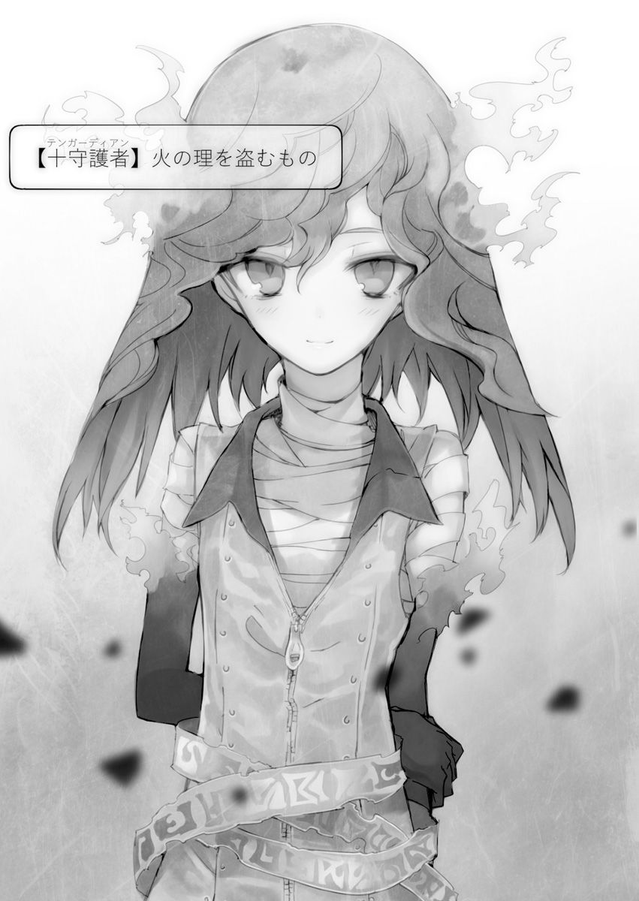
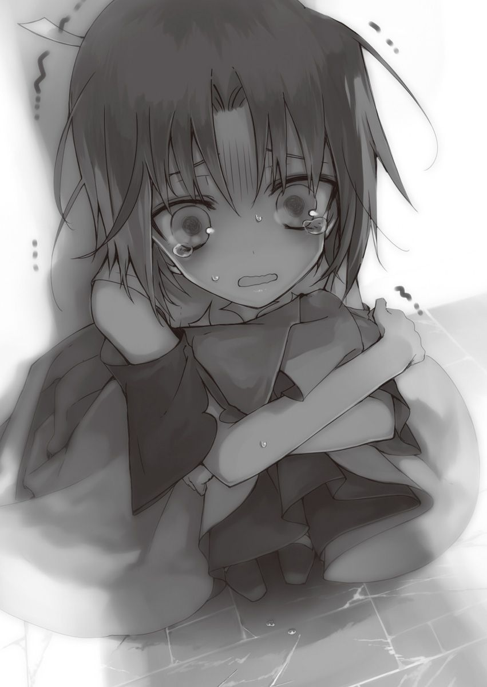
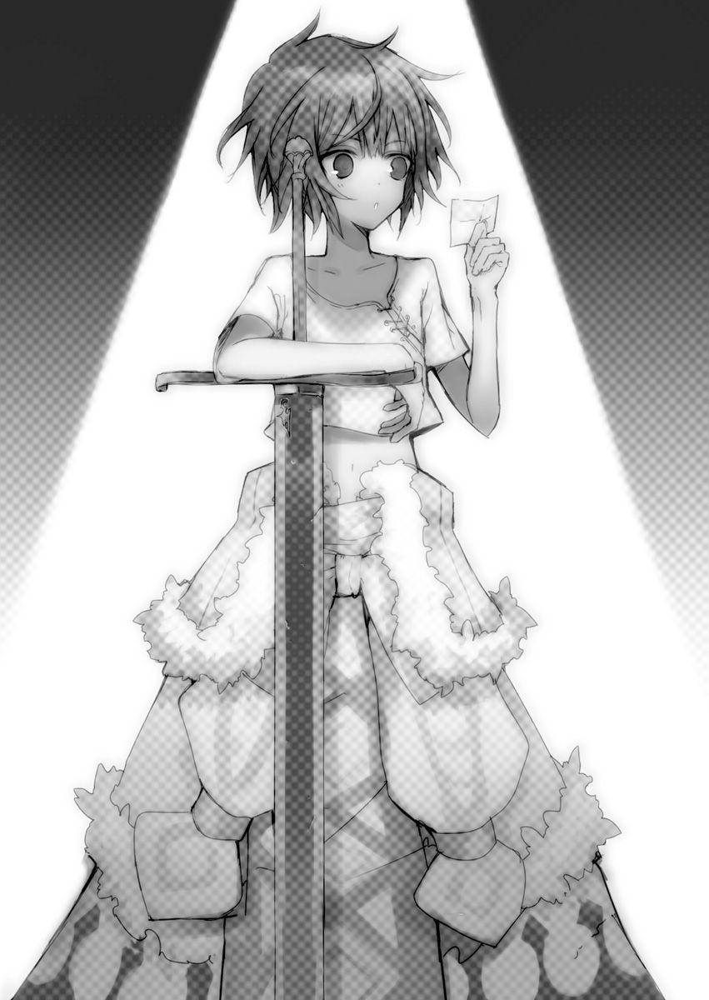
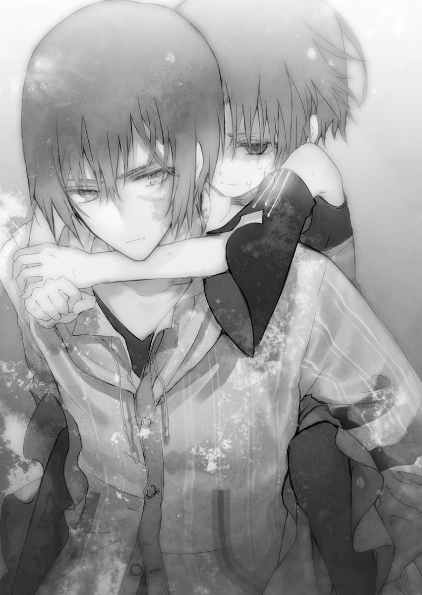

| 異世界迷宮の最深部を目指そう 2 | |
| 割内タリサ | |
| オーバーラップ (2014) | |
イラスト／鵜飼沙樹
――ここは『迷宮』。
そのイメージは人によって違うかもしれない。テーマパークのミラーハウスのようなものを思い浮かべる人もいれば、紙の上に書いた落書きを思い浮かべる人もいるだろう。
ただ、僕のような現代っ子ならば、まずゲームの迷宮を思い浮かべる。
そして、その迷宮という言葉にダンジョンとルビを振ることだろう。思春期の男の子ならば、ほとんどがそうだと思いたい。
だから、言い直そう。――ここは『迷宮』と。
薄暗い石の回廊に湿気がこもり、血生臭さと獣の匂いが混じっている。少しばかり陰気臭いが、ゲームのダンジョンのイメージと大差はない。
その暗い道を僕は進む。赤い髪の少女を連れて――
「むむっ。前方にモンスターを発見したぞ、ジーク」
迷宮の中を先導していた少女は異変を感じ、こちらへと振り返った。
その顔はあどけなく可愛らしい。燃えるような赤い目が特徴的な女の子だ。
小学生ほどの背丈のせいか、服の袖がたくさん余っている。腕まくりで丈を合わせているものの、その幼稚さは拭えない。人によっては、可愛らしい子供が遊んでいると心を和ませることだろう。
だが、僕は違う。和むどころか、ずっと臨戦態勢だ。常に死の危険がつきまとっているつもりで、戦闘用の次元魔法《ディメンション・決戦演算》を展開している。ゲーム的に言うならば、ボス専用の補助魔法を使っている状況だ。
当然だ。そこにいる赤い少女は、この迷宮のボスモンスターなのだから――
【十守護者】火の理を盗むもの
網膜に映る『表示』は、彼女がモンスターだという証明。
赤い少女の名前はアルティ。彼女こそ、連合国の探索者たちが何十年かけても倒せなかった化け物だ。
「わかった、アルティ。それじゃあ戦闘だ。僕は後ろから援護しよう」
そして、今日何度目かの戦闘が始まる。
周囲を感知する魔法《ディメンション》で、迷宮の敵影は把握できている。鼠のような姿の素早いモンスターが前方で走っていた。
モンスターを『注視』することで、鼠モンスターの名前がグレインラットであることを知る。ランクは低いが動きが速いモンスターだ。そこらの探索者では目で追うのも難しいだろう。だが、アルティは違った。

その小さな肢体を目一杯動かして、迷宮の暗い回廊を駆け抜ける。先日戦ったボスモンスター『闇の理を盗むもの』ティーダを思い出させるスピードで動き、腕から炎剣を伸ばしてモンスターに斬りかかる。
その炎が彼女の服に引火しないかと少し心配だったが、そこは流石『火の理を盗むもの』だ。火力の調節は完璧だった。
グレインラットは炎剣に斬り裂かれ、光となって消えていく。
迷宮の中で死んだモンスターは死体が残らない。残るのは魔石と呼ばれる鉱石だけだ。
落とした魔石をアルティは拾い、誇らしげな顔で僕に放り投げる。
その顔から、褒めて欲しいのだと察する。獲物を捕ってきた猫にそっくりだ。
「はいはい。すごいすごい。いいから早く進んで」
僕が冷たくあしらうと、アルティは少しだけ頰を膨らませた。
「むむっ。善意の協力者に対して冷たいな。ここは素直に褒めてくれていいと思うが？」
「いま褒めたじゃないか。まあ、君はボスモンスターだから、すごいのは当然だけどね」
「素直じゃないな。ジークは」
アルティはやれやれと肩を落としながら、言われたとおり奥へ進み始める。
油断なく、その後ろ姿を見つめる。
アルティは協力的だ。お喋りなところはあるが、僕の迷宮探索に貢献してくれているのは確かだ。その好意を行動で示している。
だからといって、すぐに信用はできない。彼女の全てが胡散臭すぎるからだ。
今朝、アルティと出会い、彼女の願いは聞いた。
その願いは『恋を成就させたい』という曖昧なものだった。
あのあと、深く話を聞いたところ、アルティに特別好きな人物がいるというわけではなかった。もちろん、アルティ自身が恋をしてそれを成就させることができれば、それが一番ではあるらしい。ただ、「自分は恋ができるような存在でない」と、アルティは何かを諦めたように自分を卑下した。
なので、妥協案として恋に落ちている人を紹介して欲しいという話に落ち着いた。
恋をしているのを見て、感じ、それが成就するのを見届ければ未練はないらしい。
下世話な話だ。そして、胡散臭い。その話が本当かどうか怪しいものだ。
しかし、断ることはできなかった。
恋を語るときのアルティは、見た目通りの幼さを感じさせた。恋に恋をしている乙女のように目を輝かせていた。もし、この話を僕が断れば、彼女はひどくショックを受けるだろう。そうなれば、彼女がどう動くかわからない。あのティーダと同等の力を持つであろうアルティの機嫌を損ねるのは、危険極まりなかった。
だから、考えに考えた結果、請け負う振りをすると決めたのだ。
戦意はないと言っている以上、アルティとの交戦は見送るのが一番だ。なにより、女の子の顔をしたアルティに剣を突きつけるのは気が引けるというのもある。さらに時間が過ぎれば、レベルの上昇により安全は増していく――なんて打算もある。
――というわけで、いま僕は、嫌々ながらもアルティと迷宮を歩いているわけだ。
アルティは僕に信用されたいがため、意気揚々と先導する。その間も、彼女は自分の話を振ってくる。迷宮に入ってからずっと、僕との距離を縮めようとアピール中だ。
「――つまりだ、ジーク。このまま恋も知らずに死ぬのは女の子としてちょっとなぁー、と私は思っているわけだよ」
「いや、そもそもおまえ、女の子って年なのか？」
「んー、少なくとも千年は生きている......はずだったような？」
「もうお婆ちゃんじゃないか。早く成仏したほうがいい。そのほうが皆のためになる」
「失礼なやつだな、ジークは。こんなに愛くるしい女の子をつかまえて、お婆さん呼ばわりとは。女性の扱いがなっていない」
「そりゃそうさ。女性じゃなくて、モンスターとして扱ってるからね」
軽い自己紹介もすませ、僕らは名前で呼び合っている。最低限だが、パーティーの体裁は取っている状態だ。だが、いつまでもこんな胃に穴が空きそうな探索を続けるつもりはない。早々にアルティの真意を暴くつもりだ。その計画は、もう考え終えている。
これから、僕はモンスター相手にわざと窮地に陥り、それをアルティに助けさせる。もし、この隙を見てアルティが僕を攻撃するようであれば、計画は大成功だ。引っかかったアルティに盛大なカウンターを叩き込めばいい。逆に、この隙を見てもアルティが僕を助けようとするならば、それはそれで成功だ。僕を助けたアルティを褒め称え、それを機にアルティを信用しきった振りをする。そのあと、効率を高めるためとでも嘯いて、別行動を提案しよう。その間にレベルを上げるのが理想的だ。
歩きながら、その計画を実行するタイミングを計る。
そして、二層三層と迷宮を進んでいく途中で、手ごろなモンスターを見つけた。
「ん、初めて見るモンスターだ、アルティ。動きが素早そうだから、次は二人で囲もうか」
「いい提案だね。それじゃあ、私が敵の背後に回ろう」
俊敏そうな四足歩行の獣モンスターだ。見るからに身軽そうなモンスターだったので、何の疑問もなくアルティは提案を承諾した。
二人でモンスターへ近づきながら、少しずつ挟み撃ちの形を作る。
アルティがモンスターの背後を取ったところで、二人同時に襲い掛かる――振りをする。
普通に戦ってしまえば、すぐに倒してしまうのはわかっていた。だから、僕はアルティの邪魔をしつつ、モンスターを手助けすることで戦いを悪化させる。そして、アルティがモンスターから少し離れたのを確認して、わざとモンスターに僕の剣を弾かせる。
武器を失った僕は、無防備な姿をモンスターに晒す。もちろん、右手を後ろに回して、『持ち物』に入っているスペアの剣をいつでも抜けるようにする。
そして、不覚を取った演技をする。
「――くっ、しまった！」
目線をアルティに投げかける。助けてくれと意思表示をしながら、アルティがどういった感情を見せるのか、つぶさに観察する。
ただ、アルティの反応は至極単純なものだった。
「ジークッ！」
焦った表情を浮かべて、全力で駆け出す。その先は僕でなくモンスターだった。全力で剣を突きながら、身体全てをモンスターへとぶつける。
アルティの特攻によって、僕はモンスターの攻撃から免れる。そのまま彼女は、モンスターの爪で身を裂かれながらも炎を噴出させて、モンスターを焼き殺した。
モンスターを光に変えたアルティは、すぐに顔を僕へ向ける。
「ジーク、大丈夫か!?」
そこには悪意も敵意もなかった。ただ純粋に安否を気遣った言葉。それがアルティの答え。
この場で汚らしいのは自分だけだった。
「......だ、大丈夫。ありがとう、アルティ。助けられるなんてふがいないな、僕は」
「よかった......。ふふ、気にしなくていいさ。仲間が助け合うのは当然だろう？」
助けることが当然だと、アルティは笑った。
包帯を切り裂かれ、血を流しながら、僕の無事を喜ぶ。
罪悪感ばかりが溜まっていく。上手く笑い返せている自信はない。
アルティはボスモンスターだ。モンスターである以上、信用するわけにはいかない。わかっている。けど、その決意も、彼女と触れ合えば触れ合うほど薄らいでいく。
アルティをモンスターと判断しているのは『表示』だ。そして、彼女の自称だ。それがなければ僕はアルティを異世界特有の亜人と判断するだろう。ここでは、僕にとってモンスターと大差ない獣人たちが生活に溶け込んでいる。もし、僕に『表示』なんてものがなく、アルティがモンスターと自称せず、いまのような友好的な態度で近づいてきたら、何の疑いも持たずに彼女と仲間になっていたに違いない。そう。彼女はそれほどまでに人に近いのだ。人と同じように知性を持って喋り、人のように感情があって、人に近い姿をしている。それが僕を悩ませる。気持ちを揺るがせ、決意を薄めていく。本当に、アルティを拒絶するのは正しいのか？ 人として最低な行為なのではないか？ モンスターとして扱ってもいいのか？ わかりあえる『人』を、一方的に貶めているのでは――......ああ、やめよう。
これ以上思いつめると、スキル『？？？』が暴走してしまう。
スキルの発動条件がわかっているのに、それを暴走させるなんて馬鹿のすることだ。
モンスターは全て警戒する。それに徹するのが、一番安全で合理的だ。
だから僕は予定通り、まずアルティを信用し始めている振りを始める。
「ははっ、助け合うのは当然か......。わかった。認めるよ。アルティは僕に望みを叶えて欲しいだけで、僕に敵意なんて一つもないってことはよくわかった」
「あれ、もういいのかい？ 私はもっと気長にやるつもりだったのだけどね」
「ここまでされながら意地を張り続けていたら、子供みたいで情けないからね。少しは信用することにする」
「んー、少しか。でも十分だよ。なにせ、私たちは人とモンスターだからね」
アルティは嬉しそうに頷いた。僕はそれを情けない気持ちで見つめる。
「じゃあ進もうか。確かに、アルティのおかげで戦闘が楽だ。もっと深い層にも行ける」
「ふふ、デレたな、ジーク。ずっと私に任せてくれてもいいぞ」
アルティは楽しそうだった。人間の子供のように笑って、僕を先導していく。
その後ろで、僕の心の中に暗い感情が渦巻く。
極力、アルティの顔を見ないようにしながら、迷宮探索を再開した。
◆◆◆◆◆
アルティと協力して、四層五層と問題なく迷宮をクリアしていく。
今日の探索には目標が二つある。
まず一つ目の目標は、一人で迷宮を進むこと。ディアは僕一人でも迷宮を探索できると言ってくれた。それを証明するのはとても大事なことだ。
特殊な形でだが、その目標は達成できている。いま、僕たちは探索者二人のように見えて、厳密には一人だ。むしろ、探索者一人よりも恐ろしい状況なので、証明は十分だろう。
そして二つ目の目標は、斬り飛ばされたディアの腕の回収だ。
五層に辿りついた僕たちは、前日にティーダと戦った空間に入る。
しかし、ぐるりと回って探してみたが、ディアの腕を見つけることはできなかった。誰かが持ち去ったのかもしれない。もしくは、迷宮には自浄作用の仕組みでもあるのかもしれない。例えば、汚物やゴミを糧とするモンスターが徘徊しているとか。
僕が顎に手を当てて悩んでいると、アルティがその疑問に答えてくれる。
「ディアって子の腕、もう返ってこないだろうね。たぶん、吞み込まれたんだと思うよ」
「吞み込まれるって、何に......？」
「《迷宮》に」
意味深に、そう言った。
アルティは迷宮のボスモンスターだ。迷宮側の彼女が言っているのだから、そうなのだろう。ディアの腕は迷宮に吞みこまれ、二度と返ってきそうにない。
ないものを探し続けても仕方がないので、僕たちは六層へ下りることにする。
そして、《ディメンション》を広げ、近くを索敵しようとして――
「うわあぁあアアア――っ!!」
甲高い悲鳴に遮られてしまう。
僕はびくりと身体を跳ねさせたあと、剣を構え直して周囲を見回した。
だが、誰もいない。目の届くところからの悲鳴ではなかった。
「お、悲鳴だね。どうするんだい？」
僕と違い、隣を歩くアルティは冷静だった。
迷宮内での悲鳴――正直、よくあることだ。誰もが自己責任で挑戦しているのだから、心を冷たく保って無視をするのが一番賢い選択だ。けれど、今回はその賢い選択を選ぶには、悲鳴の種類が悪かった。
その悲鳴は妙に甲高かったのだ。子供のように。
これが成人しているであろう声だったならば、僕もアルティと同じように冷静でいられただろう。けれど、相手が子供となると良心が騒ぎ出す。
偽善だとはわかっている。異世界に合わない倫理観だとわかってる。けれど、このまま見捨てると、ただでさえ眠りにくい異界の夜が、もっと眠りにくくなってしまう。
「ジーク。そんな顔をするくらいなら、助けに行くといい」
僕の顔を見て、アルティは助言する。
「......アルティはどう思うんだ？」
純粋に意見を聞きたいのもあるが、ボスモンスターである彼女の道徳観も気になった。
「もちろん、人助けはいいことだ。ただ、助けるならば最後まで責任を持たないといけない。自分の賄える範囲を間違えないことだね。私から言えるのは、それくらいかな」
酷く真っ当なことを、目の前のモンスターは言った。
ただ、少し他人事のように聞こえる。人助けを善しとしても、自ら動く気はなさそうだ。
「アルティは助けに行かないのか？」
「それはないよ。なにせ、私はモンスターだからね。君以外の人間を助ける気はない」
優しい言葉と裏腹に、アルティの態度は冷たい。モンスターとしてのルールを遵守しているのがわかる。もし、助けに行くのならば僕一人だろう。
先の悲鳴は急を要していた。迷っている時間はない。即断する。
「助けに行ってくるよ。見捨てると寝覚めが悪いからね」
自分の性が嫌になりながら、悲鳴の聞こえた方角へと《ディメンション》を広げる。
数百メートル先、横幅の広い回廊で四人パーティーが大型モンスターと交戦していた。
その内の一人が危機に陥っているのを把握し、アルティの返事を待たずに僕は駆け出す。
「――ああ。やはり、君は――」
走り行く途中、アルティの声が後ろから聞こえた。
ただ、《ディメンション》を先にいる四人パーティーへ集中させていたせいか、その言葉を最後まで聞くことはできなかった。
獣のように回廊を駆け抜け、アルティを置きざりにする。進むにつれ、回廊に少しずつ水気が増していった。そして、ついには浅瀬となったところで戦場へと辿りつく。
その中央で触手を無数に生やした巨大なボスモンスターが暴れていた。一見すると巨大烏賊のように見える。その近くには、タコに似た眷属モンスターが十匹ほど蠢いている。
四人パーティーのうちの一人――金髪の少年が巨大烏賊に捕まっていた。触手に足を摑まれ、宙で逆さ吊りにされている。そして、仲間の少女の一人が少年を助けようと、無茶な突撃をしようとしているのも見える。残り二人の仲間も少年を助けようとしているが、眷属モンスターが壁になり、近づくことができないようだ。
最悪だ。僕と同じくらいの年齢の探索者パーティー。それも女子供までいる。
これを見殺しにしてしまえば、僕のストレスが大変なことになる。
だから僕は、すぐに全力で叫ぶ。
「手助けします！ 僕は敵じゃありません!!」
まず行ったのは、敵対する意思はないという宣言。
場合によっては横取り扱いされ、逆に攻撃される危険があるからだ。
そして、その宣言の返答を聞くことなく、大型モンスターへと走る。
いまこのときも事態は悪化している。宙吊りにされた少年は巨大烏賊の巨大な口へと近づいていき、強攻していた少女までも触手に捕まっているのが見える。
「――魔法《ディメンション・決戦演算》！」
僕の乱入に気づいた眷族モンスターたちが行く手を阻もうとするが、次元魔法で感覚を鋭敏化させて、最小限の動きでかわしていく。
まず僕は、宙へ持ち上げられようとしている少女の下へと辿りつき、絡みついている触手を斬り裂く。すぐに剣を鞘に戻し、落下してくる少女を抱きとめた。
「きゃっ！ え、え？」
少女は何が起きたのかわからないようだ。小さな悲鳴と共に、疑問符を浮かべる。
そして、その数瞬の後、僕に抱きかかえられていることに気づき、顔を赤くした。説明をしている時間はない。すぐに少女を地面に降ろして、次の目標へと走る。
一番の問題は少年だ。
少年が巨大烏賊の口の中に放り込まれる寸前――間一髪のところで、少年の足に絡まっている触手を斬り裂いた。
落ちる少年の身体を抱きとめ、すぐに巨大烏賊から離れる。
「ぁ、あ......」
少年は恐怖で言葉が発せないようだった。年の頃は僕より少し下くらいだろうか。顔が青ざめ、身体は震えている。このままだと身体がろくに動かなさそうだ。
少年を安心させるため、できる限り優しく微笑んで、その頭を撫でる。
「もう大丈夫だよ。安心していい。だから、ちょっと離れててね」
「ぁ、あ、はい......」
落ち着きを少し取り戻した少年は、頷きながら僕の両腕から降りる。
彼が離れたのを確認して、身体を化け物へと向ける。
あとは敵を倒すだけだ。剣を構えて、巨大烏賊を『注視』する。
【モンスター】カラペスクラーケン：ランク７
体長は五メートルほどだろうか。無数の触手がイカを彷彿とさせるが、その胴体にあたるところは甲殻類に近い。まるでイカとエビが合わさったかのようなモンスターだ。
見たところ胴体の動きは鈍く、触手を主力としているモンスターのようだ。水棲であると特徴から見て取れるが、特殊な能力を使っている様子はない。
だが、それでも数え切れない触手を一人で相手にするのは厄介極まりない。
仕方なく、更なる補助魔法を足そうと決めたとき――炎が戦場を奔る。
「......え、炎？」
《ディメンション》に意識を傾けども、その炎の出所はわからなかった。後ろの四人パーティーの魔法でないのは確かだった。
だが、その炎は魔法のように動いて、触手を焼いていく。明らかに僕の助勢をしていた。
「もしかして......」
アルティの炎であると予測し、僕は炎と共にカラペスクラーケンを攻撃し始める。
迫りくる触手を斬り裂きつつ、感覚器官だと思われる箇所を見つけては次々と潰していき、とどめにカラペスクラーケンの頭上へと跳び、剣を脳天へと突き刺した。
「キィ、ギィァアアァアアアッー！」
化け物は金切り声をあげる。その声に構うことなく、脳天に突き刺した剣へ力を入れ直し、縦に斬り裂く。その一撃に必殺の感触を感じた僕は、すぐに化け物から離れた。
傷口から噴水のように黒い体液が溢れ、その巨体は水しぶきをあげながら地面へと倒れこむ。無数の触手もそれに倣って動かなくなり、ほどなくして光となって消えていった。
【称号『深海の暗闇』を獲得しました】
技量に＋0.01の補正がつきます
その『表示』を見届けた僕は、次に周囲の眷属へ目を向ける。
迷宮の眷属たちは主が倒れても消えはしない。自らの主を殺した僕のほうへと怒り狂って襲いかかってきた。
――よかった。
四人パーティーと交戦していたモンスターもこちらに向かってきているので、これで死人が出ることはないだろう。安心しつつ、眷属モンスターたちを迎撃する。
軟体を活かした攻撃をしてくるものの、動きは遅い。《ディメンション・決戦演算》を展開していれば、遅れをとる要素はない。殲滅を終えるのに大した時間はかからなかった。
「......はあっ、はあ、はあ」
ダメージは負わなかったものの、全力で動いたため、肩で息をしてしまう。
《ディメンション》で周囲にモンスターがいなくなったことを確認する。戦場に残ったのはパーティーが一組と、回廊の浅瀬に落ちた魔石だけ。
いつの間にか、助勢してくれていた炎は消えていた。
「あ、あの......！」
僕が安心していると、パーティーの中の一人が声をかけてきた。
最初に助けた少女だ。長い金髪をツインテールにしているという、なかなかファッションの尖った子である。身につけているものは高そうなものばかりで、迷宮には不釣合いだと思った。その清潔さと実用性を重視した藍色の服は、まるで学校の制服のように見える。
「えーっと、危なそうだったから助けたけど、駄目だったかな？」
助けたあとのことは全く考えていなかった。なので、変な言葉が口から出てしまう。
それを聞いた少女は焦ったように、ぶんぶんと首を振りだす。
「い、いえ、そんなことありませんわ！」
......ありません、わ？
この世界で――いや、両方の世界を合わせても、初めて耳にする喋り方だった。もちろん、物語やゲームでなら聞いたことはある。しかし、実際に喋る人を見ると驚くものがあった。
「そ、そう？ それなら良かった」
「危ないところを助けて頂き、とても感謝していますわ。あの凶暴なモンスターを一瞬で倒すだなんて......。よろしければ、お名前を聞かせてもらえませんか......！」
少女はキラキラと目を輝かせ、名前を尋ねてくる。頰を紅潮させ、鼻孔が少しばかり膨らんでいるように見える。簡単に言えば、興奮状態だ。
深窓の令嬢のような端整な顔立ちが台無しになっていた。
「い、いや、名乗るほどの――」
面倒事は嫌だし、名乗るのはやめようと思った。
「そんな......、お願いします。お名前を！ お名前をぉ......!!」
「ジ、ジークです」
だが少女の剣幕に押されて名乗ってしまう。
「ああっ、ジーク様と仰いますのね。なんて、美しい響き」
少女は恍惚とした表情で僕の名前を反芻する。
――あ、なんか駄目な人だこれ。
少女に対する第一印象はその一言に集約されていた。無言で立ち去ればよかったと、すぐに後悔する。いや、いまからでも遅くはない。
僕は逃げ出すため、両足に力をこめる。すると、耳の近くで弾けるような火花が散った。
「熱っ！」
火が灯り、同時に声が聞こえてくる。僕だけに聞こえてくる小さな振動だった。
（それは駄目だよ、ジーク。さっき言っただろう？ 助けるならば最後まで責任を持たないといけない、ってね）
アルティの声だ。
朝と同じ要領で、炎を使って話しかけているようだ。《ディメンション》を使うと、小さな炎が僕の耳裏に浮いていた。周囲の人間には聞こえない声で、僕は炎に答える。
「アルティ、きちんと助けたじゃないか。これ以上何をしろって言うんだ」
（見ればわかるだろう。そこの少女は、君にお礼をしたがっている。それを受け取らずに去るなんて私は許さないよ。それは責任の放棄だ。それだけは絶対に許さない）
こんなにもアルティが重々しい声を出すのは、初めてのことだった。
仕方なく、僕は譲歩する。
「......わかったよ。そこまでアルティが言うなら、話くらい聞く。けど、それなら君も姿を現して合流してくれ。一人だと、なんか嫌な予感がする」
（いや、ここは見守らせてもらうことにするよ。逆に私はいい予感がしているんだ）
「い、いいから早くこっち来てよ。なんかこの子やばい」
（......しかし、モンスターとつるんでいると噂されるのは君も避けたいだろ？ 私は身体が炎のモンスターだ。いくら気をつけても、万が一のこともある。ゆえに、君が一人になるまでは炎となって傍に控えることにするよ）
「それはそうだけど......」
アルティの言っていることは都合のいい言い訳にしか聞こえなかった。
少し前に彼女が言っていた『恋を見届けたい』という願いが頭をよぎる。
そんな僕の苦悩を無視して、問題の少女は僕に近づいて手をとる。
「ジーク様！ 少しお話をしませんか！ お話を!!」
「う、うん」
その勢いに押され、僕は頷いてしまう。
（ふふふ）
笑って見守るだけで、口出しする気はなさそうだった。
仕方ない。できるだけ早急に少女の話を聞いて、さっさと終わらせよう。そう心に決める。
――だが、その決意は何の意味も持たない。
少女への第一印象と後悔が間違いではなかったことはすぐに証明されるのだった。
◆◆◆◆◆
「試験......？」
「はい。わたくしたちは学院の試験で、迷宮に挑戦していますの」
ツインテールのお嬢様、フランリューレ・ヘルヴィルシャインは胸を張って答えた。彼女は四人パーティーのリーダーで、おおよその説明を一人で僕にしてくれた。
フランリューレたちは迷宮の西に位置する国エルトラリューの学院生らしい。エルトラリューという国は魔法文化の発達した国で、勤勉さが特徴だと聞いている。特色の一つとして教育機関の数が多く、迷宮のすぐ傍に大陸最大の学院を用意したというのは有名な話だ。それがフランリューレたちの通う学院らしい。
「へえ、そうなんだ......」
だが、いまの僕には関係のない話だ。できればもっと暇なときに聞きたいところだ。
「一級探索者の資格は、家柄の力だけでは手に入りません。迷宮探索の試験は最上級クラスの生徒たちの中でも、実力のある者だけしか挑戦できない試験ですの」
正直、いますぐにでも逃げ出したい。
だが、絶え間なく話しかけてくるフランリューレのせいで上手くいかない。
「それはすごい。そんなにすごい君たちなら、この先も大丈夫そうだね。うん、じゃあ僕はそろそろ失礼させてもらおうかな」
「ま、まま待ってくださいませ！ お礼をっ、お礼をさせてください！ 命を助けていただきながら、何のお礼もしなければ貴族の名折れですわ！」
僕が別れ話を切り出すたびに、フランリューレは顔を赤くして必死に引きとめる。
ここまで露骨だと、空気の読めない僕でもわかる。
どうやらフランリューレは僕に同行して欲しい様子だ。僕を利用して試験とやらを楽にクリアしたいのか、もしくは、自惚れでなければ僕に好意を持っているのかもしれない。
（ふふっ、ふふふふっ）
耳裏から聞こえてくる笑い声が幻聴でなければ、後者の確率が高い。
「ほら、ライナー。あなたからもお礼を......。あ、ジーク様、こちらはわたくしの弟ですわ」
先ほど、死に瀕していた少年が前に出てくる。
サイズの小さい制服に身を包み、品のある顔立ちをしている。だが、姉のフランリューレと比べると少し華やかさに欠ける。同じ金髪だが、色がくすんでいる。目の色も同様だ。
「ジークさん。危ないところを助けていただき、本当に感謝してます。......しかし、見ての通りです。腕のいい探索者であるジークさんから、うちの姉様を説得してくれませんか？ 無駄に命なんて賭けてないで、金持ちのお嬢様は帰れと言ってやってください」
ライナー君は心底疲れたような声で毒を吐く。
うん。死に瀕していた子は言うことが違うな。
「ラ、ライナー、なんてことを！」
「姉様。いますぐ、この方にお礼をすべきです。道を戻り、迷宮から出て、うちの館でもてなすべきでしょう。それが一番です。今回は機が悪かったと思って、諦めましょう」
どうやらライナー君は迷宮探索に乗り気ではないようだ。どうにか、フランリューレを説得して帰ろうとしている。
だが、ここで連行されるのも困る。僕にとっては、もてなされたからなんだという話だ。それよりも、迷宮の攻略を進めたい。
「ライナー君、もてなしなんていいよ。僕は先を急いでるから......」
「あ、ちょ、待ってください。行くなら、どうかこの姉様の心を折ってから行ってください。説得してくれたら、あとでどんなお礼でもします！」
ライナー君が余りに必死すぎて、僕の足は止まってしまう。
彼もなかなか図太いやつだ。どうにかこのチャンスを活かして姉を諭そうとしている。
「いいえ、このフランリューレ。何があっても棄権などは致しませんわ。此度の試験はわたくし一人の問題ではなく、ヘルヴィルシャイン家の名誉にも関わりますの」
しかし、フランリューレから諦める様子は全く窺えない。
僕が姉弟の間で板ばさみになっていると、三人目が話に入ってくる。
「なぁー、お兄さん。探索者であるお兄さんに依頼したいんだが、いいかなぁ？」
大きな剣を腰に下げた獣人だ。ただ、獣人とはいえ、布のかぶり物とゆったりとした服を着ているため、外見は人間と変わりない。名前はエルナさんと聞いた。
「依頼？」
初めて聞く単語に、つい聞き直してしまう。
本当は問答無用で立ち去ったほうがいいのだろうが、依頼という単語を聞いてしまいゲーム好きな相川渦波が自己主張し始める。
「そうさぁ、依頼さぁー。えっと......、ここに金貨が一枚あるよぉ。これを報酬に、迷宮の案内をしてくれないかなぁ。腕も立つようだから用心棒代も含んでるよぉ。私らは試験という競争の中で、一位をとりたいわけでぇ。そこで、お兄さんは適任なんじゃにゃいかなと思ったんだ。――にゃはは、ごめんよ、ちょっと訛った」
要するに、ゲーム的に言うと『クエスト』にあたるイベントのようだ。
僕の好奇心に少しだけ火が灯る。さらに言うと、エルナさんの頭の布を外せばどんな耳が出てくるのかも気になる。訛ると猫語になるということは、猫耳である可能性は高い。
まだ、この世界で猫耳を見たことはないので、無駄に好奇心が搔きたてられてしまう。
「そ、それです！ ナイスな提案ですわ！ ライナーもこれならよろしいでしょう!?」
フランリューレはそれだと言わんばかりに、ライナーを言いくるめようとする。
興奮したフランリューレを見て、落ち着きを取り戻す。
「いや、僕は適任じゃないと思うよ。案内なら、もっと年をとった熟練の探索者を探したほうがいい。僕は見ての通りの若造で、案内には全く向いてないから」
「そんなことはありませんわ！ ジーク様が力不足などありえませんわ！」
だが、異様に僕を妄信しているフランリューレがそれを否定する。
その妄信っぷりは狂気的で、ちょっと怖い。僕はフランリューレから距離を少し取る。
見かねたエルナさんが僕へと近づき、小さな声でささやく。
「さ、察してくれよぉ、お兄さんー。うちの姫さんがあんたのことを気に入っているようなんだよ。姫さんが暴走して変なことしないうちに、傭兵という形で落ち着いて欲しいんだよぉ。迷惑なのはわかっているから、報酬はさっきの二倍は出すよ。法外だよぉー、金貨二枚だよぉー。案内はこっちの竜人の娘がするよ。十層までっ、十層まででいいから。何かあったら、私らを見捨てても文句は言わんから、とりあえずついてきてくれよぉー......」
若干泣きそうなエルナさんだった。彼女の言う『姫さん』――フランリューレの暴走が怖いようだ。確かにこの様子だと何をするかわかったものではない。
だからこそ、僕は離れたい。離れたいが、金貨二枚という報酬に後ろ髪を引かれてしまう。話からすると四人は貴族の子で、かなりの金持ちというのは察することができる。その報酬に偽りはないだろう。さらに、初の依頼というのも、僕の心を揺さぶる。
その結果、僕は妥協してしまう。
「わ、わかりました。僕も迷宮の奥に用事がありますから、十層まで付き添うという形でしたら構いません......。大変ですね、あなたも......」
法外の報酬とクエストの魅力――なにより、エルナさんの泣き落としに負けてしまった。
「ありがとうなぁ、お兄さん。さあ、決まりましたよぉ、フラン！ ジークさんは傭兵という形で、十層まで護衛してくれるそうですよ。いやぁーよかったですねぇー」
すぐに、エルナさんはパーティーへと報告する。
「ああっ、素敵ですわ！ ジーク様はわたくしを守る騎士になってくれますのね！」
「いや、騎士ではないです......。少しの間だけですが、よろしくお願いしますね......」
興奮するフランリューレに引きながら、挨拶をする。
他の三人も、改めて挨拶をするため、僕へと近寄ってくる。
「僕はライナーです。ジークさん、頼りにしています。本当は帰りたかったのですが仕方ありませんね。万が一のときは、この身を姉様の盾にしましょう。僕にはそれくらいしか取り柄がありませんから」
「獣人のエルナで戦士やってるよぉ。こっちの無口な女の子はスノウ。斥候だよぉ」
「......どうも」
三者三様の挨拶が返ってくる。
「そして、わたくしはヘルヴィルシャイン家が七女、フランリューレですわ。ジーク様、どうかお見知りおきを！」
リーダーであろうフランリューレの挨拶を最後に、僕たちは臨時パーティーを結成する。
ただ、その間も耳裏からの笑い声は止まらない。
（ふふっ、いいね。いいじゃないか。面白いよ。なあに、十層までの道のりは何も気にしなくていい。楽勝さ。なにせ、十層の守護者である私がついているのだからね）
この展開にアルティはご満悦の様子だった。
こうして、新結成された五人パーティーで迷宮探索は再開される。
彼女たちの試験の課題は、特定アイテムの入手だ。各層に存在するボスのドロップアイテムを集めることで、迷宮探索の証明をするらしい。
一層から十層までのアイテムを収集し、帰ってこれたものだけが学院に一級の探索者として認められるというわけだ。
アルティの言うとおり、学院生パーティーたちの試験とやらは楽勝だろう。
陰ながら敵である十層の番人が協力しているのだから、茶番と言っていいほどだ。
五人＋αでの探索だ。なら、労力と危険は五分の一――と気楽に僕は考えていた。
ただ、現実はいつも厳しい。
五人パーティーの探索が開始される。しかし、五倍の人数なのに一人で戦うよりも五倍疲れるという、まさかの事態に陥るのだった......。
◆◆◆◆◆
「これで、トドメですわぁ！」
フランリューレの豪奢な剣が、巨大な蜂の姿をしたボスモンスターの頭を割る。
ボスモンスターは浮力を失い落ちていく。落ちていきながら、光となっていくため、その上にいたフランリューレが宙へと放り出されてしまう。
僕は雇い主であるフランリューレを助けるために、落下地点へと走る。
剣を納め、フランリューレに負担をかけないように抱きとめる。
いつかの焼き直しみたいな状態になり、以前と同じくフランリューレは頰を染めた。
だが、彼女だけに構ってもいられない。すぐに全員の安否を確認する。
ライナー君はフランリューレのフォローのため疲労困憊となっていた。両の肩を激しく上下させて、呼吸を整えている。そして、獣人少女のエルナさんは遠いところで眷属モンスターを倒しているのが見える。彼女は自分の命が一番のため、全く前へ出ようとしない。最後にスカウトの竜人のスノウさんは......、うん、やる気がない。
単純な話だった。この四人、パーティーとして全く機能していない......。
個々としての実力は異様に高いのに、各々のモチベーションや意思が一致していないためか、動きがバラバラだ。その四人の間を取り持つ労力は、一人で戦うときの比ではなかった。
「やりましたわ！ これで八層はクリア！ ジーク様が参加なさってから、すごいスピードですわ！ 流石はわたくしの騎士様！」
「お、おめでとうございます、フランリューレさん......。けど、そのために、いつも弟のライナー君が死にかけていることをお忘れなく......」
血を吐きそうなほどに息切れしているライナー君が近づいてくる。
「はぁ、はぁ......。いいんです、ジークさん。僕のような拾われ貴族は、姉様を守ることくらいでしか価値を見出せないんですから。ここで役に立たなければ、僕はゴミです。ゴミクズですから、ははは、ははははっ、は、はぁ、はぁ......」
ライナー君は死にそうな顔で笑う。
彼は複雑な家庭環境が垣間見える発言が多くて困る。しかし、関わったら負けだ。なぜか泥沼に足を突っ込むイメージがするので、絶対に突っ込まないようにしている。
最後まで何も聞かずに、このパーティーを抜けると僕は決意し直す。
そして、安全圏で戦っていたエルナさんも戻ってくる。
エルナさんの戦闘から試験突破の意思がないことはすぐにわかった。彼女のスタンスは徹底した自分優先だ。余裕があればヘルヴィルシャイン姉弟の手助けをする程度。その淡白な姿勢は、利害の計算だけで動いている証拠だろう。そのスタンス自体は好みだが、絶対に背中を預けたくないタイプである。
「......ふう。......おつかれ」
気だるげにスノウさんも戻ってくる。実際のところ、彼女が一番の問題児である。
【ステータス】
名前：スノウ・ウォーカー HP511/533 MP211/240 クラス：スカウト
レベル14
筋力10.22 体力10.01 技量5.24 速さ5.43 賢さ7.91 魔力10.84 素質2.62
先天スキル：竜の加護1.09 最適行動1.89 古代魔法2.02
心眼1.07 鮮血魔法1.00
後天スキル：なし
最もレベルが高く、最も才能に溢れている女の子だ。種族が竜人であるおかげで基本能力も高い。ディアを除けば、いままで会った探索者の中で一番の素質を持っている。なにより、現状で僕に匹敵している能力値は大変魅力的だ。正直、めちゃくちゃ欲しい人材である。
ただ、致命的にやる気がない。
魔法適性が高いはずなのに魔法を全く使わず、膂力に任せた適当な攻撃のみ。
真面目に課題を受けていないのは明らかだった。
フランリューレにスノウさんの話を聞いたところ、「数合わせですわ」と答えられ、スノウさん本人に聞けば、「......死人出ないかな。出たら帰れるのに」とか言っている始末である。
猪突猛進のお嬢様。姉だけしか見ていない少年騎士。自分一番な獣人戦士。やる気ゼロの竜人。およそ考えられる限り、最悪なパーティーである。
まだ見ぬ学院の株は下がる一方だ。学院というのならば、教える人間がいるはずだ。教える人間は、この四人を見て何とも思わなかったのだろうか。僕なら止める。絶対止める。
けれど、傭兵という仕事を了承してしまった以上、途中でやめるわけにもいかない。
ボスのドロップを回収し終えたフランリューレが、全員に号令をかけるのを黙って聞く。
「おつかれ様ですわ、ライナー、エルナ、スノウさん。それでは急いで、九層に向かいましょう。この調子ならば、一位通過もありえない話ではありませんわー」
雇い主様は機嫌よく歩き始める。彼女たちの課題は残り二つ。
九層のボスを倒し、十層にある『消えない炎』を手に入れれば終了だ。
十層にボスはいないので、実質は残り一つのようなものだとフランリューレは言う。僕の耳裏で笑いを堪えているボスがいるので、実際その通りだろう。
九層のボス撃破は、パーティーの実力的に問題ないはずだ。だが、僕の心労は間違いなく溜まるだろう。
元の世界で遊んだ効率的なゲームプレイと、この世界に来てから行ったディアとの理想的な二人パーティー。それら二つと比べると、このバラバラなチームプレイは僕にストレスを溜める一方だ。正直、逃げたい。すごく逃げたい。
......い、いや、落ち着け。
実質、あと一回。一回で終わりなのだ。
マイナスのことではなく、プラスのことを考えて精神を落ち着けよう。
うん。僕はよくやっている。
これは一人で十層まで行くよりも、何倍も価値ある探索だ。終わってしまえば良い経験となっているに違いない。当初の思惑とは随分とずれてしまったが、単独の挑戦よりも難度の高い試練になっている。むしろ、こんな機会は滅多にないのだから喜ぶべきことなのだ。
そう僕は気持ちを持ち直して、先頭を歩き始める。
索敵が得意と進言したので、スカウトのスノウさんと先頭のポジションを取っている。
「それでは進みましょうか。スノウさん、先行しましょう」
「......はい」
隣を歩くスノウさんの横顔を盗み見る。
竜人といえど、人間とさほど変わらない姿だ。違うところと言えば、青みがかった黒髪から小さな角が生え、腰から鱗に覆われた尻尾が突き出ているくらいだろう。角は民族的な装飾品によって飾られているので髪飾りの延長にしか見えないし、尻尾だって裾の長い衣服を着ているから気にならない。
その気だるげな三白眼さえなければ、民族衣装を纏った涼しげな美少女である。
「......どうしました？」
スノウさんは僕が盗み見ていることに気づいた。流石は高レベルの探索者だ。
性格に多少難があるものの一番の優良物件なので、スノウさんと交流しようと試みる。
「いや、スノウさんはどうして試験を？ 乗り気じゃなさそうですが」
「......単位が足らないんです」
「単位？」
「えーと、単位というのは、その......。ああ面倒です、また今度で......」
多少じゃない、かなり難がある......。
「えっと、よくわからないのですが、単位というものが学院では必要なんですね。スノウさんはそれが足りないけど、この試験に受かればそれが足りる。そういうことですか？」
元の世界の経験から話を推測する。大学の単位をイメージすればそう遠くはないはずだ。
「......おぉ、すごいですね。その通りです。学院生でもないのによくわかりますね」
正解のようだった。スノウさんは驚いたような表情を見せる。
「なるほど。スノウさんは仕方なく受けているんですね。それで、その、あまりやる気がないんですね......。でも、いいんですか。クリアしないと単位がもらえないのでは？」
「いや、挑戦することに意義がある......らしい。参加すればとりあえず単位は貰える」
「ああ、それで......」
それで、やる気ゼロなのか。
なんだろう。僕の世界の学生たちを思い出す。単位のために講義や授業にはでているものの、内容に興味はないから寝て過ごす。それに近いものを感じる。
「ジーク様っ。先導するのはスノウさんだけで十分ですので、こちらへ！」
スノウさんと話していると、背後からフランリューレの声に挟まれる。
振り向くと、拗ねた様子のフランリューレが手招きしていた。
機嫌を損ねたら厄介な雇い主様だ。本当ならばスノウさんの情報をもう少し手に入れたいところだが、僕は言われるがままに後方へと下がるしかなかった。
後方へ下がり、フランリューレを守るように隣を歩き始める。
フランリューレの左を僕が、右をライナー君が守る形だ。
最後尾にエルナさんが歩き、後方を警戒している。
「............」
「......あの、ジーク様、わたくしには何かありませんの？」
「え、何かって......？」
「わたくしのことですっ。知りたいこととか、普段は何しているのとか！」
唐突に声を荒らげるフランリューレに僕は困惑する。無言の探索は好みでなかったらしい。
しかし、正直に言ってしまえば彼女と話すことは一つもない。このパーティーの中で興味があるのはスノウさんだけだ。フランリューレも才能は人一倍あるものの、スノウさんと比べると見劣りしてしまう。
だが、このままだと面倒なことになるのは間違いないので、フランリューレの機嫌を取り始める。そして、お見合いのように趣味や特技を交換し合ううちに、八層をクリアしていく。
多少気が散っていても、雑魚モンスター相手ならば余裕だ。やはり、能力だけは高いパーティーなのだ。能力だけは。
九層への階段を下りていく頃には、他愛のない雑談もネタ切れになる。
試験の終わりが近づき、パーティーの緊張が高まっていく。
下調べは終わっているため、目的となるボスの居場所はわかっているらしい。先導するスノウさんは迷いなく、ボスエリアへと歩を進める。回廊は徐々に光を失っていき、足場が悪くなっていく。洞窟のようなゴツゴツとした岩の道を進んでいく。
最後のボスの名前はレギオンバット。
巨大なコウモリが複数で出てくるらしい。一体に致命傷を与えても他のコウモリが結合して修復するという厄介な能力を持っている。暗闇の中、いかに光を絶やさず複数のモンスターに対処できるかが重要になる――というのが学院の授業の締めにあったと聞いた。
ただ、正直なところ、僕の魔法《ディメンション》があれば余裕であろうボスだ。
単純に暗いというだけでは、僕の空間把握能力の前では無意味だからだ。
案の定、レギオンバット戦はすぐに終わった。
鍾乳洞のような空間に入ったところでレギオンバットに奇襲されたが、《ディメンション》の索敵能力で問題なく迎撃できた。
あとは教科書どおりに戦闘を進めるだけ。フランリューレたち四人の個性が悪循環しない限り、負ける要素はなかった。
僕の心労は溜まったものの、大した時間もかからず九層の課題はクリアできた。
みんなでまばらなハイタッチを交わしたあと、一行は十層へと向かう。
最後まで気を抜かず『正道』を進み、十層へと下りていく。
意識を耳裏の炎へ傾けると、自宅へ帰ったかのような反応が返ってくる。
（やっと、十層についたね。ただいまー）
十層は迷宮にあるまじき明るさに満ちていた。
どこまでも広がる部屋に、見渡す限りの炎。それが十層の全てだった。
身を焦がすほどの炎ではない。それでも、至るところに散らばった炎は、この部屋に入ることを躊躇わせる。
『正道』の結界によって火が消えている道を選んで、僕たちは十層を歩いていく。
適当なところでスノウさんがビンを取り出して、炎を収めようとする。異様な光景だった。切り取られたかのようにビンの中に炎は吸い込まれ、ビンの中には燃焼するものがないというのに燃え続ける。
普通の火ではない。まるで、怨念のこもった鬼火のようだった。
しかし、これで課題は終わり。ようやく、このパーティーから解放される。
「よし、問題なさそうだね。おめでとう、みんな」
別れを切り出すため、まずは適当に祝福する。
「いや、お兄さん助かりました。あなたのような探索者と協力できたのは本当にラッキーでしたよぉ。途中で誰かしらが怪我して帰ると思っていましたからぁ。あ、約束の金貨です」
エルナさんは金貨を手渡しながら、お礼を言う。そこにフランリューレが割り込む。
「ジーク様！ せっかくですので地上までの護衛を頼んでもよろしいでしょうか！ そう、せっかくですので、ヘルヴィルシャイン家まで護衛を！ そのあとは、お礼にディナーでもと思ってますの！ わたくしたちはジーク様のように若くて強くて、誠実で優しい探索者様と縁が欲しいと、常々思っていましたの！ どうか、お願いしますわ！」
フランリューレが僕にご執心なのは、人の気持ちを察することが得意でない僕でもわかる。正直、彼女のような容姿端麗な女の子に好かれるのは嬉しい。けれど、彼女と距離が近づいても、面倒事が増えるだけとしか思えなかった。
「すみません、フランリューレさん。僕の本来の目的は十層の先にあるのです。残念ながら地上までの護衛はできません」
適当なことを言って断る。残念そうな演技をすることも忘れない。
「そ、そうですの......。助けて頂いた上に無理強いまではできませんわ。――けど、わたくしたちヘルヴィルシャイン姉弟は、ジーク様を我が家に招待する用意がありますわ。いつでも頼ってくださいませ......」
「え、僕も？ まあ、ジークさんなら遊びに来てくれるのは歓迎ですけど」
独断でライナー君も歓迎していることにするフランリューレだった。
僕は苦笑いを浮かべながら、最後の礼をする。
「ありがとうございます。では、また機会があれば」
「はい。機会があれば、ぜひエルトラリュー学院まで！ あ、ヘルヴィルシャイン家はフーズヤーズの三番地にあります！ どちらでもかまいませんので、何かあれば、ぜひ！」
名残惜しそうにフランリューレは最後までアピールをし続ける。もしも、元の世界で出会っていたならば、一生懸命で好感が持てる人だと思う。けれど冷静に、いまの僕には必要のない人だと判断する。最後に残りの二人とも挨拶をかわす。
「お兄さん。騙されやすそうだから、騙されんようになぁー。またなぁー」
「......あなた、迷宮に向いていません。......職変えをお勧めします。それでは」
なぜか、手厳しい言葉をもって別れを告げられる。短い間だけれども協力し合った仲間なので、僕を心配しての言葉だと思いたい。
こうして、僕は学院生パーティーと別れた。
フランリューレだけは何度も振り返り、手を振ってきたのが微笑ましかった。
四人の背中が見えなくなり、十層に僕だけが取り残される。
部屋を埋め尽くす一面の炎が、僕に汗を滴らせる中、僕はこの部屋の主に話しかける。
「もう行ったぞ」
（そうみたいだね。少し待って欲しい）
返答と共に、部屋の炎の一部が人の形へと変わっていく。そして、またどこからか包帯が集まってきて炎に巻きついた。
包帯だけでは下着姿に近いので、『持ち物』から替えの上着を取り出して放り投げる。
アルティは受け取った衣服を素早く着て、ぷはっと息を吐く。
「っふー、やはり生身のほうがいいね。君とお揃いだ」
「僕も耳裏でぼそぼそと喋られるよりかは、こっちのほうがましだね」
耳裏を焦がす熱と声。あれはちょっとしたホラーだ。
「それにこっちのほうが断然可愛いだろう？」
「ははっ、ほとんどが炎じゃないか。生身になってから出直して来い」
「ふふっ、ジークは本当に素直じゃないな」
僕たちは軽口を叩き合いながら、十層を進んでいく。
アルティがいるおかげか、回廊の炎のほうが僕たちを避けてくれるので進むのは楽だ。
「で、ここがおまえの階層ってわけか。随分と物騒なところだな」
「けど、迷宮で安全に火を調達できるのはここだけだよ？ モンスターも出てこない。他の探索者たちにとっては、休憩ポイントとして重宝されている」
「僕はおまえの腹の中にいるようで落ち着かないんだけどね......」
「鋭いね。流石はジークだ。まさしく、ここは私の中。十層は私そのものと言っていい」
アルティは舌なめずりしながら妖艶に笑う。その発言を聞き、自然と僕の足は速くなる。
さほど十層は広くない。アルティのおかげで火を避けられるのもあり、すぐに十一層へ下りることができた。
十一層へ下りた僕たちは、新たなモンスターを探しに行く。
いまの僕のレベルは10。まずは、このレベルでも問題なく戦えるかどうかを試そうと思う。《ディメンション》を展開して、十一層のモンスターを探す。
そして、遠くで二足歩行のゴリラに似たモンスターが徘徊しているのを見つける。
十層を越えたことで、モンスターのサイズが一回り大きくなったようだ。
「アルティ。とりあえず、十一層のモンスターたちと戦って様子を見よう」
「了解した。ならば、また私が前衛をしようか」
僕が頼むこともなく、アルティは自ら前衛を買って出る。
モンスターが一体で歩いているところを見計らい、僕たちは奇襲をかける。僕の《ディメンション》があれば先手を取るのは造作ない。
まずアルティが炎剣で斬りつけ、僕がその後ろで魔法を使う。
「――魔法《アイス・急造矢》」
ディアのフォローをしたときと同じ魔法だ。だが、レベルアップにより硬度は格段に上昇している。二足歩行のモンスターの弱点は足だ。僕はステータスの技術に身を任せ、よく狙いをつけてモンスターの足へ氷の矢を投げつけた。
「ナイスだ、ジーク！」
そこへアルティのとどめの一撃が入る。
頭部が炎剣によって貫かれ、モンスターは光となって消えていく。
一桁の階層のモンスターと比べても、さほど苦労のない相手だった。若干の肩透かしを感じながら、落ちた魔石を拾う。
「ふむ、十一層のモンスターも楽勝みたいだ」
「そうだね。アルティが前衛をしてくれているから楽だ」
演技は継続している。アルティの献身によって、心が動いている振りをする。
「それほどでもあるよ。任せてくれていい」
「ほんとに健気だな、君も......」
アルティは信頼の手応えを感じたのか、顔を明るくして先導する。
「それじゃあ、さくさく行こうか。十層から先のことはよく知らないが、この分だと二十層まで簡単に行けそうだ」
この調子で二十層まで行くつもりのようだ。
僕も二十層まで行ける自信があった。十一層のモンスターの動きを見る限り、負傷する気は全くしない。
その予測どおり、僕たちは危なげなくモンスターを狩りながら十一層を進んでいく。どの戦闘も楽勝だったので、階段を見つけるのに大して時間はかからなかった。
順調も順調。てこずる様子は全くない。
――だが、それは雑魚モンスターが相手の話。ボスモンスターであるアルティは別だろう。
意気揚々と階段を下りようとするアルティを、僕は止める。
「――待ってくれ、アルティ。丁度いいから、今日はここまでにしよう。ＭＰが減ってきたし、集中力も落ちてきてる。十層まで来られるのを確認できただけで、今日は十分だ」
「むむ、そんなに疲れたのかい？」
「ああ、フランリューレたちとパーティーを組んだせいだね。彼女たちのフォローのせいで、ごっそりとＭＰがなくなった」
本当は半分以上ＭＰは残っている。だが、不慮のボスモンスターとの交戦を見据えるならば、これが最低ラインだった。
つまり、ボスモンスターとの探索はここが限界だということ。
しかし、もう十分な布石は打ち終えた。十一層まで探索を通して心を通じ合わせた僕たちならば、次のステップへと進める。
「ふむ、わかった。今日はここまでかな」
「道を戻ろう。......あと、せっかくだから、帰りながら詳しい話を聞いてあげるよ」
態度が柔らかくなってきた僕を見て、アルティは首をかしげる。
「むむむ？ それは、私の望みに協力してくれるということかい？」
「さっき、少しは信用するって言っただろう。いいから、話してみてくれ」
道を戻りつつ話を促すと、アルティは小さくガッツポーズを取ったあと、話を始めた。
「やったね。......ふふっ、そうだなぁ。最初に言った通り、いまの私の目的は恋に落ちている子を観察することだ。その具体的な方法だが、私の能力でばれないようにとり憑くつもりだよ。私には寄生能力があるからね」
「とり憑く？ それ、とり憑かれた子に害はないのか？」
「ないよ。場合によって助力はできるが、基本的に害はない。その子の想いを私が感じるだけだね。その状態で、その子の恋が成就するまで見守ろうと思っている。見届けることができたら、たぶん、私はそれだけで消える」
つまりは、手ごろな女の子を紹介さえできれば、アルティはその子から離れないわけだ。その間は、安心して迷宮でレベルを上げられる。
「へえ......。わかった。それなら適当な人を探してみるよ。迷宮探索の片手間にだけどね」
「おお、本当かい？」
「けど、僕には向いていない話だぞ。僕は人の色恋に疎いし、人脈もない。きっと、かなりの時間がかかる。それでもいいのか？」
「いいよ。君はティーダの望みを叶えた実績がある。それが重要なんだ。それに私は気が長い。何十年でも待てるさ」
アルティは僕の張りぼての協力を喜んでくれた。
「それで、それらしい女の子を見つけたら、僕はどうすればいいんだ？ というか、いつもアルティはどこにいるんだ？」
そして、本題に入る。ここで「四六時中、ジークにつきまとうから大丈夫」と言われたらおしまいだ。その場合は、交戦による排除が選択肢に入ってくるだろう。
「そのときは......、そうだなあ。十層の炎にでも報告してくれたらいい。私は私で、それらしい人を探しているから、いつでもそこにいるわけではないけどね。ここの炎に語りかけてくれたらどこに居ても反応できると思う」
幸い、僕と行動を共にするという話にはならなかった。僕を気遣ってのものかはわからないが、ひとまずは安心する。
「わかった、そうするよ。というか、アルティ。それらしい人を探すって、迷宮でか？」
「いや、街でだよ。結界のせいでかなり力は落ちるけど、守護者は迷宮に縛られていないから、気軽に出歩けるんだ」
「それは、何というか、驚きだな......」
そんな話、酒場でも聞いたことがない。連合国さえも把握できていない情報だろう。
「ティーダも時々、覆面して街を歩いていたよ」
ついでに身の毛のよだつ情報まで手に入る。
いい機会だと思い、アルティから情報を引き出せるだけ引き出そうとする。
「それは恐怖だな。気になっていたんだけど、ティーダとアルティ以外に守護者って居るのか？」
「いや、いないよ。情けないことに、人間は二十三層までしか封印を解いてくれていないからね。十層毎に、一人ずつ解放されると思うから。いまは二人だけだよ」
アルティは残念そうに、「人間もっとがんばれ」と話す。
意外だった。ボスというのは迷宮を進ませないために邪魔をしてくる存在だと思ったが、そうでもないみたいだ。アルティの話からすると、むしろ協力しているように聞こえる。
そういった細かな話をしているうちに僕たちは十層へと辿りつく。
相変わらず炎が燃え盛っており、人間には居辛い空間だ。
「で、今日はどうする？ ここで別れるのか？」
「いや、地上へ出るよ。ジークが面白そうな子を見つけてくれたからね」
「僕が？」
「あのフランリューレって子だよ。あの拙い恋の炎は私好みだ。まあ、見たところ芽はないけどね。ふふふ、ふふっ」
アルティはいやらしい笑みを浮かべる。
「あ、あー、アレかあ」
思い出したくないものを思い出して、げんなりとする。
「アレ呼ばわりはないじゃないか。見たところ、あの子は君に惚れているよ」
「え、えぇー......」
薄々と感じていながらも認めたくなかった事実を、アルティに突きつけられる。
「ふふ、君にその気がないのはわかっているよ。けど、とても面白そうだ。少しばかり、あの子の近くで遊んでいるよ」
「ご自由にどうぞ......」
僕としては、あの厄介なフランリューレがどうなろうが関係ない。だから何の良心の呵責もなく、フランリューレを差し出す。ただ、アルティがフランリューレに助力するかもしれないのが少し怖い。
そして僕たちは、アルティの望みを叶える為の打ち合わせをしながら地上へと歩く。
結局、基本的には別行動をして、適当な人物が見つかれば報告し合うということになった。
定期的にアルティと顔を合わせることにはなったものの、守護者と戦わなくていい道ができたのは助かった。僕の考えた計画は大成功といえる。
ただ、心の底で自己嫌悪の泥が溜まっていくのも感じた。
当たり前だ。おそらく、アルティは僕を信頼している。なのに僕は、モンスターだから怖いなんて情けない理由で、その信頼に噓で応えている。
自分の心の弱さが嫌になる。どろどろとした気持ちの悪い感情が、胸中で渦巻く。
スキル『？？？』を使えば、その感情を消し去ることができるだろう。けれど、混乱が10.00を超えるのは避けたい。ゲーム的に考えれば、十の位に届くのは何らかの条件を満たすかもしれないという予感がする。
まだだ。まだ致命的な感情ではない......。
そう自分に言い聞かせて、僕は今日の探索を終わらせ、地上へと帰った。
「私の気が長いとはいえ、ちゃんと探してくれよ？ お礼は必ずするつもりだ。それじゃあ行ってくる」
地上へと帰ったあと、すぐにアルティはエルトラリュー学院へ行ってくると言って去っていった。思春期の男女ばかりの学院にいれば、それだけでアルティの望みも自然に叶うのではないかと思ったが、別れ際に念を押されてしまった。
アルティを見送りながら、溜息をつく。
地上の空気が美味しい。迷宮の危険がなくなり、安心感が僕を心地よく包んでいく。
だが、日が傾いていくのと同じように、僕の気持ちも落ち込んでいく。
「あぁ......」
ディアの腕の確認ついでに単独での探索を試そうとしたが、思わぬことばかりが起きた。
頭の中で今日の出来事を整理しながら、戦友のディアが入院している病院へと歩き出す。
これからは定期的に見舞いへ行くつもりだ。迷宮探索の成果を報告しておきたい。
ヴァルトで一番大きな病院へ辿りつき、真っ直ぐ病棟のほうへ歩いていく。そして、ディアが寝ているであろう病室に入る。
室内は魔法の光で一杯になっていた。
ティーダとの戦いのときに見た淡い光の泡が、病室を埋めている。
「ディア......、なにしてんだ......？」
「あっ、ジーク！ え、何って、リハビリだけど......？」
ディアはベッドの上であぐらをかいて、両腕から光を放ち続けている。
「あのな、安静にしてろって医者に言われなかったか？」
「言われたよ。けど、早く本調子に戻したいからな。この一週間はリハビリのためにあるようなものだし......」
「いいから、ゆっくりしてろ」
そう言って、ディアの頭に手を置く。ディアは僕の腕をじっと見たあと、素直に頷いた。
「わかった。ジークがそう言うなら、そうする」
「そうしろ。入院が無駄に延びると困るだろ」
「ははっ、そうだな」
ディアは嬉しそうに笑い、ことの経過を確認してくる。
「それでジーク、迷宮には行ったのか？」
「ああ、十一層まで行ったよ。もっと先まで行けると思う」
細かいところまで話そうとは思わなかった。
特にアルティについては黙っておきたい。あの守護者は僕一人で解決するつもりだ。本調子でないディアに、心配の種を与えたくない。
ディアの病衣から覗く義手が、僕にそう決意させる。
「ほらな、ジークは一人でも大丈夫なんだ。俺なんかいなくても問題ない。もっと自信を持っていいんだ」
「ありがとうな、ディア。でも、ディアがいてくれたほうが、僕は嬉しいよ」
「いや、それじゃあ駄目なんだ。いままでの俺じゃ、ジークの力になれない。だから待っててくれ。俺はジークに相応しい存在になって戻るから......！」
「あ、ああ、わかったよ」
新しき信念を宿した目でディアは僕を見つめる。その目の中から妄執のようなものを感じた。いつもどおりのディアだな、と油断していた僕はたじろいでしまう。
「ええっと、退院まであと七日だったな。確か、その日は聖誕祭だった気がする」
ふとディアは何かを思い出したように喋る。
どうやら退院する日には、お祭りがあるようだ。
「へえ、連合国にもお祭りがあるのか」
「ああ。毎年、連合国を設立した英雄たちを讃える聖誕祭があるんだ。その聖誕祭前の数日間は、北のフーズヤーズで国をあげての大騒ぎさ。そして、聖誕祭当日にはフーズヤーズの大聖堂で盛大な儀式が行われる」
お祭りといった言葉に聞き覚えがなかった僕に、ディアが丁寧に説明してくれる。
「そうなんだ。僕は遠い国の出身だから、知らなかったよ。でも、丁度いいな。ディアが退院したら、退院祝いでそれに参加してみようか？」
「お、いいなそれ。よーっし。お祭りを楽しむためにも、早く治すか！」
「早く治したいなら、魔法の練習はやめろよ？」
「わ、わかってるって！」
お祭りの話のおかげで、部屋は朗らかな空気になる。
やはり、仲間はいい。
アルティやフランリューレたちとパーティーを組んだことで、その思いはより強くなっている。だが、ディアが退院するのは七日後。かなりの時間が空いている。
その原因を作ったのは自分自身とはいえ、悔やまれる。
結局、ディアの見舞いは一時間程度で終わった。
近況報告をして、聖誕祭について詳しく聞いていたら、あっという間に時間は過ぎた。
名残惜しいものの、長時間の面会は避け、適当なところで僕は切り上げる。
去り際、僕が見えなくなるまでディアは手を振っていた。
そして、また一人になる。
一人で街を歩きながら、余ってしまった時間の処理方法を考える。アルティと離れることを最優先したため、まだお昼過ぎなのだ。
ＨＰＭＰの余裕はある。だが迷宮へ潜るわけにはいかない。ＭＰ切れを理由に迷宮を出てしまった手前、万が一でもアルティに迷宮で見つかるのは避けたい。
歩きながら、予定を組み立てる。
数日前とは違い、選択肢は無限大だ。なにせ、ティーダの魔石を売ったおかげで、いまはちょっとした小金持ちになっている。
とはいえ、生活必需品の買い置きは終えているし、迷宮に必要なものも『持ち物』に揃え終わっているため、なかなか買うものが思い浮かばない。
顔をしかめながら歩き続けていると、迷宮から離れた住宅街に行きつく。
そこには宝石で飾られた道とは釣り合わない無骨な木造の家が並んでいた。周囲を見回すと、ヴァルトの市民たちが生活を営んでいた。
遊び疲れた子供たちが歩いている。疲れた様子の老婆が荷物を運んでいる。迷宮から帰ったであろう剣士が足を引きずっている。女性が洗い終えた衣服を干している。
いままでは迷宮周辺のみの生活だったため、こういった一般市民の生活光景を見るのは初めてだった。その街並みを眺めることで、あることを思いつく。
「確か、家も買える価値だったっけ......？」
金貨の入った袋を握り直す。
いまは酒場の隅を借りているため住居に困ってはいない。けれど、いつまでもその厚意に甘んじていいものでもない。本来ならば、自分の収入で宿をとるのが探索者の本来の在り方だ。そして、いまの僕の手元には、収入の象徴である金貨がある。それも宿をとるどころではない。家を手に入れることができるほどだ。
僕は歩き出す。
いままでのように当てもなく歩くのではなく、確かな足取りで目的の店へと向かった。
◆◆◆◆◆
そして、いつの間にか、日は暮れる。
人が一人住むには広い木造の家。
僕の世界で言うところの4LDKにあたる部屋の中、とある女性と向かい合って話す。
「それじゃあ、この物件を一年契約という形でよろしいでしょうか？」
「はい、お願いします」
ディアの見舞いのあと、僕は住居を扱っているお店まで真っ直ぐ歩いた。そして、お店の受付に所持金を提示したところ、大歓待され、住居の契約はとんとん拍子に進んだ。
土地と家を買うとなると値段が張るため、今回は賃貸契約という形にしている。そもそも、ずっと異世界に居るつもりはないという理由もある。一年で帰ることを目標にしているため、契約は一年を選択した。
「では、細かな契約書は後日持って参りますが......。ジーク様なら、すぐに家を利用なさってもよろしいですよ」
女性はにこやかにそう答えた。一分の隙もない営業スマイルである。同じ接客業を仕事にしている身として見習いたい。
「え、いいんですか？」
「代金は一括で支払い済みですし、本契約も書き終えています。問題ありません。あとは細かなオプションの契約書が残っているだけですね」
「はあ、なるほど......」
「それでは失礼致しますね」
無駄なく契約を終わらせ、女性は家から出て行く。そして、僕は新居に一人となる。
すぐに家の様子を確認するため動き出す。掃除が行き届いてることは《ディメンション》で確認済みだが、触ってみなければわからないところもある。
だが、どこを触っても埃一つ舞うことはなかった。コンクリートの街で育った現代っ子である僕をも納得させてくれる、完璧な衛生環境だ。
この家は一戸建物件の中でも一級品だ。この世界の魔法建築技術を惜しみなく使った家で、耐震耐熱に優れているらしい。さらに『魔石線』が家の内部に引かれており、水洗・湯沸し・着火などができる魔法道具も完備。台所に至っては働いている酒場よりも豪華だ。
なにより嬉しいのは家の鍵だ。現代人として、戸締りには敏感になっているので、これの完成度は特に気になる。錠の完成度を確認するため、家の外に飛び出す。
扉には魔石と鉄を用いた錠がかけられていた。
物自体は古めかしくて大きな錠だが、しっかりと家を閉じている。宝石細工の鍵で何度も開け閉めを行い、安全を確認する。そして、元の世界と同じレベルのセキュリティに感動を覚える。お店で無茶な要望ばかりした甲斐があった。
契約金は金貨で十枚だったが、僕の世界に近い家を手に入れることができた。これに維持費や損耗費は含まれていない。かなりの出費であるのは間違いない。
だが、それでも僕はこだわりたかった。住居が上質なものになれば、休息も上質なものになると信じていた。精神の安定をお金で買えるのならば、出し惜しみは必要ないと思った。
「はは、あはははっ」
とても楽しかった。
数ある物件を吟味する時間、必要なものを考える時間、自分の要望を話す時間。全ての時間が僕に快楽を与えてくれた。散財するという行為が楽しくてたまらなかった。
「はははっ、は、は......、はぁ......」
そして、ひとしきり笑ったあと、大きな溜息をつく。
圧倒的な脱力感が僕を支配し、その全てが後悔という感情へと変質していく。
簡単に言えば、やりすぎた。調子に乗りすぎた。
同時に、思った以上に自分が普通でなかったことに気づいてしまう。
今日一日、スキル『？？？』は一度も使っていない。アルティやフランリューレといった問題児と迷宮を探索していたというのにだ。
知らぬ間にストレスを抱え、身体が勝手にそれを解消しようとしたのかもしれない。
「ああ、やりすぎた。屋根があって寝るところさえあればそれでいいのに......。お金は迷宮探索のために使わないといけないのにぃ......」
食事なんて酒場でとり続ければいい。自宅で料理することに意味なんてない。
湯沸しだって必要ない。風呂に入りたければ、その日だけ専用の施設に行くほうが効率的だ。鍵なんて、その最たるものだ。
この家の何を守るんだ？ 僕は全てを『持ち物』に入れることができるから、家に保管するものはない。そもそも、木の家だからドアそのものを壊されたら普通に入られる。
僕は家の庭で体育座りをして、接している街道をぼうっと眺める。
素晴らしい立地だ。日当たりも良くて、迷宮に近い。この家は風通しのいい丘の上にぽつんと建っているため、住宅街を見下ろすことができる。
いつの間にか、すっかり空は暗くなってしまっていた。黒く塗られた街に、ぽつりぽつりと火が点っていき、活気が静まっていく。
その様子を眺めながら、僕は内省する。
――の、残ったお金は迷宮攻略のために使おう！
そう心に誓い直していると、暗闇の奥から動物の走る音が聞こえてきた。
「......ん？――魔法《ディメンション》」
なんとなく、それを魔法で把握する。
馬の蹄が道を鳴らしている音だとわかった。街道を馬車が走っていた。以前に見た奴隷を運ぶ馬車とそっくりだ。予想通り、中には所狭しと首輪のついた人間が詰め込まれていた。
――奴隷。
散財によってクールダウンした頭が、とある計画を掘り起こす。
『表示』を使って才能ある奴隷を探すという、実に最低な計画である。
奴隷と言うところを弱者に置き換えてもいい。結局のところ、自分の思い通りになる弱者を探して、手駒にするということなのだから。
最低な考えだが、効率的な考えなのは確かだった。
僕がお金を使う際、他人よりも優れているのは何か？ それは『表示』だ。
『表示』によって物と人の詳細を確認できる。それは、熟練の商人でも得ることのできないアドバンテージだろう。
奴隷という立場のせいで才能が活かされていない人間は多いに違いない。
僕ならば、そんな価値ある人間を一目で判別できる。これ以上の買い物はないはずだ。
残った資金を確認し、計画を頭の中で詰めていく。
宝石細工の鍵を『持ち物』に入れ、次こそはと意気込んで立ち上がる。
家に関してはミスをしてしまった。それは認めよう。
けれど、残ったお金は効率よく使ってみせる。家という『表示』のないものでは遅れをとっても、『表示』のあるものならば間違えようはない。
奴隷を積んでいる馬車のあとを辿って歩き出す。
人通りの少ない裏路地を進んでいくにつれ、ヴァルトの治安の悪いところへと入り込んでいく。やはり、奴隷を扱う空間というのは真っ当なところではない。だが、ＨＰもＭＰも余力はある。もし荒事に巻き込まれても対応はできる。
レベル10は連合国でも上位に入る領域だ。あの酒場の店長やクロウさんとも肩を並べられると考えれば、不思議と進む足は軽くなった。そして、『持ち物』から大きめの布を取り出してマフラーのように巻く。
顔半分を隠して、街の闇の中へと落ちていく。
その果て、辿りつく。暗い闇の底に潜む不穏な館へ。
以前に訪れた奴隷を売買する館とは別の場所だった。だが、場所は変わっても、以前と形式は似ている。裏路地にひっそりと佇む扉を開ける。すると、外の入り口とは似ても似つかない煌びやかな大広間が待ち受けていた。
客であろう大人たちの目が僕へと向く。しかし、それに威圧されることなく、以前の情報を元に堂々と入っていく。その振る舞いから、僕が初見の人間ではないと察してくれたようだ。客の大人たちは興味を失って、僕から目線を外した。
受付の男に説明を乞うことなく、《ディメンション》で情報を集めつつ歩く。
ここの市場を理解するのに大して時間はかからなかった。
時間が進み、夜が深くなっていくと、徐々に奴隷市場の質は一般的なものから違法的なものへと変わっていくらしい。奴隷の値段は時間と共に上がっていき、単純な戦争被害者でない奴隷たちも壇上へ上がるようになる。
僕はここの最も大きな競売部屋へと入り、隅の一席を陣取る。
そして、次々と壇上で紹介される奴隷たちを見る。
人攫いにあったであろう令嬢や珍しい獣人。幼い子供もいれば、特異体質で肌や髪の色素が抜けている人。様々だ。
夜が深まるのに比例して、会場の熱気も濃くなる。
その、人の持つ原始的な熱気にあてられ、僕は眩暈がした。
深みに嵌まればこうなることはわかっていた。覚悟もしていた。
けれど、頭で考えた予測と、実際の体感では差があった。別に僕は、自分のことを清廉潔白な人間とは思っていない。けれど、この空間に適応できるとは到底思えなかった。
鼻腔にまとわりつく麻薬のような香。それに混ざる人間のあらゆる体臭。この空間を支配する金持ちたちの下卑た笑い声。そして、壇上に立つ悲愴な目をした奴隷。
特に、奴隷の状態が僕の心を削る。僕の『表示』が、それを否応なく偽りなく伝えてくるのだ。奴隷の『状態』欄に、『混乱』『精神汚染』『記憶障害』などが並んでいるだけで顔が引き攣りそうになる。
それでも僕は自らの願いのため、初志貫徹で奴隷たちの才能を確認し続ける。
名前を認識しないように、レベルとステータスとスキルを作業のように見ていく。
絶対に名前を見るつもりはない。それを徹底しなければ、感情移入してしまうからだ。
そして、また壇上に新しい奴隷が並び、司会をしている男が声をあげる。
「では、次の商品でございます。七番から十番の奴隷を説明させて頂きます――」
司会の言葉は耳に入れず、ただ『注視』し続ける。
数値だけを、頭に思い浮かべていく。
七番。レベルも高くステータスも高い、ただしスキルが皆無。
八番。ステータスのバランスが良く、スキルも四つある。しかし、状態に欠損あり。
九番。ステータスもスキルも悪く、状態も良くない。
十番、ステータスは平均的で、それで......――
「......やめよう」
――大事になる前に、自分で自分を止めた。
並々ならぬ覚悟で臨んだつもりだったが、それでも駄目だ。この奴隷市場で目的のものを探し続けるのに冷静でいられそうにない。
何の抵抗もなく笑いながら奴隷に入札していく会場の大人たち。自分もここにいる金持ちたちと何も変わらない。それを一度でも理解してしまえば、もう無理だった。
これ以上、この会場の空気を吸いたくなかった。
ゆっくりと席を立ち、離れようとして、
「――ん、兄さん。もう帰るのかい？」
後ろから声をかけられる。
唐突に席を立ったのがよくなかったのか。ただでさえ若い風貌で目立っていた僕は、一人の男の目を引いたようだ。
背の高い男だった。癖のある茶色い髪はきちんと整えているのに、口元はだらしなく緩んでいる。商人のような装いをしているが、腰には剣を下げている。誰かの護衛なのか、それとも客なのか、外見からは判断できない。摑みどころのない男だと思った。
驚きながらも、当たり障りのない言葉ですぐに離れようとする。
「ええ、ちょっと気分が優れないので......」
「あらら、若い兄さんには刺激が強すぎたかな？」
「いえ、別に......」
長話をする必要はない。その言葉を最後に、僕は去ろうとする。
「あっ、いま買われた子は悲惨だねえ。あの貴族は、趣味が悪いことで有名なんだぜ？」
だが、男は僕に聞こえるように喋る。その言葉に反応して、足を止めてしまう。
そして、悲鳴をあげている奴隷を目にしてしまう。おそらく、その貴族の噂を知っていたのだろう。あの貴族に買われるくらいなら死ぬと言って、奴隷は抵抗している。
その様子から目を逸らす。すると、にやついている男の顔が目に入ってきた。
「......僕に何が言いたいんです？」
「いや、なに。兄さんが面白そうだったから、ちょっかいかけているだけさ」
「............」
やはり、ろくなやつがいない。
相手にしないと決めてここから離れようとする。
「それでは次の商品にいかせてもらいます。十三番、ファニア出身、中々に珍しい黒髪黒目の少女になります」
しかし、離れようとしたとき、司会の声が聞こえた。
『ファニア』。『黒髪黒目』。
僕と同じだ。その奇遇な経歴に、僕は後ろ髪を引かれてしまう。
何度もここから離れようとして、自分の心の弱さから離れられないでいる。そんな自分が嫌になりながら、今度こそ最後だと心に決めて、壇上へ少しだけ目をやった。
そこに居たのは、名前を知ってしまっている少女だった。
数日前に、名前を教え合ってしまった少女。
――「......私はマリアといいます。名前はマリアです」――
少女マリアの声を思い出してしまう。
そして、その少女の虚ろな目を、もう一度見てしまう。
偶然にも、壇上の少女も僕に気づいたようだ。彼女も僕のことを覚えていたらしい。虚ろな目に僅かな光が灯り、お互いの視線が交わって絡まった。
「ん、兄さん。あの奴隷がどうかしたかい？」
「別に......」
男の言葉など僕の耳に入ってきてはいなかった。
「兄さん。別に、って顔をしてないから、俺みたいなのにからかわれるんだぜ？」
僕は男の言葉をよそに、マリアという少女を見つめ続ける。
何の変哲もない少女だ。
ステータスは以前見たときから変わっていない。料理の得意な、少しだけ才能に恵まれた少女だ。このくらいのステータスならば、いくらでも他にいる。
けど、その少女とは喋ったことがあって、名前まで知ってしまっている。
感情移入をするには十分な要素が揃っていた。――最悪だ。
「お、競売が始まったな」
黙り込んだ僕をはやしたてるように、男は喋り続ける。
男の言葉が契機となり、溜まりに溜まった僕の悪感情が渦巻き出す。ティーダ戦を経て、感情の整理には慣れてきた。だからこそ、この気持ちの収まりがつかないとわかってしまう。
「ああ。このままだとまた、あの趣味の悪い貴族に買われちゃいそうだな。あの貴族、今日は買い占める気なのかねえ。なあ、兄さん」
僕は気づいてしまっている。
ここにいる奴隷は、お金さえあれば救い上げることができる。
声をあげるだけでいい。それだけで、あのマリアという少女の声が悲痛に染まることを防げてしまう。『黒髪黒目の少女』を助けることができる。
心の天秤が揺れる。マリアという少女を見殺しにすることに、果たして僕の未熟な精神は耐え切れるのだろうか。ゆえに僕は、確認のため男へ話しかけてしまう。
「......なあ、この競売、どうすれば参加できるんだ？」
「ん？ 兄さん、やっぱり参加するのかい？ 入札するなら、手をあげて値段を言えばいい。周りの真似で大丈夫さ」
確認は取れた。手順を間違えようはない。
だが最後に、僕の理性が制止しようとする。
一人助けたところで意味はない。醜い行為だ。そう責めたててくる。
それに対して、僕は言い訳を重ねる。ここで助ければ、少しは心が楽になる。醜い行為だとしても、スキル『？？？』が暴走しないよう、心の安息のために金を出してもいいじゃないか。幸い、所持金はまだまだ残っている。だから――
「――進行役、僕は二倍出す」
手を上げ、全員へ聞こえるように言った。
奴隷のマリアの目が見開かれた。そして、初めて出会ったときと同じ目――何かを見つけたような目で僕を見つめ返す。
会場全体にどよめきが走った。
不思議そうに僕を見る者。面白がって騒ぐ者。興味を持って話し合いだす者。会場の金持ちたち全員が、面白そうな人間を見つけてざわめく。
「さあ、ここで金満家な青年の入札です！ 値段は、なんとっ、金貨超えしております。青年の御眼鏡に適ったこの奴隷っ、他に興味を持たれた紳士はいらっしゃいませんか!?」
司会の男は演説を加速させる。熱を失わせまいと、声を張りあげて会場を盛り上げる。
隣の男は笑った。
「ははっ、兄さん。急に吊り上げすぎだぜ。そんな真似すると、ほら」
男は笑いながら指差す。指の先に居たのは、僕の前に入札していた貴族だった。
貴族は会場の雑音に負けないほどの大声をあげる。
「さらに二倍だ！」
「おっと、ここでフェブル卿の入札です！ 青年と同じく二倍！ ここに来て値段は一級も、超一級。相場の四倍まで跳ね上がりました！」
入札した貴族がこちらを見た。席は遠いが、僕に対して良い印象を持っていないのはわかる。司会者のほうは興奮した様子で、予想外に値段の上がった商品に喜んでいる。
隣の男は肩をすくめて、僕に話しかける。
「ほら、ムキになったぜ」
「う......」
確かに軽率だった。衝動にかられて馬鹿な真似をしてしまった。
僕のせいで、何の変哲もない少女に興味を持った人がでてきた。マリアの値段が徐々に上がっていく。彼女には何の才能もないというのに馬鹿な奴らだ。
会場が熱狂していくのに反比例して、僕は冷静になっていき――
「困ってるようだな、兄さん。よければ、俺が上手く落札してやろうか？」
しかし、男の甘言が僕を揺るがす。
ここまでくれば男の思惑は嫌でもわかってくる。
「......上手く？ どうして、おまえが僕に手を貸す？」
舐められないように言葉遣いを荒くして、男に対応する。
「いや、なに。面白そうだからさ」
だが男は怯むことなく、にやりと笑いながら僕に寄る。まさに、面白半分といった様子だ。
「できるものならな。言っておくが、そんなに予算はないぞ」
「できるさ。どのくらいが限界かい？」
男は軽く「できる」と言って、僕の予算を尋ねる。
その簡単そうな口ぶりに、また揺るがされてしまう。
頭が勝手に回転し、捻出できるお金を算出してしまう。
「......金貨三。金貨三枚までだ」
「金貨四枚くらいは出せそうだな。ちょっと待ってろ」
「別に、僕はおまえを信用していないからな」
「いいっていいって。とにかく待ってろ」
そう言って男は競売に参加する。
手を上げて、僅かに値段を上げて入札する。僕はそれを黙って見続ける。
細かく値段に口を挟んでいるものの、さほど目立った様子は見られない。
だが、時々、競争相手に手を振ったりしている。向こうもこの男を見て手を振る。どうやらこの男の顔は広いようだ。
最後にフェブル卿と競り合ったが、大事になることなく金貨三枚と少しで男は落札してみせた。奇妙に感じるほど、あっさりとした終わり方だった。
「ほら、落札したぜ」
宣言通り、男は簡単に奴隷のマリアを落札した。
ただ、落札価格は僕の提示した価格を少しばかり上回っている。
「......僕は金貨三枚までと言った」
「ありゃ、駄目か。なら、この話はフェブル卿にでも持ちかけるかな」
「――言ったが、僕が頼んだのは確かだ。それを反故にはしない」
「ははっ、面白いねえ。じゃ、金貨四枚で」
男は腹を抱えながら、取り分を要求してくる。
その要求に眉をひそめるが、すぐに嘆息して諦める。
「別に構わない」
「あれ、いいのかい？」
「どうあがいても、おまえの手のひらの上だとわかった」
「諦められたら、それはそれで面白くない。ははっ、もう少し遊ばせてくれよ」
男は底意地の悪い顔で笑いながら、席を立つ。そして、僕を手招きする。
「兄さん、見るに耐えないんだろう？ 会場を出て、先に商品を受け取ろうじゃないか」
「......いま行く」
男は僕の感情もお見通しのようだった。
抗っても仕方がないと感じ、言われるがままについていく。
僕と男は会場を出ていき、係の者に案内されるがまま、会場の裏手のほうへと回っていく。そこには落札された奴隷たちが所狭しと並んでいた。
その中にマリアは立っていた。そして、その両目が、ずっと僕の目を射抜き続けている。
男は係の者と手続きを終わらせ、マリアを引き取る。そしてすぐに僕のほうへと歩み寄り、手のひらを出す。僕は懐から金貨四枚を出して、男の手のひらへと放った。
「確かに金貨四枚だ、兄さん。奴隷の首輪の登録は白紙だから、自由にしてくれ」
男は金貨を懐に収め、素直にマリアを僕へと差し出す。
癖のある男だったので、また何らかの交渉があるかと思っていたので拍子抜けだった。マリアを引き寄せたあと、思ったことをそのまま男に伝える。
「あんたのことだから、ここで条件を足してくると思ったよ」
「いや、俺は兄さんの狼狽する様を見れて大満足だよ。だから、意地悪なんてしない。むしろ兄さんを気に入ってさえいるくらいだ」
「......悪趣味だ」
「けど、助かったろ。......いや、俺がいなければ、そもそも迷わなかったか？」
男は僕の内心を見通しているかのような物言いで、からかい続ける。
「もういいだろ。僕はこの子を連れて行く」
これ以上の接触はよくないと思い、男から離れようとする。それを男は引き止めた。
「そう急ぐなよ。最後に自己紹介しておこうぜ。後でクレームも受け付けるからよ」
「名乗るなら勝手に名乗れ。僕は名乗らない」
僕の名前を教える気はないが、向こうの名前を聞くのは構わないと判断する。僕は男に先を促した。男はにやりと笑って自己紹介を始める。
「俺の名前はパリンクロン。北のフーズヤーズの騎士だ。これでも『天上の七騎士』って偉い役職の一人なんだぜ？」
そう言ってパリンクロンは何も持っていない手で剣を振る仕草をする。
その仕草は流麗過ぎた。何も持っていないのに、そこに剣があるかと錯覚するほどの自然な動き。たゆまぬ反復練習の末に身につくであろう技だった。
その技に脅威を感じ、後退りながらパリンクロンのステータスを確認する。
【ステータス】
名前：パリンクロン・レガシィ HP301/312 MP59/62 クラス：騎士
レベル22
筋力7.89 体力9.87 技量11.89 速さ5.67 賢さ7.34 魔力4.77 素質1.80
先天スキル：観察眼1.45
後天スキル：剣術1.89 神聖魔法1.23 体術1.87 呪術0.54
人間最高クラスのレベル、並ではない素質、実戦的で数値の高いスキル。
パリンクロンという男が、只者ではないことを理解する。
僕の身体は強張り、身体が勝手に《ディメンション》を展開した。そして、右手を後ろに回し、いつでも『持ち物』から剣を抜けるようにする。
「ははっ、そう緊張しないでくれ。今日は見にきただけさ」
パリンクロンは僕の対応を面白がり、両手を挙げて敵意がないことを示す。
「見にきたって、奴隷をか......？」
「いや、あんたをだ。あんたにばれないよう尾けて、近くの席を取るのは苦労したよ」
何でもないようにパリンクロンは尾行していたことを語る。
その事実に驚愕し、それが噓ではないことを確信する。それほどまでにパリンクロンのステータスは高く、尋常でないほど隙がない。
「な、なんで僕を尾けていた？」
「我が主の想い人と聞いてね。誰よりも早く見にきたんだ」
『我が主の想い人』？ 初耳だ。
「何を言っているのかわからない。その主ってのはフランリューレのことか？」
思い当たるのは一人だけ。迷宮で出会ったフランリューレだ。
「フランリューレ？ いいや、違うぜ。......しかし、そこでヘルヴィルシャインの娘の名前が出るとはねえ。やっぱり面白いなぁ、兄さん」
フランリューレは違うとパリンクロンは言った。だが、彼女以外に心当たりがない。
「あんたの主が誰なのかわからない。身に覚えが全くない」
「へえ、そうかい。まあ、それならそれでいいさ。今回は、俺が気になって早めに来ただけだ。様子見だから、そっちは気にしなくていい」
そう言ってパリンクロンは背を向ける。
「じゃあな、兄さん」
手を挙げて別れを告げ、パリンクロンは外へと歩いていく。
できれば追いかけて問いただしたい。だが、パリンクロンのレベルがそれを許さない。戦えばどうなるかわからない。このまま去ってくれるのなら、深追いしないほうがいい。
パリンクロンの姿が見えなくなったところで、身体の緊張を解く。
ふとマリアに目を向けると、まだ彼女は僕を見続けていた。パリンクロンに引き取られる間も、いまのやり取りの間も、ずっと僕を見続けていたのだと気づく。
マリアに潜む異常性を感じ、面倒事ばかりだと肩を落としつつ、彼女の手を取る。
「ついてきて」
「......はい」
マリアは小さく頷いた。
結局、感情に任せて身請けした奴隷が一人。手の中に残った。
――ああ、理解した。
僕の精神力では奴隷の問題に打ち克てない。
そして、身の丈に合わないお金を手に入れても、それを上手く消費することもできない。
それが完全に証明された。
二度と奴隷市場には訪れないことを心に誓い、マリアの冷たい手を引きながら新居へと帰っていく。
◆◆◆◆◆
帰ってすぐに、家の浴槽を確認する。この浴槽は魔石をふんだんに使ったもので、屋外から延びる『魔石線』から熱を供給できる。もちろん、熱を使えばお金は取られる。
魔力を通して、浴槽に溜めた水をお湯に変える。
マリアは奴隷市場でいくらか小綺麗にされているものの、一般人と比べればまだ汚い。僕は彼女に浴槽へ浸かることを促す。
「お湯があるから、お風呂に入ってくれないかな。適当に綺麗になってくれればいいから」
「お風呂、ですか......？」
マリアは不思議そうに浴槽を見る。
「お風呂を知らないの？」
「はい」
「水浴びだよ。お風呂は水が温かいから気をつけて」
「......はぁ。なるほど、わかりました」
マリアは一言ずつ答えを返し、のそのそと浴槽に入るための準備を始める。
彼女は最低限の発言しかしない。興味は持たれているが、警戒もされているといったところだろう。
そのためか、マリアがどういう人間なのか測りかねている。僕にわかっているのは狩りと料理が得意な子という、『表示』上、つまり数値の情報だけだ。
マリアを浴場に残し、キッチンへと向かう。そして、買い溜めた食料を『持ち物』から出す。キッチンも魔石仕様で火を簡単に使うことができるようになっているが、今回はパンと野菜を取り出して、簡単なサンドイッチとサラダを作るだけにする。
ただ、食事が完成してもマリアがお風呂から上がってこないので、浴場と居間の間にあるドア越しに声をかけることにした。
「マリア、まだ？」
「あ、いえ、終わってます。けど、水滴が身体に......」
「その辺にある布で拭いて。服は適当なやつを着てくれたらいいから」
「わかりました」
生活に最低限必要なものは最初から常備してあった。それをマリアに使うよう勧める。
ドア越しに物を漁る音が聞こえ、ほどなくしてマリアは浴場から出てきた。
新しいベージュ色の服を着たマリアは、何も言わず僕へと近づいてくる。風呂上りの女の子というだけで気恥ずかしいものがあるが、動揺を悟られないように無表情を装う。
肩口で切り揃えられた黒髪は乱れたままで、水を拭いきれていない。僕は手近な布でマリアの頭を拭ってやり、食事を並べたテーブルにつくよう促す。
「そこに座って。遅いけど夕食だ」
「はあ」
マリアは気の抜けたような返事をする。食事があることが不思議なようだった。
おぼつかない足取りでテーブルにつく。僕もマリアの向かいの席についた。
僕は無言で食事をとり始めるが、マリアは不思議そうなままサンドイッチを手に持って固まっているだけだった。
「どうかした？」
「いえ、話に聞いていたのと違うので......」
「ふうん。何て聞いていたの？」
奴隷が聞いていた話というものが気になり、その内容を聞く。
「女として生まれてきたことを後悔し、一日と経たずに舌を嚙み切ることになると言われました」
「............」
聞いてすぐに後悔した。口に入れたサンドイッチを吐きそうになった。やはり、奴隷関連の話には関わらないほうがいいと再確認する。
「犯したり、弄んだり、壊したりするんですよね？」
「僕はしない。ひとまずは安心して」
「ひとまず、ですか？」
「明日にでも君を売りに出すかもしれないってことだよ。その覚悟はまた必要になると思うからそのままにしておいて。今日、僕が君を引き取ったのはミス。一時の迷いだから」
僕はこの後の対応について迷っている。
お世辞にもマリアは迷宮に向いているとは思えない。その場しのぎの感情で買い付けたに過ぎないのだから、場合によっては売り直して資金の回収をしなければならない。冷静に考えればそうなる。
しかし、口とは裏腹に、どうせ自分にはそんなことできないだろうなとも思う。
そんなこともできないような弱い精神だったから、マリアという奴隷がここにいるのだ。
なにより、彼女は似ているのがいけない。迷宮攻略とは別の価値を見出せてしまう。
「ん......、ならなぜ私を買ったのですか？」
「......逆に聞く。なんで君は僕をずっと見ていたんだ？」
疑問に疑問で返してしまう。理由を言いたくないのもあるが、そもそもマリアが僕を見つめていなければ何も起こらなかった可能性は高い。八つ当たりに近い感情で、僕はマリアの疑問に答えない。
「黒髪黒目だったので......」
マリアはサンドイッチを頰張りながら答える。
単純な答えだった。確かに黒髪黒目はこの世界では珍しい。そんなことが理由だったとは、少しばかり拍子抜けだ。
「本当にそれだけ？ 黒髪黒目は君もだろ？」
「私も......だからです。この髪と目のせいで私の一族は根絶やしにされました。この髪と目のせいで私には高値がついています。だから、この髪と目を持つあなたが、とても気になったんです」
そう言ってマリアは自分の黒髪を手ですく。
そこに噓はない気がした。自分の内情を交えて、マリアは本音を語っている。そう感じ、先ほどのマリアの疑問に答えてあげようと思った。
「そう、気の毒だったね。ちなみに、僕が君を買った理由は本当に偶然。君と僕には変な縁があった。そのせいで人一倍心が痛むハメになったから自己満足で買った。それだけ。......本当にそれだけなんだ」
本当は複雑に絡み合った背景がある。けれど、話が長くなるのでそこまでは話さない。
「わかりました。けれど、それなら他の奴隷には心が痛まなかったのですか？」
「痛む。だから、それ以上は言わないでくれ。考えたくない」
「......そうですか。ただ、あなたはいいかもしれませんが、今度は私が他の奴隷に申し訳なくて心が痛みますけどね」
会話を重ねていくことでマリアの遠慮がなくなっていく。それにともなって、彼女の性格も露わになっていく。その歯に衣着せぬ物言いに、少しだけ苛立つ。
「......随分と生意気な奴隷だな。機嫌を損ねると僕の気が変わるとは思わないのか」
「見る『目』には自信がありますから。大丈夫です」
マリアは言葉通り、自信満々な様子で食事をとり続ける。僕の偏った知識の中の話ではあるが、およそ奴隷の取る態度とは思えない。
つい先ほどまで、マリアは観察に徹していて物静かだった。この数十秒の間で、彼女は僕という人間を見抜いてしまったとでも言うのだろうか。
「大丈夫って、なんで――」
「あなたは弱い人を見ると、憐れみながらも安心してしまう人だからです」
マリアは僕の疑問を先読みし、寸分の狂いなく答えた。
僕は啞然として、言葉を失う。
「弱い人を助けることで満足感と達成感を得るような......、総じて言うと、あなたは私に手荒なことができない優しすぎる人です」
マリアの目が真っ直ぐ僕の目を捉えていた。
その目はもう、奴隷市場の壇上に居たときのような色のない目ではない。何もかもを見通すような、先ほどのパリンクロンの目に近いものへと変貌している。
マリアの人物評に息を吞む。いや、息が詰まると表現した方がいいかもしれない。
僕自身でも把握できていないことを、マリアは確信をもって評した。僕のことを僕よりも先んじて理解しているマリアに恐怖を抱いてしまう。
その恐怖から、癖のように僕はマリアを『注視』する。
【ステータス】
名前：マリア HP31/41 MP35/35 クラス：奴隷
レベル３
筋力0.89 体力2.02 技量1.23 速さ0.73 賢さ1.07 魔力1.91 素質1.52
状態：混乱0.42 無気力0.89
先天スキル：炯眼1.44
後天スキル：狩り0.67 料理1.07
決して、高いステータスとは言えない。だが、一つだけ他にはない強みがある。
要するに、このスキル『炯眼』というものがマリアの核なのだ。
おそらく、このスキルを使ってマリアはあの広い会場内から僕を選んだ。
そしていまも、このスキルで僕という人間を丸裸にし、自分に有利な状況を作り出そうとしている。僕は舐められないように強気で接する。
「手は出さないが、売りには出すかもしれないぞ」
「好きにすればいいです。どうせ私にはそれを止められませんから」
毅然としてマリアは受け応える。その姿を見て息が漏れる。
命も何もかも、全てを握られ、それでも毅然とした態度を取るマリアに、僕は尊敬に近い念を抱いてしまう。奴隷なら自分の思い通りになるなんて思っていた自分が恥ずかしい。
全然そんなことはない。人一人と向き合うとはこういうことなのだ。
マリアが特殊だというのもあるが、元々例外を手に入れようとしていたのだ。そんな言い訳はできない。
「......はぁ、奴隷ってこんなに面倒なものなのか。本当に一時の迷いだ」
敗北感からか、ずっと表に出さないよう気をつけていた表情を、つい顔に出してしまう。
「そ、それはまあ、私は都会人たちに一族を皆殺しにされた恨みがありますから......」
それを見たマリアは、少し焦ったかのように言い訳をする。
「それならそれらしく、怯えて震えてくれでもしたら楽なんだけど」
「......本当に弱者が好きなんですね。最低です」
「大人しくて言うことを聞く子がよかったって話だよ。はあ、降参だよ、降参。もう勝手にしてくれ。君はそこのベッドで寝るといい。僕はこっちで寝る。あとは明日考えるから、起こさないでくれ」
そう言って、食べ終えた食器も洗わずに近くのソファーへ寝転がる。
主導権を握るのを諦め、とりあえずは休むことを優先した。
するとマリアは大声をあげて、休息を邪魔してくる。
「ちょ、ちょっと待ってください！ 首輪っ、首輪の登録をしないんですか......？ このままだと違う人に盗られるかもしれませんよ！」
マリアが何に焦っているのかわからなかった。顔をあげてみると、登録が白紙になっているという首輪を指差していた。
奴隷市場で得た情報を思い出す。この首輪に血を垂らして契約を為せば、正式な主人と奴隷の関係になるらしい。これによって、奴隷の逃亡を防ぐと聞いた。
「ああ、そういえば、そんなものがあったな。じっとしててくれ」
立てかけていた『アレイス家の宝剣』を手に取る。
「ひっ」
マリアは小さく悲鳴をあげた。
先ほどまでの無表情とは打って変わり、年相応の歪んだ顔になる。
「ああ、ごめん。刃物が怖いのか。でも心配しなくていい。手元が狂うことはないから、じっとしてて。――魔法《ディメンション・決戦演算》」
マリアの予想外の反応に驚きながら魔法を展開する。
そして、軽く『アレイス家の宝剣』を振り下ろす。振り下ろされた剣は一ミリの狂いもなく首輪だけを斬った。
専用の施設に行けば外すことはできるらしいが、僕ならばこの方法で十分だ。契約済みの首輪なら問題だが、契約していない首輪なら無理やり壊していいと知っている。
「きゃっ！」
マリアは悲鳴をあげながらも、振り下ろされた剣を受け入れた。
「逃げたければ逃げればいい」
剣をソファーに立てかけ、また寝転がる。
これでもしマリアが逃げるようなら仕方がない。今日は金貨四枚で心の安定を買ったと思えばいい。むしろ、逃げてくれた後のことを考えなくてすむ分ありがたい。
マリアは驚いた様子で壊れた首輪を拾い、呟く。
「......お人好しにも程がありますよ」
「お人好しじゃない。一杯見捨てたし、弱者しか信用できない臆病者だ」
「......さっきまでのは冗談です」
もう僕は目を瞑っている。念のために剣を握ってはいるものの、完全に就寝態勢だ。
それでもマリアは話し続ける。
「逃げてもいい......ですか。けど、私を助けてくれる人なんてこの国に居ません。帰る場所もありません。だから、私は奴隷なんです。逃げる先なんて、どこにもないんです。中途半端な優しさでは、何も変わりません」
「知ってるけど、知ったことじゃない。僕はもう寝る」
奴隷として連れてこられた者は、買ってくれた主を頼らなければ生きていけない。
マリアはそれを僕に話した。
そして、僕はふと思う。助けてくれる人も逃げる先もない。それは僕も同じだ。帰る場所はあっても、それはこの世にない。
僕も奴隷みたいなものだなと思い、自嘲してしまう。
迷宮をクリアするための奴隷。
それならば、僕の主は誰なのだろう。迷宮か、それとも『システム』か。わからない。
「お休みなさい......。私のご主人様......」
目を閉じて生まれた暗闇の中、マリアの声が聞こえた。
ここにきて、マリアは僕を主人と呼ぶ。上手い皮肉だと思い、言葉を返す。
「......嫌味だ」
マリアがベッドに入る音がした。ようやく眠りにつけると僕は安心する。
いつも通り、眠るまでの間、これからの計画を練ろうとした。けれど想像以上に疲れていたのか、すぐ暗闇の底へと落ちていく。
長い一日が終わる。新しい同居人を加えて......。
◆◆◆◆◆
起床と同時に顔を洗い、今日の迷宮探索の準備を行う。
そして、冷やし直した頭でマリアの処遇について考える。
昨日は売り言葉に買い言葉で「売り直す」と言ってしまったが、やはり当初の予定通り、迷宮探索のお供として役立てていくことに決める。もちろん、マリアが荒事についていけない可能性は高い。だが、マリアを使って迷宮で試したいことがある。それに、あの『炯眼』という未知数のスキルの確認もある。遅れて目を覚ましたマリアに、その旨を伝えた。
「――というわけだ」
「無理です。死にます。余裕で死ねます。絶対無理です」
「嫌なら逃げろ。けど、ここに住むつもりなら働いてくれ。それはわかるだろ？」
冷たく僕はマリアに家賃を請求する。
マリアは首輪のなくなった自分の首筋を撫でて、その正当性を理解した。
「なら、家事手伝いをします」
「自分でできるから必要ない」
「けど、私にできることは少ないです。それは遠まわしに身体を使って金を稼げと言っているのですか？」
「そうは言ってない。僕は誰かさんいわく、優しすぎる人らしいからな」
「けれど迷宮なんて無理ですよ。あれは専門家たちが命を賭けて挑むところでしょう？」
「いいから、やってみてくれ。駄目そうなら他の方法を考えるから。いま僕は迷宮の手伝いしか望んでいないんだよ」
「はあ......。お人好しのボンボンかと思いきや、まさか迷宮探索者とは。私の命もあと僅かかもしれませんね」
マリアは何かを諦めたようにうなだれる。
しかし、そこに悲愴感はない。そもそも、最初から命なんて諦めていたのかもしれない。死ぬことに対して、さほど抵抗がないように見えた。
「いや、死なせないよ。怪我だってさせない」
腕を失ったディアを思い出し、マリアに約束する。
「は、はあ」
そんな僕の意気込みをマリアは不思議そうに見つめる。
そんなことは不可能だと思っているのだろう。迷宮で毎日のように挑戦者が死んでいるのは周知の事実だ。自分のような脆弱な存在は当然のように死ぬと確信している目だった。だが、そんなことはさせない。勝算があるから、マリアを連れて行こうとしているのだ。
いままで僕はディアとパーティーを組み、その経験値を半々で得てきた。
しかし、他のパーティーたちにそんな現象は起きない。基本的には倒したものの総取りとなる。援護に徹している魔法使いのレベルは上がりにくいという話はよく聞く。
なのに、僕のパーティーは完全な半々となってしまう。要するに、僕はパーティーのレベル上げ作業において優遇されている。その結果が、いまのディアのレベルに繫がっているのだ。
おそらく、僕と一緒に迷宮探索するだけで、マリアのレベルも上がるはずだ。
「マリア、君が迷宮でやっていく算段はついてる。だから、ついてきてほしい」
「......はあ、わかりました」
マリアは僕の確信した口調に押され、とうとう頷く。
「まず、準備のために買い物へ行こう」
「はい、ご主人様」
マリアを連れて家から出ようとして、足を止める。
「ご、ご主人様って......。呼び方は気にしなくていい。僕の名前はジークフリート・ヴィジターだから、好きに呼んでくれていい」
「私はあなたの奴隷ですよ。ご主人様で当たり前じゃないですか」
マリアは薄く笑いながら当然だと言い張る。
「何言ってるんだ。君はもう奴隷じゃない。首輪がないだろ」
「いや、あなたの奴隷をやっていたほうが人生楽できそうだと思っている次第です」
「だとしても、ご主人様と呼ぶのはやめてくれ。恥ずかしい」
「いやいや、ご主人様と呼ぶのは奴隷として最低限の礼節。それを守らなくては――」
「なんだ、ただの嫌がらせか」
饒舌に奴隷としての礼節を語り始めたあたりで、からかわれているとわかった。
「ふふっ。いえいえ、違いますよ」
しかし、マリアはそれを否定し、くすくすと笑う。
マリアの真意は読めない。けれど、以前のような空虚な目でなくなっているのは確かなので、これ以上の言及をやめる。
「私はあなたの奴隷ですよ。それは心の在り方として、そうなのでしょう」
僕は奴隷の文化に疎い。そのマリアの言葉を、頭ごなしに否定するには情報が足りなかったし、本気か冗談かの区別もつかなかった。だから、それに対して特に何も言い返さない。
【パーティーにマリアが参加します】
パーティーリーダーは相川渦波です
奴隷についての話は終わらせ、僕たちは商店街へと歩を進める。まずはマリアの装備を整えるために、武器防具を買いに行かなくてはならない。
もちろん、『表示』を使って物の良し悪しを確認する。しかし、一般客向けのお店に掘り出し物はない。大量生産品が乱雑に並んでいるだけだ。
それとなく、高価な武器について店主に聞いてみたが、そういったものはオークション会場かフーズヤーズ関係の特殊な店に行かないとないらしい。
僕は『アレイス家の宝剣』という一級品を使っているため、遠出をしてまで高価な武器が欲しいとは思わなかった。
扱いやすい短剣と軽くて丈夫な防具類を、マリアに与えて買い物を終える。
「ナイフですら重いんですが......」
「すぐに慣れる」
革製の防具で身を包み、短剣を両手で持つマリア。それだけでふらふらしている。
慣れるというよりはレベルアップによって筋力が上昇する予定だ。
そして、装備を整えた僕たちは万全の状態で迷宮前にやってくる。
「マリア、ちょっと乗ってみて」
確認することはたくさんある。僕は屈んで背中をマリアへと向ける。ちなみに、剣の鞘を椅子の座面にして乗りやすくしている。
「へ？」
マリアは呆けたような声を出す。
その気持ちはわかる。これから命を賭けて迷宮へ臨もうとしているとき、おんぶをさせようとする人間がいたら、僕だって正気を疑う。
「僕は本気だ。僕を信じて、背中に乗ってくれ」
「は？」
「とりあえず、五層くらいまで一気に飛ばそうと思う。マリアが走るより、僕の背中に乗ってくれたほうが速いはずだ。あと背中にいてくれたほうが守りやすいというのもある」
「あ、あぁ、なるほど......って、いや、いやいや!? おんぶして迷宮に入っていく人なんて、見たことも聞いたこともありませんよ！」
マリアは話を理解して、頷きかけて、すぐに首を振った。惜しい。
ちなみに、五層というのはマリアが即死しないであろう階層だ。僕の浅い戦闘経験が目安になっているので、正直自信はない。
だがこれは、試したいことの中でも上位の案だ。易々とは引き下がれない。
「僕も聞いたことない。けど、試してみたいんだ。ちょっとだけでいい。お願いだ」
僕の計算が正しければ可能なはずだ。
熟練の探索者の、それも大男の剣士の筋力が5.00程度。体力も同じくらいだ。それに比べ、僕のステータスの筋力体力は6.00にまで達している。つまり、いまの僕は鍛えに鍛えた二メートルの大男と同等の筋力体力が備わっているということになる。
このステータスで体重四十キロほどの少女を運ぶ場合、どれくらいの労力がかかるのか実験をしてみたい。五層くらいまでならば軽く運べると推測している。
「し、仕方ありませんね......」
マリアは渋々と恥ずかしそうに僕の背中に乗る。
剣の鞘にマリアの重みを感じる――が、異様に軽い。以前の僕ならば、ありえない手応えだ。その軽さから、自分の推測が間違っていないと確信する。
「よし。それじゃあ、ちょっと走ってみるから、しっかりと摑まってて」
「はい」
マリアが肩をしっかり摑んだのを確認したあと、《ディメンション》を展開して走り出す。
「――ひっ!?」
マリアの短い悲鳴を無視して、迷宮の『正道』を走り抜ける。
僕のステータスの速さは10.00に近い。ただ、それがどれくらいの速さなのかは僕にもわからない。なにせ比較する相手がいない。
「ま、まま待って！ 待って下さい！」
マリアはすぐに制止をかけてきたので、速度を落として話しかける。
「やっぱり、無理？」
どうやら、しがみついているだけでもかなりの体力を消耗するようだ。
マリアは走ってもいないのに息を切らせていた。
「い、いえ、ご主人様の化け物っぷりに驚いただけです。いまのは体勢が悪かったので......、次は大丈夫です」
そう言ってマリアは、本格的に僕へとしがみつく。密着する形となったため、僕もマリアも顔が赤くなってしまう。顔を見られないように、僕は振り返らずに確認をとる。
「それじゃあ、また走るよ？」
「ええ、どんと来てください」
遠慮なく走り出す。
走れば走るほどマリアのしがみつく腕の力が強まっていく。
途中、他の探索者とすれ違う。余りの速さに驚かれるが、それを置き去りにしていく。
異様な速さで走り抜けているため、簡単に顔は確認されないだろう。だが、目立っているのは確かであり、僕たちの顔を覚えられない保証はない。
いままでは目立つことを避けてきた僕だったが、ティーダの魔石をヴァルトで売ったあたりから、もう諦めている。隠し通せない強さになってきたというのもある。
「すごいっ、速いです！ まるで乗用馬に乗っているみたい！」
速さに慣れてきたのか、マリアは楽しそうにはしゃいでいる。
アルァウナというのは動物の名前なのだろう。何となくだが、その言葉から馬のイメージが浮かんだ。その生き物に乗った経験からか、この速さでも余裕があった。
マリアのスキルの中には『狩り』というものがある。奴隷になる前は、馬のような動物に乗って狩りを営んでいたのかもしれない。
「あんまり喋らないほうがいいよ。舌を嚙むかもしれない」
「あ、はい。わかりました」
マリアに釘を刺して、速度を上げていく。
その結果、僕たちが五層へ辿りつくのに三十分もかからなかった。
「す、すごい！ ご主人様、着きましたよ！」
「ぜぇっ、ぜぇっ、はぁはあ、はあっ！」
しかし、その代償は大きい。
僕の予定では三十分程度では苦しくもならないはずだったが、体力6.00あっても三十分の疾走は厳しいようだった。もしかしたら、『表示』の『体力』と僕の世界でいうところの持久力は直結していないのかもしれない。
「あ、大丈夫ですか......？」
「はあっ、はあっ、うん、大丈夫だよ......」
息を切らせている僕を見て、マリアはおずおずと僕の心配をする。
予測どおりの結果もあれば、思い通りにいかない結果もあった。しかし、マリアを抱えて走れることがわかったのは収穫だ。これで緊急の際には、マリアと一緒に退避できるという保証を得た。
息を整えてマリアを降ろす。そして、自由になった両腕で剣を抜き、『正道』から外れるように歩き出す。
「もう行くんですか？ もう少し休んでからでもいいのでは？」
「時間がもったいないからね。息が切れても五層の敵相手に遅れはとらないから安心して」
「私の知る限り、五層といえば中堅の探索者さんでも危険な領域だったはずですが......」
「らしいね。でも、僕なら大丈夫だと思う」
「いや、私が危険だと言いたいわけで......」
先ほどは僕というジェットコースターに乗って興奮していたマリアだったが、いつ死んでもおかしくない状況を思い出したようだ。震えた声で反論する。
僕は自分の実力と《ディメンション》の索敵能力を理解しているので、五層くらいでマリアに怪我をさせるわけがないという自信がある。だが、僕のことをよく知らないマリアは不安で一杯なことだろう。その不安を消すため、胸を張る。
「大丈夫。守れる確信がないと連れてこないよ」
「そ、そうですか。けど、ご主人様は大事な所で失敗しそうな人なので私は心配です」
マリアは口ごもりながら、僕を諫める。
スキル『炯眼』のせいか、さらりとマリアは核心をついたようなことを言う。僕はマリアの諫言を心に戒めながら頷く。
「細心の注意を払うよ」
《ディメンション》を広域に展開する。ＭＰの心配はしていない。なにせレベル10になった僕のＭＰは、以前に五層で探索したときの二倍近くある。
ふんだんにＭＰを使って、モンスターが密集している領域や経験値の高いボスモンスターがいる領域を把握していく。つまり、レベル上げの効率のいい領域探しだ。
方角は北東。数百メートル先にモンスター密集地帯がある。条件に合う領域の中では、そこが最も近いとわかった。僕はマリアに移動を促す。
「こっちへ行こう」
数十メートルほど移動して見通しの良い空間に陣取る。
そして、周囲数百メートル内の標的となるモンスターを再確認する。僕がモンスターを狩っている間、マリアがモンスターに襲われないかどうかの確認も行う。
これで、やっと本格的に実験開始できる。
「マリア、ここで待ってて。僕はちょっとモンスターを狩ってくるから」
「へ？ いや、いやいやいや、待って下さい。私を一人で放置する気ですか？」
「大丈夫、僕はモンスターの位置を察知できるスキルを持っているから、マリアが危険になったらすぐに戻るよ。まあでも、万が一モンスターに遭ったら、道の逆方向に逃げて」
「いや、そりゃ逃げますけど、挟まれたら終わりですよ」
「挟まれたら......、そのときは諦めるしかないかな」
「諦めないでくださいよ！」
「諦めるのは冗談だよ。大丈夫、僕は本当に迷宮内のモンスターの位置がわかるんだ」
マリアは声を荒らげて反対したが、僕の意見を押し通して納得させる。
納得と言うものの、「はぁ......。私、結局は死ぬんですね。それもモンスターに食われて。馬鹿なご主人様に拾われたおかげで捕食死です。拷問死焼死の次くらいに嫌だった捕食死です」と不満を延々と零しているので、諦めたといったほうが正しいかもしれない。
「それじゃあ、行ってくる」
「はいはい、見捨ててらっしゃいです」
マリアは呆れた様子で手を振り、僕はモンスターが密集しているであろう領域へと走る。
先ほどマリアが言っていた可能性も零ではない。『正道』がマリアの背面に位置しているとはいえ、モンスターに挟まれて僕の助けが間に合わない場合もある。考えられる限りの最高の速さで、モンスター殲滅に取りかかる。
五層は獣や昆虫系のモンスターが多い。ときにはハングシャドウといった物理攻撃の通りにくい特殊なモンスターも出現するが、それはティーダ戦のときのように氷結魔法で固形化させて叩き割る。
基本的には一撃だ。僕の攻撃力に『アレイス家の宝剣』も合わさっているせいか、紙を切るかのようにさくさくと、あらゆるモンスターが斬り裂かれていく。
ちなみに、ボスモンスターの魔石以外のドロップ品は拾わない方針だ。未だに金貨十枚近い貯蓄があるので、銅貨程度にしかならない魔石を拾うより、時間と経験値を優先した。なにより、今回の狩りは実験の要素のほうが強い。
まずマリアのレべル上げが、どれほど容易かを測る。
その結果によっては、迷宮探索ではなく、他人のレべリングに徹することになる。育てあげた人を、次々と迷宮に派遣していくという手段もありえる。
他にもパーティーが機能する距離を測るのも重要だ。もしも、その距離が長ければマリアにはずっと『正道』で待ってもらえばいい。
流石に地上までは無理だろう。それだと病院にいるディアにも経験値が入ることになる。
狩りを数十分ほど行ったあたりで、ひとまずマリアの下へと歩いて戻る。
「ただいまー」
「そこはダッシュしてください！ ダッシュで戻りましょうよ!?」
憔悴した様子のマリアが、必死で僕に苦情を訴える。
たった数十分で余裕の全てを失っていた。
よくよく考えれば、僕もレベル１のときは迷宮を歩いているだけで発狂しそうだった。そんなに昔でもないのだが、なぜか古い記憶のように感じてしまう。

「しょ、正直なところ、かなり怖いんですよ、私。これでも......」
「うーん、そうみたいだね。マリアなら平気かなって甘く見てたよ」
「平気なわけないですよ。私をなんだと思ってるんですか、ただのか弱い子供ですよ」
僕に多くの苦情を呈したあと、マリアは意気消沈して弱音を吐く。
悪いことをしたと思いながらも、それでも実験をやめようとは思わない。
すぐにステータスを『表示』させ、マリアの経験値が増加しているかどうかを確かめる。
【ステータス】経験値：1521/400
百メートルほど離れた戦闘でも、しっかりとマリアに経験値は足されていた。
「よし。......それじゃあ、次は『正道』で待ってていいよ」
「は、はあ、『正道』ですか？ そりゃ、ここよりかはマシですけど。私、ついてきている意味あるんですかこれ？」
「あるよ。すごく助かってる」
「助かってる意味がわかりません」
マリアは文句を言いながらも、僕の指示に従う。『正道』にはモンスターに対する結界が張られていることを知っているのだろう。いくらか安心した様子で歩き出す。
マリアと『正道』へ向かいながら、次のモンスターの位置を索敵する。
正確に『正道』からモンスターの領域までの距離を測る。今度は三百メートル離れた場合を試してみようと思う。その距離でも経験値が入っていくというのなら、仲間を『正道』に残してのレべリングが可能だ。
色んな場所に放置されてマリアが涙目になってきたものの、《ディメンション》によるマリアの警護には自信があったため、全ての苦情はスルーして次の実験を続ける。
そして、数時間の調査の結果――『経験値の分配はレベル差にかかわらず等分分配』『分配の限界距離は百メートル前後』『特殊な条件として『正道』のような結界があるところでは限界距離が変動する』――などといった情報を確定させた。
ついでに経験値もかなり溜まった。
そろそろ昼食をとるのに丁度いい時間だと思い、心を消耗させたマリアを慰めながら地上へと戻っていく。その背中にまたマリアを乗せて。
◆◆◆◆◆
【ステータス】
名前：マリア HP92/92 MP102/102 クラス：奴隷
レベル７
筋力2.92 体力3.12 技量2.25 速さ1.75 賢さ3.07 魔力4.91 素質1.52
状態：混乱0.28
経験値：221/6400
装備：鉄のナイフ 丈夫な外套 軽革の鎧 革の籠手 絹の服
「レベル７だと言われました......」
「うん。おめでと」
マリアは自分の両の手のひらを見つめながら、わなわなと震えていた。
僕は味の薄いスープをすすりながら、適当に祝福の言葉を贈る。
いま僕たちは、教会でのレベルアップ作業を終え、酒場で食事をとっているところだ。
「私、何もしてませんよ......？」
「僕はそういうスキルを持っているんだよ。供に連れた仲間のレベルを上げるスキルだね。だからマリアを迷宮に連れていったってわけ」
これで迷宮での行動の正当性を、マリアも理解してくれるはずだ。
「おかしいですよ！ 村の大人でもレベル５前後でした！ なのにたった一日で、こんなに簡単に！ レベル７まで上がるなんて――！」
実際にレベルが上がったのを確認しても、その事実をマリアは信じられないようだった。声を張り上げて、テーブルを叩く。
「し、静かにして。人に知られたら面倒くさいから」
僕は口に人差し指を立てる。
人に知られたくない力だ。例えば、このレべリング能力が国の権力者に知られたら、僕に拘束命令がかかることだろう。ただ、もしそうなったとしても、もう易々と捕まる気はない。いまの僕のレベルは初日の頃と桁が違う。
「す、すみません。取り乱しました、ご主人様」
マリアは僕の様子を見てそのことに気づいたのか、謝罪と共にしおらしくなる。
「だから、ご主人様はやめてくれって。とにかく、僕の能力を使えば、マリアも迷宮探索できるんだ。この数時間で、マリアはそこらへんの大人よりも強くなった」
「反則ですね。そのスキル......」
しおらしくなったマリアは食事を始めながら呟く。
――『反則』。
マリアの持つ『炯眼』が、これを反則と判断した。
「そうだね。同感だ......」
僕も同意しながら食事をとり続ける。
このパーティーシステムがあれば、一日に一人熟練の探索者が生産されてしまう計算になる。これから僕のレベルが上がれば、その生産速度をさらに速めることもできるだろう。
実験は成功と言っていい。
パーティーシステムを理解したことで、選択肢の幅が一気に広がった。
『表示』や『システム』を理解することの重要性を再確認する。細かな実験を重ねていくことで、これを用意した誰かの思惑を超えたい。そうすれば、迷宮の最深部へ到達する時間は一気に短縮されるはずだ。
「いらっしゃいませぇー」
マリアと僕が静かに食事をとっていると、店員のリィンさんが元気な挨拶をする。
昼間は閑散としているはずだが、珍しく客が入ったようだ。僕は昼間に酒を飲みに来た客の顔を見ようとして――それを認識した瞬間、顔が引き攣った。
「マ、マリアッ。不自然でない程度に顔をふせろっ」
「え？ あ、はい」
小声で指示する。マリアは急な指示に驚いたものの、すぐに顔をうつむけてくれた。
息を殺し、来店した客をやり過ごそうとする。マリアはそれを不思議そうに見つめながら、静かにスープをすする。そして、正面にいたマリアの目が何かを捉えて動く。
その目の動きは、僕の背後で止まった。
「やあ、ジーク。奇遇だね」
僕の願いも虚しく、背後から名前を呼ぶ声が聞こえた。
「............」
「呼んでますよ？」
マリアは手に持ったスプーンを揺らして、僕に対応を促す。
本当は気づかない振りをしたかった。だが、マリアが反応してしまったからには、それを継続することはできない。仕方なく振り返る。
「何の用だ、アルティ？」
「冷たいな。協力し合っている仲じゃないか。――ああ、そっちの可愛い子、悪いけど相席させてもらうよ」
振り返った先にいたのはエルトラリュー学院の制服を着たアルティ（どうやって制服入手したんだこいつ......）だった。さらに連れの女性が一人。
「え、え？ ジーク様ですの！ 本当に!?」
フランリューレだった。
「ひ、久しぶりですね、フランリューレさん......」
「感激ですわ！ アルティがいい所に連れていってくれると言うから、何かと思えば！ まさか、こんなにも早く、ジーク様と相まみえることができるなんて！」
本当にまさかだよ。なんで、こんなに早いんだ。西の国のエルトラリューにいるはずだろ。
「ほら、詰めてくれ。ジーク」
アルティは当然のように相席しようと、僕に声をかける。仕方がなくマリアの隣に移動して、二人が座れるスペースを作る。
二人は上機嫌で席へ座り、リィンさんに食事を注文する。
何とも心の休まらない四人で、テーブルを囲むはめになった。僕は敵二人の顔を窺いつつ、いかにしてここから抜け出すかを思案する。
顔を窺っていると、アルティがマリアを気にしているのがわかった。名前を知らない子が相手だから、自己紹介のタイミングでも窺っているのだろうか。フランリューレは......、うん、マリアは眼中にないようだ。とりあえず、自己紹介くらいはしておこう。
「あぁ、こっちはマリアだ。つい最近、迷宮探索の仲間になった」
「どうも、マリアです」
異様な存在感を持った二人に引くことなく、マリアは毅然と挨拶をする。
「アルティだ。よろしく頼む」
「ヘルヴィルシャイン家の七女、フランリューレですわ」
アルティは軽く礼をして、フランリューレは踏ん反り返って名前を告げる。
「それでアルティ、何の用だよ。僕は忙しいんだけど」
「ふふ、ここで出会ったのは偶然さ」
「そんなわけないだろ。偶々昼食をとっているときに鉢合わせなんてありえない。どうせ、君の能力の何かで僕の居場所を知ったんだろ？」
僕がこの酒場の店員であることをアルティは知らないはずだ。知っていたとしてもこの時間帯に、食堂でなく酒場へ来るのはおかしい。つまり、アルティが僕の居場所を探れるようなスキルを持っているとしか思えない。昨日の口ぶりからすると、炎のあるところならば聴覚を拡げられるといったところだろうか。
「おお、ご明察通りだ。私は炎で知覚範囲を増やせるからね。と言っても、今日、君の行動を把握できたのは、本当に運が良かっただけだよ。そう、これは運命さ。そしてその運命こそが私の用でもある。わかるだろう、ジーク」
運命こそが用。つまり、恋の成就のためにフランリューレを連れてきたということだろう。
僕はできるだけ冷たくアルティに対応する。これに関しては、決して僅かな望みも持たせてはいけない。
「その運命、自分で芽がないと言っていただろう。大人しく他の子を当たれ」
「ふふ、それでも試したいものなのさ」
僕たちは抽象的な表現を使って、恋の依頼の話をする。
フランリューレとマリアは何を話しているのかわからないといった顔をしていた。
「アルティ、いいからのんびり待ってろ。僕は僕でやることがあるんだよ。そう急かすな」
「仕方がないな。君の邪魔をするのは私の本意ではない。これ以上は黙っておこう」
そう言って、アルティは静かになる。
そうなれば機会を窺っていたフランリューレのターンだ。すぐに身を乗り出して、質問をしてくる。
どこに住んでいるか。どこで食事をとっているか。どこがお気に入りの場所か。
ここぞとばかりに僕の所在を把握しようとしてくる。
だが、決まった場所に住んでいないという大噓から始まり、フランリューレに僕の情報を与えまいと徹底する僕だった。
そうこうしているうちに、自然と話題は迷宮へと偏っていく。僕が迷宮にしか興味がないというのもあるが、フランリューレも迷宮の話が嫌いではないようだ。
少しでも有意義な時間にしようと情報収集を行っている途中、アルティが口を挟む。
「――え、走ったのかい？ 迷宮の五層まで、わざわざマリアちゃんを背負って？」
アルティは不思議そうに、僕の迷宮探索の方法に疑問を持つ。
「そうだけど、いけないのか？」
ずっと静かだったアルティが口を挟んできたので、気になって問い返す。
「いや、意外だと思ってね。ジークは次元属性の魔法使いだろう？ なら、空間転移の魔法が使えるんじゃないのか？」
「ちょっと待て。なんで僕が次元属性の魔法使いだと知ってる」
他にも気になる単語は出てきたものの、まずはそこが重要だ。僕はそんなことを口にしたことはないし、アルティの前で積極的に《ディメンション》を使ったこともない。
「あ、隠してたのか。それならすまない。君の戦い方と魔法はよく知っててね。昔の知人とそっくりだったんだ。その知人は空間転移をしていたような......確かしていた......はず」
言葉は尻すぼみになる。自分で言って、自分の言葉が信じられないといった様子だった。
「なんだよ、はっきりしないな」
「いや、急に思い出したんだ、昔のことを。なんでだろう。......とにかく、次元魔法には迷宮の移動を短縮できるものがあるんだ。――だよね？ 学院で座学トップのフランちゃん」
アルティはフランリューレに話を振る。フランリューレに花を持たせようと振ったつもりなのだろうが、彼女は困ったように答える。
「え、じ、次元魔法ですの？ 確かに、そんなマイナーな属性もあったような気はしますわ。けど、流石のわたくしも、テストに出ないような属性の魔法一つ一つまでは......」
「あ、あれ？ この時代だと次元属性ってそんなにマイナーなのかい？」
「ええ、学院に一人もいないレベルの属性ですわ」
「うわ、ジェネレーションギャップを感じるなあ」
アルティは心底驚いたような表情をするが、僕としてはさっきからアルティが老人のような表現を遠慮なく使っているほうが気になる。話しぶりからすると、自分が年相応でないことをフランリューレには話しているようだ。アルティがフランリューレとどういう関係を結んでいるのか知りたかったが、深入りしたくないので黙っていることにする。
アルティはフランリューレが知らないとわかり、自分で説明をし始める。
「フランちゃんが知らない以上、私が説明しようか。次元魔法の特性は、空間を支配することにある。それは空間を理解し、操り、繫げるということだね。最終的には空間を創り、破壊もする。その中に空間と空間を繫げるという魔法があって......、確か《コネクション》だったかな。それを使えば、マリアちゃんをおぶって走るなんてことはなくなるよ」
「空間と空間を繫げる？ 本当にそんなことができるのか？」
空間を創り、破壊するという表現に驚く。レベルが上がっていけば魔法は変貌していくとわかっていたものの、空間を破壊すると聞くと背筋が寒くなった。
「できるできる。ほら、魔法をイメージしてみて。空間と空間を繫ぐ扉のイメージ。ちょっと魔法《コネクション》を創ってみようか。きっとジークのレベルならできると思うよ」
アルティはわくわくした様子で、魔法を創れと言う。
僕は半信半疑で、アルティに言われるがまま、イメージを構築しようとする。
だが、それを見たフランリューレとマリアが声を張り上げて止める。
「って、アルティ！ 魔法なんて創れるわけないですわ！」
「そ、そうですよ。魔法を創るなんて、おとぎ話の中だけです」
二人の声に驚き、イメージが霧散する。僕とアルティは顔を見合わせる。
「え、ジーク。この時代って魔法を創れないのかい？」
アルティは二人の剣幕に後退り、僕へとパスを回す。
「僕に聞くな。レベルが上がれば勝手に覚えていくのかと思っていたくらいだ」
「いや、私もそんな感じだよ。魔法は才能と発想で編み出すのが普通だと......」
アルティと思わぬところで意見が合った。
そんな僕たちの意見を聞いて、まずマリアが口早に反論する。
「そんなわけないです。独学で魔法を使えるようにはなりません。例外として魔法使いの家系の子供が、先祖の魔法を想起して使うことがあるくらいです。けどそれは、『創る』とは程遠いものです。基本的に、先人たちの叡智をその血に刻み付けることでしか、魔法は得られないんです。何もないところから魔法は生まれません」
マリアの反論に合わせて、次はフランリューレが言葉を続ける。
「正確には、魔術式を刻んだ魔石を飲みくだし、身体をめぐる血に覚えさせるということですわね。血に記憶されるわけですので、魔法使いの家系には生まれたときから魔法を使える子供が出てくるわけですわ。ただそれも、魔石を飲んだ親がいるという前提ですわ。つまり、魔石を飲む以外、魔法を使えるようになる方法はありませんの。二人の考えているような魔法は存在しませんわ」
フランリューレは学院で学んだであろう用語を使ってマリアの話を補足する。
探索者たちとの談話からでは得られなかった初耳の情報だ。
どうやら、マリアとフランリューレは魔法についての造詣が深いようだ。二人をこれ以上刺激しないように僕は答える。
「わ、わかった。魔法について教えてくれてありがとう。えっと、つまり、魔術式の入った魔石を飲むのが、正しい魔法の覚え方......でいいのかな？」
「そうなりますわ」
「そうです」
フランリューレとマリアは同時に頷いた。
どうやら、僕の答えに間違いはなかったようだ。
「それじゃあ、その魔石というやつを今日は買いに行こうかな......？」
マリアの食事が終わったのを確認して、ここから抜け出す口実を作り始める。マリアも知らない人との食事を長引かせたくないのかそれに同意する。
「それはいいですね。お腹も膨れましたし、丁度いいです」
僕とマリアは買い物のために席を立とうとする。
「で、でしたら、わたくしがご案内いたしますわ！ 最高級の魔石を取り揃えたお店を知っていますので――」
「おいおい、フランちゃん、今日は用事があるだろう。ここに寄ったことで時間もギリギリだ。諦めたほうがいい」
「ぐ、ぐぬぬ、そうでしたわ......。今回は諦めるしか......」
どうやら、二人に時間の余裕はないようだ。
「じゃあ、先に失礼させてもらうね。二人はご飯をゆっくり食べてるといいよ」
一秒でも早く離れるため、リィンさんにお金を払って酒場から出ようとする。
「では、また会おう。ジーク、マリアちゃん」
「ジーク様。機会がありましたら、またお会いしましょう！」
別れの挨拶をすませて、僕とマリアは外へ出る。
そして、記憶の中にある魔法に関わるお店への道を思い出し、歩き始める。
その後ろを、マリアはトコトコとついてきながら話しかけてくる。
「あれ、本当に行くんですか？」
マリアは魔石の話を逃げるための口実としか思っていなかったようだ。
「一応ね。興味が出てきた」
「興味ぐらいならいいですけど、魔法の刻まれた魔石は高いですよ。学院に通っているような人にとっては、ただの買い物ですけど、一般人にとっては恐ろしい値段です」
「大丈夫。お金はあるんだ」
どうやら魔法を覚えるためには大金が必要なようだ。だが、まだまだ残金はある。
新居に金貨十枚、マリアに金貨四枚使ったものの、まだ金貨は七枚ほど残っている。手を出すつもりはないが、ディアの取り分である金貨二十枚も僕が所持しているため、お金が尽きるということはないだろう。
「とりあえず、見に行こう。できればマリアに魔法を覚えさせたい」
「え？」
優先順位は僕よりもマリアのほうが高い。僕の場合、剣のほうが勝手がきくし、仮に新しい魔法を覚えたとしてもＭＰのほとんどは次元魔法に回すことになるはずだ。普通の魔法で《ディメンション》の応用力を上回れるとは到底思えない。
だから、僕はマリアに魔法を覚えさせると言った。
しかし、マリアは信じられないものを見るような目をして答える。
「私に魔法を？」
「マリアにも迷宮探索をさせようとしているんだ。そのくらいの出資はするさ」
レベルが７になったので、簡単な戦闘も手伝わせようと思っている。
ステータスを見る限り、マリアは魔力が突出している。魔法さえ覚えてしまえば、並の探索者を超えてしまうだろう。
「魔法を覚えた私が、そのまま逃げるとは思わないんですか？」
マリアは乗り気ではないようだ。それどころか、魔法を覚えてしまえば逃げてしまうかもしれないと示唆してくる。
「......思わないよ。というか、マリアには逃げる先がないんだろう？」
「それは何の力もない場合です。こんなにレベルが上がってしまって、さらに魔法も使えるようになったら話は別ですよ。もし私が逃げて、ご主人様の能力の情報を売って、そのお金で一人立ちしようとしたら、どうするんです......!?」
マリアは僕の軽い態度に対して、声を荒らげた。
確かにマリアの言うことももっともだ。だが、そうなったとしても困りはしない。マリアの一人立ちなんて、むしろ嬉しいことだ。だから僕は、ゆっくりと言葉を返す。
「逃げるのはいいけど、僕の情報が漏れるのは嫌だな。そのときは、情報だけは黙っててくれないかな。頼むから」
「逃げてしまえばご主人様のことは関係ないんですよ......！」
「うーん、マリアはそんなことしない気がするよ。......たぶんだけど」
「――っ！」
僕の軽い口調に、マリアは言葉を失う。
これは意識の差だ。
僕はどっちでもいいと――どう転ぼうが許容しきれる問題だと思っている。だから、適当なことばかり言っている。
マリアは奴隷が主人に逆らうのは大罪だと――主人に尽くすのが当然だと思っている。だから、真剣にことを考えている。
沈黙をもって、マリアは僕のことを非難し続ける。
またマリアの自由について長々と話してもいいが、それでは昨日の繰り返しになる。
そもそも『炯眼』持ちのマリアならば、僕の言いたいことなんて、この沈黙の間に察しているはずだ。だから、何も言おうとは思わなかった。
「はぁ......、そこは自信をもって言い切ってくださいよ......」
先に沈黙を破ったのはマリアだった。
予想通り、『炯眼』で僕の気持ちを察した様子だ。そして、僕の「たぶんだけど」という自信のなさのほうを咎めた。
僕と同じで、意識の差については議論しても無駄だと判断したようだ。
「言い切れるほど、僕はマリアのことを知らないからね。ただ、そもそもそんなこと言うような子はそういうことをしない。......しないはずなんだ」
「なんですか、その理論。甘々ですね」
元の世界での映画や漫画の知識だ。物語のセオリーというやつだ。
「甘いだろうね。けど、方針は変えないから。さあ、マリアの魔法を買いに行こう」
「甘いです。本当に甘い......」
マリアは呟き続けながら歩き出す。文句は多いが、とりあえず僕の方針に従ってくれるようだ。この様子ならば大丈夫だろうと推測する。
けど、正直なところ、そんな推測は当てにならない。なぜなら、僕に人を見る目なんてものはないのだから。人のステータスを『表示』で盗み見て、数字ばかりで判断する僕には『人を見る目』なんて高等なものは一生身につかないだろう。
自分自身の情けない性を恨みながら、魔石の手に入る店へと向かう。
酒場からそう遠くない場所に『魔法屋』はあった。魔法や魔術式に関するものを取り扱っている店を、通称『魔法屋』と呼ぶ。金物店を武器屋と呼ぶようなものだ。
「いらっしゃいませー」
入店すると同時に、軽快な挨拶に出迎えられる。
魔法屋という言葉から、おとぎ話に出てくる魔女の住んでいるような家を思い浮かべていたが、まるでそんなことはなかった。
どちらかと言えば、元の世界の書店に近い。客の動きを邪魔しない程度に本棚がきっちりと並べられている。
まずカウンターに座っている女性に話しかける。背の高いエルフ耳の店員だ。
「魔法を覚えるための魔石を買いにきたんですが......」
「魔石ですね、わかりました。そーですねー、最近は在庫が少なくなってきているので......、えっと、このカタログですね。この中から選んでください」
そう言って店員はカウンターの下から古びたカタログを出す。軽くめくって確認したところ、大量の魔法の名前が羅列されていた。ただ、在庫切れと書かれた付箋がいたるところに貼り付けられている。
「この『在庫切れ』って......」
「はい、そのままの意味です。最近、どの国も品薄なんですよ。ただでさえ物が少ないのに、大会とかイベントが近いですからね。ろくなものは残っていませんよ。予約したとしても、お渡しできるのは大会後になるでしょうね。素材も少なければ、生産も遅い商売ですので」
この世界には闘技場というものがある。その延長上に、戦闘を生業にした人たちの頂点を決める『舞闘大会』というものがあったはずだ。どうやら、それに参加する人たちが魔法を買っていく時期だったようだ。
タイミングの悪さに気落ちしながら、カタログを眺めていく。
ざっと見ただけで数千の魔法があった。
「ちょっと、よく見させてもらいますね」
攻撃魔法に回復魔法。属性魔法に補助魔法。そういった僕にも慣れ親しんだ基本的なものから、生活魔法や儀式魔法といったものまである。
とりあえず、マリアに援護用の魔法を一つ買い与えてあげたい。しかし、有用そうなものはどれも在庫切れになっていた。
当のマリアは僕の後ろのほうで、物珍しそうに店内を見て回っていた。
「マリアも見てくれ。面白そうなのを見つけたら、買ってあげるから」
「あ、はい。わかりました」
うろちょろしているマリアを呼び寄せて、魔法選びを手伝わせる。
「ちょっとお待ちください、お客さん。もしかして、その子供に覚えさせる気ですか？」
店員は焦った様子で、僕たちを止める。
マリアほど小さな子供が魔法を買うのは珍しいみたいだ。僕は背が高いほうなので子供扱いされずに買い物を続けられたが、マリアの身長ではそうもいかないらしい。
「この子だと問題ありますか？」
「いえ、そちらの子だと、ちょっと若すぎるので......。まず魔法を使う素養があるかどうか、調べてからのほうがよろしいかと......」
できるだけ子供には売りたくないのだろう。遠回しに断ろうとしているとわかった。
店員はカウンターの下から水晶玉や紙束を取り出す。
「それでわかるんですか？」
「あ、はい。この水晶に手を当ててもらえば、その人の血の質と量がわかります。それによって、覚えられる魔法のジャンルと容量が測定できます」
便利なものがあるなと、まじまじと水晶玉を観察する。
魔法の発達した世界ならば、こういった道具が開発されるみたいだ。
そして、先ほどの「覚えられる魔法のジャンルと容量」という言葉を僕は考察する。おそらく、覚えられる魔法には制限があるのだろう。お金さえあればカタログの魔法をコンプリートできるという期待はもたないほうがよさそうだ。
「じゃあ、お嬢ちゃん。これに触ってくれるかな」
店員がマリアへ魔法道具を差し出す。
「はい」
マリアは手をかざす。すると、すぐに水晶玉の中に赤い靄が生まれた。
「え、え？ おぉ、す、すごい。......中堅クラスの魔力です。それに火と無の二重属性！」
マリアで中堅らしい。なら、僕やディアはどうなるのだろう。
そこにある水晶玉を触るのが怖くなってしまう。
逸材を見つけたことに興奮したのか、店員はマリアを矢継ぎ早に褒めだす。
「お嬢ちゃん、すごいねっ。お姉さん、この仕事長いけど、君ほどの若さでここまでの魔力はなかなか見たことないよ」
「ど、どうも......」
褒められることに慣れていないのか、マリアは恥ずかしそうにカタログで顔を隠した。
「それじゃあ、次はお兄さんもどうぞ」
水晶玉を僕へと差し出す。少し迷ったが、意を決して水晶玉に手をかざす。
変化はすぐに出た。水晶玉全体がより透明となったのだ。元より水晶玉は透明だったのだが、僅かにあった汚れや淀みが消えうせ、完全なる透明となってしまった。
「あ、あれ？ 見たことがない現象と色です。というか、色なのかな？」
そう言って店員は近くにあった分厚い本を取り出す。それを使って、この現象について調べているようだ。僕は大体の見当がついているので、それを止めようとする。
「いえ、いいですよ。別に調べなくても――」
「いえいえ、すぐにわかりますよ。この透明色、『次元属性』って言うみたいですね。すごくマイナーで古い属性です。ただ、色が透明なので、この水晶だと容量のほうはわからないですね......。すみません......」
店員は申し訳なさそうに頭を下げた。
けれど、僕には十分な結果だった。僕のステータスからして、容量が足りないということはないだろう。むしろ、水晶玉では量りきれないほど容量があるというのが妥当なところだ。僕の魔力は、中堅と呼ばれるマリアの数倍あるのだから間違いない。
「構いませんよ。自分の属性がわかっただけでも、よしとします」
「水晶以外に測定するやつがあればいいんですが。うちにはないんですよ。一応、次元属性のカタログも出しておきますね。確か、ここにマイナーな魔法カタログがあったはず......」
薄いカタログを店員は取り出し、僕に手渡した。
軽く眺めてみたところ、『星』『太陽』『光』『闇』といった属性が並んでいた。このマイナー用カタログの中でも、次元属性の魔法は特に少なかった。たったの二種類だけだ。
「次元魔法《コネクション》。次元魔法《フォーム》。二つだけみたいですね......」
「す、少ないですねえ。あ、でも、在庫はあるみたいですよ。というか次元属性の人が少なすぎるから、残ってるって感じですね」
「じゃあ、二つともください」
「へ？ いいんですか、ご自分の容量もよくわからないのに？」
「まあ、いまは駄目だったとしても、いつかは覚えられるでしょう」
「か、軽いですねぇ、お兄さん。もしかして、お金持ちさんですか？」
「この魔法を買うのは軽いですね」
「羨ましいなぁ。わかりました。それじゃあ、取ってきますから待っててください」
店員は席を立って、店の奥へと引っ込む。その間に、マリアの魔法を決めることにする。
「マリアはどう？ 何か面白そうなのはあった？」
「ろくなものがありません。実用的な火属性攻撃魔法は全部売り切れです。ただ、無属性は人口が少ないのか、そこそこいいものが残ってます」
マリアの見ていたカタログを見る。
確かに、火属性は在庫切ればかりだ。基本の《フレイムアロー》さえも残っていない。
ついでに、氷属性も見たが似たような状態だ。ただ、僕は次元魔法を中心に考えているので、氷属性がなくても問題はない。
「この《ファイアフライ》にすれば？」
ざっと見て、適当なものを指差す。
「え、それですか？」
蛍の名を冠する魔法で、火による目くらましができるらしい。熱が弱いので攻撃力はありませんと注意書きがある。
「僕はマリアに攻撃力を望んでいないよ。補助をして欲しいんだ」
「そうですか......。無属性の方は《インパルス》が一押しですね。まともな攻撃魔法です」
マリアは無属性の欄から《インパルス》を指差す。
リーチの短い振動魔法と書かれている。その魔法を近距離で浴びた敵は、その衝撃で数メートルは吹っ飛ぶらしい。
「じゃあ、その二つを買おう。値段も手ごろだ、あと自分用に、適当な氷結魔法も一つ買っておこうかな」
「............」
「どうした？」
「本当にポンと大金を出しますね」
マリアは呆れた顔で僕を見る。
「命がけで手に入れたお金だ。使っておかないと損だろ？」
「普通に貯蓄すればいいのに......」
僕の意見にマリアは真っ向から反対する。
だが僕に貯蓄という発想はない。この世界からは抜け出すつもりなのだから当然だ。
「――はーい、お待たせしました。お兄さん、魔石ですよ」
マリアと言い争っているうちに、店の奥から店員が出てきた。
「ありがとうございます。あと、この子の魔法も決めました。《ファイアフライ》と《インパルス》でお願いします。ついでに氷結魔法の《リトルスノウ》もお願いします」
「《ファイアフライ》《インパルス》《リトルスノウ》ですね。すぐにお持ちできます。ただ、《リトルスノウ》は二人の属性に合ってませんから、覚えられませんよ？」
「ああ、気にしないでください。金持ちの道楽です」
先ほどの測定結果に氷結属性の適性は現れなかった。けれど、僕が氷結魔法を使っているのは確かなのだから、試す必要がある。
「はあ、道楽ですか。こちらとしては売れるに越したことはないんですけどね」
「代金は先に払いますね」
「はい。ありがとうございます」
代金は金貨二枚にも満たなかった。《インパルス》が少し割高だったが、他は用途が限られているので安いものだ。
いつものように、後ろに下げた袋から出す振りをして『持ち物』から金貨二枚を出す。
「はあ......、本当にぽんと出しやがりました......」
マリアは信じられないものを見る目で僕を見る。
お金の話になるたび、その目をするのはやめてほしい。
「まいどあり。本当にお金持ちですね。では、すぐにお嬢ちゃんの魔石も取ってきます」
お金と引き換えに、お釣りの銀貨と次元魔法の魔石を受け取る。
次元魔法の魔石は不思議な色彩を放っていた。ものは迷宮で手に入る魔石そのものだが、施されている細工が段違いだ。石の内部にまでびっしりと刻まれた魔術式とやらが、異様な彩光を放っている。
「綺麗だな。飲むのが勿体無い」
「身につけている方もいますよ。そういうアクセサリーもあるらしいです」
マリアは僕のために知識を披露する。息災を祈って神聖魔法の魔法石を結婚指輪にする人もいるらしい。そんな話を聞いているうちに、店員はマリアの魔石を持ってくる。
「はい、これがお嬢ちゃんの分です。あと、国の証明書も添えときますね。何かあったら、もう一度来てください。お金持ちさんなのでアフターサービスもしっかりしますよ」
「どうも。ところで、これ、この場で飲んでもいいんですか？」
「かまいませんよ。お水を持って来ましょうか？」
「お願いします。初めて飲むので、専門の方が近くにいて欲しいんです」
「はーい」
手馴れた様子で店員は奥から水を持ってくる。そして、僕とマリアは貰った水で魔石を飲みくだす。僕は氷結魔法を入れて三つ、マリアは二つだ。
石を飲み込むという行為に抵抗があったものの、マリアが文句一つ言わずに飲み込んでいるのを見て、僕も負けじと飲み込んでいく。
ちゃんとマリアが飲みきったのを見て、店員は褒め称える。
「うん。お嬢ちゃん、おめでとー。これで魔法が使えると思うよ。けど店内ではやめてねー。あ、お兄さんのほうは使えるかどうかわかりませんから」
「わかってます。......どうだ、マリア。いけそうか？」
「わかるわけがありません。初めてですよ」
マリアは自分の手のひらを見つめているが、何が変わったのかわからないようだ。
「店員さん。ちょっと、外で試し撃ちさせてもらいますね」
「他にお客様も居ませんし、ついていって見てあげますよ」
親切にも僕たちの魔法を見てくれるようだ。
僕たちは外に出て、店の庭へと案内される。わら人形の的が設置されていたので、客が試し撃ちするのはよくあることみたいだ。
「では、お嬢ちゃん。イメージしてください。身体中を巡る魔力が手のひらに集まり、その魔力の熱が急上昇し、溢れるように手から炎が零れるイメージです。そして、唱えてください。《ファイアフライ》と！」
「――ファ、《ファイアフライ》！」
マリアの手から火が噴出する。
店員も慣れたものだ。おそらくは、色々な人の魔法を指導してきたのだろう。マリアはあの人に任せて大丈夫そうだ。僕は僕の魔法を試さないといけない。
「おー！ お嬢ちゃん、すごい！ いやぁ、センスの塊ですね。それじゃあ、次に行ってみましょう。次は無色の魔力をかき集めるイメージです。無色の魔力が集まり、いまにも手のひらから飛び出そうと震えています。その震えを抑えて抑えて――そして叫ぶのです。《インパルス》と！」
「――《インパルス》!!」
わら人形が吹っ飛んでいくのを、視界の端で捉えつつ《ステータス》を『表示』させる。
【魔法】
氷結魔法：フリーズ1.04 アイス1.06
次元魔法：ディメンション1.42 コネクション1.00 フォーム1.00
固有魔法：ディメンション・多重展開1.02 ディメンション・決戦演算1.04
自分の魔法を確認する。
《コネクション》《フォーム》は欄に増えていたが、《リトルスノウ》は増えていなかった。
店内で行った適性診断では、氷結属性の素養はなかった。僕は次元魔法しか覚えることができないのだろうか？ なら、いま覚えている《フリーズ》と《アイス》が存在している理由がわからない。
他の理由として、容量とやらが足りなかったというのも考えられるが、確信は持てない。魔法屋の適性診断があやふやだった以上、自分で色々と試していくしかなさそうだ。
不明点は後々解明していくとして、とりあえずは手に入れた魔法の詳細を把握しにいく。
【コネクション】
消費MP100
上級の次元魔法 術者の力量に応じて、次元を繫げる
【フォーム】
消費MP1
次元魔法の基礎 次元・時空といった概念を付与する
先ほどのカタログに書かれていた紹介文と変わりのない詳細だ。
ただ、その文章から、自然と《コネクション》に期待がかかる。言葉通りならば、このまま元の世界に帰れそうだ。
僕が自分の魔法を調べていると、魔法の練習を終えたマリアが近づいてくる。
「ご主人様！ 私にも魔法が使えました！」
「......外でご主人様はやめろ。あと、ちょっと黙っててくれ。僕も魔法を使うから」
マリアは嬉しそうにはしゃいでいた。
もしも、《コネクション》で元の世界に帰れるというのなら、僕のほうがはしゃぎたいところだ。マリアを放置して魔法を唱える。
イメージ――たった一つの願い。元の世界に帰るイメージ――！
「――魔法《コネクション》！」
手をかざし、全魔力を注ぐつもりで魔法を構築する。
手のひらから次元に干渉する魔力が迸る。そして、あたりの空気を飲み込み、凝縮され、薄紫色の魔力で構成された壁が生成される。
いや、よく見れば壁ではない。ゆらめく水面に映っているかのような、不定形な魔法の『扉』だった。
その扉に手をかける。イメージ通りならば、これは僕の元の世界へと続いている。
扉を押し開こうとして――
「――あ、開かない」
ぴくりとも動かなかった。
僕が魔法の扉を押したり引いたりしていると、店員が物珍しそうに近寄ってくる。
「へえ、初めて見ました。これが次元魔法《コネクション》ですか。本でしか見たことない魔法をこの目で見られるなんて感無量ですねー。けどそれ、そのままじゃ開きませんよ。それはもう一回唱えて、『対』にしないと機能しなかったはずです」
「え？ 『対』ですか？」
「ほらほら、もう一回唱えてください」
店員はこの魔法の詳細を僕以上に知っているようだ。ここは専門家である彼女に従ったほうがいいと判断して、もう一度魔法を唱える。
「魔法《コネクション》」
言われるがままに扉をもう一つ近くに作ってみせた。
「これで、そことそこが通じているはずです。文献通りなら、ですが」
どうやら、自前で設置するどこでもドアのようだ。この魔法の使い方を理解する。
「なるほど。......よし、行け、マリア」
「え、嫌です。胡散臭いです。怖いです」
僕も同じ感想だ。
自分が作った扉とはいえ、明らかに物質的でない薄紫色の扉をくぐるのは勇気がいる。
仕方なく、警戒しながら僕が右手で扉を押す。今度は抵抗なく、扉は開かれた。
もう一つの扉が開き、中から僕の右腕が出てくるのが見える。
怖っ......。
「文献通りですね。おめでとうございます、お兄さん」
「ど、どうも」
「けど、ちゃんと消して行ってくださいね。邪魔ですから」
「あ、はい」
手を引き戻し、消すイメージを頭に思い浮かべることで、問題なく扉は消えた。
どうやら、『帰還』する手段ではなかったようだ。ゲームで言うならば、ワープゾーンの設置にあたる魔法だろう。『帰還』したいならば、まずこの扉を元の世界に設置しなければならない。だが、それができていたら苦労はしていない。
気を取り直して、もう一つの魔法も店員に見てもらうことにする。
「すみません。もう一つの魔法についても教えてもらえませんか？」
「もう一つの魔法......《フォーム》のことですね。うーん、《コネクション》は挿絵もあってわかりやすい魔法なのですが、《フォーム》は資料が少ないんですよ。次元属性を『付与』するとしかわかりませんねぇ」
残念ながら、もう一つのほうは完全に手探り状態のようだ。
仕方がなく、試し撃ちすることにする。
「なら、とりあえず使ってみますね。――魔法《フォーム》」
魔法構築のイメージもそこそこに、宙へ向けて魔力を放つ。
手のひらから発生したのは薄紫色のシャボン玉だった。
「泡......ですか？」
店員は不思議そうに、その泡を指先でつつく。
シャボン玉のように弾けはせず、霧のように搔き消えてしまった。
「泡ですね」
僕も同じ感想を抱く。ただ、それだけではないことを僕だけがわかっている。
泡を支配している僕だけが直感的に理解できる。この泡はずれている。
おそらく、この泡の輪郭は水分で構成されていない。水属性でないのだから当然だ。この丸い輪郭を作りだしているのは、次元のずれだ。
「どうです、お兄さん。何かわかりましたか？」
「いえ、あまり......。ただの泡だとしかわかりません......」
ここで専門家である店員に魔法の感触を説明すれば、有効な利用方法がわかるかもしれない。けれど、せっかくこの異世界でも使用者の少ない魔法を手に入れたのだ。できるだけ秘匿しておきたいという気持ちが勝ってしまい、店員に噓をついてしまう。
「そうですか。残念です」
「《フォーム》は使いようがないですね。けど店員さんのおかげで、色々と助かりました。僕もこの子も初心者だったもので」
「いえいえ、これが仕事ですから」
首を振って謙遜する店員に礼を言う。そして、僕の泡を突いているマリアに声をかける。
「マリア、そっちはもういいか？」
「構いません。コツは摑みました」
マリアは自信満々だ。店員から才能があると褒められて、浮かれているような気がする。
「それじゃあ、失礼します。ありがとうございました。また来ると思います」
「ええ、さようなら、お兄さん。お嬢ちゃんもね」
「お世話になりました。失礼します」
お互いに別れを告げて、僕とマリアは魔法屋を出ていく。
去っていく僕たちが見えなくなるまで、店員は手を振っていた。
僕ではなくマリアに振っているような気がする。店員がマリアを気に入っていたのは、傍目から見ても明らかだ。また魔法が欲しくなれば、この店に来よう。マリアを連れていけば、色々とサービスしてくれそうだ。
店員に手を振り返していたマリアの顔は明るい。もちろん、僕の顔だって同じだろう。
力を得て浮かれない人間なんていない。僕のようなゲーム好きの人間にとっては、新たな魔法を得るなんてイベントは快感だ。
こうして、僕たち二人は新しい魔法を習得し、次の迷宮探索の足がかりを得たのだった。
◆◆◆◆◆
熊ほどの大きさの甲殻類が、狼のような速さで迫ってくる。
相手が化け物でなければ説明できない光景だ。
そのザリガニのような形状をした赤いモンスターは、ハサミ状の腕を僕へと振るう。
剣を使ってそれを弾き、相手の関節を斬りつけ返そうとする。が、失敗する。その寸前で敵が身体をよじらせたため、硬い殻の部分で受け止められてしまった。
先ほどからミスが多発する。足元がぬかるみになっているため、何をするにしても違和感がともなうせいだ。対して、ザリガニのモンスターは俊敏に動くのだから割に合わない。
決め手に欠けると感じ、後退を選択しようとしたところで、マリアの声が響く。
「《ファイアフライ》！」
小さな炎がモンスターの頭部にまとわりつく。
モンスターは炎の目くらましを食らい、思わず両の腕を顔面へと運んでしまった。
その隙を見逃す僕ではない。モンスターへと肉迫し、先ほどは失敗した関節狙いを成功させ、その両の腕を切り落とす。
両の腕を失ったモンスターは悲鳴をあげる。
続いて急所という急所を剣で攻撃する。別部位の関節、手足の細い箇所、感覚器官――明確な弱点はわからないので、その全てを潰していく。
「――ッギャアァアア！」
モンスターは断末魔の悲鳴と共に光となった。
消えていくモンスターを見送りつつ、肩で息をしながら、達成感と共に苦笑する。
【称号『沼地に潜むもの』を獲得しました】
魔力に＋0.05の補正がかかります
「......はぁ、面倒くさかった」
「おめでとうございます、ご主人様」
「だから、ご主人様はやめろ」
遠くで補助に徹していたマリアが、近づきながら僕を祝福する。
魔法を覚えた僕たちは、あれから迷宮へ入り直していた。
マリアのレベルが上がったので、何の憂いもなく、どんどん奥へと進んでいる最中だ。十層に《コネクション》の設置を試そうと思っているので、いまのところは十層が目標になっている。そして、いま八層のボスをマリアと協力して倒したところだ。
モンスターのドロップアイテムを拾いながら、マリアのご主人様呼ばわりを咎めた。だが、マリアは意に介さず話を続ける。
「なかなか手こずっていましたが、何かありました？」
「いや、足場が悪いのがこんなにやりづらいとは思わなかっただけだよ。だから、いまのは助かった。いいタイミングだ」
「いえいえ。ボス戦だと私はあのくらいしか役に立たないらしいですからね」
マリアは拗ねたような仕草を見せる。
この戦いの前、後方で援護に徹しろと指示したのが不満らしい。
この八層へ辿りつくまで、短剣で雑魚モンスターを倒させてきたので、余計な自信がついてきているようだ。色々と活躍してしまったので、ボスモンスター相手でも力になれたはずだとマリアは思っているのだろう。
やはり、急激なレベルアップはどんな人間であっても平常心を奪うようだ。
思慮深いはずのマリアですら、興奮して地に足がついていないように感じる。数時間のうちに倍以上の筋力体力を得るということは、色々と問題がつきまといそうだ。
そんなマリアを格上との戦闘に参加させるのは不安が残る。《ディメンション》でモンスターの一挙一動を見張っていても、初見の攻撃からはマリアを守りきれないかもしれない。
「いや、いまのボスならマリアでもいけたかもしれない。けど、ボスは何をしてくるかわからないからね。もう少しレベルアップするまで待ったほうがいい」
「そういうときこそ、こう、奴隷の私を捨て駒にするべきじゃないんですか？」
「奴隷じゃない。それに、そういうのは僕が嫌だ」
僕はマリアを友人のように扱っているのだが、マリアは自分を奴隷として扱う。
もしマリアの言う通りにして、捨て駒のように彼女が死んでしまったら、僕は自己嫌悪で死にたくなる。それをマリアはわかってくれない。
いや、わかっていて、言っているのかもしれない......。
「はぁ......、相変わらず甘いですね」
「別に甘くない。適材適所。マリアには別のところで働いて貰おうと思ってるだけだよ」
「噓ばっかり。過保護なだけです」
そう言いながらマリアは手に持ったナイフで遊ぶ。くるくると手の中でまわしたり、ジャグリングのように放り投げたりする。
レベル７になったことで技量も上がっているのだろう。その上昇した能力を感じたいがためか、さっきからマリアは身体をせわしなく動かし続けている。
そのマリアの態度を見かねて釘を刺す。
「別に過保護じゃない。いまのマリアは落ち着きが足りないように見えるから言ってるんだ。つまり、簡単に死んでもらうと損をするのは僕だって話だよ。こっちとしては、最低でも金貨四枚分、きっちり働いてもらいたいからね」
「それも噓ばっかりですね。思ってもいない事ばっかり言いすぎですよ。以前は逃げてもいいって言ってました」
「............」
そういえば、そんなことを言ってしまってたような......。
心当たりがあるので、反論ができなくなる。
迷宮探索の間、それなりにマリアと話をするが、言い争いになって勝てたことは一度もない。マリアが口達者で僕が口下手というのもあるが、何よりスキル『炯眼』が問題だ。彼女の鋭さは、僕の心の声が聞こえているのではないかとさえ思うほどだ。
マリアとの言い争いに負けて気落ちしていると、《ディメンション》の索敵で新たなモンスターの接近を感じ取る。
「あ、前方の右曲がり角にモンスターが一匹いる。こいつなら、マリアでもいけるかな」
「来ましたか。任せてくださいっ」
四足歩行の一般的な獣型モンスターだ。八層の獣型モンスターに特殊な能力がないことは知っているため、マリアの練習相手に充てる。
ランク８のモンスター、バウンドドッグ。
レベル７の探索者ならば数人で囲まなければ、倒すのが難しいとされるモンスターだ。
それに対して、マリアは短剣一つ身一つで襲いかかる。それをフォローするために、僕は後ろから追従する。
曲がり角から奇襲してきた人間に対して、バウンドドッグは俊敏に反応した。獣特有の動きで大きく後退し、マリアの初撃をかわす。
そして、後退の勢いを四本の足で吸収し、そのまま空ぶったマリアの身体目掛けて突進しようとする。僕はそれを焦らずに観察する。マリアも同じだ。
突進してきたバウンドドッグに対して、マリアは跳ぶ。
バウンドドッグの背中に手をついて跳び越える。さらに、その跳び越えざまに、背中を斬りつけた。
ダメージを与えられたバウンドドッグは距離を取っている僕でなく、近くにいる敵へ何度も突進を繰り返す。普通の人間ならば捉えきれない速度の突進だ。もちろん、いまのマリアの速さよりも断然速い。しかし、それでもマリアを捉えきれない。
マリアの身体能力はレベル７の平均かそれ以下しかない。それでも、このバウンドドッグのスピードに対抗できているのは、ひとえにスキルのおかげだ。
スキル『炯眼』がバウンドドッグの心理を見破り、挙動を見逃さない。
スキル『狩り』が効率的な身体運び、攻撃方法を導き出す。
二つのスキルが合わさり、モンスターの弱点を的確に突く。
何度目かの突進が終わった頃には、バウンドドッグの身体はボロボロだった。大事な筋肉の腱ばかりを狙うマリアを相手に、その自慢の速さは地に落ちてしまっていた。
最後には、炎魔法で焼かれ、腱を絶たれ、目を潰され、心臓を刺されて息絶えた。
見事な『狩り』だ。マリアはステータスの割に強い。
僕やディアと比べてしまうと可哀想だが、平均的な探索者よりかは優秀だ。
僕が手出しすることなく、マリアは八層のモンスターを倒しきる。
「はぁっはぁっ......。すいません、少し手こずりました」
「いや、初日でこれはすごいよ」
「いえ、こういった獣を相手にするのは得意なんです。と言っても、村では小動物しか相手にしていませんでしたが......」
「へえ、なるほどどうりで」
どうりでスキルに『狩り』があるわけだ。
「昔は見えていても、身体が追いつきませんでした。けど、いまは違います。身体が軽くて、力が湧いてきます。すごいです。こんなに恐ろしい獣が相手でも戦えます」
マリアは楽しそうに血塗れの短剣を振るって血を落とす。モンスターを倒すことで達成感を得ているようだ。
元々『狩り』という行為に向いていたのだろう。レベル７の恩恵によって、思い通りに動ける身体を手に入れたことで、その才能が開花していっているように見える。
そのあとも、マリアにモンスターを任せても問題は起こらなかった。
物理攻撃が効かない特殊な敵に対しても、スキル『炯眼』で弱点を見極めて魔法攻撃を行うため隙がない。むしろ、特殊な敵ほどマリアの能力が発揮される。その洞察力によって有効な攻撃を選択していく姿は、僕の戦術と似ていた。
八層を過ぎて九層まで辿りつく。
九層のモンスターとなるとマリアでは対処しきれない敵が多くなってくる。
攻撃自体が通らなければ、目がいいだけのマリアではどうしようもないのだ。そういった場合は《ファイアフライ》で援護をさせて、僕が戦うことになる。
適当にモンスターを狩り、マリアの援護が通用していることを確かめて十層まで進む。
そこはアルティの層。燃え盛る炎の部屋だ。
辺りに誰もいない事を確認してから、実験のために炎へと近づく。
「アルティ、聞こえるか。アルティ」
電話しているような感覚で炎に語りかける。
「おい、アルティ。聞こえて――」
「ああ、聞こえているさ。そこは私の家だからね」
語りかけた炎が口の形へと変わり、返答する。後ろでマリアが驚いているのがわかる。
「半信半疑だったが、本当に反応するんだな」
「ああ。だが、ちょっと本体が忙しいんだ。悪いけど、手短に頼むよ」
「わかった。この層に僕の魔法を置こうと思っているんだが、構わないか？」
「さっき話していた次元魔法だね。構わないよ。すぐに場所を用意しよう」
アルティがそう言うと、炎の一角が消えて道ができる。
「その先に炎のない空間を作ったから試してごらん」
「やってみる」
できた道を歩いて、炎のない空間で魔法を唱える。
「魔法《コネクション》」
イメージする。紫色の魔力の塊。魔法の扉の構築。
手のひらから漏れ出した魔力が集まっていき、扉を模り――しかし、固定されずに消えてしまった。
「――くっ。部屋の魔力が強すぎて扉が作れない......！」
《コネクション》は繊細で脆い魔法だ。
そのせいで、『正道』上では結界に作用されて扉を保てない。それ以外のところではモンスターによって破壊される。だから、結界もモンスターも存在しない十層に狙いをつけたのだったが、ここは周囲の魔力が荒々しすぎるようだ。
「むむ。こっちも先ほどから魔力を避けようとしているんだが上手くいかないな。この部屋は、私の生きている証だからね。炎はともかく、魔力に穴を空けるのは難しいようだ」
「なんとかできないのか。ここにこれを置けるのと置けないのでは、かなり違うんだ」
十層までの迷宮探索の価値は薄れてきている。今回はマリアがいるから利用したものの、次からは必要がなくなるだろう。ここまでの移動時間はできるだけ短縮したい。
「むぅ......、無理そうだ。これは私に息を止めろと言っているのと同じだ」
「そうか......」
アルティは申し訳なさそうに、不可能であることを告げた。
しかし、すぐに次の案を僕に提示する。
「けど、ティーダの部屋ならばいけるかもしれないよ。なにせ、もう主がいないからね。部屋の魔力が失われている可能性は高い」
「ティーダ......、となると二十層か。遠いな......」
「ジークなら二十層なんてすぐだろう？ ちょっと行って、試してくればいい」
「簡単に言わないでくれ。いまはマリアがいるし、時間も厳しい」
「ふうむ......。そうかい」
「でも、後日試してみるよ。今日はありがとう。一応礼は言っておく」
「いや、構わないよ。協力者同士助け合わないとね。何かあれば、また頼って欲しい」
それを最後に炎の口は形を失い、ただの炎へと戻る。
十層で《コネクション》が使えないことはわかった。次の目標は二十層になりそうだ。
「終わりましたか、ご主人様」
後ろで静かにしていたマリアが声をかけてくる。
「ああ、終わりだ。とりあえず、今日できることは終わった」
「いまの声は、お昼のアルティさんですか？」
炎の口から喋っているとはいえ、声色は本体と変わらない。炎の主がアルティだとマリアはわかったようだ。
「ああ、アルティだ。あいつは炎のスペシャリストだからな。こういったことができる」
「スペシャリストじゃすみませんよ、これ......。一体何者なんですか、彼女......」
「僕も詳しくは知らない。得体の知れないやつだが、知識があるのは確かだ。こと迷宮に関しては右に出る者はいないと思う」
アルティがモンスターであることは黙っておくことにした。曲がりなりにも協力し合っていることになっているのだから、彼女にとって害となるような情報の拡散は控える。なにより、ばれたらあとが怖い。
「そうですか......」
アルティの情報を伏せているのを察したのか、マリアは短く相槌を打つだけだった。
マリアがそれでいいのなら、僕もこれ以上の説明はしない。
軽くステータスの確認をして、残りＭＰの少なさから探索の切り上げを決める。
「それじゃあ、家へ戻ろうか」
「あれ、もう戻るんですか？」
「ああ。朝も迷宮で戦ってたから、僕のＭＰが残り少ない」
「なるほど。それでは、帰りのモンスターは私に任せてください」
まだマリアは力が有り余っているようだ。
スキル『炯眼』『狩り』はＭＰを使わない常時発動スキルだからだろう。僕の《ディメンション》は常にＭＰを消費しているのを考えると羨ましい話だ。
帰り道は宣言通り、ほとんどのモンスターをマリアが片付けた。
いくらか危ない場面もあったが、僕がフォローすることで大怪我になることもなく地上へと辿りつく。
そして、マリアの迷宮探索一日目は終わる。大成功と言ってもいい戦果だ。
そのまま、僕たちは今日の戦利品を換金しにいく。
換金されたお金を見て、マリアは驚愕する。たった一日の探索で、僕たちは数ヶ月分もの生活費相当を稼いだ。いままでのマリアの常識だと、それは考えられないことのようだ。
「――す、すごい。迷宮の魔石が高価だとは知っていましたが、ここまでだとは......。これが高給取りと噂の探索者様の実態なんですね......」
換金したお金の入った袋を手に持って眺めながら、わなわなとマリアは震える。
「そうだよな。こんなに簡単にお金が稼げてしまうのはおかしいよな......」
マリアの言葉を聞いて、本来ならばありえない稼ぎであることを実感する。
そして、せっかくなので、その感覚をマリアと共有したいと思った。
「じゃあ、半分はマリアのものでいいよ」
「え？」
「手伝ってもらったから、半分で分けようと思ってるんだけど......」
「いや、いやいや！ それはおかしい、おかしいです！ だって、何もかも、ご主人様のおかげで、ご主人様がいたからの話じゃないですか！」
マリアは首を振りながら、お金の入った袋を僕につき返す。
だが、この程度の小金に僕は魅力を感じない。
ティーダを倒して大金を得たせいか、金銭感覚が狂ってしまったのかもしれない。なので、ここは自分でなく、小市民であるマリアの意見を取り入れることにする。
「流石に半分はおかしいか。それじゃあ、マリアはどのくらいがいいんだ？」
「いや、私はご主人様のものですから、給金も何もないですよ。ここに置いてくれるだけで私はいいんです......」
マリアは当然のようにお金はいらないと言う。
依然として、僕の奴隷というスタンスを崩そうとしない。今日の朝は冗談ですませたが、ここまで頑なだと困ってしまう。やむなく自分の内情を吐露する。
「それは僕が嫌なんだよ。マリアならもうわかってるだろ？ 僕は奴隷を囲えるほど器の大きい人間じゃない。だからもっと気軽な関係になって欲しいんだ」
「......そんなことないですよ。ご主人様は器の大きな方です。普通じゃありません」
正直に懇願しているというのに、マリアはそれを受け付けない。
僕が器の大きい人間というのは納得がいかない。もし、そうだったならば、ここにマリアはいない。だが、ここで言い争っても言い負かされるのは自分という予感もある。迷宮の中では、散々な結果だった。
「わかった。なら、間をとっていこう。それならいいだろう？」
「間、ですか」
「マリアは命を賭けていたんだ。無給だけは避けたい」
「確かに......。特に朝のあれはひどかったです......」
「だろう？ だから五割とは言わないから、少しは受け取って欲しい」
「......わかりました。そこまで言うのならば、少しは受け取りましょう」
マリアは意を決して、給金を受け取ることに同意する。
こんなことで意を決さないで欲しい。マリアは大きく息を吸ったあと、額を提示した。
「では――銅貨五枚ほど、寄越しやがりなさい」
銅貨五枚。食事一回分ほどだ。
こいつ、何もわかってねえ......。
僕の無言の反対に、マリアはにやりと笑って答える。いや、やっぱりわかって言っているのかもしれない。僕は肩をすくめながら交渉に入る。
「いいや、銀貨数枚が妥当だ」
「どこの貴族ですか、ありえません。ありえても銅貨十枚までですね」
「なら、銀貨一枚だな。これが最低ラインだ」
「上がっても銅貨十一枚ですね」
「一枚しか上がってないじゃん......。もっと僕との間をとれよ......」
「ふむ、では十五枚」
「銅貨なら八十枚は受け取れ。命を賭けての報酬だって忘れるな」
「そうですね、命を賭けてですから十五枚です」
「いや、そこは少しは上げてよ。こう、間をとってくって話になってるだろ......」
「仕方ありません。では二十枚――」
「ようやく重い腰を上げ始めたな、じゃあ――」
――冗談半分の交渉が続く。
マリアはこういった話をするのが楽しいのか、限界まで粘りに粘った。
そして、最後は呆れ顔になりながら、僕から五十枚の銅貨を受け取って交渉は終わった。これでマリア個人の買い物もできると僕は安心する。
交渉で遊んだあと、僕はマリアを家に残して外に出ようとする。
マリアからどこへ行くのかと聞かれたので、正直に仕事と答えた。さらに、仕事内容も聞かれたので「酒場で下働きしてる」と答えたら、今日一番の呆れ顔で返された。
「これだけお金稼いでるのに、なんで雑用で小金を稼いでるんですか......？」
何も言い返せなかった。
迷宮探索には酒場での情報収集が大切なんだと説いて、なんとか酒場へと向かう。だが、僕を見送る最後まで、マリアの呆れ顔は変わらなかった。
マリアを家に置いて酒場までやってくる。
休みを挟んでの出勤だったが、特に変わったことはない。軽く店長とリィンさんたちに挨拶して、仕事に入る。そして、いつも通り皿下げと皿洗いを中心に勤しむ僕だった。
もちろん、情報収集も怠らない。話しかけられそうな客がいれば、それとなく話題を吹っかける。《ディメンション》による聞き耳だけでは、二十層までの情報が足りないのだ。
今日は、顔馴染みの戦士――クロウさんから情報を引き出している。
「――へえ、それじゃあ、十四層にはモンスターが少ないんですね」
「ああ、そうだ。十三層の湿原地帯とは打って変わって、十四層は不毛地帯だ。広大な砂漠が広がり、水気が全くない。モンスターの数は少なく、エリアボスの数も少ないな。あそこで探索したり、モンスターを狩ろうとするやつはほとんどいねえ。普通は『正道』だけを通って十五層に直行だ」
「そうでしょうね。砂漠って暑そうですし」
「それが一番の原因だな。十四層の温度では、身体から水分を奪われる。だから未探索の場所が多い層らしいぜ」
「へぇ......」
クロウさんは、仕事の初日に絡んでもらってから縁の深い人である。僕が仕事をしていると、大抵は酒を飲んでいる。
しばらくクロウさんと話していると、珍しい団体が来店する。
見かけない顔ばかりだった。その装いはヴァルトに多い粗雑なものでなく、細工の行き届いた美麗で清潔なものばかりだった。
何より、裕福そう、というのが僕の第一印象だった。
その裕福そうな団体の先頭を歩くのは女性だった。
その女性の振る舞いから強者特有のものを感じて、『注視』する。
【ステータス】
名前：セラ・レイディアント HP256/256 MP101/101 クラス：騎士
レベル21
筋力6.22 体力7.91 技量8.89 速さ10.02 賢さ5.60 魔力7.77 素質1.57
先天スキル：直感1.77
後天スキル：剣術2.12 神聖魔法0.89
二十レベル台――人間の最高クラス様の来店だった。
女性は青みがかった銀髪をなびかせて歩く。前髪を一房だけ左端で結び垂らし、後ろ髪は腰ほどまである。髪の中から獣耳が出ており、狼のような尻尾が生えていることから獣人と判断する。何よりも特徴的なのが目である。狼のような鋭い目から、この女性の厳格さが窺える。動きやすそうな衣服に、最小限の銀の防具をつけ、腰には剣を差している。
女性は酒場を見渡す。何かを探している様子だ。他の客たちも何事かと団体を気にし始める。そして、女性は痺れを切らしたのか、周囲の人間へ聞こえるように喋る。
「......ここでジークという男が働いているはずだが」
「――っ!?」
僕の心臓が大きく跳ねる。まさかの名指しだった。
この女性の一声で、お客のいくらかの視線が僕へと集まる。店の常連さんは僕の名前を知っているのだから仕方のないことだった。
その視線にならって女性は僕へ目を向け、声をかけてくる。
「おまえがジークフリート・ヴィジターか？」
女性の目は一層きつくなり、僕を睨んでくる。
僕は答えに窮する。この人の目的が見えないのが問題だ。雰囲気が只事ではないし、ぞろぞろと引き連れている鎧を着た仲間たちも物騒だ。できれば、しらばっくれたい。
だが、ここで噓をついても誰かに確認をとられたら終わりだ。名乗るしかない。
「はい、僕が店員のジークですが......」
「そうか」
僕を確認した女性は一つ息をつき、厳粛に言葉を続けた。
「私の名前はセラ・レイディアント。フーズヤーズに所属する『天上の七騎士』の一人だ。用件はただ一つ、貴様に決闘を申し込みに来た」
その言葉と共に、鞘に入ったままの剣を持ち上げて戦いの意を示す。
酒場がざわつく。唐突に決闘の挑戦が行われたこともそうだが、セラ・レイディアントという人物そのものに驚愕している者もいる。
「意味がわかりません。どうして、僕と決闘を？」
努めて冷静に、真意を問う。以前、パリンクロンという騎士から忠告を受けたことは覚えている。それでも、こんな状態になっている意味がわからない。
「ど、どうしてだと......！ どの口でそんなことを――！」
その返答が気に入らなかったのか、レイディアントさんは怒りを露わにして近づいてくる。だが、僕と先ほどまで喋っていたクロウさんが間に入って庇ってくれる。
「おい、待てよ。フーズヤーズの騎士だかなんだか知らないが、急に来てその態度はいただけねえな。ここは酒場だぜ。店員に難癖つけてんじゃねえよ」
他にも僕と交流のあるお客が立ち上がっていく。
なんだか大事になりそうな気配だ。腕に覚えのありそうな人たちが、次々と口を挟む。
「面白そうだと見てたが、決闘なんて物騒なこと言い出すなら話は別だな」
「おい、ヴァルトを舐めてんじゃねえぞ」
「付き合いは浅いが、ジークの坊主とは知らない仲じゃないからな」
多くの声がレイディアントさんを非難していく。僕のために奮起してくれている人もいるので、胸が熱くなる。いつの間にか、それなりに認められていたようだ。
「なあ、店長！」
その内の一人が締めくくるように叫ぶ。
いつのまにか厨房から出てきていた店長が、僕の後ろで仁王立ちしていた。
店長は僕の頭越しに話す。
「おまえらは殺気立ちすぎだ。フーズヤーズのお嬢ちゃんもいますぐ暴れだそうってわけじゃねえだろうが。......だがな、フーズヤーズのお嬢ちゃん。ここは酒場だ。店だ。営業の邪魔をするなら、お互い面倒なことになるぜ」
流石は二十レベル台に近い男である。店長は物騒な一行を相手に一歩も引かない。
「......失礼した。少しばかり頭に血が上っていたようだ。営業の邪魔になっていたのならば謝罪しよう。ただ、私たちには絶対に果たさなければならない使命があるのだ。それは、そこの男と決闘し、我らがお嬢様を取り返すことだ」
レイディアントさんは一礼して、店長と穏やかな様子で話をする。先ほどは激昂したが、本来は理知的な人間のようだ。
店長はレイディアントさんの話を聞くと、にやりと笑って僕へと問いかける。
「ほう、面白いな。おい、ジーク。どっかの貴族のお嬢様でも誑しこんだのか？」
「ええと、するように見えますか？」
「いや、おまえのような優男は案外......、なあ？」
「何が、なあです。してませんよ」
店長は面白がっているみたいだ。最初は殺伐とした空気だったが、内容が痴情のもつれかもしれないとわかると、途端に軽い調子となった。
「レイディアントさんとやら、うちのジークはこう言ってるぜ。しかしまあ、内容が内容だ。ゆっくりと話もしたいだろう。とりあえず、こいつの休憩まで待ってくれねえか」
「私も貴殿の店に迷惑をかけにきたわけではない。そうだな。その男の休憩時間まで待たせてもらおうか。もちろん、注文もしよう」
そう言ってレイディアントさん一行は大きめのテーブルにつく。
「そういうわけだ。このフーズヤーズの騎士の方々は食事をしにきただけだ。おまえらは気にせず、酒を飲んでろ」
「おいおい。いいのか、店長」
「いいも何も、店には関係ないことだろう？ これはジークの問題だ。不当な憤りでもないようだし、見守るしかないぜ」
「まあ、そうみたいだがよ......」
店長は客たちを宥めていく。
けれど、それは僕にとって都合が悪い。どんどんみんなに助けてもらいたい。
「いえ、店長。これは不当な憤りです。僕には身に覚えがないんですよ」
「貴様、まだしらを切るつもりか――!?」
僕が発言するとレイディアントさんは恐ろしい表情で睨んでくる。
「だが騎士さんはこう言ってるぜ？ ま、あとでゆっくり話しな」
自業自得だと言うように話を終わらせ、店長は厨房へと戻っていった。
「ふふ、貴様の命は休憩時間に入るまでだ。覚悟しておくのだな」
レイディアントさんは呟く。
休憩時間までその人を殺すような視線に耐えながら仕事をしなければならないと思うと、大きなため息が出てしまう。
「はあ、なんだこれ......」
それでも、僕はいつもどおり仕事をするしかなかった。
鎧に身を包んだ一行の視線に耐えながら......。
◆◆◆◆◆
「それでお嬢様って誰のことです。ディアですか？」
店長とリィンさんが気を利かせてくれたおかげか、仕事は早めにあがることができた。
針のむしろのような時間を耐え切り、休憩時間を迎え、レイディアントさんと同じ席に座る。後ろには、レイディアントさんのお仲間である騎士たちが逃げ道を塞いでいる。
パリンクロンにフランリューレでないと確認しているので、とりあえずディアをあげてみた。なんだかんだで、あの性別は信じていないし、お嬢様と言われれば納得できてしまう。
「ディアとは誰だ。とぼけるな。――ラスティアラお嬢様のことだ」
レイディアントさんは『ラスティアラ』という名前を出すとき、小さい声に切り替えた。
どうやら、名前が広まるのは本意でないようだ。
「ラスティアラ......。ああ、あの迷惑なやつか」
密度の濃い数日を送ってきたため、初日の少女を思い出すのに時間がかかった。
恐ろしい目と笑みが印象的な少女だ。僕が泊まっていた宿に不法侵入し、押し倒してきた上に魔法までかけてきた危険人物だ。迷宮で命を助けてもらったのは確かだが、恩よりも不気味さが上回ってしまっているため、二度と関わり合いたくない。
アルティやフランリューレの登場で印象は薄れていたが、未だに彼女は危険人物リストの上位に入っている。どうやら、この状況はあの少女のせいらしい。
「め、迷惑だと？ お嬢様をかどわかしたあげく、そのような侮辱を！」
「待って。僕がラスティアラをかどわかした？」
「そうだ！ お嬢様は失踪され、置き手紙には、貴様と、貴様と、か、かかか駆け落ちする旨を残されて――！」
「はあ、駆け落ちですか......」
駆け落ちしているはずがない。当の相手である僕が、ラスティアラと再会すらしていないのだ。明らかな濡れ衣である。
次、あいつと会ったらぶっ飛ばそう。そう思った。レベル的にそろそろ戦えるはずだ。
レイディアントさんは興奮して呂律が回っていない。それでも僕をなじり続ける。
「ああっ、あのお嬢様がっ、お嬢様が！ あの可憐で心優しいお嬢様が、大聖堂では貴様のことばかり話していたのだ！ 迷宮で偶然知り合った貴様が、どういった男で、どのようなことをしてくれたか、毎日のように毎日のように我らが七騎士たちに話し、我らがどういった気持ちでそれを聞いていたのかっ、貴様には、貴様にはわかるまい！」
「落ち着いてください。お水です」
「水など飲んでいる場合か！ さあ、言え！ お嬢様をどこに隠したぁ!!」
「だから知りませんって。ここ数日、彼女と会ったことはありません。彼女の言っていることは噓です。彼女のことだから、面白がって家出しただけじゃないんですか？」
正直、ただの愉快犯だと思っている。レイディアントさんには申し訳ないが、僕をいくら怒鳴ったところで意味はない。
「ふ、ふふふ、ふふふふっ。あのお嬢様が、面白がってだと？ 家出だと？ あの慎み深く、思いやりあるお嬢様がそんなことをするわけがなかろう。ふふっ、わかっていたさ。貴様がそうやってしらばっくれることはな。だからこその決闘だ。決闘をもって貴様を始末してくれる。お嬢様は貴様がいなくなってから、ゆっくりと探せばいい......！」
「えーっと、決闘を受ける理由が僕にないのですが......」
「決闘を受けなければ、どの道、貴様とお嬢様が結ばれることはないぞ。貴様は七騎士全てに打ち勝たなければ、一生我々から追われる身だ」
「僕を追っても彼女はいませんよ。何なら家を見に来てください、いませんから」
本当に話が嚙み合わない。そもそも、ラスティアラに抱いている印象が違いすぎる。
言葉で説明しても無理だと思い、自宅へと誘う。
「ふふ、貴様の考えていることはわかっておるわ。そうやって偽の情報をもって我らを攪乱しようとしておるのだろう。何があっても尻尾を摑んでみせるわ」
「うーん」
本当にお話にならない。
何がどうなったのかはわからないが、レイディアントさんは僕が犯人だと信じて疑わないようだ。
このまま潔白を訴え続けてもいいが、ずっと付きまとわれるのも困る。僕は僕の情報をできるだけ隠しておきたい。マリアのレベル上げなんてものはその最たるものだ。この様子だと、四六時中追いかけ回し、迷宮探索の際にもついてきそうだ。
損益の計算を頭の隅でしていく。そして、別に決闘することも悪くはないと思ってしまう。レベルが上がったことによりリスクの許容範囲が拡がったおかげだ。
「わかりました。なら決闘しましょう。僕が負ければ、何でもお話しします。ラスティアラの居場所はわかりませんが、協力することを誓いましょう」
「ようやく諦めたか。いや、自分の犯した罪に気づき、首を差し出す気になったか」
「いや、殺さないでくださいよ？ 決闘は受けますが、その代わりにルールを一つだけ決めさせてもらいます。大怪我は駄目ですよ。殺したら負けで、相手に参ったと言わせたら勝ちにしましょう。平和が一番ですからね」
「......む。まあ、いいだろう。本来ならば、私とて荒事は好まない。そうだな、まずは悪事を働く気がなくなるまで貴様をなぶってやろう」
レイディアントさんは荒事を好まないと言いながらも、僕をなぶると言う。できれば接触を控えたい人だ。僕は決闘の報酬を提示する。
「そして、僕が勝ったら二度と顔を見せないこと」
「構わん。だが、決闘の内容は当然、一対一の試合だぞ」
「ええ。僕もそのつもりで話してました」
「いい覚悟だ。ふふ、表に出ろ」
その一言で、僕の背後に並んでいた騎士たちが道を空ける。
僕は立ち上がり、その空いた道を進もうとする。
周囲から僕を心配する視線が飛んでくる。ウェイトレスをしながら僕の話を盗み聞いていたリィンさんが、僕に声をかけようとする。
「ジ、ジーク君――」
「大丈夫です、リィンさん。さっきルールを決めました。最悪でも殺されません」
店長にも周囲のお客にも聞こえるように、笑顔で答える。
「そ、そうかもしれないけど......。気をつけてね、ジーク君......」
リィンさんに心配されても、笑みを崩さない。
この決闘はそんなに悪いことではない。むしろいいことなのだ。
ずっと気になっていた。人類が手をこまねいていたというティーダを僕は倒した。ならば、いまの僕の強さは人類の中のどこらへんに位置するのだろうか。
そこに都合良く現れた二十レベル台の人間。いまは激昂しているが、礼節と人道を大切にしていそうな人格は扱いやすく、美味しい。僕の提示した温いルールを受け入れまでしてくれた。いまの自分の位置を確かめる絶好の機会だと思ってしまう。
レイディアントさんを『注視』して、僕のステータスと比べる。
僕のレベルはレイディアントさんの半分程度。けれど、ステータスでは劣っていない。
少しの数値の差ならば《ディメンション》が埋めてくれるだろう。
そして、試したい新魔法がある。まともな対人戦にも興味がある。
前向きに考えよう。わざわざ酒場まで来てもらったのだ。利用しない手はない。
「こちらでやりましょう。レイディアントさん」
人目につかないところを試合場所に希望して、酒場の裏手へと一行を案内する。
レイディアントさんたちからすれば、むしろこの場所は望むところだったらしい。すいすいと酒場の裏手での決闘の準備が整っていく。
最後に、お互いの望みを街の『魔石線』に誓い合い、僕らは剣を抜き合う。
「――魔法《ディメンション・決戦演算》、魔法《フォーム》」
魔法を唱える。拡がっていく魔法の感覚、そして剣から魔法の泡が数個溢れる。
試したい魔法戦術の一つ目、《フォーム》の実践だ。
マリアと一緒に迷宮へ潜っているとき、手持ち無沙汰な時間がいくらかあった。その時間を使って、色々と魔法を試し続けた結果、ちょっとした利用法を見つけたのだ。
迷宮内では《ディメンション》と《フォーム》を併用するという場合が多かった。そのとき、《フォーム》が《ディメンション》を手助けしているということに気づいた。
《フォーム》だけでは大した効果は得られない。しかし、別の魔法と併用したとき、真価を発揮しているように感じた。
つまり、この魔法の泡があれば、より強く空間を把握できるということだ。
感覚としては、泡に《ディメンション》を宿らせることができる。そんなイメージだ。
泡の纏わりついた剣を正眼に構える。それをレイディアントさんは鼻で笑った。
「ふっ、強化魔法か？ しかし、始祖の神聖魔法でもなければ、構えも亜流。浅はかな邪道など、敵ではないな」
そう言ってレイディアントさんも魔法を唱える。
「――《グロース》」
レイディアントさんの身体に白い光が灯る。
ディアが見せた神聖魔法に似ている。おそらくは同属性だろう。
『注視』してレイディアントさんの状態を確認する。
【ステータス】状態：身体強化1.00
わかりやすい効果で安心する。
逆に、次元魔法なんてものを初見で対処しなければならない彼女のほうが可哀想だ。
「それじゃあ、行きますよ」
「いつでも来るがいい」
レイディアントさんは半身になり、右手に持つ片手剣の先を地面につける。
独特な構えだ。僕から見れば利のない構えにしか見えない。だが、高レベルの剣術スキルを保持しているのだから、見かけ倒しのはずがない。
筋肉の内圧を高めるように、軸足に力を溜める。
見たところ、レイディアントさんから仕掛けてくる様子はない。胸を貸すつもりであることが見て取れる。このまま見合っていてもいいが、無駄な時間をかけるのは信条に反する。
軸足に溜めた力を解放して駆け、距離を一気に詰めに行く。
同時に剣を振り、レイディアントさんの右手を狙う。
しかし、彼女はそれを余裕を持ってかわす。そして、避ける動作と共に、剣を僕の首まで振るい返す。
一瞬にして流麗な動作。たゆまぬ努力の跡が垣間見える完璧な『後の先』だった。
だが、僕の目はその剣の動きを問題なく捉えている。魔法の特性上、僕が何かを見落とすということは起こりえない。身体を後方へとずらし、距離を生むことでそれをいなす。
一瞬の邂逅が終わる。距離を取ったことで、僕は最初の位置へと戻らされた。
「......ほう。貴様、なかなかやるな」
レイディアントさんは上から目線で評価する。
それもそうだ。先ほどのやり取り、手を抜いていたのは彼女のほうだ。
先ほどのやり取りを脳内で再生する。
僕はレイディアントさんの手の甲を裂くつもりだった。だが、彼女は僕の首筋で剣を止めるつもりだった。レイディアントさんには、それが可能な技術がある。間違いなく。
――ごくりと、唾を飲む。
恐れではない。憧憬で息が止まりそうになる。
ティーダのときには感じなかった感情だ。それはティーダの技が大雑把だったからだ。
刃を振るってはいたものの、そこに技はなかった。圧倒的な力と速さによる、純粋な強さだけだった。
だが、今日は違う。洗練された技による、芸術品に近い強さ。
足の運び、腰の回し方、肩の抜き方、肘の柔らかさ、手首の強靱さ――全て、鍛錬に裏打ちされたものである。
その完成された剣術を目で追えるという事実が、僕に幸福感を与える。
それほどまでにレイディアントさんとの一合は美し過ぎた。
僕の根っこのところにある夢見がちでゲーム好きな性分が興奮し始める。
剣に魅了されかける。だが、すぐにその興奮を僕は鎮めた。
今回はレイディアントさんの剣術を鑑賞するのが目的ではない。目的は自分の力量を量ること、そして確実に追い返すこと。遊ぶことではない。
レイディアントさんの剣術を引き出し続けたいという欲求を、強い意志で抑え込む。
「どうした。攻めてこないのか？」
「いえ、ちょっと考え中です」
距離を取って呆けていたのを、レイディアントさんは不思議がったようだ。
咄嗟に攻め方を迷っていたかのようなことを言って、見栄を張ってしまった。
「ほう。先ほどの動きといい、そこらの馬鹿者共とは違うようだ。先の一合で私の実力を見抜いたか。お嬢様を惑わせただけのことはある」
それを信じて、レイディアントさんは勝手に僕の評価を上げてくれた。
「いや、濡れ衣ですからねそれ」
「こんなに面白い相手は久しぶりだ。そうだな、次はこちらから行かせてもらおうか」
僕の否定なんて聞こうともしない。だが、怒りで聞いていないわけではない。新しい興味が生まれたから、耳に入らないといったように見える。
レイディアントさんがやる気になったことを肌で感じる。
それほどまでの威圧感がある。これが人類トップクラスの剣。
そして、レイディアントさんの身体が――ぶれる。
無駄のない身体運びによる移動術だ。予期していなければ、目も追いつかない速さだろう。けれど彼女が速さに特化した騎士であることを、僕はステータスで事前に知っている。その違いは大きい。
その踏み込みを、なんとか目で追いきる。
そして、下からレイディアントさんの剣が斬り上げられる。
剣を横に倒して、それを受ける。
甲高い金属音が鳴ると共に、僕の剣が跳ね上がった。
だが、その接触の間に、《フォーム》の泡をレイディアントさんの剣へ取り付けることに成功した。
途端に敵の情報を入手する速度が跳ね上がる。剣の動きだけを把握する――それに特化した空間把握へと切り替わる。《ディメンション・決戦演算》が研ぎ澄まされ、両者の剣の動きをミリ単位で僕に伝えてくれるようになる。
実験は成功だ。
対剣士において、《フォーム》は大変有効な魔法であるということを確信する。
これで、もう試したいことはない。
あとはできるだけ能力を隠蔽して短期決戦で終わらせるだけだ。
膨大な魔力を消費して、瞬間的に魔法《ディメンション・決戦演算》を強化する。
刹那単位で動いていく剣を脳に刻みながら、最適な身体運びを計算していく。
三合目は互いに剣を紙一重でかわし合った。
四合目は互いの剣がかすり合って火花を散らした。
そして、五合目でレイディアントさんの剣だけが空を斬り、僕の剣は彼女の喉元で止まる。
「な――!?」
レイディアントさんは信じられないような顔で、静止した剣を見つめる。
「僕の勝ちでいいですよね？」
勝敗を分けたのは情報量の差だ。
単純な力量だけで考えるならば、僕の方が格段に劣っているだろう。
しかし、僕はレイディアントさんの実力を細かな数値で知っていて、彼女は僕の実力がわからない。油断や心構えの差などもあるかもしれないが、事前の情報量に格差がありすぎた。そして、一番重要なのは、彼女はそんな格差があることに気づきもしないのだ。
レイディアントさんは自らの技を出し切る前に、緩急のついた僕の最高速度によって一手遅れて負けた。実戦ならば、彼女の首は飛んでいる。
皮肉にも、『表示』は対モンスターでなく、対人間において真価を発揮していた。
決闘の結果を理解した騎士たちがどよめく。腰に下げた剣に手をやるものまでいた。
剣吞な空気を察し、ゆっくりとレイディアントさんから剣を離す。そして、彼女からの言葉を待つ。
「くっ、確かに私の負けだ。騎士は悪あがきをしない。おまえたち、絶対に剣は抜くな」
レイディアントさんも周囲の騎士たちの様子に気づき、抜剣しないように呼びかける。
「ありがとうございます」
素直に負けを認めてくれたので僕は一息つく。
この人数に囲まれての戦いは、残りのＭＰ量からすると不安が残る。逃げに徹しても、いくらか傷を負う可能性があった。
「屈辱だ......。このような男に遅れをとるとは......」
「約束通り、撤収してくださいね。できればすぐに」
「ぐぐ、ぐぬぬ。......決闘の宣誓は絶対だ。言うとおりにしよう」
レイディアントさんは非常に物分りが良かった。
騎士という存在に詳しくはないが、約束を反故にはしないようだ。他の騎士さんたちもこうならば楽だなと思う。けど、パリンクロンの顔を思い出して、すぐに楽観を打ち切る。
「し、しかし！ 約束は二度と顔を見せないこと、そうだったな！」
「は、はあ、そうですけど」
「ならば、違う騎士を送り込んでくれる！ 私に勝ったからといって調子に乗るなよ！」
「え、えぇー......」
それは悪あがきじゃないのだろうか......。
「今日のところはこのくらいにしておいてやろう！」
そう言ってレイディアントさんは背中を向け、酒場から離れていく。
周囲の騎士たちもそれにならって去っていく。
まだまだ次があると言わんばかりのその背中を見て、やっぱり決闘システムは当てにならないと再確認した。次は自分に関わるなとでも要求すればいいのだろうか。
条件はよく考えて決めよう。そう心に決める。
一行が見えなくなったあと、《フォーム》の泡を消していく。
色々あったが、これの実験が成功したのは大きい。最後の三合は、これがなければ実現しなかっただろう。こと剣の勝負において、これほどのアドバンテージは他にない。
「ふう」
満足しながら一息つく。
それに合わせて――拍手の音が鳴る。
同時に声も聞こえてくる。
「流石ですね、カナミ」
思いがけない賞賛に、身体が硬直する。すぐに周囲を見回す。
その声の発生源は、酒場の屋根の上からだ。
そこに月夜に煌めく髪をなびかせる一人の少女が座っていた。
無機質な黄金の目を持つ少女は妖艶に笑う。
それは余りに幻想的で芸術的な一枚絵――
現れた少女は、決闘の原因となった張本人ラスティアラだった。
◆◆◆◆◆
頭上からの声。
すぐにそちらへ身体を向けて、僕は警戒する。
ティーダのときと同じだ。僕は高いところへの注意が薄い。特に、戦いに集中してしまうとそれが顕著に出る。
酒場の屋根からラスティアラは飛び降りる。
「お久しぶりです。お待たせしましたか？」
金と銀の交じった髪を跳ねさせながら彼女は僕へと近づいてくる。
服は以前に襲撃してきた際と同じで、上質な絹の服を着崩している。違う点はただ一つ。その腰に銀の剣を下げていることである。
ラスティアラと目が合う。相変わらず、同じ人間とは思えない零度の目をしている。
「別に待ってませんよ」
毅然と言い返す。そして、ラスティアラの深い目を直視し、睨む。
いまの僕は、以前と違う。この世界にも慣れ、抗う力もつけてきている。
重圧も前ほどは感じない。万全の構えのまま、彼女を『注視』する。
【ステータス】
名前：ラスティアラ・フーズヤーズ HP670/689 MP312/315 クラス：英雄
レベル15
筋力11.01 体力10.56 技量6.78 速さ7.89 賢さ12.38 魔力8.78 素質4.00
状態：なし
先天スキル：武器戦闘2.12 剣術2.02 擬神の目1.00
魔法戦闘2.27 血術5.00 神聖魔法1.03
後天スキル：読書0.52 素体1.00
【天剣ノア】
攻撃力７。消耗率99%
以前は確認できなかったラスティアラの詳細が頭の中に流れ込んでくる。
レベル、スキル、武器、そのどれもが一級品だ。
だが、まだ許容範囲内だ。いまの僕ならば十分に戦える相手のはずだ。
「つれないですね。私はこの日をずっと待っていたのに」
「つれないって......。君のせいで、僕はいま、ひどい目に遭ってたんですけど......」
「でもカナミにとっては、あのくらい大したことじゃないですよね？」
「あ、あのくらい？」
ラスティアラは人間最高クラスの決闘を、あのくらいと表現した。
「それよりも、その敬語。他人行儀はやめましょうよ。私たちは想い人同士ということになっているんですから」
私たちの間にそんなものは必要ないと微笑むラスティアラ。そして、厚かましくも、堂々と「ということになっている」と言い放つ。
さらに警戒を強める。その手前勝手な振る舞いに、何度も振り回されているのだ。
「それは構わない。僕だって、君みたいなやつに礼儀を尽くそうとは思わない」
「ふふふ、レベルが上がったから強気ですね――っと、あぁ、私も敬語をやめないと。この堅苦しい物言いは、カナミと話すのに相応しくないからね」
「最初に言っておく。僕はおまえの思い通りにならない。襲われても負ける気はないからな」
「襲うなんて物騒な。私はいつも善意と好意で接してるだけだよ？」
「その結果が、さっきのレイディアントさんってわけか？」
「ええ、ためになったでしょ？」
何でもないようにラスティアラは喋る。そこには僅かな動揺もない。あの決闘を大したことではないと、本気で思っているようだ。
僕の酒場での立場、剣の決闘での危険性、騎士たちが抱くであろう僕への印象――こいつは何も考えちゃいない。
「ためになるわけないだろうが......」
「でも、身に覚えのない濡れ衣なら、根気良く説明して避ければよかったよね？ けど、カナミは決闘を受けた。『『天上の七騎士』なら、僕には敵わないだろう。腕だめしに丁度いい』って思ったんじゃないの？」
ラスティアラは決闘前の僕の考えを見透かした。
その目――スキルで言うところの『擬神の目』とやらの力だろうか。
最近、目のスキル持ちばかりを相手にしている気がする。話しにくいことこの上ない。純心無垢だったディアが懐かしい。その鋭い指摘に、言葉を欠くしかなくなる。
「............」
黙然と反応しない僕を見て、ラスティアラは一人で言葉を続ける。
「まさしくその通り。セラちゃんと君では、モノが違うんだよ。その身に宿す魂の密度が違う。レベル差なんて、あってないようなもの。それを私はあなたに教えたかったし、それを二人で共有もしたかった。実は、丁度いいと思ったのは私もなんだ」
ラスティアラは頰を紅潮させ、鼻孔を膨らませながら語る。
その最中、彼女の両目は狂気で燦然と輝いていた。
口調は段々と芝居がかっていき、彼女が自分に酔っているとわかる。
「私とカナミは、生きているステージが高くて、物語のスポットライトが近い。世界に愛され、与えられ、選ばれている。そう、私たちは選ばれた存在なの。じきに私たちは孤独となり、その傍には、お互いしかいなくなってしまう――だから手を取り合おうと、そう私は言っているの」
ラスティアラは語り終えた。
その狂気に吞まれないよう、僕はしっかりと言葉を紡がないといけない。
「一理ある話かもしれない。けど、視野の狭い話だ。それでおまえは何がしたいんだよ？」
「――あ、あれ？ 反応薄いね。これでも結構考えた誘い文句だったんだけど」
勢いに流されず悠然と答えた僕に、ラスティアラは首をかしげる。
「ほら。結局、おまえは面白半分なんだよ。だから、僕も話半分に聞いてる」
「確かに半分が趣味なのは認めるよ。けど、半分本気なのも信じてほしいな。私は本気でパートナーを探しているんだよ。簡単に言えば、あなたの迷宮探索に加えて欲しいってこと。......ねえ、私と仲間になってくれないかな？」
「嫌だ。断る」
深く考えず、脊髄反射で答えた。
「は、早っ。え、えぇー？ もう少し考えてよ。早すぎるよ」
ラスティアラは慌てて両手を振る。僕はそれを冷静に処理していく。
「当たり前だ。おまえは得体が知れなさ過ぎる」
「最初から得体が知れてたら面白くないじゃんっ。こう、時間が進んでいくと共に、私の正体とかが見えてきたほうが面白そうじゃない？」
「いや、別に面白さとか求めてないから......」
「え？ ならなんで迷宮潜ってるの？」
「そりゃ、......帰るためだよ」
辺りには誰も居ない。それでも誰かに聞かれているかもしれないので、どこに帰るとまでは言わない。世界が二つあることを知っているラスティアラなら、これで通じる。
「え、帰るんだ？」
ラスティアラは意外そうだった。
「当たり前だ。僕はそのことしか考えていない、あの日からずっとな」
「へぇ、ふーん。ならなおさら、私が必要になると思うけどなあ」
確かにラスティアラの協力を得られれば探索は楽になる。ディアクラスの才能の上に、前衛向きの能力。正直、喉から手が出るほど欲しい。
「確かにおまえが味方になれば心強いだろうけど、僕はおまえのことを知らなさすぎる。少なくとも利害が一致していることを確認しないと無理だ」
「うーん、利害かぁ。一致しているとは思うよ？」
「なら、教えろ。おまえの目的は何なんだ？」
ラスティアラの目的。
初日、僕の身体を治したこと。わざわざ夜中に襲撃し、強制的にレベルアップさせたこと。『天上の七騎士』に僕を追わせていること。レイディアントという騎士と決闘させ、自分を売り込んでいること。
それらの理由がわからなければ、僕は一生、ラスティアラを敵だと認識するだろう。
これだけは引けないという僕の意思が伝わったのか、ラスティアラは少しだけ違った表情を見せ、ぽつりと言葉を落とした。
「......目的は一つだけだよ。......してみたいんだ、冒険を」
その目は相変わらず、真っ直ぐに狂っていた。だが、いままでとは違い、そこには人間らしい憧れのようなものを感じた。
「冒険をしたい？」
「うん、心躍る冒険をね。できれば仲間ってやつと一緒に。目一杯、迷宮を楽しみたいんだ。あぁ、仲間って言っても、私を特別扱いしない人でないと駄目だよ。あと、私についてこられる人でもないと駄目。これ重要ね」
「確かに、僕はその条件に当てはまるけど......」
「私、ずっと退屈だったんだ。生まれてからずっと籠の中。刺激も何もない。ただただ与えられるだけの牢獄。だから英雄譚や冒険譚に登場する人たちが妬ましかった。自分の意志で失ったり、手に入れたりする人生が羨ましかった。――羨ましくて仕方がなかったんだ」
ラスティアラは感情のままに語る。
いまの彼女の心ならばわかりやすい。稚拙で純真な羨望をそのまま叫んでいるように聞こえる。まるで子供の癇癪のようだと思った。
「......おまえの考えは、大体わかったよ」
「わかったなら、責任を取って欲しいんだけど。君みたいに愉快なやつと出会うまでは、私は私を抑えられていたんだよ？ なのに、スキル『異邦人』なんてものを持って、レベル１で満身創痍、ギリギリの極限状態で、たった一人で迷宮探索――そんな羨ましいやつがいたせいで、抑えきれなくなったの。どこの話の主人公が、これからどんな冒険をするつもりなのか、気になって気になって仕方がなかった。だから、交ぜて欲しいんだ。お願い、ねえ、お願いだから......」
最初は要望で、最後は懇願になっていた。まるで姿勢が一貫していない、一秒ごとにラスティアラの感情は揺れ動いている。
会話をすればするほど、ラスティアラという人物の不安定さが露見していく。
恐ろしいまでに不安定――いつ崩れてもおかしくないトランプタワーのようなやつだ。
精神が成熟した身体と見合っていない。話から察するに、典型的な箱入り娘だったのが原因なのだろう。そのギャップが、蟻を潰して遊ぶ子供のような印象を他人に与える。
「あと、おまえがとても幼稚なやつだってこともよくわかったよ......」
「私は真剣なんだよ？ カナミの『帰る』という目的に手を貸すから、私の夢にも手を貸して。お願い......」
僕の率直な感想を聞いてラスティアラは憤慨し、けれど真剣な表情で交渉を続ける。
依然としてラスティアラが多くの危険を孕んでいるのは確かだ。しかし、それが正体不明でなければ使い方は見出せる。交渉内容も悪くはない。
その幼稚なところさえ上手くコントロールできれば、彼女ほどの逸材はいないだろう。
それに、ラスティアラを逃してしまうと、大きなデメリットが発生する。彼女は僕が『異邦人』であるという情報を持っている。その情報がどこかに漏洩するのは避けたい。ならば、目の届くところで監視し続けたほうがいい。
少ない時間の中、高速で損得の勘定を終わらせ、慎重に選んだ言葉を吐く。
「......僕は協力者ならいつでも歓迎してる。様子見でパーティーを組むくらいなら――」
「やった！ ありがとう！」
ラスティアラは喜び勇んで僕の手を握る。
僕はされるがままになりながらも、パーティーの条件を提示する。
「だが、おかしな真似をしたら叩きのめすからなっ。すぐにパーティーから追い出す！」
コントロールできないと判断したら、即口封じ。これだけは心に決めないといけない。
ただ、口封じと言っても、僕にどこまでのことができるか怪しいものだが......。
「いいよいいよ。私はカナミと迷宮で遊びたいだけだからね。変なことはしないよ」
「あと、レイディアントさんたちの誤解は解いてくれ」
「え、うーん、あれは続行でいこうよ。恋人って設定だと、追っ手が少ないと思うんだよね。あの人たち、恋愛を神聖視しまくっているから、こっちのほうが都合がいいんだよ」
恋愛を神聖視？
確かに愛は尊いものだとは思う。けど、この世界に似つかわしくない考え方だとも思う。
......いや、考えても仕方がないことだ。
いま重要なのはそこではない。重要なのは追っ手についてだ。
「待て、待て待て。おまえんちの追っ手は必ずセットでついてくるのか？」
「私をゲットしながら、練習相手もついてくるっ。これはいい買い物じゃない!?」
ついてくるようだ。
確かに、いまとなっては、あの程度の相手なら練習相手と評さざるを得ない。
多少ラスティアラに乗せられている気はするが、物は試しで受け入れてもいいかもしれない。騎士との決闘は勉強になる。強すぎず弱すぎず、それでいて騎士の技量は豊富。決闘の誓いに守られているから危険も少ない。
レイディアントさんとの一戦では短期決戦を選んだが、場合によっては敵の技をじっくり観察してもいい。もし面倒になったら、全てを放り出すこともできる。
「はあ......、まあいいか......」
渋々と頷く。
「よしっ。いま頷いた、確かに頷いたっ。あとで駄目って言っても駄目だからね！」
ラスティアラはここぞとばかりに手を強く握って振り回す。
【パーティーにラスティアラ・フーズヤーズが参加します】
パーティーリーダーは相川渦波です
ここでパーティー参加の『表示』が視界に出現する。
何となく使ってきたパーティーシステムだが、先ほどの会話でパーティー参加の条件を満たしたようだ。これで僕のパーティーは四人。
この二日で二人も増えてしまった。たぶん、増えて悪いものではないはずだが。
「それじゃあ、カナミの拠点へ行こうか。いやぁ、明日からの冒険が楽しみだよ」
「......もしかして、このまま僕の家までついてくる気か？」
「うん、そうだよ」
ラスティアラは当然のように微笑んで答える。
その微笑みは、女の子らしさに満ちていた。それはディアのように中性的でなく、マリアのように幼いものでもない。僕と同年代の女の子だ。意識しないはずがない。
「ちょ、ちょっと待て。考えさせてくれ」
慌てて制止をかける。
ラスティアラは僕の家を拠点にするつもりだ。この世界のパーティー同士の付き合い方なんてものは知らないが、寝所を共にするというのはよくあることなのだろうか？ お金のない駆け出しの探索者ならば、節約のためだと納得できる。仲間となった以上、協力し合うのはやぶさかではないが、お金に余裕があるのならば別々のところに泊まるのが自然の流れじゃないだろうか。
というか、口では仲間になると言ったけど、できるだけ平時は遠ざけたい。
「んー。カナミ、まだ？」
「......いや、ちょっと面食らっただけだ。けど、僕の家に泊まるのはやめてくれないか？ この世界ではどうか知らないけど、僕の世界では年の近い男女が同じ屋根の下で寝るというのはよくないことなんだ。別々のところに泊まろう。お金はあるんだろう？」
「私はこの世界のこともカナミの世界のこともよく知らないけど、本ではいつも仲間同士で同じ宿に泊まってたよ？ 私はそのほうが楽しそうだと思うし、お金だって無限じゃないんだから、節約できるときに節約したほうがいいんじゃない？」
ラスティアラも冒険者の常識は知らないようだ。ただ、読んでいた本から、ある程度のことは学んでいるらしい。この世界の冒険譚でそうなっているのならば、この世界の冒険者たちはそうしているのだろう。節約できるときに節約したほうがいい。確かにその通りだ。
そう言われてしまうと否定できない。
「そ、そうか。そういうものなのか......」
寝ている間に、ラスティアラに殺されるような心配はないと思う。殺されるなら、以前に寝込みを襲われたときに死んでる。
あとは僕の気恥ずかしさの問題だ。ラスティアラという美少女が近いという問題。
男として嬉しいが、そういった感情はいまの僕には無駄だ。
ああ、そんな無駄なことを考えている余裕なんてない。
「そんなに悩むことかな。もっと軽く考えてもいいんじゃない？」
悶々と考え続けている僕を見かねて、ラスティアラは口を挟む。
「......わかった。ついてくればいい。部屋は多いしな」
「え、部屋は多い？ 宿じゃないんだ？」
「ああ、家がある。つい先日、買ったんだ」
「それはラッキーだけど......。冒険譚に出てくるような、ぼっろい宿も楽しみだったんだけどなぁ。前にカナミが泊まっていたところみたいなやつ」
「前って初日のところのことか。あれでも高い宿だったんだぞ」
「ほほーう。つまり、あれ以上にぼっろい宿もあるってことかな。楽しそうだね、カナミ」
ラスティアラは貧困な生活に憧れを持っているようだ。本当に貧困で苦しんでいる人が聞けば、怒り狂うこと間違いないだろう。こういう無神経さが彼女の欠点だ。
交渉が終わったので、僕たちは家へ帰る支度を始める。
「あと僕をカナミと呼ぶのはやめてくれ。ここではジークフリート・ヴィジターって名乗ってるから、ジークって呼んでくれ」
「わかったよ、ジーク。......ちなみに、その名前、どういう意味なの？」
「僕の世界で有名な英雄の名前を借りてる。あと、ヴィジターのほうは、共通語で来訪者って意味がある。知っている人が聞けば、ちょっとびっくりする名前だ」
「なるほどー。しかし、英雄の名前かあ。偶然にしても面白いね。私とおんなじだ」
「そういえば、おまえの姓はフーズヤーズだったな。国の名前ってことは、王族の血でも入ってるのか？ それだと、ちょっと嫌だな」
このヴァルト国の北にはフーズヤーズ国がある。その国の名と全く一緒ということは、何かしらの縁があるはずだ。
「うーん。確かにその通りだけど、この連合国ではそう珍しくもないよ。百を超える権力者と貴族たちが王を名乗っているからね。この連合国は、たくさんの王で政を決めているんだ。昔、馬鹿みたいに小国を取り込んでいった名残だね」
「へぇ、そうなのか。この世界のことはよく知らないから面白いな」
「昔の大国フーズヤーズの主導者がとんでもなく馬鹿で面白いんだ。私の好きな英雄譚の一つだよ。国を盗ったあと、王を名乗るものを殺さず、逆に讃える。それで何度も失敗するけど、その主導者は絶対に諦めない。人々を笑顔にすることだけを願いに、何十年も戦い続けるんだ。それで――」
英雄の話を始めたラスティアラは楽しそうだった。
その話を聞きながら家路を歩き、隣でラスティアラは飽きもせずに話し続ける。
この世界の歴史を学ぶのは悪くないと思い、延々と聞き続けた。
そして、聞きながら帰ったあとのことも考える。
家にはマリアが待っている。
四人パーティーになったものの、ディア、マリア、ラスティアラ、それぞれが僕との二人パーティーだと思っているはずだ。
少しややこしいことになったので、それぞれにどう説明しようかと考えた。
だが、すぐに考えるのをやめる。どうせ軽く自己紹介をして終わりだろう。大したことはないはずだ。そう判断して、何の気負いもなく、マリアの待つ家へ歩を進めたのだった。
◆◆◆◆◆
ラスティアラと共に新居へと帰ったところ、笑顔でマリアは出迎えてくれた。が、ラスティアラを見て彼女は「おかえりなさ――っ!?」と言葉を詰まらせた。それでも、すぐに持ち直して客人をもてなすために動いてくれたのは、彼女の性格ゆえだろう。
そしていま、僕たち三人は、夕食をとるために同じテーブルに座っているところだ。
そのテーブルにはマリアの料理が並べられている。食材は質素ながらも手の込んだ料理だ。マリアが自分のお金で食材を買い、長い時間をかけて作ったことが見てわかる。
当然、二人分しかない。
食材を買ったマリアから料理を奪うわけにもいかないので、僕の料理をラスティアラの前へと差し出す。仲間になったとはいえ、まだラスティアラは客人だ。客人の食事がないという状態を避けた結果だった。
僕が料理をラスティアラの前に動かしたとき、部屋の温度が下がったような気がした。
マリアの方から寒波が流れているような気がして、ふと目を向ける。マリアはいい笑顔をしていた。満面の笑みで、僕を睨み続けている。
わ、笑っているならいいんだよね......？
自信はなかった。
「わぁ、すごい。これだよ、私はこういう料理を求めてたんだよ。あったかいね。ねえ、私が貰ってもいいの？」
ラスティアラは嬉しそうに食べる許可を求めてくる。どうやら、マリアの家庭料理がストライクゾーンに入っていたらしい。箱入り娘のお嬢様は、こういった庶民の食事が珍しいのだろう。
「ええっと、その、いいと思うよ。ね、マリア？」
「ええ、もちろん。構いませんよ」
おっかなびっくりに僕はマリアの承諾を得る。
マリアは相変わらず、一分の隙もない笑顔だ。ラスティアラという客人が居るとはいえ、空恐ろしい隙のなさである。
「い、いいってさ、ラスティアラ」
「それじゃあ、遠慮なく頂こうかな」
ラスティアラは手を合わせて、木製のスプーンを取ろうとする。
そして、マリアは僕に声をかける。
「しかし、これでは、ご主人様の食事がなくなってしまいますね。どうぞ、私の分を食べてくださ――」「――これ、マリアのお金で用意したんだろ。なのに、マリアが食べられないなんて駄目だろ。僕には備蓄している非常食があるから、気にせず食べ――」「――と、ご主人様なら言うと思いましたよっ！」
遮った僕の言葉を、マリアは遮り返す。冷静な彼女には珍しく、その語尾は荒れていた。
どうやら僕の受け答えが、気に食わなかったようだ。
確かに、僕のために用意したであろう料理を、僕が食べないという事態は不本意なことだろう。けど、そこまで怒ることだろうか......。
「うーん、やっぱり私が食べるのはまずいみたいだね」
ラスティアラが見かねて食べようとした手を止める。
「いえ、ラスティアラさんは気になさらずお召し上がりください」
マリアがそれに平然と答えた。それに対してラスティアラは、いいことを思いついたような顔で話を続ける。
「そうだね。確かに一人あぶれるのはよくないね。仲間として、そんな事態は避けないといけないね。ねえ、ジーク、一緒に食べようか？ 少ない食料を共に分け合うというのは、冒険譚でもよくあった気がするし」
「ちょ、ちょっと待って下さい。二人で食べるとは、その料理を二人でつつき合うということですか？」
「私の知識によると、仲間同士ならありらしいよ。なにより、面白そう。ほら、ジーク」
そう言ってラスティアラは椅子と料理を僕の方へと寄せてくる。純真な彼女は冒険譚の常識を信じて疑っていないようだ。
「それなら、私とご主人様の二人でつつき合いますので、ラスティアラさんはちゃんと食べてください！ ご主人様と客人にそんな真似はさせられません！」
「客人だなんて、それこそ気にしなくていいよ。私はこれから君の仲間になるんだから」
「は、はあ、仲間ですか？」
どうやらマリアはラスティアラを一夜限りのお客だと思っているようだ。だがラスティアラのほうは違う。これから苦楽を共にする仲間だと思って発言している。
いい機会だと思って、口を出す。
「それならマリアとラスティアラの二人でつつき合ったらどうだ？ まだ二人は付き合いが浅いから、親睦もかねてだ。僕はこの家の主らしく、ゆったりと食事をとることにするよ」
これならば、マリアの要望もラスティアラの要望も満たしているはずだ。
我ながら良い采配だ。
「それは名案だねっ、ジーク」
「はあ!? ちょっと待って下さい！」
ラスティアラはそれで全てが解決だと言わんばかりに立ち上がる。そして、目の前にあった料理を僕へと戻し、椅子を持ってマリアの隣へと移動する。
「よしっ、一緒に食べよう。マリアちゃんっ」
「いえ、せっかくですが、遠慮して――」
「遠慮しなくていいよ。お互いに食べさせあいっこしよう？」
「はあ!?」
どうやら決定したようだ。これで一安心。
このまま、二人が仲良くなってくれたら万々歳である。
慌しく料理を食べる二人の前で、僕はゆったりと料理に手をつけ始める。
「ふふっ。いいな、この子ー。ちっこくて可愛いなー。それに首輪もないのに、クラスが、ふふっ、クラスがっ。うふふ、ふふふ、面白いなぁ、いじらしいなぁ――」
「うわっ、ちょっとくっつかないで下さいっ！ あっ、変なところ触って――」
素晴らしい。
正直、パーティーメンバーが増えることで、面倒事も増えてしまうかもしれないという不安があった。けれど、そんな心配はなさそうだ。要はやりようだ。いまみたいに、マリアの面倒なところをラスティアラの面倒なところで相殺すれば、逆に減らすことができる。
これで心乱されることなく、ゆったりと迷宮について考えることができそうだ。
目の前の二人を放置して、僕だけが優雅なディナーを堪能する。
マリアの美味しい料理を食べながら、今後の迷宮での計画を詰めていくのはとても有意義な時間だった。なので、夕食を食べ終えたあとも、二人に交流を推奨する。
「そうだ、ラスティアラ。せっかくだから、マリアと一緒の部屋で寝たらどうだ？ 仲間同士、同じ部屋で語り合うなんて物語のワンシーンみたいじゃないか。女の子同士なら、何も問題ないだろ？」
もう夜遅い。あとは就寝するだけだったので、部屋割りにも口を出す。
ラスティアラの煽り方は、大体わかってきた。
「うんっ、いいね！ そうするよ！」
ラスティアラは最高の笑顔と共に、マリアを拉致していこうとする。まるで最高の餌を前にした犬や猫のようだった。余裕のない表情のマリアが、救いを求めているような気がしたけど見なかったことにする。
これで夕食以外でも、僕の時間が奪われることは少なくなるだろう。女の子と同じ家で暮らすのは気が重かったが、これでなんとかなりそうだ。
僕は二人を置いて、自分の部屋へと戻っていく。
そして、残った時間とＭＰを使って、日課の魔法の訓練を始める。魔法の完成度はステータスだけでなく、イメージ力で大きく変動する。レベルアップだけに頼らず、こういった地味な練習も必要だと僕は知っていた。
その甲斐あってか、手のひらの上に氷細工を作ることができるようになった。初日は部屋の温度を下げるくらいしかできなかったのと比べたら、随分と進歩したものだ。
もちろん、バランスよく次元魔法も訓練する。
《フォーム》と《コネクション》を得たことで、次元魔法の応用の幅は広がった。新たな活用方法はないかと試行錯誤する。
ただ、氷結魔法と違って次元魔法はイメージが難しい。氷ならば元の世界でも慣れ親しんだものだが、『次元』なんて曖昧なものはゲームくらいでしか聞いたことがない。
訓練に四苦八苦しているうちに、夜は深まる。そろそろ寝ようかと、自室のベッドに寝転がる。もちろん、剣は近くにたてかけて警戒は怠らない。
仲間にはなったものの、ラスティアラもマリアも何をするかわからないやつだ。
なので、僕は二人がちゃんとベッドに入っているかどうか、寝る前に確認しようとする。
二人とも寝ててくれないと、僕も安心して熟睡できない。
訓練のついでのつもりで、《ディメンション》を拡げる。
しかし、家のどの部屋にも二人はいなかった。もしかして、外へ出たのかと思って、さらに《ディメンション》を拡げたところで――見つけてしまう。
魔法の感覚器官が捉えたのは、裸で浴室に入っている二人の姿だった。
ラスティアラが嬉しそうに、嫌がるマリアの身体を洗っていた。
その一糸纏わぬ姿に驚き、すぐに《ディメンション》を解こうとする。しかし、間に合わない。なまじ把握能力が高いせいで、その光景の情報が次から次へと頭に入ってくる。
マリアはラスティアラに身体を触られ、顔を赤くして色っぽい吐息を漏らしていた。それだけで僕の顔は真っ赤になるのに、まだ《ディメンション》による情報取得は終わらない。
マリアの身体は細く幼い。だからといって女の子としての魅力が薄いのかというと、絶対にそんなことはない。幼いのは確かだが、胸は慎ましいながらも膨らんでいる。その緩やかな曲線は、僕の情欲を搔き立てるには十分だった。奴隷生活が長かったせいか、薄らとあばらが浮いて見える。しかし、それが逆に背徳的な魅力を醸しだす。華奢だからこそ守ってあげたい。抱きしめてあげたい。そんなことを考えてしまいそうになる。
腰はくびれ、すらりとした脚が伸びている。混じり気のない黒髪と黒目が映える可愛らしい女の子だ。
そして、その隣に水に濡れた艶かしいラスティアラの肢体が並んでいる。彼女の肌は染み一つない透明感のある白色だ。人形でも、ここまで完璧な白い肌は再現できないと思うほど、彼女の身体は純白無垢だった。
ラスティアラへの印象は出会ったときから変わらない。その滑らかで長い光り輝く髪に、一切無駄のない顔の作り。人を惹きつける黄金の双眸に、人を惑わせる長い睫。胸は大きく、腰は細い――女性として理想的なプロポーションだ。まさしく、美の究極とも言える侵し難い芸術品がそこにあった。
二人の裸を前に、言葉にすれば万をも超えるであろう感想が頭に浮かんでくる。
だが、まだそのくらいならいいのだ。問題は僕の《ディメンション》という魔法は、戦闘時ならば相手の視線や体重移動まで把握できる逸品だという点。
当然のごとく、見てはいけない細部の情報も頭に入ってくる。
見てはいけない二人の胸やお尻、そして秘部までもが脳裏に焼きついて離れない。
さらに、無駄に高い『賢さ』なんてステータスのせいで、その全てを記憶してしまったのがわかる。ゆえに僕は呻く。
「――あ、ああっ、ぁあァアア......！ なんてことを、僕は、ああァ......！」
僕だって思春期の男の子だ。二人の裸を見て興奮した。もっと見ていたいという欲求にかられもする。ただ、それ以上に罪悪感が酷かった。
ベッドにひざまずいて項垂れる。頭を抱えて、自らの行為を後悔する。
今日までの人生、ただの一度も覗きなんてことはしたことがなかった。女の子の身体なんて、妹以外に見たことはなかった。
だというのに、こんなタイミングで、しかも心許してくれたであろう仲間たちにしてしまった。信頼を裏切る行為だ。
《ディメンション》の使い方に気をつけないといけないのは、初日からわかっていたことだ。刃物が扱う人によっていい道具にも悪い道具にもなるように、《ディメンション》もいい魔法にも悪い魔法にもなる。
僕は《ディメンション》という力の使い手として、これをよい魔法にしなければならない責任があった。この魔法は元の世界に戻るための力であって、決して覗きをするための力ではない――のに、やってしまった。
様々な感情が溢れ、心の中で荒れ狂う。
幸い、身の危険がないためかスキル『？？？』は発動しない。とはいえ、放置していいものではない。
まだラスティアラのほうはいい。けれど、マリアへの感情だけは抑えつけないといけない。でないと意識してしまう。――思い出してしまう。
それだけは避けなければならない。
僕はひとしきり唸り、後悔し、自省して、大きく息を吐いた。
「......ふぅ」
――よし、見なかったことにしよう。
結局、見て見ぬ振りをする。
それが合理的だとわかっていた。そうする他ないとわかっていた。
――大丈夫。僕は何も見てない。何も見てない。何も見てない。
そう言い聞かせることで、荒立った感情を鎮めていく。
スキル『？？？』を繰り返し、感情の抑制に慣れてきたせいか、考えないようにすることが得意となっていた。記憶さえもコントロールできる領域に至っていると思う。
数分ほど心の中で「何も見てない」を繰り返すことで、本当に僕はなかったことにした。
そして、二人が浴室から出てきて、同じ部屋で寝ようとしているのを《ディメンション》で感じ取る。嫌がるマリアをラスティアラが捕まえて、ベッドに入るのを見届けた。
あと少し夜のおしゃべりをするつもりのようだが、就寝するのは時間の問題だろう。
そこで《ディメンション》を完全に打ち切って、ベッドの中へもぐりこむ。
色々と予定外のことはあったが、これで僕も熟睡することができる。
いまの僕にとって休むことも戦いだ。迷宮の最深部へと辿りついて、元の世界に戻って、そして大切な人と再会するまで、一時も気を抜いてはいけない。
だから、僕は必死になって眠りにつくのだった。
そう。何も考えないようにして――
「お、おはようございます......。ご主人様......」
翌朝、居間で魔法の実験をしていると、げっそりとした様子のマリアが現れる。
昨夜、寝る前に何があったのか、聞こうとは思わない。ただ、マリアが僕を睨んでるような気がするので、あとで何かしらの方法で機嫌を取ろう。
マリアも起きてきたので魔法の実験を打ち切る。
とりあえず、《コネクション》を居間の隅に設置することができた。これで迷宮から自宅へ帰還することができる。しかし、魔法発動だけでなく、《コネクション》の維持にも魔力を失うのは予想外だった。たった一つ維持するだけで最大ＭＰが百ほど減っている。魔法の使用条件にも、色々とあるらしい。
ラスティアラは早朝から姿を消していたと思いきや、大きな麻袋を持って戻ってきた。どうやら、迷宮で使うであろう道具を詰め込んできたようだ。
その無計画な荷物の量に呆れ返る。仕方なく僕は、いくらでも物を入れられる魔法道具の袋を持っていると噓をつき、ラスティアラの麻袋を『持ち物』へ入れた。
ラスティアラの分も合わせたことで、『持ち物』内の物資量は膨大となった。これだけあれば、三人での迷宮探索にも支障はでないだろう。
準備は終わったので、すぐに迷宮へ行こうと声をかける。
「それじゃあ、行こうか」
「あ、はい。いま行きます、ご主人様」
マリアを連れて家から出る。ラスティアラも、その後ろからついてきている。
迷宮へと向かう途中、ラスティアラが僕を引き寄せ、小声で聞いてくる。
「ねえ、ジーク。マリアちゃんも連れて行くの？」
「そうだけど？」
「でも、私の『擬神の目』でステータスを見る限り、マリアちゃんじゃきついと思うんだけどなぁ。『料理』スキルがあるから、てっきり家事担当かと思ってたよ」
僕と同じくステータスを見ることができるラスティアラは、マリアのステータスに不安を覚えているようだった。
「マリアは迷宮探索のための仲間だ。連れて行くに決まってる」
「でも才能が全然足りないよ？ スキルが多いわけでもないし、一番大事な『素質』も足りてない。きっと深い層だと、すぐに通用しなくなると思うけど、それでもいいの？」
ラスティアラは僕の人選を咎める。暗にマリアを家に置いていくことを勧めていた。
「別に僕は才能だけを基準にして選んでいるわけじゃない。マリアにだって、迷宮でできることはある」
「ふうん。ま、いいけどね。マリアちゃんが死んでも私は知らないよ」
ラスティアラはあっさりとした表情で、冷血なことを言う。
その生死観に物申したいが、実際のところ、ラスティアラのシビアな考え方の方が迷宮には相応しい。それでも、僕はマリアを連れて行くと繰り返す。
「死なせはしない。僕が絶対に」
「......それもいいと思うよ。そういう劇的なのは大好き。それが悲劇的な結末だとしても、私には美味しいからね。うふふふふ」
「悪趣味なやつだ」
「それはそれとして、迷宮の目標はちゃんと立てているのかな。私の希望としては、三十層くらいを目指したいんだけど」
「三十層って、未踏の世界じゃないか。いまの僕たちの目標は二十層だ。まずは慎重にレベル上げをしながら、そこまで行く」
「んー、それはちょっと困っちゃうな。私としては二十層までの敵なんて面白くもなんともないから、早く二十層の奥まで行きたいんだよね」
「僕だって、早く迷宮を進みたい。でも――」
「私にいい案があるよ」
ラスティアラは言葉を遮って、前へと一歩出る。
そして、丁度迷宮入り口に辿りついたところで、鞘から剣を抜いた。
その白い刀身を陽の光に反射させながら、笑って言う。
「まどろっこしいから、雑魚は私が全部蹴散らすよ。ジークはマリアちゃんだけ見ていればいいよ？」
その宣言と共に、ラスティアラは先陣を切って迷宮へと入っていった。
◆◆◆◆◆
広めの回廊に、所狭しと詰まった無数の獣たち。
モンスターの群れが蠢いている。
それは僕の索敵能力がある限り、絶対に遭遇しない光景だった。
以前、酒場でモンスターの群れの話を聞いてから、ずっと遭遇しないように気をつけていたからだ。複数のモンスターからの攻撃を受けてしまえば、適正レベル以上であっても命を落とす危険がある。迷宮の基本は多人数で一体のモンスターを狩ること。最低でも一対一が鉄則である。
だと言うのに、モンスターの群れの中、ラスティアラは一人で戦っていた。
迷宮突入前の宣言通り、一人で全てのモンスターを相手取っている。
数の暴力を前に、才能の暴力で対抗している。
それを遠く後方から、僕とマリアは一緒に眺めていた。
ラスティアラの戦闘を《ディメンション》で拾って観察する。
およそ防御力なんてない薄衣一枚を身につけ、獣たちの爪を涼しげにかわす。そして、かわしざまに剣で斬りつけ続ける。それを繰り返すだけの作業。技術も何もない。ラスティアラは高レベルの剣術スキルを持っているにもかかわらず、その剣筋は雑なこと極まりなかった。
ときたま、目を見張るような一閃を繰り出すこともあるが、行き当たりばったりの剣のほうが断然多い。剣を扱うのが上手いと言うよりも、身体を扱うのが上手いと言える動きだ。おそらく魔法も使えるのだろうが、使う様子は全くない。
「な、なんなんですか、あの人......」
マリアは呆然とラスティアラの戦闘を見ている。
そのマリアのステータスを『表示』させ、経験値の推移を確認する。
三人パーティーを組んで迷宮に入るのは初めてなので、大事な情報だ。ラスティアラの戦闘方法よりも重要だろう。
これがゲームならば、パーティー人数が変わったことで経験値の配分にも変動が生まれる。ペナルティになるのか、ボーナスになるのか、はたまた分配方式ががらりと変わるのか、それを確認しないといけない。
ラスティアラには経験値取得を担当してもらい、三人分の経験値の変動を観察し続ける。
「ご主人様、あの人は一体......？」
『表示』を使って分析をしているところで、マリアが僕に疑問を投げかける。
並行作業で分析しながら、その疑問に答える。
「僕もよく知らない。けど、特別な人間なのは確かだろうね。いまは迷宮を潜るのが大好きな騎士の女の子――とだけわかっていればいいと思うよ」
「そう、ですか......」
マリアと話しているうちに、ラスティアラのほうも殲滅を終えたようだ。
百にも届くほどのモンスターの群れが、全て光に還っていた。
血に濡れた剣を振り払いながら、ラスティアラはこちらへと歩いてくる。ちなみに、ほとんど返り血を浴びていない。まだまだ余裕がありそうだ。
「っはぁー、やっと終わったよー。ちょっと疲れたかな？」
「だから迂回しようって言ったじゃないか」
「迂回すると遠回りになるから嫌だ。まずは、さくさくと奥へ行こっ」
「全く......」
ラスティアラは低階層にいることを嫌い、最短ルートを塞いでいたモンスターの群れを単身で切り開いたのだ。
僕は迂回を提案していたのだが、これはこれで助かった。常にいくらかの経験値が手に入る状態というのは、パーティーシステムの分析には好都合だった。
おかげで、暫定的にだが四つ、ルールが確定した。
１．一人だけが戦い、他の者が休んでいる場合でもしっかりと経験値は三人に入ること。
２．パーティーシステムの届く距離は、二人でも三人でも大して変わらないこと。
３．複数人のパーティーだと、僅かなペナルティがかかっていること。
４．経験値の分配方式は二人のときと変わっておらず、依然として等分されていること。
それなりにパーティーシステムの傾向が摑めてきたと思う。
「それじゃあ、先へ進もうか」
「また私が先導するねー」
そう言ってラスティアラは、先頭をきって迷宮を進んでいく。
足早になっているのは、早く奥へと行きたいからなのだろう。
おもちゃコーナーへ直行する子供を見守るような気持ちで、ラスティアラの後ろについていく。そこで、ふとマリアのことが気にかかった。
ラスティアラの速度は中々のものだ。常人ならば、すぐに息が切れてしまうほどである。僕は大丈夫だが、マリアのステータスだと疲労が溜まっているかもしれない。
そう思い、マリアのほうへと目を向けると、
「マリア、どうしたんだ？」
マリアは青ざめた顔で、僕のすぐ後ろを歩いていた。
その手は、いまにも僕の服の裾を摑みそうに、宙を彷徨っている。
「ご、ご主人様は......、なんとも思わないんですか、ラスティアラさんを見て......」
どうやら、先ほどの戦いを見て、恐怖を抱いているようだ。
確かに実力の低い者から見れば、ラスティアラは暴力の化身のごとく感じるだろう。レベルが低かったときの僕も、ラスティアラには不気味な空恐ろしさを感じていた。
「んー、確かにラスティアラは、ちょっと怖いやつかもしれない。けど、あれで結構純心なところもあるし、悪いやつじゃないんだ」
物は言いようだと、自分でも思ってしまう。
悪いやつじゃないかもしれないが、面倒なやつなのは間違いない。
「純心だからこそ、恐ろしいんです......」
僕の話を聞いても、マリアは恐怖を払えないようだった。
マリアの表現は的確だった。ラスティアラが無邪気な笑顔で虫を踏み潰すタイプなのは、僕も感じていることだ。気持ちはわからないでもない。
その踏み潰す対象が自分に移らないかと不安なのだろう。僕はマリアを安心させるために、強気に胸を叩く。
「大丈夫、何かあってもマリアは僕が守るから。ラスティアラからマリアを守れるくらいには強いつもりだよ」
「え？ ご主人様は、あのラスティアラさんに勝てるんですか......？」
「必勝とは言わないけど、かなり有利だと思っているよ。あいつは精神的な隙が多そうだし、剣の技量でも劣っている気がしない。だから、大丈夫」
納得してもらうために、勝率を水増しして優しく語る。
正直なところ、ラスティアラと僕に大きな差はない。差ができるとすれば状況だろう。マリアを守りながらならば僕が不利。僕一人が自由に戦えるのなら五分。そんなところだ。
とにかくマリアには安心してもらいたいので、余裕を演じてみる。
「そうですか......。でも、本当なら私がご主人様を守らないといけないのに......」
とりあえずは信じてもらえたようだ。少なからず怯えた様子は消えた。
......消えたはずだ。
マリアは虚栄を張るのが上手いので自信はない。
そして次は、自分の立場と意義についてマリアは悩みだした。
また奴隷か友達かの話になるのかと思い、すぐに言葉を返す。
「気にしなくていいよ。何かあったら、マリアは自分のことだけを考えてくれたらいいから」
「しかし、それって、つまり――」
それを聞いたマリアは顔を歪めた。何かに辿りついてしまったような――そんな表情だった。しかし、すぐにその表情を消して首を振る。
「いえ、何でもないです......」
マリアの表情が読めなくなる。
こうなってしまっては、彼女が何を思い立ったのか僕にはわからない。
表情を笑みに変えたマリアは話し続ける。
「結局は私の力が足りていない。そういうことですよね。よく考えれば、あのラスティアラさんが悪い人でないのは、私もよくわかっていることでした。むしろ、いい人です」
「え、そ、そう？」
悪い人でないと言っておきながら、いい人と言い切られると納得しかねる僕だった。
「昨日、あの無邪気な人と同じベッドで延々とお話ししましたからね。ラスティアラさんの人柄は、私のほうがわかっていると思いますよ。なぜか私、無駄に気に入られていますから」
「確かに。あいつ、おまえのこと、かなり好きみたいだな......」
マリアは表情を明るくする。どうやら、足取りも軽くなったみたいだ。後ろから前へと出て、逆に僕を引っ張って迷宮を進み始める。
「早く行きましょう。ラスティアラさんに置いていかれます」
「ああ、わかった」
僕はマリアの背中を見ながら、迷宮を進んでいく。
後ろを歩いているので、マリアの表情は見えない。いや、《ディメンション》のおかげで顔は見える。けれど、マリアが心の中でどんな顔をしているのかがわからない。
わからない――けれど、それ以上の追及を僕はできなかった。
◆◆◆◆◆
何度も迷宮へ挑戦していくことで、徐々にモンスターへの対応も慣れてきた気がする。
なにより、出現するモンスターの姿に見慣れていることが僕に余裕を生んでくれる。
元の世界で多くのゲームをプレイしてきた僕にとって、完全に初見となるモンスターはそう多くない。少なからず似たような姿かたちのモンスターを、どれかのゲームで見ている。
最初はその非現実さに面食らっていたものの、いまとなっては新しいモンスターが出ても「あ、こいつ、あのゲームのモンスターに似ているな」と思ってしまう。
こうして元の世界のゲームを思い出しているうちに、僕たちは傷を負うことなく十九層まで辿りついた。ラスティアラが才能の暴力で強引に道を拓いたのだ。奥に進みすぎだと忠告しようとしたが、ここまで全く苦戦しなかったので進むのを止めることができなかった。
ラスティアラは楽しげに十九層の『正道』を歩き進む。
その途中、通路を隙間なく塞ぐほど巨大なモンスターが現れる。
蹄のある二本足で地面に立ち、下半身を焦げ茶色の体毛で覆い、上半身は筋肉隆々な人間のようで、頭部は牛の形に近い。その目つきは悪く、両手に巨大な斧を握り締めている。
――ミノタウロス......？
それが僕の最初の感想だった。
「おぉー、なにこれ。変なモンスターだね」
「き、気持ち悪い、大きい......」
僕と違い、ラスティアラとマリアにゲームの経験なんてない。当然、ミノタウロスのような姿のモンスターは初めてだろう。その異形に驚いている。
『表示』でもって、すぐに情報を取得する。
【モンスター】カーマインミノタウロス：ランク20
――やっぱりミノタウロスだった......。
言語が翻訳されているからこそ名称がニアピンなのだろうが、それでも違和感はある。文化も何もかも違う異世界のはずなのに、見慣れた言葉が出てくるのは少し座りが悪い。
すぐに手に入れた情報を、ラスティアラに伝える。
「モンスターの名前はカーマインミノタウロス。おそらく、パワータイプだと思うけど、またラスティアラがやるのか？」
「んー、そろそろ私がマリアちゃんを守ろうかな？ 下がりきってるマリアちゃんの好感度に、ちょっと危機感を抱いているわけで」
意外にも、ラスティアラは戦闘を僕に譲る。見たことのないモンスターがいれば、迷わず斬りかかっていた彼女らしくない。
どうやら、その所業のせいでマリアから引かれていることに、ようやく気づき始めたようだ。それを聞いたマリアは、ぴしゃりと断る。
「いえ、結構です。それなら一人の方がましです」
「うぁ！ いつの間にか、そこまで嫌われてる!? 昨日は一緒に寝た仲なのに!!」
「あれは拘束されたと言うんです」
「うーん。けどそうツンツンされると、こっちもうずうずしちゃうなあ」
ラスティアラはマリアに喋りかけながら近づいていき、最後には抱きついた。
「わ！ ちょっと、なんでくっつくんですか、時と場合を考えてください！」
「これでよし。ジーク、こっちは任せて」
あれがラスティアラにとっての護衛らしい。
迷宮で仲間と遊ぶのもあいつの目的の一つだ。あれで楽しいのだろう。
ラスティアラは嫌がるマリアを片腕で押さえ込んでいる。マリアの筋力もかなりのものになったが、ラスティアラの高ステータスの前には無力のようだ。あれならば僕が危機に陥ったと勘違いして、マリアが飛び込んでくることもなさそうだ。
安心して、ミノタウロスのほうへと向き直る。
そこにはもう、息を荒くしたミノタウロスが間近まで迫っていた。
ランクは20。ここまでの高ランクモンスターを相手にするのは初めてだ。
これまでの経験上、『ランク』とは適正レベルを表すものだ。酒場で得た情報の適正レベルと、『表示』でわかるランクはいつも近い。つまり、このミノタウロスは普通ならばレベル20の探索者が相手をするモンスターということになる。
僕は昨日レベルが上がって、レベル11になったばかりだ。適正とは言い難い。だが、ステータスはレベル20の人と比べても遜色ない。情報通りならば、いい勝負になる。
「――魔法《ディメンション・決戦演算》、魔法《フォーム》」
三メートルほどの大斧が襲いかかってくる。
次元魔法を構築しながら、すれすれでその斧をかわす。
別に紙一重を狙って、すれすれでかわしているのではない。ここまで深い層になると、余裕がなくなってきているのだ。
もし僕一人ならば、じっくりとレベルを上げて、勝率百パーセントの自信をもって戦いたい相手である。だが、今回はラスティアラがいる。
危険になれば、僕と同等の力をもったラスティアラがフォローしてくれる。さらに重要なのは、ラスティアラが回復魔法を使えるという点だ。
本人は魔法が好きではないので滅多に使わないが、もし怪我を負ったとしてもラスティアラが回復してくれる。それだけで安心感がまるで違う。
以前は怪我を負えば、地上へ帰還するしかなかった。だが、いまは多少の怪我を負っても探索を続行できる。ある程度のリスクならば冒してもいいということだ。
ミノタウロスの攻撃をかいくぐりながら、大量の《フォーム》をミノタウロスの身体に付着させていく。
《フォーム》を身体に付着させてしまったミノタウロスは、もはや僕の身体を捉えることはできない。この魔法の泡がつけばつくほど僕の空間把握能力が上昇していくのは、昨日のレイディアント戦で確認済みだ。
ミノタウロスの脅威がなくなったことを確認して、次の魔法実験を行う。
「――魔法《フォーム》、魔法《フリーズ》――」
一際大きな泡をつくりだし、その中に魔法の冷気を閉じ込める。以前は部屋の気温を下げるだけだった《フリーズ》だったが、いまでは比べ物にならない冷気を発せられるようになった。戦いながら、新魔法の構築を終える。
そして、その冷気の泡を他の泡に紛れさせ、ゆっくりとミノタウロスの足元まで移動させる。ミノタウロスは無数に存在する泡の一つ一つまで注意を払っていない。何の問題もなく、新魔法は敵の足に着弾した。
中に封じ込められた冷気が弾け、ミノタウロスの足は凍り、地面と接着する。唐突に足をとられてしまったミノタウロスは体勢を大きく崩した。
これこそ、《フォーム》と《フリーズ》の合わせ技。名づけるならば、
「――魔法《次元雪》」
ってところだ。成功してよかった。
先日、氷結魔法《リトルスノウ》を習得できなかったことが悔しかったので、似たものを編み出そうとした結果である。
《次元雪》によって隙を見せたミノタウロスに飛びかかり、その首を斬り落としにいく。
剣は首の骨に阻まれるところまで抉りこんだ。レベル差から、刃が通らないかと危惧していたが、まだ大丈夫なようだ。とはいえ、楽に斬れそうもない。
首を断つことは諦め、血管を裂くように剣を引いた。ミノタウロスの首から、川の様な血が噴出する。重傷を負ったミノタウロスは怒り狂いながら大斧を振り回す。しかし、怒りのためかキレのない攻撃だ。力強さはあっても、速さが落ちている。
今度は故意に、それを紙一重でかわし、次はミノタウロスの両目を潰す。
これで詰みだ。
ミノタウロスは大量の血液を失っていく。その間、僕は大斧をかわすことだけに集中する。目が潰れてしまい滅茶苦茶な動きになっているので余裕だ。せっかくなので、飛び散る血にも当たらないよう注意を払う。そして、数十秒後、ミノタウロスは力尽きた。
例のごとく、光となって消え、魔石が落ちる。
ラスティアラのように楽勝とはいかなかったが、ランク20相手にまずまずの戦果だった。僕は経験値を確認する。
【経験値】7122/25000
深い層となると、一体で数百の経験値が手に入る。三人で割っているとは思えない量だ。
魔石を拾って、その詳細を確認する。
【準三位炎魔法石】
炎の力の宿った高濃度の魔法石。炎属性のモンスターからドロップする
宿るは『怒り』
魔石の質は上がり、詳細の文も長くなってきた。
飲んだら魔法を覚えられそうだが、いわば生ものだ。恐ろしくて口にしようとは思わない。
手に入れた魔石を眺めていると、距離を取っていたラスティアラとマリアが戻ってくる。
「お疲れ、ジーク。二十層は早いとか言っていたけど、余裕じゃん」
「いいや、いまのは余裕じゃない。いい勝負って言うんだ。もっと圧勝じゃないと僕は戦いたくない」
「え、いまのより圧勝ってなると......。それは麦を刈るようなものじゃないの？」
「僕はそれくらいがいい」
「うわぁー......」
麦を刈るように迷宮の最深部まで辿りつく。それが僕の理想だ。
だが、そんな僕の理想を聞いて、ラスティアラはわかりえないと言いたげな顔になる。
「ラスティアラの理想と合わないのは知ってるよ。けど、だからこそ、僕らは合うんだ」
「いや、考え方が合わなきゃ合わないでしょ」
「そんなことはない。危険そうなのは全ておまえに譲って、安全なところは僕が頂く。おまえは楽しくて、僕は楽だ。ほら、誰も損していない。合うだろ？」
「んー、まあ、そうだけどね。でも、なんか思ってたのと違うなあ」
「現実とは得てしてそういうものなんだよ」
「えぇー」
ラスティアラと軽口を叩きあいながら、さらに迷宮の『正道』を進んでいく。
その間、マリアは僕に怪我がないかと確認していた。傷や打撲を探して、僕の腕や足を触る。僕が戦うたびに、その確認をするつもりなのだろうか。マリアは......。
「マリア、僕に怪我はないよ。そんなに気にしなくていい」
「い、いえ、気にしているわけでは......」
どう見ても、マリアは異常なまでに僕の無事を気遣っている。僕が死んでしまったら、ラスティアラへの防波堤がなくなるとでも思っているのだろうか。
頭を撫でて、「心配ない」と笑ってみせる。
マリアは顔を赤くして僕を睨んだ。子供扱いをされて怒ったのかもしれない。慌てて手を離し、迷宮の奥へと身体を向け直す。そして、前方を歩くラスティアラに話しかける。
「なあ、そろそろ二十層なのか？」
「そうだよ。あと少しだね」
ここまでラスティアラが先導して道案内している。それは彼女の気性だけが理由ではない。話を聞いたところ、ラスティアラは一人で人類の限界――二十三層まで踏み入った経験があるらしい。無論、『正道』を基本に進んだらしいが、それでもいまのように『正道』へ割り込んでくるモンスターもいる。層が深くなればなるほど、その傾向は強くなる。
その危険な道のりを一人で踏破してみせた彼女の経験は心強い。
こうして、彼女の迷いのない足取りに引っ張られ、僕たちは二十層の手前まで辿りつく。
何度かモンスターの襲撃はあったが、まだ僕もラスティアラもＭＰに余裕がある。
何が起きても対応できるように、僕は《ディメンション》を濃く張り巡らせ、ゆっくりと二十層への階段を下りていく。
その先に拡がっていたのは、古びた石造りの空間だった。
十層と同じく、迷路になっておらず、ただただ拡がっているだけの空間。しかし、十層と違い、燃え盛る火炎は吹き荒れていない。アルティの予想通り、何の魔力の名残もない空間だ。《コネクション》の実験には最適だ。
だが――問題が一つ。
その殺風景な空間の中央に男が二人立っていた。
こんな深層で他の探索者と遭遇するとは思っていなかった。
一人は混じり気のない金の髪を垂らした美丈夫。年は僕よりもいくらか上のように見える、物静かそうな騎士だ。
もう一人は白髪交じりの壮年の男。黄土色の外套の上に、苦労してきたであろう艶のない白黒の髪を流している。外套の隙間から剣が見え隠れしているので、こちらも騎士だ。
警戒して、すぐに『注視』する。
【ステータス】
名前：ハイン・ヘルヴィルシャイン HP321/333 MP34/102 クラス：騎士
レベル24
筋力10.21 体力8.95 技量9.29 速さ11.88 賢さ12.21 魔力7.77 素質1.98
先天スキル：最適行動1.21 風魔法1.77
後天スキル：剣術2.02 神聖魔法1.23
【ステータス】
名前：ホープス・ジョークル HP253/282 MP0/0 クラス：騎士
レベル20
筋力4.41 体力6.25 技量11.72 速さ8.21 賢さ13.41 魔力0.00 素質1.12
先天スキル：武器戦闘1.89 工作1.45
後天スキル：剣術0.78 神聖魔法0.00
金髪がハイン、白髪交じりがホープスという名前みたいだ。
どちらもレベルが高い上に、一級の実力を持っている。
観察していくうちに気づく。金髪のほうは見たことのある顔だ。確か、初日にラスティアラと共に行動していた人だ。言葉数が少なく、目立っていなかったが間違いない。
ラスティアラのほうに目を向け、知り合いであろう男がいることを伝える。
「あれ？」
ラスティアラは驚きの声をあげる。
それに呼応して、中央に陣取っていた二人がこちらに近づき一礼する。
「お待ちしていました、お嬢様」
まず、金髪の男が声をかけてくる。
「あれ、ハインさん？」
「ええ、ハインです。お仕事でやって参りました」
やはり、ラスティアラとは知己の間柄のようだ。
だが、ハインさんとやらは、ラスティアラを置いて僕へと目を向ける。
「あのときの少年......。そうか、君がお嬢様の想い人......」
そして呟く。『お嬢様の想い人』――つまりはレイディアントさんと同じ類のようだ。
ただ、僕に目を向けるハインさんの表情は穏やかだ。レイディアントさんのように睨むどころか期待のようなものまで感じる。その真意を読み取ることはできない。とりあえず、僕はハインさんの勘違いを正そうとする。
「いや、別に、僕はラスティアラの想い人では――」
「――ハインさん、ごめんなさい。どうしても私はジークと共に居たい。共に生きたいのです。知っての通り、私の時間は短い。ならばそのときまで愛している人と共に在ろうとするのは罪なのでしょうか？」
ラスティアラは僕に弁明させまいと言葉を重ねた。言葉遣いは出会った頃の丁寧なものに戻り、芝居がかった口調で嘆く振りをする。
やっぱり、その方向で事を進めるみたいだ。できれば、回避したかった方向である。
その言葉を聞いたハインさんは、大きくため息をつきながら腰の剣をゆっくりと抜く。
「ふう......。私たちにはもう、あなたの噓を見破れません。ただ、それが本当に愛のためだとしても、噓だとしても、遊びだとしても――私のやることは変わりません」
「悲しいです、ハインさん。この私が噓をついていると、そう言うのですか。愛を偽るなど、そのような恥ずかしい真似、私にはとてもできませんっ」
ラスティアラは迫真の演技で、目じりに涙を溜めてまでいる。
うーん、悪いのはこの女だな。間違いない。
私的には、ハインさんを全面的に支持したいところだ。
けれど、ここは打算的でなければならない。迷宮探索の才能において、ハインさんはラスティアラに劣っている。それに、見たところハインさんは仕事人で、ラスティアラは自由人だ。僕の役に立つかどうかで考えれば、ラスティアラを選択せざるを得ない。
その迫真の演技に対し、ハインさんは冷静に言葉を返す。
「その愛という免罪符のせいで、上の方々は大混乱だ。私たちも大きくは動けません。対応を決める合議をすれば、それだけで一ヶ月はかかることでしょう。はあ......、レヴァン教の戒律にも困ったものだ」
「私が戒律を利用していると思っているのですね。ああ、それは悲しい誤解です」
悲しいことに誤解ではない。ラスティアラはぬけぬけと悲しむ振りをする。
いや、それよりも『上の方々』や『合議』といった言葉のほうが問題だ。ラスティアラは自分は大層な身分でないと言っていたが、ハインさんの言葉を聞く限り、ただのお嬢様でないように感じる。
「ですので騎士らしく、お嬢様には決闘をもって大聖堂へ帰っていただきたいと思います。この手続きを踏めば、教えに反しない。では、ホープスさん。お願いします」
後方で陣取っていた白髪交じりの騎士に、ハインさんは声をかける。
白髪交じりのホープスさんは半笑いで前に出てくる。少し軽薄そうな印象を受ける男だ。
「あいよっ。でもハイン君がやらなくていいのかい。君の役目だと俺は思うんだけどな」
「誰の役目でもありません、『天上の七騎士』という役職の役目です。私はお嬢様を見張らないといけません。油断なりませんからね。行方不明から数日ですが、『天上の七騎士』レベルまで成長している可能性があります」
「まあ、確かに嬢ちゃんを見張るのなら君が適任だけどさ。――仕方がない。そこの色男君、俺と決闘だ」
ここでようやく僕へと話が戻ってくる。僕は答えながら抜剣する。
「最初に言っておきます。僕にとって、ラスティアラの想い人どうこうは関係ありません。でも仲間だから、彼女の夢を叶えてあげたいと思っています。――本当にそれだけです」
これだけは言っておきたかった。色恋云々となると、僕には難度が高い。ラスティアラのような演技はできないので、話を合わせられる自信がない。
なので、色恋沙汰には疎い振りをしてみた。
「お、おぉ。わかった。かっこいいな、君」
青臭い台詞を聞いたホープスさんは、照れくさそうに僕をかっこいいと評する。
僕まで恥ずかしくなるのでやめて欲しい。
そんな動揺を悟られないように、毅然として話を進める。
「そして、本来なら僕は決闘なんて望んでいません」
「それは駄目だ。決闘をしないと、君らの迷宮探索を邪魔するだけだ。どこにいても追いかけ回す。恥ずかしい真似だが、これも仕事なんだ。いや、ほんとすまんね」
ホープスさんは頭を搔きながら答える。
そこに建前はなく、本当にすまなさそうで、あと面倒臭そうだった。それでも、目の奥に任務を遂行せんとするプロの意識が垣間見える。
こうも真っ向から邪魔をすると宣言されてしまえば、ただのふりかかる火の粉でしかない。できるだけ避けたかったが、こうなれば『練習』をするしかなさそうだ。
「お仕事なら、あなたを特に批判しませんよ。これがラスティアラを仲間にする条件というのは、一応覚悟していましたから......」
そして、一歩前へ出る。
練習試合の開始だ。負けたとしても――まあ、ラスティアラが帰るだけだ。そんなに気負いもない。ただ、易々と負ける気もない。
「それじゃあ、決闘だな。嬢ちゃんを賭けて勝負だ。ま、命はとらねえから安心しな」
「わかりました。僕も命のやり取りをする気はありません」
ホープスさんも剣を抜き、お互いに一礼を行う。
一応、ここも『正道』の上なので、これで決闘は成り立っただろう。
ホープスさんと僕の間の空気が、張り詰めていくのを感じる。
「――魔法《ディメンション・決戦演算》、魔法《フォーム》」
この勝負、順当にいけば僕の勝ちになると思う。ハインさんならともかく、ホープスさんのステータスでは僕の速さに追いつけないからだ。ただ、彼のスキルの中に『工作』というものがある。それが僕の意識の裏をかくようなものであれば、僕の勝算に揺らぎが発生する。
じりじりと僕とホープスさんは間合いを詰めていく。
僕は自然体の素人構えだ。ホープスさんの構えもそれに近い。半身にもならず、右手に剣を持っているだけ。
そのままお互いの剣が届く距離へと入り――二本の剣閃が走る。
動き出したのは同時。しかし僕の目には、あえてホープスさんが合わせたように見えた。
剣は同じ軌跡を描き、打ち合わされる。石造りの部屋に鐘のような硬い音が満たされた。
そして、二撃目。
これもまた同じ軌跡でホープスさんは対応してくる。二回目の鐘の音が鳴る。
そして、三撃目も同じ軌跡。その次も、その次の次も、同じ鐘の音が鳴り続ける。
僕は気づく。ホープスさんの剣は『受け』一方だ。才能があるとはいえ、レイディアントさんと比べれば見劣りする。彼にしかない天性の剣術というものがない。
そんな彼にできることは、積んできた経験で相手に合わせること。そして、じっくりと反撃の機会を待つこと。それだけのようだ。
僕は焦らずに剣のスピードを上げていくことにする。反撃の機会を虎視眈々と待っているのだから、動揺してやることはない。焦ることなく、隙なく、上回る。それだけでいい。
剣が描く線が、高速化されていく。ホープスさんは、なんとかそれについていこうとする。が、限界はすぐにくる。同じことをしているのに、速さで差が出てしまっては終わりだ。
ほどなくして、ホープスさんの受け切れなかった剣が、彼の喉元に突きつけられる。
打ち鳴らし続けていた剣戟の音楽は終わり、反響音だけが部屋に残った。
最後に僕は勝利宣言する。
「僕の勝ちです」
「まじかよ、俺の負けだ。......あ、すまんな、ハイン君」
ホープスさんは降参のポーズを取って、ついでにハインさんに謝る。
それを見て、剣を納める。
「やりましたね、ジーク。さすがは私の見込んだ方です。どうです、ハインさん。我が騎士ジークフリートは私に勝利を捧げてくれましたよ」
ラスティアラはお淑やかに僕の勝利を祝福する。うん、気持ち悪いなこれ。
ハインさんは何の動揺もなく受け答える。
「確かにそのようです。こうなっては今日のところは引き下がらざるを得ませんね」
「よっと、すまねえすまねえ。真っ向勝負じゃ、まるで勝てる気がしねえなこれ」
ハインさんは立ち位置を部屋の中央からずらし、ホープスさんを招く。
もう道を阻むつもりはないということだろう。
「最低限の強さはあるようです」
「おいおい、ハイン君。最低限って、こんなおじさんでも傷つくんだぜ」
「これで一時的にですが、お嬢様をジーク君に任せられます」
ハインさんはホープスさんの言葉を無視して、僕を見る。
依然として、穏やかな目をしている。それをラスティアラは怪しむ。
「ハインさん。あなたは私の騎士に挑戦しないのですか？」
「必要ありません。ホープスさんは別ですが、私は模範として『戒律』を厳守しないといけませんからね。それにお嬢様の片思いとはいえ、これは立派な恋愛のようです。教育係としては、心から応援していますよ」
「あぁ、私の熱意がハインさんに伝わって何よりです。心から感謝します」
ハインさんとラスティアラは建前だけで火花を散らし合う。お互い、言葉は丁寧だが、一切の油断を見せないという気迫を感じる。
ただ、隣ではホープスさんが「俺は別って、ひでえ」と呟きながら気落ちしている。なんだか、この人の立ち位置がわかってきた気がする。年長者のはずなのに不憫な人だ。
「ジーク君が『天上の七騎士』に比肩する力を持っているのならば、話は別です。このことがわかれば、上も少しは安心する。お嬢様も、別にあの儀式まで壊そうとしているわけではないのでしょう？」
「ええ、もちろんです。聖誕祭には一度戻ります。何があっても」
淀みなく答えたラスティアラに対し、ハインさんは少しだけ返答が遅れる。
「......そうですか。ならば、ジークフリート・ヴィジターは、かのラスティアラの見初めた英雄という扱いだ。私はそれらを報告するため、一度戻らせてもらいますよ」
「大聖堂で話していたときから、ずっとそう言っていますでしょう。早く行ってください」
ラスティアラはそう言いながら、しっしっと手を払う。
騎士二人はそれに苦笑しながら、ゆっくりと十九層へと歩き出す。
そして、僕とすれ違いざまにハインさんは小さく呟く。
「――お嬢様をお願いします」
優しい声だった。先ほどまでの硬い声ではなく、心の底から湧いて出ているであろう慈愛の声だ。その優しい音色に驚き、ハインさんの顔を見る。
微笑んでいた。
おとぎ話の王子様のような甘いマスクが、その微笑みを際立たせる。
男の僕でも見惚れてしまうほどの微笑みに釣られ、頷いて返す。
それを確認したハインさんも頷き返し、十九層へ続く階段の奥へと去っていく。
二人の姿が見えなくなったところで、ラスティアラは肩の荷が下りたように息をつく。
「ふうー。まさか、あいつがここで待っているとはねぇ。びっくりしたー」
先ほどまでの演技を霧のように搔き消し、いつものラスティアラに戻る。
事情が飲み込めず一歩引いて見ていたマリアが、こちらに寄ってくる。
「だ、大丈夫ですか。ご主人様」
「ああ、平気平気。遊びみたいなものだよ」
「一体何なんですか、あの人たち。それに、お、想い人がどうこうって......」
「あの人たちは、ラスティアラの家の人だよ。あと想い人云々は全部噓だから、気にしなくていい」
「噓、ですか......？」
マリアは僕の言葉を反芻しながら、僕の目をじっと見つめる。言葉の裏を探ろうとしているみたいだが、こればっかりは裏表のない事実だ。
「ああ、噓だ。あの手の騎士が現れたら、小芝居を見るくらいの気持ちで、マリアは下がって見ててくれたらいい」
「はあ、わかりました」
納得してくれたのかはわからないが、マリアは頷いた。
「それよりも《コネクション》だ。あの魔法を試そう」
本来の目的である魔法の設置を行うため、部屋の端まで歩く。
それを聞いたラスティアラが興味深そうに寄ってくる。
「お、例のやつだね」
ここへ辿りつくまでに説明は終えている。高位の次元魔法である《コネクション》がどんなものか期待しているみたいだ。
「ここは静かで、空気中の魔力も少ない。絶好の場所だ。――魔法《コネクション》」
魔力を消費して、魔法の扉を生成する。
十層だとすぐに霧散してしまったが、この二十層では魔法の構築がスムーズだ。
魔法構築にも慣れてきたもので、少ない時間で完成させることができた。
部屋の壁際に魔力の扉が立つ。
「よし、成功だ」
魔力の扉を押し開いて、その先に自分の家の居間があることを確認する。
見事、空間は繫がっていた。
「へえ、これが魔法の扉かー。ちょっとくぐらせて。――おー、すごい」
ラスティアラは面白がって扉をくぐって、行ったり来たりする。
その手つきが乱暴なので、こっちは扉を維持するのに魔力を磨り減らす。
「乱暴に扱うなっ、その扉は脆いんだ――、あっ」
何度目かの開け閉めで、目の前にあった扉が霧となって搔き消える。
丁度、ラスティアラが向こう側に行った瞬間だったので、ラスティアラが向こう側に置き去りとなってしまった。
「えっ、これはまずいんじゃないですか。ご主人様」
「――魔法《コネクション》ッ！」
仕方がないので、もう一度魔法を唱える。
向こう側の扉は消失していないことを祈り、こちら側の扉を再生成する。
僕の残りＭＰが物凄い勢いで減っていくのがわかる。
そして、扉をゆっくりと開くと、向こう側には冷や汗を流しているラスティアラがいた。
「あっ、ジーク。急に開かなくなって、びっくりしたよ......」
「おまえが壊したんだよ......」
「や、やっぱりそう？ えーっと、......ごめんなさい」
「焦らせるな。いいから、戻って来い」
謝るラスティアラの手を引いて、こっち側に移動させる。
「でも、家にあったほうの扉は消えなかったのはなんでだろ......」
「あっちは今日の朝、魔力と時間をかけて作ったんだ。完成度が違うのは当たり前だ」
「ああ、なるほど」
「はあ......、ＭＰを半分近く持ってかれた......」
「いや、ほんとごめんなさい。反省してます」
ラスティアラには珍しく、テンションを下げて、しおらしくなっている。
そこに、マリアが口を出してくる。
「そんなにＭＰが減ったのなら、一度戻って休んだほうがいいんじゃないですか？ 丁度、《コネクション》も成功したことですし......」
確かに、マリアの言うとおりだ。『正道』を真っ直ぐ進んだとはいえ、二十層までは時間がかかった。体力的にも、切り上げていいかもしれない。
だが、ラスティアラは頷かないだろう。彼女が楽しいのは、ここから先の層なのだ。
「えっ、ええ、それは私が困るかなぁー」
ラスティアラは言葉を濁しながら反対する。それにマリアは反論する。
「いくらか経験値も溜まったので、教会に行ってみたいんです。レベルが上がらないと、ご主人様の役に立ちませんから」
「あ、それなら、私がいるから大丈夫だよ。私、これでも神官の真似事できるから」
「え、ラスティアラさんが......？ で、でも、やっぱりこういうのは本職の方でないと安心できない感じがしますので......」
「いや、大丈夫大丈夫！ ジークのレベルアップもしてあげたことあるんだよ！」
無理やりな。例のレベルアップを思い出して、苦笑いを浮かべる。
マリアはそんな僕の表情を見て、心配そうにこちらを窺う。
「ご主人様――」
意見は出したものの、決定権は僕に委ねるつもりみたいだ。少しばかり思案して答える。
「ラスティアラができるのは本当だ、レベルアップさせてもらえ。僕のＭＰの方も大丈夫だ。完全に尽きたわけじゃない。酒場の仕事の時間くらいまでならもつから、もう少しだけ進もう」
「そうですか......、ご主人様がそう言うのなら......」
マリアはすぐに帰還することを望んでいたみたいだったので、残念そうに呟く。
それを見たラスティアラは、努めて明るい声でマリアに話しかける。
「ここなら邪魔も入らないし、レベルアップに丁度いいね。ほらこっちだよー」
マリアの経験値を確認したところ、レベルアップに必要な分は溜まっている。
ラスティアラも僕の『表示』と似たスキルを持っているので、それがわかるのだろう。
マリアは少し拗ねた様子で、ラスティアラのほうへと歩く。
「お、怒らないでよ。マリアちゃん」
「怒っていませんよ」
「怒ってる......」
僕の位置からマリアの顔は覗えないが、どうやらマリアの機嫌は悪くなっているようだ。怒っていないと本人は言っているが、ラスティアラの表情でその機嫌の悪さがわかる。
しばらくして、白い光がラスティアラとマリアを包む。
「よし、レベルが上がりました。これで――」
【ステータス】
名前：マリア HP102/102 MP112/122 クラス：奴隷
レベル８
筋力3.42 体力3.52 技量2.66 速さ2.01 賢さ3.55 魔力5.71 素質1.52
状態：なし
経験値：512/10000
マリアはレベルが上がって、やる気を見せている。――だが、足りない。
僕のステータスと比べれば一目瞭然だ。
レベルは３しか違わないのに、能力値に絶対的な差がある。
【ステータス】
名前：相川渦波 HP350/352 MP221/553 クラス：なし
レベル11
筋力6.69 体力6.78 技量7.74 速さ10.12 賢さ10.01 魔力24.07 素質7.00
マリアは迷宮での自分の居場所を失いたくないのだろう。だが、現実は非情だ。
嬉しそうに迷宮探索をしていたマリアの顔が頭によぎってしまい、何も言えなくなる。
――もう結果はわかっているのに。止められない。
そんな僕たちを見て、ラスティアラが薄く笑っている。
「それでは行きましょう、ご主人様。私も強くなったはずなので、今度こそは――！」
僕とラスティアラは、見えているからわかる。
マリアは、見えていないから勇む。
僕はマリアを宥めて、無理をしないように言い聞かせる。僕の許しがあるまで、絶対に戦わないことをマリアに約束させてから、二十一層へと進む。
そんな僕とマリアの後ろで、ラスティアラは口元を手で隠していた。
◆◆◆◆◆
そして、二十一層。
初めての二十層台。この意味は大きい。
迷宮探索者たちにとって、二十一層からの難度が段違いというのは常識だ。
過去に、連合国が二十層までの攻略にかけた時間は一年にも満たない。なのに、二十一から二十三までの層を攻略するのに、十年以上もの時を費やしているのが証拠だ。二十層のティーダによって多くの精鋭を失ったのも原因の一つらしいが、何より迷宮の質が様変わりするのが主な理由となっている。
低階層で大型のモンスターは出てこないが、二十層を越えれば大型のモンスターが無数に湧いて出てくる。そんな中、『正道』の工事をするのは至難だ。
二十層以降の世界。その世界は、ただ一言に集約される。
――割に合わない。
そこに挑戦するのは、よほどの物好きか馬鹿か、もしくは天に愛されたものだけ。
それが連合国の認識だ。そして――
「あはははっ、強い、やばいっ。――あっ、そっち行ったよ、ジークっ！ ははっ！」
そんな二十一層で嬉声をあげながら、楽しそうに踊る少女が一人。
よほどの物好きで、馬鹿で、天に愛されている少女ラスティアラだ。
ラスティアラの取りこぼしたモンスターが二体、こちらへ向かってくる。
両方とも大型のモンスターだ。先ほど、ミノタウロス一体でも手間取っていたというのに、今度はそれよりも大きくて強いのが二体。
「マリアっ、絶対に僕の後ろから離れるなよ！ 敵が多い、離れすぎると危険だっ！」
「は、はい！」
大型のモンスター、真っ黒な体毛に覆われた四手四足の異形の化け猿フューリー。
動きは遅いが、見た目通りの手数の多さが厄介なモンスターだ。
迫りくる化け物の豪腕を、僕は剣一つで迎え撃つ。
フューリーの腕の側面を全力で打ちつけてそらし、ときにはマリアを抱えて後退する。
機動力にものを言わせた戦闘はできない。モンスターの出現率の高い層では、マリアを遠くに置けないからだ。必然と、マリアを守りながらの戦闘になる。
――「マリアちゃんが死んでも私は知らないよ」
今日、迷宮に入る前のラスティアラの言葉が頭によぎる。
確かに、このままだとマリアが死んでしまう。すぐに出し惜しみはできないと判断する。
「――魔法《ディメンション・決戦演算》、《多重展開》、《フォーム》、《アイス》、《フリーズ》ッ!!」
全ての魔法を解き放つ。
レベルが低い頃とは桁違いの魔力による、魔法の奔流が巻き起こる。
大量の魔法の泡が放たれ、全ての空間を詳細に把握する。もちろん、氷結魔法の宿った泡も交ぜる。隙あらば敵を凍らせるためだ。同時に空間全体の気温も下げて、氷結魔法の構築を助ける。これを行うことで《アイス・急造矢》も《次元雪》も生成しやすくなる。
迫りくるフューリーの四本腕を、剣で打ち払う。
ここまで我武者羅になって剣を振るうのはティーダ戦以来だ。僕の魔法の性質上、力任せに戦うということは少ない。それでも力任せに戦わざるを得ないということは、余裕がなくなってきている証拠だ。
余裕がないなら、マリアを囮にして逃げる――それが探索者としての正解だろう。
けれど、心がざわついて仕方ない。それだけは死んでもありえないと思ってしまう。少し前までは、冷静に損得を数字で数えて、それなりに打算的に動けていた気がする。けれど、いまは何かが違う。少し前の僕といまの僕では、決定的に何かが違った。
いつからだろう？
いつの間にか、大きな違和感が脳裏に張り付いている。
なぜ、そんな違和感がある？
わからない。
切羽詰まっているときに限って、新しい問題が発生していることに苛立つ。
その苛立ちが動きを鈍らせ、フューリーの腕が肩をかすめる。
「くぅっ！」
かすめただけで外套が破け、皮が剝げ、血が飛ぶ。
このままでは危ない。肉体的にも精神的にも厳しい。
これ以上の危機感を抱けば、あのスキル『？？？』が発動するだろう。
自然回復してきた混乱が、また増えてしまう。
最近はずっとスキル『？？？』の発動を耐えてきただけに、こんなところで発動させたくはなかった。焦りと迷いの混ざった思考が、判断を鈍らせていく。
「ご主人様――！」
マリアの震えた声が、僕に届く。
その声が僕の精神を揺さぶる。気を抜けばスキル『？？？』が発動しそうになる。
「大丈夫だ、マリアッ。あと少しでラスティアラが何とかしてくれる！」
そう。この戦いは、時間を稼ぐことで勝てる戦いだ。スキル『？？？』で迷いを晴らすまでもない。
自由に動いているラスティアラが殲滅してくれるまで待てばいいだけの話なのだ。ラスティアラは複数のフューリーを、たった一人で減らし続けている。時間を稼げば、ラスティアラがこの危機を打破してくれる。
だから、ここは耐えて耐えて、長期戦の構えだ。
迎撃だけに集中していた僕に、二体のフューリーが挟み撃ちする形で襲いかかってくる。しかし、立ち位置がいい。敵の近くにあった《次元雪》のいくつかを発動させる。急に身体が凍りだしたフューリーは体勢を崩し、その勢いのまま二体はぶつかりあう。
その隙にマリアを抱えて二体から距離をとる。
「まだかっ、ラスティアラ！」
「はいはい！ お待たせお待たせ！」
ようやくラスティアラは、他のフューリー全てを光に変え、応援に駆けつける。
そこからは一瞬だった。僕の氷結魔法で動きを阻害され、隙を見せていたフューリー二体は、ラスティアラの一撃をまともに食らう。
ラスティアラの剣が、フューリーの急所に突き刺さる。
悲鳴をあげる敵に、ラスティアラは容赦なく追撃を加えていく。
フューリーでは追いきれない速度で、急所という急所に余すことなく剣が突きたてられた。ほどなくして、二体は大量の血液を撒き散らして倒れこむ。
そして、全てのフューリーが光となって消えたのを確認した僕は、すぐに指示を飛ばす。
「退却だ、退却！ 二十層に戻るぞ！」
「はい、ご主人様！」
魔石拾いも行わずに、元来た道を戻ろうとする。隣で「えー」と不満を漏らすラスティアラがいたが無視する。
《ディメンション》で敵を避け、僕たちは二十層の空間まで走りきった。
安全圏で肩で息をしていたところに、ラスティアラが不満をぶつけてくる。
「......ねえ、なんで退却したの？」
「こんなに敵が強いとは聞いてない......」
「え、言ったよ。ちょっと強くなるから気をつけてって」
その言葉を信じて、マリアを連れてレベル上げしに行った僕が馬鹿だった。こいつの価値観がずれていることを、もっと肝に銘じておかなければならなかった。
「あれはちょっとじゃない。かなりだ、かなりっ」
「そうかなぁ？」
「とにかく、二十一層での戦闘は別物すぎるから、今日はやめだ。このままだとマリアが参加できない」
「んー。なら、やっぱりマリアちゃんは家で待っててもらうのがいいんじゃないかな？」
「マリアは仲間だ。そういうわけにはいかない」
「――そういうわけにはいかない？ 本当に？」
ラスティアラは強めに問い質してくる。
マリアさえいなければ、あれが僕にとって丁度いい敵であると、ラスティアラは思っているのだろう。確かに、迷宮攻略を目的に置くならば、ここはラスティアラと二人で二十一層に挑戦することが正しいだろう。わかってる。
だから、僕は答えられない。
それが筋道の通った話であるとわかるからこそ、何も言えなかった。
後ろではマリアが悔しそうな顔をしている。小さい声だが、はっきりと聞こえる。
「レベルが上がったのに......。ほとんどご主人様と同じレベルなのに何もできない......」
マリアは本来ならばありえない速度で成長している。だが、それは一般人の範疇でだ。
たった数日で最高クラスの探索者レベルになったが、まだそれは常識の中。
僕とラスティアラのような規格外には程遠い。――届かない。
だから、はっきりと溝ができる。
ほぼレベルは一緒なのに、戦闘にすら参加できない。
これが才能の差。恵まれているものと恵まれていないもの――『素質』の差。
そんなマリアを見ていられず、僕はラスティアラを置いて話しかける。
「マリア、気にするな。レベルが上がれば、マリアだって戦えるようになる」
「そ、そうですよねっ。レベルさえ、レベルさえ上がれば――！」
「逆だよ」
ラスティアラが、僕とマリアの会話に割り込む。
僕たちを見ていられないといった様子で言葉を続ける。
「レベルが上がれば上がるほど、マリアちゃんはついてこれなくなるよ。一生、マリアちゃんは私たちに追いつけない」
ラスティアラは断言した。
僕が薄々気づいていながらも、言葉にしていなかった事実をマリアに伝える。
「――え？」
マリアはその言葉の意味を吞み込めないようだった。
「マリアちゃんと私たちでは、成長度合いに圧倒的な差があるんだよ......。だから、レベルが上がれば、離れていくだけ。マリアちゃんがジークを助けられる場面なんて、永遠に来ない。それどころか、足を引っ張ってジークの命まで危険に晒すのがオチだよ」
混乱しているマリアに、ラスティアラは畳み掛ける。僕は見かねて口を挟む。
「ラスティアラッ、ちょっと待てっ」
「待たないよ」
「ちょっとずつでもマリアは強くなってるしっ、適材適所というものがある！」
「そう自分を騙しているジークを眺めながら、マリアちゃんの悲劇的シーンを見るのもアリかと思ってたけどやめたよ。思ってたよりも、私はマリアちゃんのことが好きみたいだから」
僕が自分を騙してる？ そ、そんなこと......。
認めたくない。だけどラスティアラの真剣な眼差しがそれを許さない。
「違う......。そんなこと、ない......」
「ジークにも、マリアちゃんの『素質』が見えてるでしょ。それが低いと、どうしようもないよ。何があっても、基本的な上昇率が違う。それなのに、マリアちゃんを迷宮で連れ回すのは正気と思えないよ。なんでそうしているのか、自分でわかってる？」
「それは......」
......ああ、わかってる。
『素質』がステータスの上昇値に関わっていることは、彼女がレベル７になったときから気づいていた。自分とディアの伸びと、マリアの伸びを比べたら一目瞭然だ。マリアは絶対的に『素質』が足りない。将来、絶対に壁にぶちあたる。それがわかっていながらも、マリアを連れ回したのは――
「もう、いいです......。それ以上はいいです......」
僕が全てを言う前に、マリアが制止をかけた。
その表情は青ざめていた。僕の言葉の先を、理解している表情だ。
これもわかっていた。マリアがわかっていることも、僕は気づかない振りをしていた。ラスティアラの言うとおり、自分を騙していたのだろう。
マリアはラスティアラの戦いを見て、僕の戦いを見て――もう自分が役立たずだということを理解していたのだ。
マリアは意気消沈して、暗い顔になる。そこからは、空虚さえも垣間見える。
空虚。いつかのときのような虚ろな目になる――ああ、嫌だ。それはトラウマなのだ。
マリアは『彼女』に似過ぎているから、そんな姿を見たくない。
だから、僕はマリアを贔屓していた。
ああ、認めるよ。連れ回していたのは――全部ただの贔屓だ。
「ふふっ。ふんふん、なるほどね。あぁ、いいな。二人ともいいなぁ、羨ましいなぁ」
僕とマリアが、自分で至った答えに打ちひしがれていると、ラスティアラはそれを興奮した様子で羨み始める。
いつかのような、無邪気で無慈悲な、およそ常人には理解できないであろう無機質な瞳。
その瞳で、僕とマリアを眺め、羨みながら――愛でていた。
「......ほんと悪趣味なやつだな、ラスティアラ」
「二人が悪いよ。そんなギリギリで面白そうな人生送ってるのが悪い」
「悪かったな、ギリギリで」
「でも、それがいいんだけどね。二人とも、自分で自分を騙すのが上手いから、まだまだ楽しめそうだよ。でも、安心して。それを傍から、死なないように、破綻しないように、私がちゃんと見てるからっ」
ラスティアラは狂気の混じった目で、僕たちに笑いかける。
最近はラスティアラの考えていることもわかってきたと思っていたが、まだまだのようだった。ただ、その狂気にも慣れてきたので、僕はため息をつきながら答えてみせる。
「それで安心できるわけないだろ......」
「......ラスティアラさん、もう少し自重してください」
隣のマリアも、僕と同じような表情で答える。
突きつけられた事実にショックを受けていたものの、ラスティアラの傍若無人な言い草に言い返すくらいの気力はあったようだ。
「うんうん、よかったよかった。二人とも悪態がつけるなら、まだ大丈夫だね。あのままだったら、あとでもっとひどいことになってたと思うよ。冒険譚を読み込んでいるおかげでパーティー経験豊富な私に、もっと感謝してもいいよ？」
ラスティアラは僕たちの言葉を全く意に介さず、胸を張って笑う。
「感謝するわけないだろ......」
「流石に感謝はできません......」
僕とマリアは同時に言い返す。
そこには失意だけでなく、呆れを通り越した苦笑いも混じっていた。
その無慈悲だけれども無邪気な明るさが、この微かな笑みを引っ張り出してくれている。
ラスティアラのせいで絶望したけれど、彼女のおかげで持ち直しているのは確かだった。
僕は苦笑いしながら、この微かな明るさが消えないように言葉を続ける。
「はぁ、全く......。相変わらず怖いやつだよ、おまえは」
「え、私って怖い？」
「常識がなくて、突拍子もなくて、遠慮もないから、こっちから見るとすごく怖いんだ。なあ、マリア」
小さく笑って、軽口でマリアに話を回す。
「え、ええ......。ラスティアラさんは何するかわからないから、いつも冷や冷やします」
「えっ、マリアちゃんまで!?」
何とかマリアも、僕の軽口に合わせる。
空元気でも軽口を叩き合うことで、徐々に三人の空気は明るくなっていく。問題は山積みながらも、なんとか気持ちが上向いてきた。
そのあとは、ラスティアラをネタにし続けることで、落ち込みきった気持ちをなんとか転換する。
こうして、僕たちは形だけでも笑い合いながら、二十層の《コネクション》を通って、なんとか家へと戻る。
それぞれがそれぞれの抱えた歪な問題を確認し、最悪の結末だけは、なんとか避けて帰ることができたのだった。
そう。最悪の結末だけを避けて――......
◆◆◆◆◆
二十一層から逃げ帰った僕たちは、それぞれ休息をとり始めた。しかし、ラスティアラは用があると言って早々に外出したせいで、居間でマリアと二人きりになる。
あの女......。荒らすだけ荒らして、フォローは全部僕に丸投げしやがった。
「マリア、大丈夫か......？」
「ええ、大丈夫です。レベルが上がって、ちょっと調子に乗っていました。身の程を弁えず、高望みしすぎた結果ですね......」
マリアは落ち着いた様子で、頭を下げる。
僕が見る限りでは、ラスティアラに言われたことはもう気にしていないように見える。
「いや、僕の判断ミスだよ。自分の計画を過信して、引き際を見誤った。連れて行ってはいけない危険なところまで、マリアを連れ出した」
「ふふ、ご主人様ならそう言うと思いました。ありがとうございます」
マリアは小さく笑って、お礼を言う。
「なんで礼を言っているんだ？ 僕のミスでマリアは死にかけたんだぞ？」
「でも、そのミスは、私を想って起きたミスですよね？」
マリアは笑顔のまま、言葉を続けた。
違う。そんないいものじゃない......。
「それは自意識過剰だ、マリア。いまの僕に他人を思いやれるほどの余裕なんてない」
「いいえ、それは違います。ご主人様は私を悲しませたくなかったから、引き際を決められなかったんですよね？ 私の夢を壊すことに、躊躇してしまったんですよね？」
まるで僕がいい人みたいにマリアは語る。けれど、それは間違っている。
僕がマリアを連れ回していたのは、全て自分のためだ。
「違うって言っているだろ......」
「ふふっ。やっぱりご主人様は、優しいです......」
否定し続ける僕に、マリアは微笑みかける。
そして、いくらか微笑んだあと、急にマリアは顔を暗くさせて言葉を続ける。
「――けど、もう迷宮でお役に立てないことは確かです。ご主人様に迷惑しかかけられないとわかったいま、私はどうすれば......」
そして、思いつめたように言葉を零す。
その落差に僕は驚く。先ほどまで微笑んでいたマリアが噓のように、その表情は暗い。
やはり、気にしていないわけがなかったのだ。こんな短い時間で、気持ちの整理なんてつくはずがない。
「落ち着いてくれ、マリア。別に何もできなくなったわけじゃない。ゆっくりと、ここでできることを探していけばいいんだ」
「......ここにいていいんですか？」
僕が「ここで」と言うと、マリアは不思議そうに聞き返してきた。
呆れて、さらに聞き返す。
「もしかして、ここから出て行くつもりだったのか？」
「もちろん、絶対に恩は返します。けど、これ以上この家で厄介になっていい理由がもうありませんから......」
「前の強気はどこにいったんだよ。気を落としすぎだ。馬鹿かおまえは」
つい先日までは、あんなにも自信に満ち溢れていたのに、いまとなっては見る影もない。その様子の違いに僕は焦る。
「あんな強気、作りものですよ......」
マリアは自嘲しながら答えた。
何がマリアをここまで弱気にさせているのか、僕にはわからない。
けど、こんなに悲しそうなマリアは見たくない。その様子は、初めて出会ったときのマリアを思い出させる。
それだけは困る――マリアには毅然としていてもらわないと、僕が困るのだ。
以前みたいに、強気な様子のままならば出て行ってもらってもかまわない。しかし、こんな顔で出て行かれたら、心配と後悔で吐きそうになってしまう。
「やることならある。ここで料理を作ってくれたらいい。この家をマリアに任せるよ」
だから、何でもいいからマリアに存在意義を与えようとする。咄嗟に思いついたのは『料理』だ。彼女のスキルなら、家事を任せても間違いない。
「でも、前は料理はいいって......」
「あれは、マリアを迷宮に連れ出すための方便だよ。あのときは、どうしても迷宮に来て欲しかったから、意地悪を言ったんだ」
噓ではない。あのときは料理より迷宮の手助けをしてほしいと本当に思っていた。
「そうだったんですか......」
「だから、今度はこっちから頼むよ。この家で毎日料理を作って欲しい」
僕が真顔で懇願すると、マリアは困ったような顔でしどろもどろに答える。
「ま、毎日って......。はあ、相変わらず馬鹿なこと言ってますね、ご主人様。すごく恥ずかしい台詞ですよ、それ。その気もないくせに」
「ああ。言ってから、ものすごく恥ずかしくなった......」
マリアはいつものように、呆れた顔で僕を見る。けど、彼女の調子が戻ってくれるのなら、どんな顔で見られようとも僕は構わない。
「それじゃあ、ありがたくお仕事もらいますね。ありがとうございます、ご主人様」
「ああ、お願いするよ」
マリアは笑って、礼を言う。
そこにさっきまでのような暗い陰はないように見える。僕の眼力ではマリアの演技を見破ることはできないので、まだ安心はできない。
「それじゃあ、せっかくだから今日は一緒に料理しようか」
「一緒にですか？」
安心できないので、料理をすることで様子を見る。
「マリアの腕前を見せてもらいたいからね。僕も自信はあるけど、たぶん、マリアほどじゃないと思う」
「そんな、私がご主人様に敵うはずがありません」
「いや、マリアには料理の才能があるよ。前に才能が見えるって言っただろう？」
「私に料理の才能があるんですか？」
「ああ、これは間違いない。自信を持っていい」
「料理の才能......」
マリアの表情が、心なしか嬉しそうになる。
これで自分の存在意義を確固としてくれれば助かる。
料理が好きになってもらえるよう、僕の知識をマリアへ教え始める。僕もマリアからこの世界の料理を教えてもらうことで、料理の話は予想以上に盛り上がっていった。
そのまま、二人で台所に立ち、夕食の準備を始める。
料理をしている間、マリアの表情は明るかった。自分の選択が間違いではなかったことに一安心し、マリアと楽しく料理を作り続ける。
こうして、僕たちは一時ながら迷宮のことを忘れ、料理という共同作業に没頭した。
それから、夕食の準備が終わったところで、ラスティアラが戻ってくる。
「たっだいまー。いやあ、いい匂いがするなー」
まるで夕食時には必ず帰ってくる子供のようだった。
しかし、彼女のおかげで日が暮れ始めているのがわかった。料理を切り上げて、酒場の仕事へ向かおうとする。
「マリア、そろそろ僕は酒場のほうへ行ってくるよ」
「はい、ご主人様。いってらっしゃいです」
少しだけマリアが表情を変えた気がした。けれど笑って僕を見送る。
「早めに帰るようにするから、待ってて――」
「あ、ジーク。酒場なら、もう行かなくていいよ。お休み貰ってきたから」
「――くれ......って、え？ どういうことだ？」
仕事場へ向かおうとする僕の足をラスティアラが止める。
「そのままの意味だよ。無期限のお休みを、店長さんから貰ってきたよー」
何でもないことのように言うが、僕にとっては聞き捨てならないことだった。
「待て、それはどういう意味だ。まさかおまえ、いま酒場へ行ってきたのか？」
「そうだよー。で、店長さんにお願いしたの。ジークが落ち着くまで、休みが欲しいって。またセラちゃんみたいな騎士が来るかもって言ったら、即オッケーだったよ」
「ほ、本当に店長が了承したのか？」
「目に涙溜めてお願いしたら楽勝だった。店長さん、女の子に弱いねー」
つまり、あの猫かぶりで、うちの店長を丸め込んだということだ。
なんだかんだで、うちの店長は美人に甘い。それは昨日のレイディアントさんや従業員のリィンさんへの対応を考えれば丸わかりだ。店長と親しいものならば、皆知っている。
美人のラスティアラに絆されて、事情も深く聞かなかったに違いない。
おそらく、僕の仕事が休みになったのは本当だろう。
「おい、ラスティアラ。いますぐテーブルへ着け。言いたいことが滅茶苦茶ある」
酒場へ行くのも、夕食の準備も止めて、居間の中央のテーブルに着く。
「い、いや、待って待って。先に私の話を聞いて欲しいんだよ」
ラスティアラはすぐに言い訳をし始める。
「私も考えなしに、ジークの仕事を休ませたわけじゃないよ。お金とか時間とか、色々なことを考えた結果だよ。どうせ、お店の人に気を遣って仕事の量を減らせないでいるんだろうなぁ、って思ったから、私が代わりにやってあげたんだよ。ほら、ジークって変なところで優柔不断だから」
「......ああ。確かに、あそこでの効率はそんなにいいものじゃないかもな。だけどな、僕はあの酒場で情報収集したいことが、まだまだたくさんあったんだよ。それに酒場側にも都合があるだろ。急に人が減ってしまったら、お店が回らなくなる」
「そこもちゃんと考えてるよ。二十三層までの情報は私がそこそこ持ってるし、お店が回らなくなったらマリアちゃんでも派遣すればいいじゃん」
情報ならば自分が保持していると強調して、すり抜けるつもりのようだ。情報があるというのなら僕もそこは強く言えなくなる。だが、お店の都合に関しては違う。
「情報収集に関しては百歩譲ってもいい。けど仕事の代わりを、そう簡単に他人がやっていいわけがあるか。それにマリアがやってくれるとも決まっていないだろうが」
「えぇー。ジークがやってたのって皿洗いと皿下げばっかじゃん。誰でもできるよ。仕込みの手伝いだって、料理スキル持ちのマリアちゃんのほうがうまくできるだろうし。なにより、可愛い女の子の方が、お店にはいいんじゃないかな。マリアちゃんがやってくれるかどうかは......、ね、マリアちゃん。やってくれるよね？」
ラスティアラは料理をしているマリアに呼びかける。
「それがご主人様のためになるなら、絶対にします」
無駄に気合のこもった声でマリアは答える。それを聞いたラスティアラは、ほら見ろといった顔をする。
「これで、もし情報収集が必要になってもマリアちゃんに頼めばいいよね。ほら、綺麗な役割分担の出来上がり。流石のジークでも、これに反対するほど過保護じゃないよね？」
「ぐっ......」
できればマリアには酒場で働いて欲しくない。客層にならずものが多いという理由からだが、マリアのレベルがそれを解決してしまっている。
僕たちについてこれないとはいえ、マリアの実力は熟練の探索者と比べても遜色ない。ここで反対してしまえば、過保護の烙印を押されてしまうのは避けられないだろう。
「けど、まだ話は終わらないぞ。そもそも独断で好き勝手したことには変わらないし、マリアのことも事後承諾だ。おまえの身勝手さが許されたわけじゃない」
「......よ、よーし、今日の夕食は何かなー？」
ラスティアラは旗色が悪くなったのを感じて話題を変えようとした。
だが、僕はそれを許さない。
「別に僕は食べながらでもいいぞ。説教しながらだと、メシも美味い」
「いや、私はメシが不味くなるよ......」
逃げようとしたラスティアラを、無理やりテーブルに着かせる。
その後、マリアが出来上がった料理を並べていき、三人で夕食をとり始める。もちろん、ラスティアラの身勝手さについて説教をしながらだ。
とはいえ、すぐに説教は終わった。手段は何であれ、ラスティアラが良かれと思ってやったことであるのは、なんとなくわかっているからだ。
こいつは身勝手のろくでなしだが、その全てが善意から始まっている。
初日のレベルアップも、『天上の七騎士』をあてがったのも、パーティー参加も、マリアへの忠告も――そして、今回の件も、全てこいつなりの善意なのだろう。
結局、ラスティアラがうなだれて小さく謝って終わり。あとは三人で楽しく食事をとって、明日の迷宮探索について話し合う。
話し合いの末、マリアは迷宮以外のことを担当し、ラスティアラと僕は迷宮探索に集中することとなった。
そして、また一日が終わっていく。ラスティアラのせいで色々とあったが、彼女のおかげで乗り越えられたものもある。そう思える一日だった。
一応、食事のあとに酒場へ行って、店長に謝る。
その夜、いつもより寝つきが良い気がしたのは、気のせいじゃないかもしれない。
◆◆◆◆◆
翌日、僕とラスティアラの二人で二十一層に挑戦し直す。マリアは自宅で留守番だ。
「さて、ようやく本格的な迷宮探索を行えるね。ジーク」
「おまえの思う本格的と僕の思う本格的には、大きな差があるだろうけどね」
家の《コネクション》を経由して二十層までショートカットする。朝早くから二十層という深層にいるのは新鮮な感覚だった。
ラスティアラは身体をほぐしながら、楽しそうに僕の後ろを歩いている。
昨日と違い、今日は僕が先導している。僕の能力を最大限に活かす為、本来のポジションに戻ったのだ。索敵を行いながら二十一層を歩く。だが、後ろからラスティアラのうるさい声が絶えず聞こえてくる。
「さあて、目指すは三十層だよ！」
「......いや、一層ずつ、様子を見ながら進んでいく。まずは二十一層で肩を慣らして、当面の目標は『正道』の終わりあたりに設定して、それで――」
「ジークの話は長い!!」
僕が方針を提示すると、ラスティアラは拗ねたようにそれを突っぱねる。
迷宮での方針において、僕たち二人は全く相容れない。早朝も話し合ってきたものの、迷宮に入ったいまでも、その方針を統合できていない。
ただ、僕はこれでいいと思っている。
ラスティアラのコントロールが難しいことは、最初からわかっていたことだ。僕が彼女に合わせるしかないのだが、最初からラスティアラに譲って甘やかしていては後に響く。
それによくよく考えれば、積極的すぎるラスティアラと消極的すぎる僕との間でバランスをとるのは理想的なのだ。どちらも譲らないくらいが丁度いい。
「話は長いかもしれないけど、迷宮を進む上で間違ったことは言っていないつもりだよ」
「迷宮を進んでいく上で、とってもつまらないことを言っているけどね」
「正しさとつまらなさは比例するものなんだよ。別に僕は楽しみにきてるわけじゃないし」
「それだと契約違反だよ？ 私はジークの迷宮攻略という目的に協力してあげるんだから、ジークは私の迷宮を楽しむという目的に協力する義務があるんだよ」
「ああ、その通りだ。――これは契約なんだ。だから、間をとって行動しようじゃないか。ラスティアラ、もちろんおまえが楽しむのもいい。けど、僕の目的も忘れるなよ。勝手はできるだけ慎んでくれ」
「あぁ......。その釘を刺すために、朝からずっと頑固だったんだね......」
こいつにはこのくらい釘を刺さないと安心できない。
いままで組んできたディアやマリアとは、全く違うタイプの人間なのだ。
「日頃のおまえの行いが悪いからだ――っと、お喋りはここまでだな」
ラスティアラと話していると、《ディメンション》がモンスターの接近を感知した。
「おっ、早速来たね。いやー、便利だねえ。ジークの索敵魔法」
「この先に敵が一体いる。昨日と同じでかいサルだ。僕が先に飛び込んで引きつけるから、そのあとに飛び込んでくれ。コンビネーションは僕の方から合わせる」
「私を猪か何かだと思ってない？ ま、いまは従ってあげるよ」
「いくぞっ！」
掛け声と同時に走る。
僕が本気で駆けているにもかかわらず、ラスティアラはすぐ後ろをぴったりとついてきている。やはり、能力面では安心できるやつだ。
回廊の角を一つ曲がると、異形のモンスターを目視できるようになる。昨日と同じモンスター、フューリーだ。敵の接近に気づいたフューリーは四本腕で迎撃しようとする。
その四本の豪腕をかいくぐり、フューリーの股下を抜けて背後に回る。フューリーは後ろに回った僕を攻撃しようと、身体をねじろうとする。が、追従していたラスティアラがそれを許さない。
フューリーは腕二本を使ってラスティアラの剣を受け止める。そして、残った腕を僕の方へ伸ばした。しかし、僕はそれをかわし、さらにフューリーの死角へ身体をすべりこませる。フューリーは僕を見失わないように、顔をこちらへ向けようとして――前方のラスティアラのせいで断念する。ここで彼女から視線を外せば、致命傷を受けるとわかっているのだろう。
この瞬間、僕は勝利を確信する。
その豪腕がラスティアラに届く瞬間、僕の剣がフューリーの背中を斬り裂く。背中を斬り裂かれたことによって、ラスティアラを摑もうとした腕の動きが一瞬だけ止まる。ラスティアラはその隙を見逃さず、豪腕をかいくぐり、フューリーの胴体を斬り裂く。
フューリーは声をあげて怒り、ラスティアラを叩き潰そうとする。その敵の呼吸に合わせて、また僕は剣を振るう。当然、フューリーの動きは、また一瞬だけ止まる。
僕が背後にいる限り、フューリーにまともな攻撃は不可能だった。
《ディメンション》でラスティアラと敵の動きを把握しているからこそ、できる芸当だ。
そして、何度も隙をつくるフューリーをラスティアラが斬り刻んでいく。最後には、その剣が首を裂き、とどめに心臓部を僕が背中から突き刺した。
断末魔の声をあげてフューリーは血を噴出させ、ほどなくして、光となって消えていった。落ちた魔石を拾いながら、ラスティアラに確認を取る。
「怪我はない？」
「返り血も浴びてないよ。余裕余裕。というか、いまのモンスターが可哀想すぎるでしょ。何もできないじゃん......」
「僕らが全力でやればこうなる。麦を刈るような作業で僕は大好きだよ」
「うーん、圧倒しすぎると面白みが......」
「そこは安心していいよ、二十一層はここからだから。――魔法《ディメンション》」
魔法の感覚を拡げる。
この二十一層の特徴は、圧倒的なパワーを持つモンスターが大量に湧いて出てくることだ。その仕組みの中には、さっきの断末魔の声が関わっているはずだ。
声が届いたであろう領域全てのモンスターを把握していく。予想通り、そのどれもが仲間の断末魔を聞いて、こちらへ向かってきていた。
「どう？」
「ああ、予想通りだ。一体倒すと、周囲のモンスターが寄ってくるみたいだね」
昨日はじっくりと遠くまで索敵する暇はなかったが、今日は違う。迷宮のモンスターたちの動きを把握することができる。
「倒せば倒すほど囲まれていくわけだねー」
「けど僕には無意味だ。《ディメンション》があれば囲まれるわけがない。ついてきて」
「了解。二対一で、どんどん倒していくの？」
「基本はそうするけど......、面倒になったら一気にやるかもね。もし囲まれても、僕たちなら大丈夫だろうし」
「もちろん」
ラスティアラは笑って答えながら、僕についてくる。
実際、僕とラスティアラは典型的なソロプレイヤータイプだ。一人対多数で、その真価を発揮すると言ってもいい。
先ほどのように、協力しても強いのは確かだが、それはお互いの力量と戦闘方法が近いからだ。本来ならば、ラスティアラの動きに合わせられる人間はいない。
「あと少しで、またフューリー一体と遭遇だ。今度は背後から奇襲できそうかな」
「わかった。あ、モンスター狩るのもいいけど、ちゃんと二十二層にも向かってよ？」
「余裕があったらそうするよ」
実のところ、余裕しかない。僕とラスティアラの速度で走っていれば、よっぽどのことがなければ囲まれることはないからだ。
だからこそ、談笑もできる。昨日は苦戦したフューリーだったが、もう脅威ではない。
なにせ、その特徴である群れでの攻撃を封じられているのだから仕方がない。
僕たちは各個撃破を繰り返し、二十一層を踏破していく。
囲まれないために『正道』を離れたり、遠回りをしたものの、何の問題もなく二十二層の階段まで辿りついたのだった。
時間にして一時間にも満たず、フューリーの撃破数は十を超えていた。
まさしく、麦を刈るような作業だ。
階段の手前で僕たちは、周囲を警戒しながら回復を行い始める。
連戦のため、僕とラスティアラの衣服はかなりボロボロになった。余裕とは言っていたものの、数を重ねればミスも起きる。
「『不垢清浄の世界』『淡い陽にあたりて』――《キュアフール》っと」
だがラスティアラのおかげで何も問題はない。
ラスティアラは謡い、魔力を集め、回復魔法を唱える。負った軽傷を回復させながら、僕は疑問を投げかける。
「なあ、ラスティアラ。その魔法の前の詩に何か意味はあるのか？」
「詩？ ああ、詠唱ね。うーん、ただのイメージの補助だから、なくてもいいんだけどね。癖みたいなものかな」
同じ魔法でも人によって癖が出るみたいだ。イメージの仕方も違えば、唱え方が違うこともある。術式自体は身体の中にあるということなのだから、それも当然かもしれない。
「よし、これで完全回復だね」
「ああ、ありがとう」
お互いのＭＰを確認しながら、ついでに経験値も確認する。
ティーダ戦以来、まともな狩りをしていなかったので、経験値は一気に溜まった。やはり、深い層のモンスターとなると、一体あたりの経験値が段違いだ。
適正レベルよりも深いところで狩りをしているということも大きいだろう。
僕とラスティアラは、その桁外れな『素質』のおかげで、本来の適正層よりも深いところで戦える。低レベルで高レベルのモンスターと戦えるのだから、経験値が溜まるのも早い。
「ついでだから、レベルアップもしとこう。ジーク、警戒しててね」
「任せろ」
ラスティアラも経験値を見たのだろう。レベルアップができると判断して、魔法を唱える。
【ステータス】
名前：相川渦波 HP321/372 MP334/623-200 クラス：なし
レベル12
筋力7.12 体力7.45 技量8.55 速さ10.92 賢さ10.88 魔力26.91 素質7.00
【ステータス】
名前：ラスティアラ・フーズヤーズ HP670/709 MP283/325 クラス：英雄
レベル16
筋力11.71 体力11.11 技量7.12 速さ8.39 賢さ12.97 魔力9.12 素質4.00
発生したボーナスポイントはＭＰに振る。《コネクション》の維持によって、使えるＭＰが心許なくなってきたためだ。依然としてスキルポイントは残しておくことにする。
「まだ私のＭＰは余裕あるね。というか、ジーク。なんでそんなにＭＰ減ってるの？」
「ゲートの魔法の維持で最大ＭＰが200削れてるんだ。あと索敵魔法でＭＰがずっと減ってる。戦闘中は補助魔法使ってるから、さらに減る」
「うわぁ、燃費悪ぅ......。もっと節約しなよ」
「嫌だ。節約して、万が一にでも死にたくない」
「うーん。確かに死んでもらうと、私も困るけどさ......」
ラスティアラと魔法について話し合っていると、以前から気になっていたことを思い出す。いい機会だと思って問いかける。
「ずっと気になっていたんだけど、前に言っていたスキル『異邦人』って何なんだ？」
「ん？ こっちから見ると、ジークのスキルは『剣術』『氷結魔法』『次元魔法』『異邦人』『？？？』の五つが見えるんだけど？」
「その『異邦人』が、僕は『？？？』に見えるんだよ。ラスティアラの目のほうが、レベルが高いのかな？ なあ、その『異邦人』っていうのは、何かの役に立つのか？」
「役に立つかなんて言われても、私も詳しくは知らないよ。この世界のものではないという、ただの称号みたいなものなんじゃない？」
「そんなものか」
僕たちは雑談をしながら、二十二層へと下りていく。
二十一層でボスモンスターを探してもいいが、ここまで深い層となると詳しい情報がないので諦める。酒場の探索者たちに、二十層まで辿りついた人間はそうそういないからだ。
二十一層から二十二層への階段は異様に長かった。
それはつまり、二十二層の天井が異様に高いということだ。
「二十二層についたね。前来たときは死にかけたんだけど、二人だと楽だね」
「死にかけた？ 一人とはいえ、おまえが普通のモンスターに追い詰められたのか？」
「前はレベル10にもなってない状態で、ここまで来たんだよ。強くなりすぎると手応えがないと思ってね。いやー、ほんとあれは楽しかった」
「何気なく低レベルクリアをしようとするおまえが僕は怖いよ。おまえは自殺志願者か何かなのか？」
命がかかっているというのに、平気で縛りプレイをするラスティアラだった。
「いや、死ぬのは嫌だよ。こんな私だけど、命の大切さくらいは知ってる。人が死ぬのを見るのは苦手かな」
「苦手な割には、僕とマリアが死にそうになっているのを見て嬉しそうだったけどな」
「死ぬギリギリのところは大好きだから仕方がないじゃん。大丈夫、死ぬ前には必ず助けてあげるから」
もしマリアが聞いたら口を利いてくれなくなりそうなことを、ラスティアラは平気で口にする。その異常な価値観に呆れながら、二十二層を進み始める。
二十一層と違い、二十二層の回廊は横幅が狭く天井が高い。横幅数メートル、高さ数十メートルといったところだ。いままでも、各層ごとに少なからず特色はあったものの、ここまで大きな変化は初めてだ。
層が深まれば深まるほど、特色も濃いものになっていくのかもしれない。
色々と回廊について考察していると、《ディメンション》で二十二層の敵を見つける。
鳥型のモンスターだ。迷宮の飛行型モンスターは身体が小さい傾向にあったが、このモンスターは違う。数メートルの巨体に、鷹のような翼と爪。そして、複眼のついた頭部が三つもある。獰猛な犬歯を確認できたことから、爪と牙の両方に気をつけないといけなさそうだ。
【モンスター】リオイーグル：ランク20
「ラスティアラ、鳥みたいなモンスターがきたぞ」
「ああ、あいつかー。傷を負ったら逃げるから一撃必殺でお願いね。降りてこないやつは無視して、来たやつだけカウンターする方向でいこう」
「逃げるモンスターなのか？ それは面倒そうだ。けど、降りてこないやつってことは、こいつも群れるのか？」
「二十一層の猿が鳥になった感じだね。がらっと戦い方が変わるけど、ま、ジークなら大丈夫でしょ」
「おまえの僕に対するその無駄な信頼は何なんだ......」
「そりゃ、ジークは私にとって『主人公』だからね......」
ラスティアラは意味深に答えた。僕はそれに軽口で答えようとして、滑空してくるリオイーグルに気づき、意識をラスティアラから敵へと移す。
「来たぞっ」
「上のほうは暗いのによくわかるね」
剣を構えて、降りてくるリオイーグルを迎え撃つ。ラスティアラも吞気なことを言いながら、それに倣う。
二十一層のフューリーとは比べ物にならない速度でリオイーグルは下降し、その爪を使って、僕の喉を狙ってくる。それを僕は剣で受け止め、そのまま敵の身体を斬り裂こうとする。しかし、下降するエネルギーを一身に受け、身体を仰け反らせてしまう。反撃で剣を振るったときには、リオイーグルは剣の届かない範囲まで逃れていた。
その一撃離脱を止めることができず、僕はそいつを見送ろうとして――高度を上げようとしたリオイーグルの横腹に、飛来した剣が突き刺さる。
ラスティアラが投擲した剣だ。
リオイーグルは光となって消え、ラスティアラは残った剣と魔石を拾って笑う。
「一対一だと、すごい厄介なやつだったけど、二人ならそうでもないね。片方が受けて、もう片方が攻撃すると簡単に倒せる」
「そうみたいだな。けど、相手が複数ならそうもいかないぞ」
「まあね」
ラスティアラは魔石を僕へと放る。魔石を『持ち物』に入れて、今後の方針を聞く。
「で、どうするんだ。こいつらを相手にするのか？」
「いや、こいつら、すっごいめんどくさい。だから二十二層は基本的にパスで」
確かに面倒だ。動きが速い上、戦術が賢い。これをまともに相手取るのは、なかなか神経を使いそうだ。
普通の人間ならば、上空が暗いため空襲に気づけない。気づいたとしても、その圧倒的なスピードで防御ができない。上手く受けたとしても、落下のエネルギーがともなっているため、簡単に反撃できない。そして、攻撃に失敗すれば離脱されて、それを繰り返される。ラスティアラが言うには、負傷したら逃げ出すとのことだから、その厄介さは二十二層までのモンスターの中でもトップクラスだろう。
「僕も、こいつらは嫌だな。遠距離用の攻撃手段がないと割に合わない」
「私たち、近中距離に特化してるからねぇ」
「そうだな」
剣士である僕とラスティアラにできる遠距離攻撃は、剣を投げることくらいだ。外せば愛剣がどこかへいってしまうし、かといって投げるための剣をもう一つ持てば動きが遅くなる。単純に、遠くの敵を相手取るのに僕たちは向いていないのだ。
『持ち物』システムを最大限に発揮すれば対応できるだろうが、このモンスターにそこまで手札を切る気にはなれない。
ディアがいれば楽だが、現状の二人では無視するのがベターだろう。
珍しくラスティアラと意見が合ったので、できるだけリオイーグルを避けて移動することになった。しかし、数分ほど歩いて、そう上手くいかないことがわかる。
「ちっ......」
「どうかしたの？」
《ディメンション》から得た情報を分析し、舌打ちをしてしまう。
先ほどリオイーグルを倒したことによって、周囲のやつらがこちらへ向かっているのはわかっていた。それでも囲まれないように道を選んでいたのだが、その素早い動きで逃げ場を塞ぎ、囲もうとしてきている。
近くに、僕の《ディメンション》の隙をついた個体が二羽来ている。
「ごめん、ラスティアラ。前と後ろから一羽ずつ来る」
「仕方がないよ。前後なら、とりあえず背中を合わせようか」
「わかった。けど時間をかけていたら囲まれるから、できるだけ早めに終わらせよう。魔法《次元雪》《フォーム》」
《フォーム》の泡は自分の剣にまとわりつかせ、《次元雪》はあたりに浮かべる。
「その冷気の入った泡......。見たことも聞いたこともない魔法だけど、編み出したの？」
「編み出したというか、魔法をかけ合わせた感じかな。トラップ魔法だから、触らないようにね。当てたら動きが鈍ると思うから、上手く利用して」
「りょーかい」
準備を終えたところで、リオイーグル二羽がこちらへと滑空し始める。
僕とラスティアラは背中合わせになり、それぞれ一羽を相手取る。僕は《ディメンション・決戦演算》で、リオイーグルの動きを把握する。
そして、その攻撃を見切り、一撃目を受け止めることに成功する。だが、その衝撃のせいで、どうしても反撃がワンテンポ遅れてしまう。惜しくも、また反撃の剣は空を斬ってしまった。後ろのラスティアラも同様だ。
だが、《フォーム》の泡をリオイーグルに移すことは成功した。
あの個体に対する把握能力は格段に上がったので、次降りてくれば、絶対に倒す自信がある。しかし《フォーム》を受けたリオイーグルは、そんな僕を嘲笑うかのように遠くへと逃げていく。
「え、え？ 泡をつけただけで逃げた？」
「ほんと臆病なモンスターだねー。少しでも異常があったら、逃げるのかな」
さらに、逃げたリオイーグルは離れたところで鳴き声をあげる。どう見ても、応援を呼んでいるようにしか見えない。
《ディメンション》の範囲を拡げると、遠くにいるモンスターもこっちに気づいたようだ。その中には、リオイーグル以外のモンスターも含まれている。このままでは色んな種類のモンスターを相手にしないといけなくなる。
「しかも逃げたやつ、色んな仲間呼んでるよ......」
「やっぱり、そうなるか。前は全力で逃げたんだけど、ジークはどうしたい？」
「僕もそうしたいかな」
「賛成。手強い相手だけど、姑息だから、そんなに面白くないんだよね」
僕とラスティアラは顔を見合わせて、頷き合い、同時に走りだす。
リオイーグルを置いて、全力で二十三層まで走る。
《ディメンション》で道を選んだため、道中の敵は少ない。二十二層のモンスターたちは慎重なタイプが多いため、仕留める寸前で逃げられてしまう。
結果、無駄にＭＰを消耗して経験値が手に入らないという、散々な道程となった。
「はぁ、はぁ、はぁ......」
僕たちは息を切らせて、二十三層の手前まで辿りつく。
ラスティアラは遠慮なく、愚痴を吐く。
「はぁっはぁっ。もー面倒だなー、二十二層ー」
彼女もかなりの体力を失ったようだ。
肩を揺らしながら、僕のあとをついてきている。
階段を下り始めると、追いかけてきていたモンスターは引き揚げていった。どうやら、モンスターは層をまたぐことができないみたいだ。
ほっと一息つきながら僕たちは二十三層へと下りる。
そして、息を整えながら『正道』を歩いていく。
しかし、歩けば歩くほど体力が失われる。整えたい息も、上手く整ってくれない。
理由は単純。迷宮の温度が先ほどの上層と比べて異様に高いのが原因だ。
二十二層の特色が『高さ』なら、二十三層の特色は『暑さ』だった。
ラスティアラは服の前衿をはためかせて、うんざりとした表情を作っている。僕の数倍は汗をかいているのが遠目でもわかる。どうやら、ラスティアラは汗っかきのようだ。
「あつい、あついあついあつい！......ジーク、お水！」
「はいはい」
袋を通して『持ち物』から、革の水筒を取り出す。朝、ラスティアラから預かったもので、なかなかしっかりとした造りになっている。
ラスティアラは何の迷いもなく、水をがぶ飲みしていく。
飲み方にも性格が出ているなと思いながら、二十三層について聞く。
「なあ、なんで二十三層はこんなに暑いんだ？」
「んー。二十四層にマグマが流れているからだよ」
「マ、マグマ？ 見たのか？」
「いや、うちに遊びに来る探索者から聞いたんだよ。私は二十三層までしか知らないよ」
「二十四層まで行った探索者と知り合いなのか？」
「有名人のグレン・ウォーカーだね。最強探索者とか言われてるやつ」
グレン・ウォーカー。確か、迷宮攻略の最高記録保持者の名前だ。
「その人は二十三層までしか行ってないって聞いたけど」
「正確には、二十三層までしか『正道』を引けなかった、だね」
巷で噂になっている二十三層というのは、『正道』を引いたことを表しているみたいだ。『正道』を引くという条件がなければ、最強のグレンさんはもっと奥まで行けるらしい。
「ラスティアラが詳しいわけだ。世界トップの探索者から、話を聞いてるんだから」
「私の情報源がほぼあいつなのは確かだね」
「で、その人、どんな人なんだ？」
浮かれてグレンさんについての話を聞く。
どうも、『最強』という称号に僕は弱いようだ。ゲーム好きでロマン好きな人間として、グレンさんという人物にはとても興味がある。
「どんな、って......。私好みな可哀想なやつとしか表現できないなー。どこまで行っても、自分の欲しいものは手に入らないという面白い人生を歩んでて......。あれで才能があれば、もう少しマシなんだけど......」
ラスティアラにとって、グレン・ウォーカーは恵まれていない部類の人間のようだ。てっきり僕は、才能に溢れ、世界に愛され、何もかも思い通りにしているような人間だと思っていた。僕の思い描いている『最強』とはそういうものだ。
「へえ、そうなんだ」
「気が弱くて、未練がましくて、自虐が大好き。駄目人間だけど、そこそこ強いよ」
「いや、全く強そうに聞こえないんだけど......」
「実際、すごい強いわけでもないし......」
僕の中の『最強』が崩れていくのがわかる。この世界の最強さんは、僕の期待に応えてくれないようだ。
夢のない現実にがっかりしていると、《ディメンション》が『正道』の終わりを見つける。二十三層は敵が『正道』に寄って来ないので、スムーズにことは進んだ。
ただ、迷宮の中の『正道』がとうとう途切れてしまい、一度立ち止まることになる。
「ここがゴールか。とりあえず、今日の目標は達成だな」
いくらかの達成感を得る。やっと僕は現行の人類と肩を並べた。
「よーし、それじゃあ、次は三十層だね。ここから先は私もよく知らないから、ジークの《ディメンション》をばんばん使って、どんどん奥へ行こうー」
「それは嫌だ」
さらに奥へ進もうとするラスティアラを僕は止める。
二十層からここまで、時間にすると短いものだが、初見の戦いが多くて疲れが溜まってきている。この状態で、初見の深層へ行くのは体力的にはばかられた。
その旨をラスティアラに伝えるが、当然、納得はしてくれない。
結局、言い争いの末、今日は間をとって二十三層の探索を中心とすることにした。
ここからは『正道』という道しるべがない以上、地図作り作業がついてまわることをラスティアラに言うと、渋々了解してくれた。
それを指針にして、僕とラスティアラは歩き出す。
羊皮紙に手作りの地図を書き、二十三層のマップを埋めていく。
幸い、二十三層のモンスターに脅威となるやつはいなかった。おそらく、二十一・二十二層で現れた巨大なモンスターはこの高温の層では生息できないのかもしれない。二十三層のモンスターは耐久力のあるやつが多いだけで、厄介だとは全く感じなかった。
なにより、ラスティアラの攻撃力の高さがそれを助けていた。どんなに硬い敵であろうと、ラスティアラの馬鹿力の前では意味をなさない。
総合した結果、この層の強みは高温による探索者の体力の消耗だと判断する。
耐久力重視の敵で足止めし、高温で水分を奪い、体力を消耗させる。考えようによっては、二十一・二十二層よりも問題かもしれない。
「あ、あぁ......、ジーク、水ー......」
ラスティアラは数分毎に、大量の水を消費する。
僕もかなりの頻度で水分補給しているが、ラスティアラほどではない。彼女の燃費の悪さは、二十三層において最悪の状況を生みかねなかった。
「ま、待て、ラスティアラ。ほんっとーに喉が渇いているのか？ このままだと、あんなにたくさんあった水がなくなるぞ？」
「ほんっとーだってば、ほんっとーに喉が渇いてやばいっ」
歩き回って数時間が経ち、僕は我慢しきれずラスティアラに聞いた。けれど、ラスティアラはふざけることなく、真剣な表情で水が欲しいとねだる。
「これ以上、水を消費するなら、一回帰ることになるぞ」
「え、そんなに私飲んだ？」
「ああ、朦朧とした顔で、がぶがぶ飲んでたぞ」
その水の消費されるスピードは、探索計画に見直しが必要なほどだ。
これから向かう二十四層を考えると、手持ちの水だけでは足りなくなる。
「私、汗っかきだからかなー？」
「そうみたいだな。予定の何倍もの水がないと、探索を続けられそうにない」
僕としては、いますぐ引き返したいところだ。
不測の事態で失敗するならまだしも、予測された体調不良で失敗するのは嫌だ。
「うーん、もう帰るの？」
「水なしになるぞ」
「う、うーん、それは仕方がないか......」
ラスティアラは不満げだったが、喉の渇きは苦手なようで、水なしの探索を思い浮かべて顔を曇らせる。
「けど、二十三層も大体は把握できた。収穫はあるよ」
「マッピングはジークに任せてたけど、これ、本当にちゃんと帰れるの？」
「そこは心配するな」
次元魔法がある限り、迷子とは無縁だ。
それに記憶力には自信がある。念のため、『正道』がないところの道は羊皮紙に記してある。不備は絶対にない。
ラスティアラは朦朧とした意識で歩き回っていたため、帰り道がわからず不安になっているようだ。僕は彼女の不安を打ち消すよう、しっかりとした足取りで来た道を戻っていく。
少し中途半端だが、今日の成果は二十三層の途中まで。
一日一層という目標からすれば、大成功の探索だ。
探索を切り上げた僕たちは、二十層にある《コネクション》の扉へと向かう。
帰り道、多くのモンスターに襲われたが、対応できるモンスターばかりだったので問題はない。ただ、問題があったのは、何もないはずの二十層だった。
《ディメンション》に引っかかりを感じて、二十層へ入る前に魔法を使って様子を調べる。
そこには女の子の騎士が一人。そして、青みがかった毛並みの狼が一匹いた。
二十層まで辿りつける騎士――おそらくは、『天上の七騎士』だろう。
二十一層から魔法の感覚を伸ばし、女の子の騎士を『注視』する。
【ステータス】
名前：ラグネ・カイクヲラ HP152/153 MP34/34 クラス：騎士
レベル16
筋力3.22 体力3.91 技量11.23 速さ5.22 賢さ7.12 魔力1.52 素質1.12
先天スキル：魔力操作2.11
後天スキル：剣術0.52 神聖魔法1.02
【ステータス】
名前：セラ・レイディアント HP252/256 MP43/101 クラス：騎士
レベル21
筋力6.23 体力7.92 技量8.89 速さ10.02 賢さ5.60 魔力7.77 素質1.57
女の子の騎士はラグネ、狼はセラという名前だった。
「え、あの狼、レイディアントさん？」
その事実に驚き、口に出してしまう。
「ジーク、立ち止まってどうしたの？」
「いや、二十層にレイディアントさんらしき狼がいるんだ。あとラグネって子も」
「それって、うちの女の子二人じゃん。がんばれー、ジーク」
「まあ、負ける気はしないけど......」
ラスティアラは大したことではないと思っているのだろう。実際、僕も同じだ。
僕たちは軽い様子で二十層へと上っていく。
二十層へ入ると、中心に陣取っていた騎士がこちらに礼をした。昨日と同じだ。
「お嬢、ご無事っすか？」
ショートカットの女の子の騎士が軽く礼をして、ラスティアラの安否を気遣う。
僕よりも少し背の低い活発そうな女の子だ。絶世の美人とまではいかないが、顔のつくりは整っており年相応の可愛らしさを持っている。上には半袖の上質なシャツを、下には異様に長いスカートを穿いている。その長いスカートの上に、腰布を何重にも巻いているものだから、下半身だけすごく重そうに見える。
「ラグネちゃん、お久しぶりです」
ラスティアラは女の子をラグネちゃんと呼んだ。年下に見えるので、ここは僕もラグネちゃんと呼ぼうと思う。二人は話を続ける。
「それでラグネちゃん、どうしてここに？」
「ホープスのおっさんから聞いたっす。例の少年は迷宮探索者で二十層あたりにいると」
「ああ、そういうことですか」
ラスティアラが小声で「おっさん、いらんことを......」と言っているのを僕は聞き逃さない。
「いやあ、本当は聖堂でゆっくりしたかったんすけどねえ......」
ラグネちゃんは、隣にいる狼に目をやりながら苦笑いする。
その目線を感じた狼は、わんと一声吼える。
「え？ ああ、はい、やりますやります。すぐやります」
狼に吼えられたラグネちゃんは、その意を感じ取って、すぐに剣を抜く。
気になって、小声でラスティアラに聞く。
「あの狼はレイディアントさんでいいんだよね？」
「うん。セラちゃんは血の濃い獣人だからね。魔法でラグネちゃんにだけ話しかけてるみたい。『目』があるから丸わかりなんだけど、面白いからわからない振りをしよう」
「......そうしようか」
下手に指摘して、うるさいことを言われるのも嫌だ。あれが彼女にとっての『顔を見せない』なんだろう。そっとしておこう。
剣を抜いて、ラスティアラの前に立つ。
すると、ラグネちゃんは懐からメモのようなものを取り出して、読み上げ始める。
「え、えーと、我が名は騎士ラグネ・カイクヲラ。ジークフリート・ヴィジターに、お嬢様を賭けての決闘を申し込む。ルールは以前、セラ・レイディアントと行ったときのものと同じだ。いざ、尋常に勝負しろ――っす」
うん、やる気ないな。
なんというか、体育会系の部活で、後輩が先輩に無理やりやらされている空気だ。
「うん、それでいいよ。けど、一つだけ変えて欲しいんだ。こっちの報酬に、他の騎士を連れてこないことを足してもいいかな？」
「あ、いいっすよ。あと、できれば傷一つ負ったらすぐに終了ってことで。こんなことで大怪我したくないっすから」
「もちろん、いいよ」
ラグネちゃんはすんなりと頷いて、さらにルールを足した。どうやら、この子はレイディアントさんほど乗り気じゃないようだ。それに対して、隣の狼が唸り声をあげている。ラグネちゃんが怯えているので、やめてあげて欲しい。
「それじゃあ、始めてもいいっすか？」
「ああ、いいよ――」
「ちょっと、待ってください」
ラグネちゃんが、その似合わない豪奢な片手剣を構えようとしたところで、ラスティアラが口を挟んだ。その理由がわからず、ラスティアラに目を向けると、僕だけに聞こえる声で話しかけてくる。

「ジーク。いま、すんなり受けた『傷ついたら負けのルール』――かなり不利だよ。ラグネちゃん、それに特化してるから」
「へ？ でも、あの子、ステータスが低いけど？」
ラグネちゃんのステータスは、これまでのどの『天上の七騎士』よりも低い。ラスティアラが表情を険しくするほどの何かは感じられない。
「変則的な『数値に表れない数値』が出る子なの。これ以上は贔屓すぎるから言わないけど、『初手』で負けないようにして」
ラスティアラの目は真剣だった。
対騎士戦において、ずっと楽観した様子の彼女だったが、『傷ついたら負けのルール』をラグネちゃんから受けたことだけは楽観できなかったようだ。
『初手』。変則的で、ステータスを上回るような、意外性のある『初手』攻撃を、ラグネちゃんはしてくるということだ。
すごい贔屓してもらってるなぁ......。
ここまで教えてもらって負けるわけにはいかない。僕は《ディメンション・決戦演算》を強めに展開する。
「では、そろそろいいっすか？」
「ああ、もう大丈夫」
お互いに確認をとり、剣を構え、礼をする。そして、決闘開始。
僕はすぐに補助魔法を展開しようとして――
「魔法《フ――っ!?」
――正体不明の刃が、僕の喉元へと伸びてきた。
その伸び始めを《ディメンション・決戦演算》で把握していたので、手に持った剣を振り上げることで、刃の軌道を逸らして避けることに成功する。
そして、その刃の正体を確認する。
ラグネちゃんは手にある豪奢な片手剣を、ぴくりとも動かしていない。代わりに、もう一つの空いた手から、固形化された魔力の刃が伸びてきていたのだ。目で見てかわしたのではない。魔法でラグネちゃん全体を俯瞰していたから気づけた。
普通に戦えば、間違いなく傷を負っていた。僕の魔法の特性とラスティアラの助言のおかげで、なんとか防御に成功しただけだ。
初手を弾かれたラグネちゃんは、すぐに魔力の刃を引っ込めて、焦った顔をする。
「げっ。綺麗に避けられたっす」
そして、息をつく間もなく、ラグネちゃんの二撃目三撃目が襲い掛かる。
それを剣先で逸らして、いなしていく。
間合いは十メートルほどだが、まるで目と鼻の先で戦っているような気がする。
常に放たれ続けるレーザー銃を相手にしているような感覚だ。
だが、ラスティアラの言うとおり、気をつけるのは『初手』だけだった。
種さえわかっていれば、僕の敵ではない。ラグネちゃんの技は、まるで洗練されていない。簡単に言えばセンスがない。一番大切な『当て感』がない。
その伸びる剣にも慣れてきて、僕が攻撃を弾きながら距離を詰めだすと、ラグネちゃんはすぐに両手を上げた。
「あっ、もう無理っすねこれ。ここまで有利な条件で負けたのは、初めてかもっす」
どうやら、このまま続けても勝機がないと判断したようだ。
ラグネちゃんは豪奢な剣を乱暴に地べたへ放り投げて、降参の意思を示す。
「うん、面白い勝負だったよ。ありがとう」
「いえいえ、こちらこそっす」
距離を詰めて、お互いにいい笑顔で握手をする。
なんだか、本当に体育会系のノリだ。
奥でラグネちゃんの先輩こと、レイディアントさんが吼えまくっているが気にしないでおこう。ラグネちゃんは半笑いで狼に答える。
「えぇー、仕方がないっすよー。このお兄さん、強いし優しそうだしかっこいいし、何か問題あるんっすか？ もしお嬢が先にいなけりゃ、私が惚れちゃうまであるっすよ？」
だが、それに対して狼はわんわんとけたたましく吼え続ける。
ラグネちゃんはそれを翻訳して口に出す。
「え、えーっと？ 『あの可憐で麗しくて純真無垢、まるで穢れを知らぬ初雪で作られた花の一輪のようなお嬢様が、こんな男なんぞに奪われるなどあってはならない』？ えぇー、お嬢は結構腹黒いやつなんっすけどねぇー」
それを聞いたラスティアラが反応する。
「あぁ、ラグネちゃんったらひどい。私はいつも素直にあるがままを喋っているだけなのに、腹黒いだなんて......。涙がこぼれてしまいそうです......」
ラスティアラはラグネちゃんの言葉に傷ついた振りをして、およよと言いながら泣き崩れる振りをする。すると、吼えていた狼がラグネちゃんに嚙み付き始める。
「う、うわ、先輩やめてください！ ほら、お嬢のこういうところが腹黒いんっすよ！」
いくらか狼とラグネちゃんが戯れたあと、約束の厳守をラグネちゃんに確認する。ラグネちゃんは騎士として、誓いを破ることはないと宣誓した。
そして、興奮している狼を落ち着かせ、ここから去ろうとする。
「あ、それじゃあお嬢、またっす。かっこいいお兄さんもまたっす」
サバサバとした様子で、そのまま地上へ戻るため、十九層の方へと歩き出した。
僕たちには魔法での移動があるため、それについていかず、見えなくなるまで手を振って見送った。
こうして、僕は三度目の『天上の七騎士』戦をクリアしたのだった。
ラグネちゃんたちを退けたあと、僕たちは自宅へと戻ってくる。
掃除洗濯をしていたマリアが帰ってきた僕たちに気づき、困ったような顔をする。
「おかえりなさいです。今日は早いですね、食事の用意はまだなのですが......」
どうやら、予定していた時間よりも早かったため、まだ食事はできていないらしい。
時間が空いたので、買い物がてらディアのお見舞いにでも行こうとして、ラスティアラに引き止められる。
「ねえ、ジーク。お祭りに行こうよ」
居間の椅子に座っていたラスティアラが、楽しそうな様子で僕をお祭りに誘う。
「お祭り？」
「うん。いまフーズヤーズでは、お祭りの真っ最中なんだよ。四日後に、一年に一度の聖誕祭があるんだけど、その日までの一週間、国をあげてお祭りをしているんだ」
「ああ、聞いたことがあるな」
確か、ディアから聞いた話だ。
退院の日が聖誕祭だから、退院したら一緒にお祭りで遊ぼうと約束していた気がする。
「私はお祭りに参加するの初めてだから、とっても興味があるんだよ」
「僕も興味がないわけじゃないな」
文化の違うお祭りには興味がある。
そもそも、元の世界でもお祭りの経験は少ない。行きたくても行けなかった。
なので、お祭りというイベントは僕にとって魅力的だ。
「それじゃあ、決定。行こう行こう」
「ああ。どうせ、水を買いに出ないといけないからな」
意味のないイベントかもしれないが、持て余した時間ならば気分転換に丁度いいだろう。やらなければならないことなんて、いまのところ、水の補給くらいだ。
そう考えて、僕が軽く同意すると、料理に取りかかっていたマリアが声をあげる。
「ま、待って下さい。それって、いわゆる――」
しかし、その声は途中で止まる。マリアへ目を向けると、一瞬だけ悔しそうな表情をしていたように見えた。しかし、すぐに表情を消して押し黙ってしまう。
僕たちがマリアを置いていくとでも思っているのだろうか。ラスティアラは笑いを堪えているだけで、会話に入ろうとしない。仕方がなく、僕が声をかける。
「マリアも一緒に行こう。すぐ用意して」
「......え、私も行っていいんですか？」
「当たり前だ」
ここで誘わなかったら友人とも仲間とも言えなくなる。僕としては当然のことなのだが、マリアにとってはそうではないらしい。
「でも、食事の用意が――」
「今日は外で食べよう。一緒に」
「は、はい」
強引にマリアを納得させる。そして、その手を引いて外へ連れ出す。
「行こうか。ラスティアラ、案内してくれ」
「ふふっ、いいよ」
ラスティアラはニヤニヤしながら、ゆっくりと立ち上がる。
楽しそうで何よりだが、本当に面倒くさいやつだ。マリアを連れて行く気はあったくせに、言葉にしなかった。自分の楽しみのために、わざわざ僕に誘わせる形を取ったのだ。
「笑ってないで、さっさと案内しろ」
前方でくつくつと笑うラスティアラの頭をはたきながら、家から出る。
僕の家からフーズヤーズまでは、さほど遠くない。迷宮に近いということは、つまり他国とも近いということだからだ。
一時間ほど歩くと、すぐにお祭りの活気を感じ取れるようになる。フーズヤーズが国をあげてお祭りをしているのは間違いないようだ。国の端でもこの熱気だ。
街の大通りに入ると、多くの出店が並び、店主たちが声を張り上げてお客を呼び込んでいた。食べ物を置いている店もあれば、小物を売っている店もあり、ジャンルは様々だ。
まず食文化に興味を引かれ、出店の食べ物を観察していく。
僕の世界と似たような手軽な菓子もあれば、見たことのない料理もたくさんある。それに、調理器具も見たことがないものばかりだ。この世界独特の魔石を利用した熱源や、魔法が作用しているであろう包丁などを見ると、異世界のお祭りであることを実感する。
正体不明の焼きもの、形の悪い木の実の盛り合わせ、独特な焼き方をした肉の串、食べ歩くのに向いていないであろう巨大なパン。目新しいものばかりだ。
味を想像できない食べ物を前に、興奮を隠しきれなくなる。
「ご主人様、屋台くらいでキョロキョロしすぎですよ......」
田舎者のように落ち着きのない僕を、マリアが注意する。
「い、いや、ちょっと珍しくて......」
「聖誕祭のお祭りなんて、毎年どこでもやっているじゃないですか。屋台も定番のものばかりですし......」
マリアにとっては見慣れたものらしい。この光景に何の感慨も浮かばないようだ。
だが、僕にとっては違う。全く文化の異なるお祭りとなれば、全てが新鮮でしかない。マリアはそんな僕の事情を知らないので、何がそんなに面白いのかと不思議がっている。
「いや、僕の故郷では、こんなお祭りやってなかったから、すごく新鮮なんだ」
「え、ご主人様ってファニア出身ですよね？」
「あ、ああ。でも、ファニアの辺境に住んでいたから、お祭りなんてなかったんだ。だから、お祭りは初めてなんだよ」
「辺境――ですか？」
マリアは僕の言葉を繰り返す。故郷の話を続ければ続けるほど、僕の噓が崩れてしまう。お祭りの空気を楽しむのに忙しい振りをして、僕はマリアから離れる。
周囲を観察していると、仮装した一行とすれ違う。
獣の被り物を着た集団だ。狼や熊を真似て、仮装をしているのだろう。このお祭りでは、そういった格好をすることに何らかの意味があるのかもしれない。
フーズヤーズに詳しいであろうラスティアラに聞く。
「なあ、ラスティアラ。いまの仮装には、どんな意味があるんだ？」
先導していたラスティアラは、こちらに振り返り、興奮した様子で答える。
「知らない！ なんだろあれ！」
「え、おまえも知らないのか？」
「うん、私も初めてだからね！」
ラスティアラは声を弾ませながら、僕と同じように周囲を見回す。
興奮していて気づかなかったが、ラスティアラも僕と同じように落ち着きがなかった。
それを聞いたマリアが信じられないものを見るように、声をあげて驚く。
「え、本当に初めてなんですか？」
「恥ずかしながらね。色々あって、お祭り中の街に来たのは今日が初めてなんだ。だから、経験者なのはマリアちゃんだけになるね」
「あ、ありえません......。お祭りに参加したことのない人が二人も......」
「だから、さっきの仮装、私も気になってるんだ。教えてよ、マリアちゃんっ」
ラスティアラは先導するのを止めて、マリアの隣へ移動する。そして、三人で横並びになって歩き始めながら、マリアの説明を聞く。
「さっきの仮装は、無病息災を祈っての仮装ですよ。由来は大陸に伝わる神話です。神話に出てくる聖人ティアラ・フーズヤーズの仲間の格好をすることで、その聖人さんの御加護を願っているんです。生誕日に近づけば近づくほど、聖人さんの力が大陸に戻ってくるらしいので、このお祭りの間、仮装して過ごす方は多いですよ」
「あぁー、そうそう。そういえばそうだった気がするよ」
マリアの説明を聞いたラスティアラは、思い出したように手を打つ。
「そういえば、ラスティアラさんの名前って、聖人さんの名前と似ていますね。ご両親は、聖人さんの御加護を願ってつけたのですか？」
「お、さすがマリアちゃん。その通りだよ」
「縁起のいい名前ですね」
何でもないようにラスティアラは同意し、マリアはそれを小さく笑う。
しかし、僕は笑えない。マリアは知らないが、僕はラスティアラの姓が『フーズヤーズ』であることを知っている。なので、どうしても何らかの事情があると邪推してしまう。
僕たちはマリアの説明を聞きながらフーズヤーズの街を歩く。
お祭りが最も盛んなのは街の中心部なので、自然と足はそちらへと向いた。
「よーし、マリアちゃん。一緒に買い食いしようね」
「え、嫌ですよ。お祭りの食べ物は割高でもったいないです」
「でも、食べなきゃここに来た意味がないよ？」
「私は見てるだけでいいです」
「え、えぇー」
マリアの言い分ももっともだ。
この世界の相場に詳しくない僕でも、出店に並んでいるものが割高であるということがわかる。お祭りに慣れているマリアにとって、ここにあるものは高いだけで付加価値のないものなのだろう。このままでは、ラスティアラが可哀想なので僕が助け船を出す。
「ラスティアラ、諦めろ。買い食いは僕が付き合うから」
「仕方がないか」
ラスティアラは僕よりもマリアと遊びたかったようだ。
気落ちした様子で、渋々と了承する。とりあえず、買い食いをしながら歩くことにする。
お祭りの熱気は肌に心地いい。練り歩いているだけで身体の芯から気分が高揚してくる。
元の世界でも馴染みがなかったせいか、小一時間もしないうちに、僕とラスティアラのテンションは頂点に達していた。珍しい出店を見つけては、大声をあげて近づく。
「おい、ラスティアラっ。なんか、変なのがあるぞ！」
「うわぁ、すごいっ。なにこれ！」
最初はクールを気取っていた僕だったが、余りにも珍しいものが多すぎて、興奮を抑えきれなくなった。ラスティアラも僕と同じような反応をしてくれるので、二人でどこまでも盛り上がってしまう。やはり、娯楽というのは共感者がいてこそだ。
「......それ、子供用の遊びですよ？」
後ろではクールなマリアが、可哀想なものを見る目で僕たちを見ている。
だが、マリアの冷たい目にも慣れてきた僕たちは、構うことなく浮かれる。
買い食いを繰り返しながら進んだ僕たちは、街の中心部にある大広場まで辿りついていた。そこには物を売るお店だけでなく、遊園地のアトラクションのようなものが配置されていた。と言っても、現代的で豪華なものではなく、射的や型抜きといった質素なものだ。
しかし、僕たちを興奮させるには十分過ぎた。
こういった遊びの経験が、僕には全くない。それに現代にはないであろう種類のものも多数ある。興味は増すばかりだ。
そして、いまのところ、僕の興味は異世界の射的に注がれている。
矢じりの代わりに布を巻いた矢を用いて、柵の中で走り回る動物を射るゲームのようだ。布には塗料が付着してあり、それで射れば動物を仕留めたかどうか判断できるようになっている。僕の世界だと、安全の問題や動物愛護の観点から実現しないであろうゲームだ。
柵内を軽快に動物が走り回る。その動きの俊敏さから、動物ではなくモンスターではないかと思ってしまう。が、知識の浅い僕には判断はつかない。
賞品に大したものはないが、そう簡単に射られないであろう標的を見て身体が疼く。
だが、マリアの言うとおり、大の大人でこの遊びをやっているものはいない。
要するに、僕とラスティアラの背が平均よりやや高いため、成人がやっているように見えてしまうのがネックなのだ。
僕は悪目立ちを避けて、とりあえずマリアが最初にやることを勧める。
「子供のマリアがやってくれないか？ それなら僕たちも自然に参加できるし」
「わ、私は子供じゃありません！ もう十三になります！」
僕の情けない考えに一言あるかと思ったが、それよりもマリアは年齢について反論した。子供扱いしていることにご立腹の様子だ。
十三才と聞き、思っていたよりも年を食っていると思った。だが、僕にとって十三才というのは十分に子供の範囲内だ。まず自分を大人だとは思っていないし、当然、自分より年下の子を大人だとは思えない。しかし、それは僕の世界の価値観の話だ。なので、ラスティアラに確認をとる。
「ラスティアラ、十三って大人なのか？」
「んー、こっちじゃあ一人前扱いだね」
「そうなのか......」
こちらの世界では成人の年齢が低いことを確認し、マリアに軽く謝る。すると、マリアは思いついたように疑問を投げかける。
「そういえば、二人はいくつなんです？」
僕の年齢。
言葉の翻訳の正確さにもよるが、いまのところ暦において、世界間に大きな差はないはずだ。僕の世界で数えた年齢を答えても大丈夫だろう。
「僕は十六だね。たぶん」
「十六!?」
マリアは僕の年齢を聞いて驚いた。
僕の背は高いほうだが、顔は年相応の童顔なので、ここまで驚かれるのは初めてだ。
「え、そんなにおかしいかな？」
「いや、二十くらいかと思っていました。背が高いし、それに物腰も柔らかだし......」
僕のことをかなり年上に思っていたようだ。こちらの世界のほうが平均身長が低い可能性がある。しかし、続く理由が物腰というのは予想外だった。次にラスティアラも答える。
「私も同じく十六だね。一応」
「えぇ!?」
またしてもマリアは驚きの声をあげる。
ラスティアラも身長は高いほうだ。さらに大人顔負けのプロポーションをしているため、より大人に見える。マリアはラスティアラのことをもっと年上だと思っていたのだろう。
「あれ、そんなに意外かな？」
ラスティアラが不思議そうにこちらを見る。
薄く笑って首を振る。僕はそこまで驚いてはいない。
ただ、未だにマリアは驚きを抑えられていないようだ。
「たった三才の差で、こ、ここまで......。背も、胸も......」
わなわなと身体を震わせ、自分の体形とラスティアラの体形を見比べている。
確かに三才差とは思えない。それほどまでに、成長度合いに差がある。
僕が憐れみをもってマリアを見ていると、その視線に気づいたマリアは気を取り直して、僕たちに注意を呼びかける。
「と、年はとにかくっ。二人は立派な大人に見えるんですから、こんなことをしていると笑われますよ！」
結局はそこに行き着く。老けて見えてしまえば、本当の年齢など意味はない。
「そこまで気にしなくても......」
「この生暖かい目を感じてくださいっ、恥ずかしいことですっ」
確かに騒いでいる僕たちを微笑ましく見る目はある。しかし、それはお祭りで興奮している人を見るものであって、かわいそうなものを見る目ではない。それに、どちらかといえば、ラスティアラの美貌に見惚れている目のほうが多いと思う。
ラスティアラはそこにいるだけで人の目を惹く。その美しさが人混みに埋没することを許さないのだ。そのためか、同行している僕に対する嫉妬の目も多い。最初は目立たないように遊ぼうとしていたが、これのせいで早々に諦めた。
「ふふふーっ。マリアちゃんが恥ずかしそうにしていると、こっちは逆にテンションが上がるなあ。マリアちゃん、この私がその程度で踏みとどまるとでも？」
恥ずかしそうにしているマリアを愛でながら、ラスティアラは意気揚々と射的遊技の受付へと足を運んだ。
マリアはそれを止めようとしたが、止めようとすればするほど嬉しそうにするラスティアラを前に、ついには諦める。
ほどなくして、ラスティアラは受付のおじさんから弓を受け取り、遊技が開始される。
遊技の内容は一定の位置から、フィールド内の動物たちをどれだけ仕留められるかというものだ。時間内に仕留めた数によって賞品が変わるらしい。
ラスティアラは弓に矢をつがえて、一射ずつ丁寧に射っていく。その全てが流麗で正確無比、まるで英雄譚に出演する射手のごとき神業だった。
それを行っているのがラスティアラほどの容貌の者ならば、人目を惹くのは必然だった。最初は、次々と動物を射る挑戦者に子供が驚きと好奇心で集まり、それに釣られて周囲の大人たちも集まり、最終的にはその美しさに釘付けとなる。
終了時間を示す砂時計が落ちきったときには、フィールドに放たれた鳥や獣のほとんどが仕留められていた。
終わりと同時に周囲で眺めていた子供が「すごいすごい」と騒ぎだし、遠目に眺めていた大人たちも拍手をもってラスティアラを讃えた。
「ふっ。思いのほか楽しい......！」
ラスティアラは満足そうに呟き、弓を舞いのようにくるくると回し、最後には決めポーズを取ってギャラリーに応える。
そして、ラスティアラはその拍手の中を進み、引き攣っている顔の受付から賞品を受け取る。ただ、自分が異常であることを理解しているためか、値の張った賞品ではなく、得点が低くても手に入る可愛らしいネックレスを選び取った。
ほとんど木製だが、中心に魔石が一つあしらってある。安物過ぎず豪奢過ぎない一品だ。
ラスティアラはネックレスを受け取ったあと、それをマリアの首へとかける。
「私からのプレゼントだよ。マリアちゃん」
「は、はあ......、ありがとうございます......」
マリアが小さくお礼を言う。それを周囲の人間は微笑ましく見つめていた。
なるほど。子供へのプレゼントとすることで、ラスティアラの大人げなさを打ち消したみたいだ。あれなら、恥ずかしいことはないかもしれない。
この状況で挑戦するのは目立つだろう。けれど、ラスティアラがここまで目立ってしまった以上、もう僕たちが目立つのは避けられない。
ならば、やりたいことをやってしまえと僕は判断する。
「よし、僕も負けてられないな。マリアのプレゼントのため、腕をふるおう」
本当は自分がしたいだけだが、周囲の人間に言い訳する。
「あ、いえ。別に欲しくは――」
「さあて、やろうか！」
マリアの拒否を最後まで言わせずに、僕は受付のほうへと歩く。ラスティアラのを見ていると、僕もやりたくて仕方がなかったのだ。
先ほどの神業の次に遊ぶのは、よほどの勇気がいるためか受付は空いていた。
弓と矢を受け取り、標的の洗浄が終わったあと、遊技がまた始まった。
「――魔法《ディメンション・決戦演算》」
気づかれないように魔法を展開する。よほどの実力者じゃないと魔法には気づけないだろうが、よほどの実力者であるラスティアラが魔法に気づいて、笑いをこらえきれず噴き出す。
ラスティアラのように美しく仕留めていくことはできないので、目標は先ほどの点数を上回ることに集中する。だが、弓の経験のない僕は、最初の数発を外してしまう。魔法とステータスの恩恵があるとはいえ、ラスティアラのようにはいかないようだ。
だが、数度の調整を終えれば、もう慣れたものだ。人間離れした感覚器官と技量が、狙いを正確にしていく。先ほどのラスティアラの見様見真似で、ステータス任せに矢を放ち続ける。そして、先ほどのラスティアラの得点を上回ることに成功する。
周囲で見ていた人たちが喝采を送り、場の空気がさらに温まっていく。
賞品を受け取りにいき、その選択に迷う。マリアにあげられるものならば何でもいいのだが、アクセサリーとなると種類はそう多くはない。僕は仕方がなく、先ほどのネックレスと似た腕輪を受け取る。そのまま、マリアの方へと歩いて、手渡す。
「ほら、マリア」
「なんて大人気ない......」
マリアは呆れた表情でそれを受け取り、すぐに背中を向けてこの場から離れようとする。
これ以上目立つのを避けたいのだろう。単に騒がしい空気に馴染めないというのもあるかもしれない。
「ま、待ってよ。ジークの得点超えたいから、あと一回やらせて！」
負けず嫌いなラスティアラが再挑戦を望んでいた。けれど、マリアはそれを放置して離れていく。このままだと泥沼になるので、ラスティアラを窘めることにする。
「一回ずつだ。ラスティアラ、もう行くぞ」
「駄目駄目！ 勝ち逃げなんて、許さないよ！」
「また勝負したかったら、次のお祭りで相手してやるから。いいから早くしろ」
「......無理。次なんて待ってられないっ」
勝負が来年に持ち越されると聞いたラスティアラは顔を歪めた。
「我がまま言うな。もしやるなら、容赦なく置いていくからな」
「むむむー......、勝ち逃げだぁー......」
ラスティアラは渋々といった感じで、その場から離れる。
人混みに紛れこむマリアを見失わないように、好奇の目をくぐって僕たちは小走りする。
マリアに追いついたあたりまで来ると、もう僕たちに注目する人はいなくなった。色々と注目を集めはしたが、所詮はお祭りの中の騒ぎの一つでしかない。人混みにまぎれこんでしまえば、羨望の目以外に僕たちへ目を向ける人はいなくなった。
先へ進むマリアに、ラスティアラが声をかける。
「ねえ、マリアちゃんはやらないの？ お金が心配なら私が出すよ。誘ったの私だし」
「はあ......。あれのあとにできるわけないじゃないですか。別に私はいいです。小さい頃にやったことがありますから」
「あ、やったことがあるんだね。それなら、いいかな」
そう言ってラスティアラはマリアの前を歩き出す。
視線を忙しなく動かし、何か面白そうなものを探しながら、お祭りの人だかりを搔き分けていく。ある程度歩き進むと、川辺が見えてくる。そこには一際多い人だかりができており、何らかのイベントが催されているようだった。
それを見つけたラスティアラは、はしゃぎながら僕の手を引く。
「川のところで、何かやってるよ！」
「へえ。水辺でしかできない何かをやってるみたいだな」
元の世界の金魚すくいを思い出して、期待を膨らませながらラスティアラについていく。
はぐれてはいけないので、ラスティアラが握っていない方の手でマリアの手を摑む。そして、三人で川辺の店まで歩いた。
川には上流と下流に網がかけられ、その間の空間に大量の魚が放たれていた。川は大人の膝くらいまでの深さしかなく、多くの子供が魚を手摑みしようと躍起になっている。
「取り放題食べ放題の魚手摑みゲーム......かな？」
こういったものは僕の世界でも見られたので、少しばかり期待はずれだ。だが、ラスティアラは目を輝かせて挑戦したそうにしている。
「やるよ！ 次はジークに負けないから！」
ついでに僕と競争もしたいようだ。どうやら、先ほどの負けが響いているように見える。
「仕方がないな。僕が参加しないと、ラスティアラも張り合いがないだろうからね」
見たことがある遊技とはいえ、やったことがあるわけではない。面白そうなのは間違いないため、断る理由が僕にはなかった。
順番待ちをしている列に並び、他愛もない雑談を始める。
マリアと魚料理について教えあったり、ラスティアラが食べたいものを聞いたりして時間を潰す。そして、順番が半分まで進んだところで、声がかかる。
「――む。ジークとマリアちゃんじゃないか」
獣の仮面を側頭部に付けた少女が、僕たちを見つけて近寄ってくる。
暑そうな服を何枚も重ね着している迷宮の守護者アルティだった。
警戒を強めて周囲を見渡す。アルティが一人だけであることを確認して、一息つく。
「なんでここにいるんだ？ アルティ」
「なんでって、私が遊んでちゃ悪いかい？」
「いや、悪くはないけど」
悪くはないが、迷宮のボスがふらふらと出歩いているのを見ると、僕の心臓によくない。
「さっきまで学院の友達たちと、遊んでいたんだよ。ああ、いまは君の苦手なフランちゃんはいないから、安心したまえ」
「ああ、そりゃ安心だ」
僕とアルティが話をしていると、後ろにいたラスティアラが笑い始める。そして、楽しそうにこちらへと寄ってくる。
「ぷふっ、すごい驚いたよっ。可愛いのに、なかなかできると思って、君の事を『目』で見たら、まさかまさかのっ、ふふふふふっ」
顔は笑っているが、目は鋭い。まとわりつくような戦意を放っている。
おそらく、アルティが人間でなく、かなりの実力を持ったボスモンスターだということを見てしまったのだろう。その説明をするため、アルティとラスティアラの間に割り込む。
「待て、ラスティアラ。こいつは僕の協力者だ」
「わかってる。見たところ、そういう空気じゃないのはわかるよ。えーっと、アルティちゃんでいいかな？ 私はラスティアラ、よろしくね」
ラスティアラは僕の言葉を遮って、アルティへ挨拶をする。
「ほう、君があの......――よろしく、ラスティアラ。ただ、気恥ずかしいのでちゃん付けはやめてもらえないかな。君とは呼び捨てで呼び合いたい」
「わかったよ、アルティ」
「うむ、よろしく頼む。ラスティアラ」
二人は握手をして、にこやかに笑いあう。
その様子を恐る恐る見守る。正直なところ、いまここで殺し合いが始まっても僕は驚かない。そのときは、マリアだけ連れて《コネクション》で帰ろうと思う。
そんな目で見ていることに気づいたのか、アルティは笑いながらこちらへ話を振る。
「本当に心配性だな。ジークは」
「僕が普通なんだ。それで、アルティはこれからどうするつもりなんだ？」
「そうだね。少しばかり君たちとも遊ぼうかな。長くは付き合えないがね」
「まあ、遊ぶくらいなら......」
本当はどこかへ行って欲しいが、ここで無下に扱うのは協力者として薄情すぎる。僕は嫌々ながらも同行を許した。それを聞いたラスティアラは、さらに嬉しそうになる。
「いいねー。それじゃ、アルティ、ジーク、私の三人で競争しようよ。アルティの実力も見てみたいからね」
迷宮の守護者であるアルティと競えることが楽しみのようだ。
「それは遠慮しておくよ。私は水が苦手だからね。野次だけ飛ばさせてもらうよ」
だがアルティは、苦笑いしながら参戦を辞退する。
セオリー通り、火のモンスターであるアルティは水が苦手なようだ。後ろに下がってマリアと話し始める。
そのあと、順番が回ってきたので、僕とラスティアラだけで勝負することになる。
全力でラスティアラに勝つための作戦を練る。それが彼女の望みだと知っているからだ。
結局のところ――ラスティアラの望みはいつだって全力で遊べるかどうかだ。それが僕とできるとわかっているから、あいつは僕の傍にいる。
僕にはラスティアラを楽しませる義務がある。そういう契約をした。
とはいえ、全てが義務感というわけでもない。僕だって心のどこかで、この異世界を楽しみたいと思っているのだろう。彼女に付き合うのは、さほど苦痛ではない。
楽しみながら、ラスティアラという戦力を確保できるのならば文句なしだ。
僕は次元魔法の全てを駆使して、ゲームに勝とうとする。
結果、周りの客が引いて、店主が青ざめるレベルの競争になってしまう。最後はアルティに実力行使で止められ、マリアの説教を延々と受けることになった。
それでもラスティアラは楽しそうだった。僕もそこそこ楽しかった。
そして、迷宮さえ関わらなければ、僕とラスティアラは気が合うということがわかり、少しもったいないなと思った。
ああ、これで何も憂いがなければ。制限時間なんてなければ。
ラスティアラとはもっと、もっと――
そう思った。けど、すぐにその感情を心の底へ沈める。
マリアのときと同じように、そうするしかなかった。
そして、お祭りはまだまだ続いていく。
刹那によぎった感情に蓋をして、僕はラスティアラたちと笑い合い続けた。
◆◆◆◆◆
「んー、そろそろ私は帰ろうと思うよ」
日が落ちて夜になり、時間がないことをアルティは意思表示する。それに対してラスティアラは頰を膨らませる。
「えぇー、もっと遊ぼうよ」
「いやいや、明日、学院に顔を出さないといけなくてね。長くは遊んでいられないんだ」
アルティはラスティアラに対して、申し訳なさそうに答える。それに呼応して、マリアも同じことを言う。
「あ、私も帰ります。やることもありませんし、せっかくなのでアルティさんと一緒に帰ることにしますね」
マリアは一度食事をとったあと、お金を全く使っていない。そのためか、同じくお金を使おうとしないアルティと話している時間が多かった。一緒に帰ろうとしているのは、その時間で仲良くなったからかもしれない。
「ならば、マリアちゃんは私が責任をもって送ろうか。ジークとラスティアラは、もう少し二人で楽しめばいい」
アルティが家まで送るという話になり、マリアはそれを笑顔で受け入れる。
ラスティアラがいくらかごねたものの、つつがなくアルティとマリアは帰っていった。そして、僕たち二人だけになり、ラスティアラは笑いながら声をかけてくる。
「マリアちゃんがいないなら、本気ではしゃぐ？」
「うーん、遠慮する。僕もちょっと疲れてきた」
「だよね。私も同じ。あとは面白そうな食べ物でも探しながら、お喋りでもしようか」
「それが妥当なところだな。......ただ、お喋りなら、この世界についての話をしてくれないか。ラスティアラ以外にそういうことは聞けないから、いまの状況は丁度いい」
「いいけど......。こそこそと『異邦人』であることを隠しているからそうなるんだよ。別に、そのくらい隠すことないんじゃない？」
「過去に例がないんだ。ばれると何されるかわからないから慎重にもなる。......だから、こんな人混みでその単語を出さないでくれ」
ラスティアラは人混みの中で、堂々と『異邦人』という単語を使う。
僕の世界の過去では、魔女狩りや異教徒狩りといったものがあった。現代でも地球外生命体なんてものが発見されたら『モルモット』にされる可能性は高い。僕の浅い知識でも、『異邦人』というのは地球外生命体と比べても遜色ないとわかる。恐怖のため足踏みするには十分な可能性だ。なので、ラスティアラに言葉を慎むよう訴える。
「ジークは本当に臆病だね。わかったよ、できるだけ言葉にしない。けど、マリアちゃんあたりには、早めに教えてあげたほうがいいと思うけどね」
「マリアに？ なんでだ？」
「なんでって、『仲間』だよ？ 仲間なら秘密を打ち明けあうものでしょ？」
「『仲間』だよ。けど、それとこれとは話が違う」
「へぇ、ふうん......。ジークはそうなんだ。ふふっ、まあ、ジークがそう言うなら、それでいいかな」
『仲間』だとしても、易々と秘密を明かそうとは思わない。僕がそう言うと、ラスティアラは嬉しそうに何度も頷く。
その嬉しそうなラスティアラに不安を感じる。このように彼女が嬉しそうなときは、つまり、普通の人にとっては良からぬ事を考えているときだ。
「なんだよ。何か駄目なのか？」
「いやいや、駄目じゃないよ。むしろ、いいよ。そうだね、『仲間』内とはいえ、何でも話すこともないよね」
ラスティアラにとって『いい』ということ。
それはつまり、僕にとって『良くない』ということだろう。ラスティアラが嬉しそうに推奨することは、極力避けたほうがいい。短い付き合いだが、それくらいはわかる。
なので、僕は前言を撤回する。
「......わかったよ。機会があればマリアにも話してみるさ。マリアは『仲間』だからな」
「え、話すの？ まあ、それならそれでいいけど」
ラスティアラは少しがっかりした様子を見せる。
けれど、すぐに気を取り直して、顔を明るくする。そして、最初に僕が持ちかけた、この世界の話を始めてくれる。
「それじゃあ、この世界について話をしようかな。ただ、そう言われても、どこからどう話せばいいやら......。難しいね」
確かにその通りだ。僕だって、僕の世界のことについて説明しろと言われても、すぐには説明できない。
「いや、一気に説明しなくていいよ。難しいだろうし、すぐに全てを理解できるとは思ってないからね。身近なものから少しずつでいいんだ。例えば......、このお祭りの話から、少しずつ広げていってくれたらいい。そこから風習や常識を少しずつ学んでいくよ」
「このお祭りかぁ......。それなら話しやすいね。実地での経験は浅いけど、知識はちゃんとあるからね」
「特に、このお祭りの終わりにある聖誕祭ってのが気になるな」
「......終わりにある聖誕祭、か。いいよ、教えてあげる」
ラスティアラは聖誕祭という単語を聞いて、儚げに笑った。彼女にとって、聖誕祭とは特別なものなのかもしれない。感慨深そうに周囲を慈しみながら言葉を続ける。
「いまやってるお祭りは、ある人の聖誕祭の前祭なんだよ。この前祭は一週間ほど続いて、聖誕祭当日にはフーズヤーズの大聖堂で盛大な儀式が行われるの」
「僕の世界でも似たものがあるからわかるよ。年に何回か、そういう行事があるのか？」
「そうだね。連合国の主教――レヴァン教には聖人さんがたくさんいるからね。聖誕祭だけでも三つあって、他にも神様を敬うためのお祭りがたくさんあるよ。今回は、その大きな聖誕祭の内の一つかな」
「へえ......」
風習は違えど、僕の世界と似たようなものだ。星や根幹は違えど、人が生きていれば同じようなことを考えるのかもしれない。
「今回は聖人ティアラ・フーズヤーズの聖誕祭だね。大陸に伝わる魔法の基礎を構築したと言われる聖人で――」
「待て。さっきも気になったが、名前が、その、ニアピンすぎないか？」
咄嗟に話を止めてしまう。ただでさえ、出自について色々と怪しいラスティアラだ。その聖人と名前が似ていることから、嫌な予感がある。
「そりゃそうだね。その聖人ティアラは『私』だもん」
そして、ばっちりとラスティアラはその嫌な予感に応えてくれた。
「はあ......」
予想はしていたため、ショックはいくらか抑えられている。それでも、面倒なことには間違いない。溜息を一つついたあと、ラスティアラに話の続きを促す。
「もちろん、当人そのものじゃないよ。なにせ、数百年前の人だからね。ただ肉体が、その人そのものなだけ。精神は違う違う」
「肉体がそのものって......。それだけでも、恐ろしいことだよ。なにそれ、この世界じゃ魔法でそういうことができちゃうのか？」
「うん、できちゃう。膨大なお金と、膨大な時間と、膨大な魔力をかけてみたら、かの聖人と同じ肉体を作ることができちゃったみたい。いやぁー、人間の業って怖いねー」
恐怖と同時に呆れ返る。結局は、僕の世界のクローン技術や遺伝子操作の技術と同じ。文明は違えど、行き着くところは似たようなものらしい。先のお祭りの話と一緒だ。
「魔法ってそこまでできるのか......。で、何のために聖人ティアラの肉体を再生したんだ？ もちろん、何かの目的があったんだろ？」
「うーん、もちろん色んな目的があるよ。けど、これ以上は教えられないなぁ。これ以上教えちゃうと、私のミステリアスで面白い部分まで説明しちゃうことになるからね」
ラスティアラは自分のことになると、途端に出し惜しみをし始める。前も言っていたことだが、少しずつ正体が明かされていくことにロマンを感じているようだ。
ただ、ここまでくると気になるので、先ほどのラスティアラの言葉のあげ足をとる。
「おい、『仲間』なら秘密を打ち明けあうものじゃなかったのか？」
「うん、そうだよ。私もそう思ってるよ。だから、こうしようよ。ジークが『カナミ』であることを、きちんとマリアちゃんに教えられたら、私も『私のティアラ』についてちゃんと教えてあげる」
「ぐっ、そうくるか......」
先ほどは、時機が来たらマリアに話すと言ったものの、その時機は決めていなかった。できれば引き延ばそうと思っていただけに、この取引は厳しい。
「わかった。けど、タイミングは計るから、結構あとになると思うぞ」
「今日にでも言えばいいのに。ジークはヘタレだなぁ」
「ヘタレじゃないっ。急にこんな話されてもマリアが困るだろうが。いまマリアは色々とショックを受けている時期なんだよ。奴隷になって、色んなものを失って、僕の事情なんて聞かされても困るだけだろ」
「ふふっ、ジークがそう言うのなら、そうなんだろうね。お好きにタイミングを引き延ばせばいいよ」
僕が必死にマリアの状態を説明すると、ラスティアラは生暖かい目で見守る。
「ああ、好きにさせてもらう。そのときは絶対におまえも教えろよ」
「もちろんだよ」
ラスティアラとの約束を取り付けたところで、物珍しい食べ物の屋台を見つける。辛そうな匂いのする油で揚げた木の実だ。食べたことのない類の食べ物だと思い、ラスティアラに並ぶことを提案する。
二人で買った木の実を食べながら、ラスティアラは話を続ける。自分のことは話せないが、歴史などを話すのは好きなようだ。
「いまの私のことは教えられないとしても、昔のティアラについては教えてあげられるよ。過去の偉人を知れば、おのずと世界のことも知ることができるから丁度いいね」
「へえ、聖人ティアラっていうのはそんなに偉大な人物なのか？」
「偉大も偉大。色々な基盤を作った人だよ。なにせ、この人が最初の魔法を創ったからね。あと、フーズヤーズもこの人が作った」
「それはすごいな......」
「他の聖人さんもすごいよ。大抵は国を作ったり、世界を救ったりしてる」
「世界を救うのか......。聖人って人間だよな......？」
「人間だよ。ただ、聖人さんは聞こえない声が聞こえるらしいよ。その声を聞き、この世にない知識を持って、大陸に奇跡をもたらす。結果、多くの人々が救われるから、そりゃ聖人と呼んで崇めたくもなるわけだね」
聖人の定義は『聞こえない声が聞こえる人』らしい。
「聞こえない声って、神様の声みたいなものか？」
「いや、彼らに聞こえるのは、大陸の真ん中に生えてるでかい樹の声......だったはず。世界樹って呼ばれてて、聖人さんはその樹から声が聞こえるらしいよ。というか、私もジークも聞こえるかもね。私たち、かなりアレだから」
確かに、僕たちは特殊な事情を抱えているため、聞こえても不思議ではない。機会があれば試してみたいと思う。その声から知識が得られるのなら、試す価値は十分にある。
「その世界樹ってどこにあるんだ？」
「遠いよ。なんだかんだで、連合国は大陸の辺境だからね。本土の中心にあるフーズヤーズ本国にあるから、何十日もかかっちゃうね」
連合国五国には本国が存在する。そして、その本国とは地続きになっていない。
この連合国が存在する場所は世界地図全体で見ると端っこだ。本土と呼ばれる大陸からは遠い。確か、僕が図書館で得た知識では、フーズヤーズ本国までは何十日もの旅を覚悟しないといけないほどだったはずだ。
五国のどれもが大国なので、大陸の端に首都を構えるなんてことはない。実質、連合国に参加する条件というのは、派生した国を僻地に構えても痛手にならないことだ。
「残念だ。近ければ、その声を聞いて奇跡の力でも貰おうと思ったんだけど」
「そうだね。私だったら、聖人ティアラと同じで、全ての魔法の基礎となる知識が貰えるかもしれないのにね」
僕とラスティアラは肩を落とす。僕は冗談半分だが、ラスティアラは本当に声が聞こえるのが前提で話しているように見える。
ラスティアラは気落ちしたのも束の間、すぐに顔をあげて話を続ける。相変わらず、立ち直りが早いやつだ。
「聖人ティアラについて話したからには、次は彼女の創り上げた九属性の魔法について話そっかな。戦いを生業としている私たちにとっては重要なところだからね」
「感覚で魔法を使っている僕にはありがたい話だ。僕の世界には魔法がなかったからね」
ゲームなどで魔法の存在はあったものの、現実には存在しなかった。
魔法世界の歴史を学ぶのは新鮮だ。
それを聞いたラスティアラは目を異様に輝かせる。
「え？ 魔法そのものがないの？ ジークんところ」
「ああ、魔法もなければモンスターもいない」
「す、すごい！ 私は逆にそっちの話が聞きたい！」
「え、僕は魔法について教えて欲しいんだけど――」
「そっちの話のほうが面白そう！」
魔法の話の続きを聞きたかったが、ラスティアラの興味が完全に僕の世界へと向いてしまい、困り果てる。
こうなったラスティアラを説得するのは骨が折れる。仕方がなく、僕の世界の魔法に代わる科学について話し始める。
ある程度科学について話したあと、次は僕の世界の英雄の話をしてあげた。
ラスティアラは英雄の話のほうが好みだったようで、僕の世界の英雄譚を楽しそうに聞く。聞いてくれる人が楽しそうだと、話すほうも楽しくなってくる。調子に乗って、僕の世界の歴史をラスティアラに延々と喋り続けた。
十を超える英雄譚を語り終え、買い食いも同じ数を上回ったあたりで、ようやく、僕とラスティアラは自宅へと戻っていく。
もちろん、魔法についての話は最後まで全くできなかった。
自宅に辿りついたあとは、みんな疲れ果てていたのか、マリアとラスティアラはすぐに眠りについた。
僕も疲れていたのか、今日もまたぐっすり眠ることができたのだった。
◆◆◆◆◆
「私も迷宮に行かせてください......」
お祭りを楽しんだ翌朝、リビングで朝食をとっていると、マリアが意を決した様子で迷宮への同行を願ってきた。
「え、え？ なんで......？」
その唐突な志願に困惑する。相談の末、ようやくマリアのポジションも落ち着いてきたところだ。ここでまたマリアが迷宮に関わろうとするのは予想外だった。
「少しでいいんです。試させてください。私、この二日で強くなりましたから......」
「強く？」
それは僕の見ていないところで修練していたということだろうか。つまり、マリアは迷宮探索を諦めていないことになる。
相変わらず、マリアの考えていることがわからない。女心と秋の空とはいえ、ここまで移り変わりが早いと全くついていけない。
僕が頭を悩ませていると、ラスティアラが後ろから小さく声をかける。
「マリアちゃんのスキルを見て......」
言われるがままに『注視』する。
【スキル】
先天スキル：炯眼1.45
後天スキル：狩り0.67 料理1.08 火炎魔法1.00
「か、火炎魔法......？」
マリアのスキルに『火炎魔法1.00』が増えていた。少し前まではなかったスキルだ。
その事実に驚く。この世界で色々な人のスキルを見てきたが、スキルが増えた人間を見たことはない。話に聞く限りでも、スキルが増えるなんてことは一生に一度あるかないかのことだったはずだ。後天スキルなんて欄がある以上、スキルが増えることはわかっていた。だが、まさかマリアが、このたった数日でスキルを増やすとは思わなかった。
口を開けて驚いていると、マリアは僕の驚きを察して火炎魔法について話し始める。
「あ、ご主人様は見えるんでしたね......。その通りです。火炎魔法を教えてもらって、練習しました......」
「教えてもらって......？」
「はい、アルティさんに教えてもらいました」
「あいつが？」
その答えで、僕の中の疑問が氷解していく。
しかし、タイミングが最悪だ。
ようやくマリアが諦めかけていたというのに、こんな蜘蛛の糸のような希望を与えられるのは迷惑なことこの上ない。おかげで、今日マリアは僕たちについてくる気満々だ。
「アルティさんに二十層でも通用する魔法を教えてもらいました。他にも魔法の使い方やコツなども色々と......」
本当に余計なことを......！
教えたいなら僕に教えればいいのに、なんでマリアに教えるんだ......!?
「教えてもらったって、使える魔法が増えたのか？」
「はい。もう《ファイアフライ》だけじゃありません」
「それって、魔石を貰ったってことだよな？」
「......はい。魔石を貰いました」
最後の応答で、マリアは少しだけ口ごもった気がする。
魔石は値の張る一品だ。貰ったことに罪悪感を抱いているのだろうか。
「確かに、魔法が増えたのなら、どんなものか見てみたいけど......」
増えた魔法によっては二十二層のリオイーグルへの対抗手段が手に入る。そこまでマリアを連れて行くのは現実的ではないが、そのときだけ呼ぶ手段はある。二十二層についたら《コネクション》で待機しているマリアを連れ出し、二十三層へ入る前に、また《コネクション》で家に帰すという方法を取れなくはない。場合によってだが、助かるのは間違いない。だが、それでも――正直、気が引ける。
「お願いします。試させてください。駄目なら、すぐに戻ります」
マリアは強い意志を持った目で懇願する。
返答に困ってラスティアラへと目をやる。面白そうに薄く笑っている様子から、口を出す気はなさそうだ。
僕は考える。頷けばどうなるか、断ればどうなるか。
両者の損益を計算しようとするが――どうしても、とある感情が邪魔をしてくる。
最適解を諦め、妥協案を提示する。
「......わかった。ただ、先に浅い層で増えた魔法の確認をして、有効な戦術を組み立ててからだ。あと、マリアが安全だと思える状況でなくなったら、すぐに帰るからな」
「はい。それで構いません」
マリアは力強く頷く。その目には、迷宮で役に立とうとする決意があった。
どうすればその決意の炎を鎮火できるのか、頭を悩ませる。
後ろでくすくすと笑うラスティアラが煩わしくて仕方がない。助言する気がないのなら静かにして欲しい。
そのあと、マリアから火炎魔法についての話を詳しく聞き、その有用性に驚く。聞く限り、「役に立たない」「ついてこれない」と一言では断りきれない力だった。
マリアを迷宮へ連れて行くしかなかった。
そして、居間の《コネクション》を通り、僕たちは二十層へと飛ぶ。
二十一層は危険なので、階段を上がって十九層で試すことにする。
手ごろなモンスターであるカーマインミノタウロスを一体だけ釣って、安全を確保してから戦闘に入る。
マリアは後方で新しい魔法を唱え始め、前衛のラスティアラが回廊を軽快に駆け回る。
まず、ラスティアラへミノタウロスの大斧が振り下ろされた。その強烈な一撃は、ラスティアラの身体を見事捉え、いともたやすく肉を斬り裂き――ラスティアラの身体が搔き消える。
搔き消えた――。つまり、引き裂かれて歪んだラスティアラの身体が、そのまま宙に消えていったのだ。
当然、そのラスティアラは偽者だ。本体のラスティアラは無傷で遠くを駆けている。
その間も、隣で魔法を展開するマリアの声が聞こえてくる。
「――《ファイアフライ・蜃気楼》、《ファイアフライ・幻影》」
汗を滴らせるマリアが、さらに魔法を足していく。
先ほど搔き消えたラスティアラは、マリアの構築した魔法の幻影だ。
《ファイアフライ・蜃気楼》は温度差によって光を屈折させて遠近感を狂わせる魔法で、《ファイアフライ・幻影》は炎で人型の幻影を作り出す魔法だ。
その二つの魔法が合わさったことにより、ミノタウロスは攻撃を外してしまったのだ。
ラスティアラはマリアの魔法の補助を受けて、危なげなくミノタウロスの周囲を駆け回り続ける。
予定通り、ラスティアラは攪乱だけに徹している。攻撃に転じようとはしない。
今回の目的は試験運用だ。
マリアの補助魔法の確認。そして、マリアの最大火力の魔法――《ミドガルズブレイズ》の確認が終わるまで、ラスティアラは絶対に攻撃をしない。
ちなみに僕はマリアの護衛だ。
「『熾れ断炎』、『夢幻蹌踉と繊の随に――」
聞いたことのない詩をマリアは詠う。以前はやっていなかったことだ。おそらく、アルティの入れ知恵だろう。詠えば詠うほど、マリアの周囲の温度が上がっている気がする。
そして、詩が終わり、魔法は放たれる。
「――『星を飲みこめ』！ 《ミドガルズブレイズ》!!」
その言葉と共に、圧縮に圧縮を重ねたマリアの魔力が炎へと転換される。
マリアの背後から火柱が立ち上り、その炎は巨大な蛇の姿を模った。そして、炎の大蛇は顎を大きく開け、まるで生きた蛇のように宙を泳ぐ。
その火炎魔法の波動を感じたラスティアラは、ミノタウロスから距離を取る。対峙していたミノタウロスも魔法の炎に気付いた。
しかし、もう遅い。
その強靱な肉体で魔法の炎に耐えようと、ミノタウロスは身構える。
それに炎の大蛇は容赦なく嚙み付いた。
炎の牙がミノタウロスの肉をえぐり、その長い胴体が敵の身体に巻きつき締めあげる。締めあげながら肉を焦がしていき、最後には業炎で燃やし尽くす。
ミノタウロスは悲痛な声をあげながら、炭になって崩れていく。
残った炭は光となって消え去り、あとには魔石だけが残った。
「はぁっはあっ、はぁっはあっ......！ ど、どうです、ご主人様......！」
マリアは肩で息をつきながら、僕に感想を求める。
しかし、僕はそれよりもマリアのほうが心配だ。先の魔法で、著しく体調を崩している。
魔法を使っただけだというのに、マリアのＨＰは減っていた。
【ステータス】HP82/102 MP102/122
僕の感想は一言。ただただ、異常だ。
自分のことを棚にあげての物言いになるが、明らかに短期間で身についていいような魔法じゃない。
――魔法が強すぎる。そして、『代償』も普通じゃない。
既存の《ファイアフライ》の応用も十分に異常なのだが、最後の《ミドガルズブレイズ》が特に異常だ。
レベルに見合わない異常な攻撃力。そして、使用後のマリアの体調の変化。どんなに高位な魔法だとしても、使っただけでここまで体力を失うというのはおかしい。
以前、最大ＨＰを削って魔法を唱えたことはあるが、それとは別物だ。あのときは残りのＭＰがなかったから、代替として最大ＨＰが支払われていたに過ぎない。
けど、この《ミドガルズブレイズ》はＭＰが残っているにもかかわらず、問答無用でＨＰを削っている。ＨＰを削ることが前提の魔法なのだ。最大ＨＰを失わないとはいえ、普通に使用するだけでＨＰが削られるなんて常軌を逸している。
その特殊すぎる魔法に言葉を失い、ラスティアラへと助けを求める。
ラスティアラは僕の視線を感じて言葉を返す。
「......私も見たことない魔法だよ。そして、聞いたこともない運用だね。私も見えてるよ。この魔法、消費されるのはＭＰだけじゃない」
僕と同じ感想をラスティアラも抱いている。
それを聞いたマリアは、自分の魔法について説明を始める。
「その通りです。アルティさんから貰った二つの魔法《ミドガルズブレイズ》《フレイムフランベルジュ》は、ＨＰとＭＰを消耗する魔法です。けど、どうせ、敵の攻撃が直撃すれば私なんて一撃で死んでしまうんですから、ＨＰなんて気にしなくていいですよね？」
何でもないようにマリアは説明する。
そこに僅かな迷いも動揺も見られない。当然のことを当然のように語っている。
確かに、その理論は正しい。これがゲームならば、最大効率のためにＨＰを消費するという行動は取れる。だが、マリアは生身だ。マリアはそこに生きている。
生きているんだ......。
実際に体調を崩し、魔法を放ったあとは苦しんでいた。
ＨＰが減少し、死へ容赦なく近づいているのを見てしまった。だから、僕は反論する。
「......いや、そうかもしれないけど現実的じゃない。見る限り、体調を悪くしているじゃないか。体調を崩せば、集中力や判断力が低下して戦闘に支障が出る。取り返しのつかないことが起きてからじゃ遅いんだ。何度も繰り返していい魔法じゃない」
「私の仕事は後方で魔法を構築することです。二人のように、前線で一瞬一秒を争うわけじゃないんですから、多少の体調の変化くらいじゃ影響はありませんよ。そもそも、迷宮でＨＰを減らさないという発想は甘すぎます」
マリアは僕の意見を一刀両断する。
その通りだ。マリアの話のほうが筋が通っている。効率的に迷宮を探索しようとするのなら、それが正しい。僕の意見は、嫌な予感がするからやめてほしいという――感情論だ。
僕とマリアが睨みあっていると、ラスティアラが間に入ってくる。
「ジーク、マリアの言い分の方が正しいよ」
「正しいかもしれない......、けど......」
「大丈夫。まだ最低基準を満たしただけだよ。心配するまでもなく、私たちの戦いについてくるには、まだまだ足りていないよ」
ラスティアラは冷たくマリアを評価する。
先ほどの強力な魔法を見ても、ラスティアラは「足りていない」という評価だ。つまり、十九層は大丈夫でも、二十層以降の戦いにはついていけないと判断している。
それに対して、マリアは食いつく。
「なら、試してください。もう一度、二十一層に行かせてください。私がいることで効率を上げてみせます」
マリアの意志は固い。最前線での戦闘を望んでいる。ラスティアラはそれに快く応える。
「うん、もちろん試そう。まだまだ足りないことは、すぐにわかるよ」
そう言って、ラスティアラは二十層へと歩を進める。そのまま、二十一層までマリアを連れて行くつもりなのだろう。マリアは力強い足取りで、ラスティアラについていく。
僕はそれを止めない。僕にも、ラスティアラの考えがわかるからだ。
連れて行けば、すぐにでもマリアは思い知るだろう。
同じものが見えているからこそ、ラスティアラと僕は同じ考えに至る。
持って、あと数発。
マリアの限界を考え、撤退戦のシミュレーションを脳内でしっかりと繰り返しながら、僕は二人のあとをゆっくりとついていく。
そして、二十一層に辿りつき、事前に構想していたフォーメーションを組む。
十九層と同じく、ラスティアラが前衛をこなし、後ろでマリアが魔法に集中する形だ。
今回はラスティアラの壁を越えてくる敵も出てくるだろう。そうなったときは、詠唱に集中しているマリアを抱えて撤退することになっている。
マリアは全幅の信頼をもって、僕に「命を預けます」と言った。マリアは魔法の集中によって周囲を把握できなくなる。彼女の命は全て僕にかかっている。
フォーメーションを組んで進んでいると、僕の《ディメンション》が孤立したフューリーを見つける。すぐに万全の位置を取って、狙撃の態勢をとる。
これは以前、ディアと行った連係の焼き直しだ。
対象との距離は数百メートル。間に角を一つだけ挟んでいる。マリアの魔法は操作性に優れているため、角を一つ曲がるくらいはできるらしい。
口頭で対象の位置と回廊の造りをマリアに説明して、魔法を唱えさせる。
「――《ミドガルズブレイズ》！」
マリアの魔力をごっそりと奪った炎蛇が回廊を突き進む。
着弾に問題はなかった。炎蛇は動きの遅いフューリーに嚙み付いて燃やす。
しかし、即死ではない。
断末魔の悲鳴をあげて、他のモンスターを呼んでから死んだ。ここからが本番だ。
「よし、一体倒した。けど、声をあげて他のモンスターを呼び寄せてた。すぐに場所を移動しよう」
結果を二人に伝えて、移動を促す。マリアは結果を聞いて喜んでいた。
「はぁっはぁっ、やった......！」
その呼吸は荒い。ＭＰと共にＨＰも失われているのだから当然だ。
マリアは足元をふらつかせながら歩く。ラスティアラはそれを楽しそうに眺め、僕はそれを冷たく眺める。
そして、冷たく考える。あと数度の戦闘後――いつでも二十層へ退却できる位置を取らないといけない。決して、本腰を入れた戦闘にしてはいけない。
「こっちだ、二人とも」
ラスティアラとマリアを連れて、次の戦闘開始予定地点まで走る。
数百メートル移動したところで、群がってくるモンスターを振り切れず、二体のフューリーに挟まれてしまう。
すぐに、マリアは援護用の魔法《ファイアフライ》を展開させる。
そして、そのままマリアは《ミドガルズブレイズ》の詠唱へと移行する。僕とラスティアラはフューリーを一体ずつ担当した。
フューリーは目の前にいる僕たちを狙って、マリアを狙おうとはしない。ただ、マリアの魔力が膨れ上がってくるにつれ、フューリーの中の優先順位も変動してくる。
あと少しでマリアの魔法が完成するところで、フューリーが決死の様相で、僕たちの足止めを無視しようとする。
すぐに剣を『持ち物』へ納め、マリアの下へと全力で走る。そして、マリアをお姫様抱っこして、フューリーから遠ざかる。
遠ざかりながら、マリアの魔法が完成した。
「――《ミドガルズブレイズ》！」
マリアは僕に抱かれながら炎蛇を顕現させ、追いかけてくるフューリーへと放つ。真っ直ぐ追いかけていたフューリーに避けるすべはなく、炎蛇が直撃する。
炎に飲み込まれたフューリーは、ミノタウロスのときと同じく、もがきながら息絶える。
炎蛇の進撃は、まだ終わらない。一体のフューリーを燃やし尽くした炎蛇を、マリアは維持し続ける。そして、そのままラスティアラの相手になっていたフューリーを襲わせる。僕は足止めを行っているラスティアラに呼びかける。
「ラスティアラっ！ 魔法が行くから、下がれ！」
「はいはーい！」
とどめの魔法待ちで戦闘を流していたラスティアラは、余裕をもって距離をとる。
そこにマリアの炎蛇が襲いかかる。先ほどと同じように、フューリーは一撃で息絶えた。
これで、とりあえずは殲滅完了だ。腕の中では、マリアが満足そうに燃えていったモンスターの跡を見つめていた。
しかし、汗の量が尋常じゃない。全神経をすり減らしたのがわかる。何よりも、『表示』のＨＰが激減している。
休息が必要だ。
フューリーの声を聞いて、さらに周囲のモンスターが呼び寄せられている。このままでは、数を増したモンスターに取り囲まれてしまう。
敵の位置を割り出し、二十層へ戻るための安全なルートを探す。
導き出されたルートを吟味しつつ、魔石を回収しているラスティアラに呼びかける。
「すぐに追加のモンスターが来る！ ラスティアラ、移動するぞ！」
マリアを抱えたまま走り出す。腕の中でマリアは遠慮していたが、息のあがっている彼女を走らせるわけにはいかないので無視する。
いくらか進むと、次は三体のフューリーに道を阻まれる。今度は囲まれていないので、前に僕とラスティアラが立ちはだかり、マリアを後方へ控えさせた。
マリアが魔法を詠唱し始めたのを確認したあと、目の前のフューリーに集中する。
ラスティアラと連係をとってフューリー三体を後方へ逃さないように戦う。
一本道の上、モンスターの位置も良かったため、問題なく時間を稼ぎ終える。そして、後方から炎蛇が泳いで、こちらへと向かってくる。
《ディメンション》があるため、タイミングを合わせて距離を取ることに僕は成功する。しかし、ラスティアラは後方を把握する手段がないためか、タイミングが合わなかった。
ラスティアラに声をかければよかったと後悔する。いつも、想像以上の動きをするので、問題なくタイミングを合わせられると過信してしまった。
炎蛇が一体のフューリーを捕まえたものの、余波で僕とラスティアラの連係が崩れてしまう。その連係の崩れを突いて、もう一体のフューリーがマリアのほうへと走り出す。僕はそれを見て、すぐに追いかけようとするが、最後のフューリーに足止めされてしまった。
ラスティアラがすぐに駆けつけようとするが、状況を確認したマリアが制止をかける。
「ラスティアラさん、構いません！――『奔れ刻炎』！」
マリアは炎蛇の維持を解き、違う詠唱を始める。
制止をかけられたラスティアラだったが、万が一に備えてマリアへの救援をやめてはいない。詠唱を終えたマリアは次なる魔法を放つ。
「――《フレイムフランベルジュ》！」
マリアの腕から炎が噴出し、一瞬で凝縮され、剣を模る。
その炎剣は、さらに炎を膨らませ、襲いかかろうとするフューリーへと伸びた。
見事、フューリーの胴体に突き刺さり、そのまま燃やそうとする。だが、火力が足りていない。
詠唱が短かったのもあるが、単純に《ミドガルズブレイズ》と比べると威力の低い魔法だった。剣が突き刺さったまま、フューリーは前進しようとする。
しかし、その前進は追ってきたラスティアラの剣によって止められる。炎と剣の攻撃を受けたフューリーは、そのまま倒れこみ光となった。
残りは僕が相対しているフューリーだけだが、ラスティアラとマリアが加わり、危なげなく処理する。
三体のフューリーを倒しきり、僕たちは魔石を拾い集める。
しかし、マリアだけは動かない。息を切らして一歩も動けない。
「マリア、二十層へ戻ろう......」
僕の言葉にマリアは反応できなかった。
返事をしようとした。だが、乱れた呼吸がそれを許さなかった。
たった数回の戦闘で、マリアは返事もできないほどに消耗していた。
すぐに僕はマリアを背負い、ラスティアラと共に二十層へと向かう。
腕の中でマリアが何かを喋ろうとしていたが、その言葉を聞くことはできなかった。
◆◆◆◆◆
「――要は継戦能力が足りないんだよ、マリアちゃん。身の丈に合わない魔法だと、すぐＭＰが足りなくなる」
息を切らせて女の子座りしているマリアに、ラスティアラは説明する。
場所は二十層の《コネクション》の前。安全を確認して、反省会を行っている最中だ。
「そ、そうみたいです......。駄目みたいですね......」
項垂れながらマリアは同意する。
身をもってラスティアラの言っていることを痛感しているのだ。反論なんてあるはずもない。マリアはゆっくりと立ち上がり、笑いながら言葉を続ける。

「まだ駄目みたいなので、今日は帰りますね。手間を取らせました......」
だが、表情は笑顔だ。蒼白の上に張り付いた笑顔が不気味で仕方がない。マリアがどういった感情をもって笑っているのか、僕にはわからなかった。
僕が返す言葉に迷っていると、ラスティアラが代わりに答える。
「うん、またね。マリアちゃん、今日は肉料理が食べたいな。こう、庶民的な、大味で、がっつりと食べられるようなやつでお願い」
「はい、わかりました。美味しい料理を作って待っていますね」
二人は笑い合いながら、今晩の料理を決める。
――ついていけない。
その神経が僕にはわからない。
マリアはその会話を最後に、《コネクション》を通って家へと帰っていった。
そして、二十層に僕とラスティアラだけが残る。
ラスティアラは軽く身体を伸ばして、ストレッチをしながら僕に聞いてくる。
「っふー。なかなか面白かったね」
「......どこがだ。僕は冷や汗ものだった」
「あの剣みたいな火炎魔法があれば、マリアちゃんは二十一層のモンスターに近づかれても大丈夫だから、前よりは安心できたんじゃない？」
「中途半端に攻撃手段があったほうが怖い。何もできないときの方が安心して見れた」
強力な魔法を手に入れたとはいえ、まだマリアのステータスは二十一層に適していない。
マリアはフューリーの速さについていけず、攻撃を受けきれず、当然、一度のミスが死に繫がるのだ。それを安心して見られるわけがない。
アルティめ......、本当に余計なことをしてくれたものだ。
僕は息をつきながら、二十一層への階段へと歩を進める。
ラスティアラはそれについてきながら、目標を確かめる。
「今日こそ三十層を目指すのかな？」
「いや、できれば二十一層で延々とモンスターを狩りたいんだけど......」
「レベル上げが必要なほど敵強い？」
「そうでもないけど......」
敵の強さに問題は感じない。なんだかんだで、ずっとまともな攻撃は受けていない。
「レベル上げをするなら、もう少し進んでからにしようよ。次の目標となる敵のレベルを確認してからのほうが、レベルも上げやすいでしょ？」
「そうだけど......、ものは言いようだな......」
ラスティアラは奥へ進みたいだけなのだろう。どうにか理由をつけて、深層へ進もうとしている。その熱意に負け、首を縦に振る。危険を感じる敵がいないのは確かだ。
「わかった。進もう」
「そうこなくちゃね」
僕とラスティアラは迷宮の奥へと進んでいく。
二十から二十三層までの道中で異変はなかった。
モンスターの種類が少ない層なので、新手のモンスターと出くわすこともなく『正道』を進めた。もちろん、極力敵は避けて進んだ。二十四層を探索する余力を残すためだ。
しかし、かなりの余力をもって二十三層を探索し始めた僕たちだったが、二十四層への階段を見つけられないでいた。
「ないな......」
「ない......。あぁー、いらいらするー......」
二度目の探索なので、二十四層への階段もすぐに見つかると思っていたが、思ったよりも上手くいかないものだった。一時間歩き回っても、一向に階段は見つからない。
そんな現状にラスティアラのフラストレーションは溜まる一方だ。
痺れを切らしたラスティアラは叫ぶ。
「ジークっ、感知魔法をもっと広範囲に飛ばそう！」
「んー」
できれば避けたい手段だ。
いま《ディメンション》は周囲数メートルまでしか展開していない。場合によっては切ってさえいる。魔法での感知は一定時間ごとに一回のみ。周囲のモンスターの確認のためくらいにしか使っていない。
ＭＰの節約という理由もあるが、この迷っている状態が悪いとも思っていないのだ。
迷っているとはいえ地図はちゃんと埋まっていき、手ごろなモンスターと適度に戦い続けている。時間は食っているものの、経験値と資金の調達ができている。リスクを冒さず、確実に一歩ずつ『帰還』するという目的を満たしている。
けれど、ラスティアラは違う。二十三層の蒸し暑さに苛立ちが頂点に達しかけていた。
「時間がもったいないじゃん！ このままだとまた干からびて終わっちゃう！」
「仕方ないか......」
このまま焦らし続けると、ラスティアラが何をしでかすかわからない。それに一日一層は進めておきたいという考えもある。
《ディメンション・多重展開》を使用して、僕は次の階段を見つける。見つけさえすれば、あとは簡単だ。辿りつくのに十分もかからなかった。
ラスティアラは「やっと次の階ー」と言いながら、階段を下りていく。
「――っ!?」
だが、下りた瞬間、僕たちは息を吞む。
二十四層に下りて、まず感じたのはその空間の広さ。
いままでは迷宮という名に相応しい迷路ばかりで、ボス部屋以外で広い空間というものは存在していなかった。だが、二十四層はそのセオリーを無視していた。
いつもの回廊は存在せず、十層二十層のような広い空間があるだけだった。とはいえ、見通しのいい空間というわけでもない。岩柱が立ち並び、洞窟のような造りになっている。そして、何よりも特徴的なのは溶岩だ。沸騰する溶岩が、いくつも川を作っている。
二十三層ですら常人には耐え難い温度だったというのに、溶岩の流れる二十四層は殺人的だった。いや、おそらくは常人ならば息もままならないだろう。レベルの恩恵を受け、身体が強化されている僕とラスティアラだからこそ、ここに立つことができている。
「ジ、ジーク......」
「なに......？」
「感知魔法で階段見つけてくれるよね......？」
「ああ......」
僕たちは、瞬時に、言葉少なく、この層での行動方針を決める。
お互いに異論はなかった。この層に長居したくないという気持ちで僕たちは一つになった。《ディメンション》を広域に展開させ、階段の位置を探る。
だが、見つからない。半径一キロメートルほどは《ディメンション》で情報収集したが、その範囲内に階段がないことがわかる。
いくらか、移動しなければならないようだ。
「ラスティアラ、近くに階段はない。もう少し、奥へ行こう」
「あい......」
返事もままならないラスティアラを連れて二十四層を進む。ラスティアラは滝のような汗を流しているので、早急に階段を見つける必要がありそうだ。
歩くスピードを上げて、僕たちは溶岩を避けながら進む。
二十四層はモンスターの数が極端に少ない。注意すべきなのは溶岩だけだったのが幸いし、障害にぶつかることなく進むことができる。
初期地点から五百メートルほど進み、再度《ディメンション》を使うために立ち止まる。
「もう一回、感知魔法飛ばすよ」
「あい......」
ラスティアラに水を渡しながら、魔法に集中しようとする。
そのときだった。近くで泡が弾けるような音が鳴る。
「な――!?」
僕とラスティアラの周囲への注意が薄らいだ瞬間だった。
その油断を突いて、近くの溶岩の中からモンスターが飛び出してくる。
モンスターはトカゲのような姿をしていた。だが、その大きさは、僕の世界のトカゲの数十倍はある。トカゲは飛び出してくる勢いのまま、気を抜いていたラスティアラを爪で切り裂こうとする。
だが、すんでのところでラスティアラは爪をかわす。
モンスターの出現と共に飛び散った溶岩も、その驚異的な反射神経でかわしきる。
驚きながら、ラスティアラが攻撃をかわしきったことに一安心する。
爪をかわされたトカゲのモンスターは、色のついた息を吐きながら、距離を取ってこちらを睨みつける。すぐに『注視』して、そのモンスターの詳細を確かめた。
【モンスター】ポイズンサラマンダー：ランク23
名前にポイズンがついているのを確認し、毒の危険性があることを頭に入れる。
ポイズンサラマンダーの吐く息が最も怪しく、それをラスティアラに伝える。
「ラスティアラ！ そいつの息には毒がある可能性がある！ 少しの間、息を止めろ！」
「ご、ごめん。もうかなり吸った」
ポイズンサラマンダーとの距離が近かったラスティアラは、充満した敵の息の中に立っている。攻撃はしのげても、咄嗟に息を止めることはできなかったようだ。
ラスティアラの状態を確認し、
【状態】毒1.00
毒を受けていることが確定する。
よく見ればラスティアラの顔色は酷く悪い。異常な高温で弱っているところに毒だ。さしものラスティアラでも辛そうだ。
ラスティアラの負担を減らすため、全速力でポイズンサラマンダーへと斬りかかる。しかし、僕の接近に気づいたポイズンサラマンダーは溶岩へ飛び込む。もちろん、毒の息を置き土産にしてだ。
こうなってしまえば、僕たちに攻撃手段は残されていない。溶岩のせいで近づくことさえできない。仕方なく、《ディメンション》で位置だけでも特定しようとする。しかし、流動する溶岩の中には上手く魔法が浸透せず、はっきりとした動きを摑めない。
とりあえず、外套の端で口を押さえ、顔色の悪いラスティアラへと近づく。
「くそっ、潜られるとどうしようもないな。ラスティアラ、そっちの毒は大丈夫か？」
「んー、そこそこ頭がくらくらする。暑いせいか、一段と毒がつらい......。けど大丈夫、すぐに魔法で治すから......。――『梳く水は幻に、還らずの血』」
ラスティアラは魔法を唱え、毒の治療を行おうとする。
しかし、そうはさせまいと、また溶岩の中からポイズンサラマンダーが飛び出てくる。それも、今度は二匹だった。
ラスティアラに近づかせないように、『持ち物』から予備の剣を取り出して、両方とも打ち払う。そして、すぐに反撃しようとする。だが、またポイズンサラマンダーは毒の息を置き土産にして溶岩へと逃げ込んだ。
僕とラスティアラの周囲を、毒の霧が包み込む。
「――《キュア》」
ラスティアラが魔法を唱え終える。けれど、その魔法は無駄だ。
治っても、この毒の霧の中では、すぐ毒に冒されてしまう。
「ラスティアラ。一旦こいつらを振り切らないと、ろくに回復もできない。逃げよう」
「悔しいけど、そうみたいだね。私は次の接触でやつらを仕留める自信はあるけど......」
「やつらが二匹だけという保証がないんだ。《ディメンション》が溶岩の中に浸透しにくくて、はっきりと数がわからない」
「なら仕方がないかな......」
僕とラスティアラは来た道を戻るべく、走りだす。
だが、僕たちを帰さないと言わんばかりに、ポイズンサラマンダーは襲いかかってくる。
予想できた襲撃だった。苦もなく、出てきたポイズンサラマンダーを剣で斬り払う。溶岩の中でなければ、死角からであろうと対応できる。
追撃を防いだ僕たちは、身体に回った毒に耐えて走り続ける。
安全圏である二十層まで撤退しようかと思ったが、二十三層と二十四層を繫ぐ階段の周りは溶岩も敵も少なかったため、そこで回復をはかることにする。
「――《キュアフール》。さらに《キュアフール》っと」
ラスティアラの魔法で毒を取り除き、ＨＰも最大値まで回復させる。しかし、その代償に、多くのＭＰを失ってしまう。僕も余裕があるわけではない。
「お互いＭＰを削られすぎた......。一度帰ろうか......。いまなら、《コネクション》をここに展開して、すぐ帰れる」
「そうしようか......」
ラスティアラがごねるかと思ったが、妙に素直だった。どうやらＭＰだけでなく、毒による体力の消耗も大きいようだ。
ラスティアラに周囲の警戒をしてもらい、《コネクション》を構築する。
こうして、急ごしらえの扉を通って、僕たちは今日の探索を終えた。
◆◆◆◆◆
「......お早いお帰りで」
二十四層から逃げ帰った先には、昨日と同じく食事の準備の途中のマリアが待っていた。
あれからすぐ家事に取り掛かってくれたようだ。
「いや、なかなか思い通りにいかなくてね......」
上手く進まない迷宮探索の愚痴をマリアにこぼす。
それを聞いたマリアは、くすりと笑って答える。
「見ればわかります」
そして、僕たちの装いを指差す。
僕もラスティアラも服のあちこちが焼け焦げてボロボロになっていた。
マリアから見れば返り討ちにあって逃げて帰ったように見えるのだろう。
実際、それで間違いない。
すぐにラスティアラはボロボロになった服を投げ捨て、代わりの服に着替えようとする。下着まで脱いでいないものの、目のやり場に困るのでやめてほしい。慌ててマリアはラスティアラを隣の部屋に詰め込んだ。
そして、着替え終えたラスティアラは溜息をついて、居間の中央にあるテーブルにつく。
「っはぁー、暑かったー、疲れたー、暑かったー」
どうやら、高温の二十三層二十四層はラスティアラにとって鬼門だったようだ。精根使い果たした様子で、ぐったりとテーブルに項垂れる。
「ラスティアラ、僕は高温対策のアイテムを買いに行くけどついてくるか？」
また先ほどの層に挑戦するのであれば、色々と買い足さなければならないものがある。溶岩地帯についての情報も収集したいので、家に留まるつもりはない。一緒に買い物をするかどうか、ラスティアラに確認する。
「一応、私も行こっかな」
ラスティアラはよろけながら席を立つ。
「おい、無理はしなくていいぞ。欲しいものを言ってくれたら僕が買っておくから......」
「いや、動けないほどじゃないからついていくよ」
料理の準備をするマリアに見送られ、僕とラスティアラは家を出る。
とりあえず、水や食料の買い足しのために店を回り、酒場や図書館で溶岩地帯の攻略方法を探っていく。
買い物自体は滞りなく終わったものの、溶岩地帯の攻略方法に関してはいい情報を得られなかった。聞いても調べても、溶岩地帯には近寄るなの一言で終わっており、二十四層で役に立ちそうな情報はどこにもなかった。
当てがあるとすれば、ラスティアラの知人である最強の探索者グレンだが、そうそう簡単に会えるものではないと断られてしまう。
結局、溶岩地帯の攻略方法は、モンスターを無視して突っ走るだけとなる。
買い物と情報収集を終えて、もう家に帰ろうとしたとき、ラスティアラが提案する。
「――あっ。溶岩地帯なら、アルティとか何とかできそうじゃないかな？ あの子、炎のボスモンスターでしょ？」
頭の片隅で考えていながらも却下していた手段を、ラスティアラは名案のように言ってくる。僕は返答に詰まってしまう。
同じ守護者を名乗るティーダから酷い目に遭わされたのが原因だろう。モンスターであるアルティという少女とは、できるだけ関わりたくない。
だが、それが有効であろう案なのは確かだ。
この苦難のために用意されていたかのようなキャラだ。もしこれがゲームなら、まず間違いなくアルティに話を聞きに行くだろう。しかし、現実では上手く足が動いてくれない。
「アルティか......」
「あれ？ 私は名案だと思ったけど、駄目だった？」
名案というより、おそらくそれが正解なのだろう。
今日は早くに探索が終わったので、あいつの住処である十層まで行く時間もある。それに、マリアに魔法を教えた件について聞きたいこともある。
ラスティアラの提案を拒否する材料がない。渋々と承諾する。
「そうだな......。行こうか......」
こうして、僕たちは迷宮の入り口から十層を目指すことになった。二人のＭＰが心許ないので、難度の低い入り口のほうからの徒歩を選択する。
一層から十層までは『正道』を歩いてさえいれば安全だ。特に問題なく、僕たちは燃え盛る十層へと辿りつく。
以前と同じように、僕は炎へと話しかける。
「アルティ！ いま大丈夫か!?」
周囲に他の探索者がいないのは確認済みだ。遠慮のない大声を十層に反響させる。
その甲斐あってか、すぐにアルティは答えてくれた。
「ああ、大丈夫だよ。何か用かい？ ジーク、ラスティアラ」
炎が揺らめき、少女の可愛らしい声が聞こえてくる。
いつ見ても聞いても慣れないものだ。声のボリュームを下げて、今日のことを話し出す。
「ちょっと困ったことがあったんだ。迷宮の二十四層のことなんだけど――」
簡潔に迷宮で困っていることを話す。
それを聞いたアルティは、快く請け負ってくれた。
「――ふむ。大体わかったよ。私に任せてくれていい。溶岩を避ける魔法でも教えてあげよう。ついでに、熱から身を守る魔法も。あの高温は人間にとって凶器だろうからね」
後ろにいたラスティアラは歓喜の声をあげる。
「あっりがとー、アルティ！ 暑いのに限界だったんだよ、私！」
ラスティアラは何の疑問も抱かず、アルティに感謝の言葉を返す。
けれど、僕はラスティアラのように簡単に喜べない。
僕の不安は晴れていない。まだ話は終わっていない。
アルティに、その魔法を誰に教えるのかを聞く。
「なあ、アルティ。その魔法を誰に教えるんだ？ できれば僕に――」
「君とラスティアラ以外だね」
アルティは見事、僕の不安に応えた。
「な、なんで、僕とラスティアラ以外なんだ......？」
「まず、君は向いていない。嫌がらせでも何でもなく、君は次元魔法に特化しすぎているから無理なんだ」
僕は次元魔法に特化していると、アルティは断言した。
これは以前の魔法屋での経験から薄々と気づいていたことだ。僕は次元魔法以外に適性はなく、次元魔法以外の魔法を覚えられない可能性がある。
歯嚙みしながら、次案を確かめる。
「じゃあ、ラスティアラはなんで駄目なんだ？」
「彼女は魔法を覚える余白がない。もう完成してしまっているから無理なんだ。それはラスティアラもわかっているだろう？」
アルティの炎の口は、ラスティアラについても言い切る。
ラスティアラは驚きながらも、それに同意する。
「よくわかるね。確かに私は魔法を覚えられないよ。私の血には、もう新たな術式を書き込む余地がないからね」
その情報は僕にとって初耳だった。僕はラスティアラ以上に驚く。
そして、アルティは驚いている僕に追撃をかける。
「だから、私はマリアちゃんに教えようと思うが、いかがかな？」
「――っ！」
いいわけがない。
最悪の提案だ。
万能だと思っていた僕とラスティアラが、実は魔法面において、ここまで融通がきかないとは思わなかった。
しかし、すぐに僕は心を持ち直す。魔法面において、信頼できる人物が他にいるからだ。
「マリアはやめてくれ。できるなら......――ディアに教えてくれ。アルティならあいつのことを知ってるだろ。マリアは駄目だ。迷宮に向いてないんだ」
ディアの名前を出すことに一瞬だけ迷った。しかし、ここはラスティアラにディアのことが知られてでも、マリアの能力強化を避けたかった。
できればディアとラスティアラの出会いは、慎重に慎重を重ねてセッティングしたかったが、そうも言っていられない。
「それは駄目だ。私はマリアちゃんに教えるよ」
僕の懇願をアルティは一刀両断する。
堪らず声を荒らげてしまう。
「なんで!?」
「なぜって、そりゃ、マリアちゃんは君に恋心を抱いているからさ。私はそれを応援しないといけない。まあ、彼女の恋が純か不純かは置いておくがね」
「――え？」
一刀両断の上に、爆弾までも投下される。
一瞬にして、頭の中が真っ白になる。
アルティの言葉を処理し切れなくて、言葉を返すことができなくなる。
そんな僕の混乱を無視して、アルティは話を続ける。
「私は守護者として、マリアちゃんの『恋の成就』を応援する。そして、できれば、それを君にも協力して欲しいところだね。協力者ジークフリート・ヴィジター」
守護者から協力を要請される。だが、それどころではない。
――「マリアが僕に恋心を抱いている」
その一言だけで、それどころではない。
理解しようとするが、脳がそれを拒む。
認めたくないのだ。
マリアが僕に恋しているなんてこと信じられない。信じたくない。
初めて話したとき、マリアは僕を最低と言った。ずっと反抗的で、僕に恋焦がれるような様子は全然なかった。ずっと僕に対して辛辣で、生意気で、決して恋する女の子の様相ではなかった。この中でマリアと一番付き合いが長いのは僕だ。その僕が気取れなかったんだから、マリアが恋しているなんてそんなことはない。絶対、ない。絶対、そんなことは――！
「アルティッ、な、なんてことをっ！ マリアちゃん、あんなにがんばって隠していたのに！ こんなところで、ばらすなんて！」
だが、そんな僕の必死の抵抗は、ラスティアラの陽気な声によって打ち消される。
「しかしだよ、ラスティアラ。こういった第三者のお節介でカップルができることもある。少なくとも、一生気持ちを打ち明けるつもりもなく健気に尽くそうとする少女を眺める趣味なんて、私にはないね」
「私にはあるんだよっ。ああいう、居た堪れなくて、ままならなくて、もどかしくて、終わりのない恋がいいのに！」
「それは悪趣味過ぎる。私とは感性が異なるようだ」
アルティとラスティアラの会話が耳に入ってくる。ラスティアラもマリアの恋心について否定しようとしない。当然のように話す。
かなり前から知っていて、それをずっと黙っていたように聞こえる。
それはつまり、ラスティアラの目から見てもマリアの恋心は間違いないということか？
ならば、僕はどう反応するのが正しいのだろう。
どう答えるのが正解なんだ。
損得を第一に考え――いや、自分のストレスを第一に考え――いや、モラルとマリアの気持ちを第一に考え――違う、違う違う。それは違う。
僕の目的は帰ることだ。第一に考えるべきは『帰還』だ。
帰る理由がある。考えないように、深みに入らないように避け続けた、確かな帰る理由がある。
そうだ。帰らないと、帰らないと家族が、あいつが、妹が――
――駄目だ。これ以上は駄目だ。
それを考えたら、抑えが利かなくなる。そうなれば、初日の二の舞だ。
スキル『？？？』が、いくらでも発動してしまう。
もちろん、ここで一度スキルを発動させて冷静になるのも悪くない。
混乱が10.00に達するのが不安だとしても、この数日の我慢のおかげで、一回の発動では10.00の大台に乗らないところまで回復してきている。
発動させれば、全ての感情が落ち着き、合理的な答えを出してくれるだろう。それは、『帰還』するのに悪くないことだ。
悪くはないが――身体は強張る。
それは、人としてやっていいことだと思えないのだ。
発動すれば、僕は間違いなく、マリアの恋心を受け止めようとしないだろう。合理的に考えれば、『帰還』に全く必要ないことだからだ。
こんなスキルなんて馬鹿げたもので一人の女の子の恋が終わってしまう。それは酷く不誠実で、最低な行為だ。もし、本当にマリアが僕に恋心を抱いているというのなら、僕が僕だけの力で考え抜いて答えないといけないことだ。
僕の十数年ほどの浅い人生経験が、そう答えを出し、これ以上の混乱を踏みとどまらせる。耐えられなくはない。まだ緊急性はない。
「っふぅー......」
僕は大きく息を吐いて落ち着く。
それに気づいたアルティは、感心した様子で話しかけてくる。
「どうやら、落ち着いたようだね」
冷静に努めながら言葉を返す。
「落ち着いてないよ。びっくりしてる」
「落ち着いているように見えるがね」
「......とにかく、マリアが僕に恋しているかもしれないってことはわかったよ。そして、アルティに引く気はないってこともわかった。なら仕方ない。僕にアルティの願いを邪魔する気はないから、別にマリアに魔法を教えてもいいさ。けど、あとでディアにも教えることを約束して欲しい。僕はマリアを迷宮に関わらせない方針を取ってるんだ」
「ふむ......。いいよ、ディアにも教えよう。私は二人の師匠だからね」
「し、師匠って......」
「実は、君の見えないところで、二人とはかなり会っているんだ。いまでは、師匠と呼んでもらえるほどの仲だよ」
また新事実を打ち明けられ、混乱しかける。けれど、しっかり意識を保ち、話を続ける。
「......あ、あとマリアの『恋の成就』の望みは薄いとだけ覚悟してくれ。フランリューレのときほど冷たく言いはしないけど、それでも、僕にその気がないのは確かなんだ。これはマリアがどうこうではなくて、僕にそういうことをしている時間がないからだ。僕は早く迷宮の最深部へ行かないといけない。何よりもまず先に」
「そう言うと思ったよ。なに、私だって無理にジークとマリアをくっつけようとしているわけじゃない。こういうのはお互いの気持ちが大事だからね」
「......よし。お互い無理はしない。それでいい？」
「いいとも」
よし、乗り越えた。
ここで動揺して、変に話がこじれるのだけは避けられた。
アルティとの交渉を終えて、いつマリアとディアに魔法を教えてくれるかの話へと移る。しかし、その後ろでラスティアラがちょっかいを出してくる。
「ふんふん。それで、結局ジークはマリアちゃんのことをどう思っているのかな？」
「どうって。それなりに好きだよ、仲間としてね。ただ、年も離れているし、異性としては考えたこともない」
「へー、帰ったらマリアちゃんにそう言うの？」
「言わない。マリアに恋心が百パーセントあるって保証はないからね。これはアルティとラスティアラから見て、そう見えるって話だろ。言って、別に僕のことが好きじゃないって返されたら恥ずかしいし、気まずくなる」
「うーん、私は百パーセントだと思うけどねー」
「マリア本人に打ち明けられたのなら、答えはちゃんと出すよ。けど、それ以外で僕から何か言うことはない。いままで通りの態度で、いままで通りに接する」
「ふんふん......」
ラスティアラは話しかけたときと同じように、何度も頷きながら僕の話を吟味する。
そして、しばらく経ったあと、満面の笑みで言葉を続ける。
「ジークらしい答えだね。そして、それは私にとって悪くない。美味しい」
何とも腹の立つ笑顔だった。
ラスティアラはとても満足そうだ。だが、そうでない声も交ざる。
「ふうん......」
アルティだった。
僕の態度に不満を抱いていると、声だけでわかった。
「アルティ？」
「いや、別に？ それよりも、魔法について話そうか。いつまでに教えればいい？」
だが彼女は、その理由を話すつもりはないようだ。脱線した話を元に戻す。
「え、ええと、できるだけ早いほうがいいかな。僕たちとしては」
「ふむ。わかったよ。なら――」
ラスティアラを放置して、アルティと話を詰めていく。
そして、今日明日にでもマリアとディアに魔法を教えてくれることになった。二人ならば、その魔法を覚えるのに、そう時間はかからないらしい。
最後に細かな確認を行い、アルティにお礼を言って十層を後にする。
「色々とありがとう、アルティ。それじゃあ、また......」
「ああ、また会おう、ジーク。――期待してるよ」
別れ際に、ぽつりとアルティは願いを零した。
その願いは、僕の心にのしかかる。想いが重みとなって、息苦しくなる。
恋なんて考えたくもないと思う僕に、アルティは釘を刺している。
そして、地上へ戻る途中、ラスティアラからも色々と話を掘り返される。
それを何とかかわし続けるが、先ほど名前を出してしまったディアについてだけはかわすことができなかった。もはや隠すことはできないと観念し、素直にディアのことを話す。
「――へえ。マリアちゃんや私と組む前は、そのディアって子と組んでたんだ」
「そういうことだ。ただ、別に隠していたわけじゃないぞ。入院中で、いつ帰ってくるかわからないから、言おうか言うまいか迷っていたんだ。かなりの魔力を持ってるやつだ」
「しかし、ジークがそこまで信頼している魔法使いかぁ......」
「ああ、トップクラスの魔法使いだ。少しレベルは足りないが、すぐに追いつくと思う。僕たちについてこられるほどの才能だよ」
ディアのことを手放しに褒める。
単純な数値だけを見れば、ラスティアラをも超える人材だ。なにより性格がいい。
そう。性格が良い。とても重要なことだ。
「でも、私たちほどの才能を持つ人って、そうそういないはずなんだけどね」
「いや、本当だって」
「いやいや、ジークは査定が甘いからねぇー。......うん。ここは私が見て、きっちりと判断してあげましょう」
ラスティアラは「それがいい」と言いながら、前を歩き出す。
今日にでも、ディアを紹介して欲しいようだ。
いつかは出会う二人だ。仕方がなく僕は頷く。
時間も空いていたので、二人でディアの入院している病院へ向かうことが決まった。
道中、期待に胸を膨らませるラスティアラを落ちつかせながら、僕は案内する。
病院まではそう遠くはない。ヴァルトの迷宮入り口からならば、一時間もかからない。
以前のように、ディアが入院している棟へと歩いていく。
しかし、その途中、辺りの様子が変わっていることに気づく。
廊下が妙に風通しがよくなっていた。正確に言うと、壁が穴だらけになっていた。
その前衛的すぎる改装を不審に思いながら、ディアの病室へ入る。
「――っ!?」
ディアの病室は廊下よりもひどい惨状だった。
至るところに穴が空いており、板で簡易的に塞がれている。床や壁が焦げつき変色している上、家具や器具も破損している。
以前に来たときの安心感と清潔感は一切残っていなかった。
そんな様変わりした病室で、ディアは変わりなくベッドの上に座っていた。
「ディア......」
「ジークか！」
僕とディアは挨拶を交わす。ディアはこの惨状を気にしていないようだ。
「な、なあ、ディア。これ、一体何があったんだ？」
「ああ、この部屋か......。ごめん、これのせいで、ちょっと修理費がかかるみたいなんだ。俺の取り分から、受付の人に払っておいてくれないか？」
「いや、それはいいよ。ディアのお金なんだから当然だ。それより、何が起きたのか教えてくれないか？」
「うーん。......敵襲？」
ディアは半疑問形で、聞き返してきた。僕に聞かれてもわかるはずがない。
「敵が来たのか？ 病院に？」
「ああ、アルティってやつだ。ティーダと戦ったとき、後ろにいたやつと戦った」
「そういうことか......」
納得がいった。
だが、アルティが戦闘を仕掛けるようなイメージは湧かない。むしろ......。
「アルティから仕掛けてきたのか？」
「え、えっと......、その、あいつは全く手を出してない。全部、俺の魔法の被害だ」
「やっぱり......」
「悪い。和解はしたんだが、そのときにはもうこの有様だった」
「いや、仕方がないよ。僕もアルティのことを説明していなかったし......。それで、色々と魔法について教えてもらったんだって？ アルティから聞いたよ」
「ああ、色々と教えてもらった！ 《フレイムアロー》の火力を調整できるようになったし、神聖魔法の勘も戻ってきた。もういままでの俺じゃないぜ！」
「おぉー......」
火力の調整。ＭＰが無尽蔵なディアなら、常に全力で撃ってていいのだが、できるにこしたことはない。
素直に感心する僕に、「えへへ」と照れるディア。
けれど、そのディアの笑顔が固まる。僕の後ろを見て、顔を青くしていく。
「――え、あれ？ なんで、ここに......？」
それに対して、ラスティアラは手をひらひらと振りながら挨拶をする。
「お久しぶりです。シスさん」
ラスティアラはディアに対して「久しぶり」と言った。そして、騎士たちを相手にするような落ち着いた物腰に変わる。どうやら、二人は知り合いだったようだ。
「え、な、ななななんで、ラスティアラさんがここにいるんだ？」
ラスティアラは落ち着いた様子で猫をかぶって話しかけたが、ディアはその正反対だ。慌てふためいてベッドの上に立ち上がり、臨戦態勢まで取る。
「私こそ驚きました。シスさんとこんなところでお会いするなんて」
「――っ!? まさか、ラスティアラさんが俺を連れ戻しにきたのか!?」
「落ち着いて下さい。私はジークの仲間としてここに来ただけです。それ以上でもそれ以下でもありません」
「ラスティアラさんがジークの仲間!?」
いまにも攻撃魔法を唱えそうなディアに対して、ラスティアラは優しい声で近づき、柔らかな動きで手を取る。
「ええ、ですから、シスさんの思っているようなことにはなりません。ご安心を」
「ほ、本当に......？」
「本当です」
ラスティアラは柔和に微笑んだ。それに釣られてディアは身体の力を抜いていく。
相変わらず、ラスティアラは猫かぶりの演技が上手い。あっという間にディアの警戒を解いた。二人の話が一段落ついたのを見て、僕は会話に入る。
「ディア、ラスティアラが僕の仲間なのは本当だ。......それよりも、僕は二人が知り合いだったことにびっくりだ。どこで知り合ったんだ？」
二人の顔を見比べながら聞く。
それにラスティアラが答えようとしたのを、ディアが慌てて遮る。
「こ、故郷の知り合いなんだ！ そんなに深い知り合いじゃないけどね！」
その遮りが余りにも不自然だったため、ラスティアラの顔を見て確認を取る。
ラスティアラは一瞬だけ妙な表情をして、すぐにいつもの陽気な笑顔になる。そして、ディアの話に同調する。
「そうですね。ちょっとした知り合いなんですよ。シスさんとは」
「ああ、ちょっとした知り合いだ。けど、ラスティアラさん、ここではディアって名乗ってるから、そっちで呼んでくれ」
「なるほど、わかりました。ディアさん」
二人の会話に違和感を覚える。けれど、それを追及することはしない。見たところ、それはディアにとって知られたくないことのようだ。
できれば、ディアを困らせるようなことはしたくない。
「知り合いならよかった。これから、一緒に迷宮探索する仲間になると思うからね」
気づかない振りをして、話を進める。
ディアは仲間と聞いて、声を上ずらせながら手を出して、ラスティアラに握手を求める。
「ジ、ジークの仲間なら、俺の仲間と一緒だ。俺のことは気にせず、ディアって呼び捨てにしてくれていいぞ」
「そうですね。仲間なら、この堅苦しい物言いもやめましょうか。――これからよろしく、ディアちゃん」
ラスティアラはそう答え返して、握手をする。ぎゅっと強く握って離そうとしない。
「ちゃ、ちゃんはやめてくれ、お、俺は俺だから、できれば呼び捨てで......っ！」
握られた手をぶんぶんと振って、慌てふためくディア。その手をラスティアラは離さず愛で続ける。その表情と目は、獲物を前に舌なめずりする獣のようで怖い。
「ごめんね。余りにも顔が綺麗だから、ついつい。それじゃあ、――ディア君にしようかな、いやそれとも......」
「呼び捨てで！」
「ふふふっ。わかってるよ、ディア」
ラスティアラの態度を見る限り、ディアの自称「少女じゃない」発言の疑わしさは増すばかりだった。しかし、僕はディアを男扱いで通すつもりだったので、この言い合いに割り込みはしない。
それに、いまさら性別を変えて接しろと言われても......困る。
二人の性格の違いから反発し合うかと思ったが、それも杞憂に終わった。安心して病室の椅子の一つに座り、話しあう二人を見守る。
そのあと、アルティが魔法を教えに来ることをディアに言う。それにともなって、迷宮二十四層の状況も説明した。
ラスティアラとディアは扱っている魔法が似通っているためか、二人で魔法談義に花を咲かせ始める。二十四層の攻略を二人で考えているようだ。
僕は二人の使う魔法のことはよくわからないので、後ろで聞くことしかできない。仕方なく一人、帰ったあとのことを考える。
おそらく、マリアは食事を作り終えて待っていてくれることだろう。
しかし、アルティの問題発言のせいで、マリアに対していままでと同じように接することができるか不安で仕方がなかった。いまのうちにイメージトレーニングしておかないと、態度からボロが出てしまうかもしれない。
魔法談義を続ける二人の後ろで、僕はマリアの対処法を考え続ける。
日が暮れるまで、それは続いた。
◆◆◆◆◆
ディアのお見舞いを終えた僕たちは、次の探索準備が終わったので家へと戻る。
「おかえりなさい、ご主人様」
マリアは笑顔で僕たちを迎える。
だが、その笑顔の裏を、僕は全く読むことができない。
いつの間にか、強力な火炎魔法を得ていたこと。僕に恋心を抱いているかもしれないこと。そのどちらも僕は察することができなかった。
「う、うん......。ただいま、マリア......」
目を逸らしながら答える。
あれだけシミュレーションを繰り返したのに、挨拶はぎこちないものとなってしまった。
僕はマリアのことがわからないというのに、彼女の『炯眼』は僕のことを見透かしているような気がする。長く話せば、僕がマリアに抱いている気持ち全てを看破されそうだ。いまとなっては、彼女と目を合わせることすらできない。
「マリアちゃん、たっだいまー！」
陽気な声と共に、ラスティアラはマリアに抱きつく。
一瞬だけマリアは怪訝な目を僕に向けたが、ラスティアラのおかげでそれは中断された。ラスティアラに感謝しながら、そそくさと自室へと逃げ込む。
そして、その日の夜はいつも通り、家でマリアの準備した食事を三人で食べた。だが、明らかに不自然な食事だった。
パーティーの綻びが加速している。
ラスティアラの薄ら笑いが三割増しだったり、そこはかとなく僕がマリアに対して余所余所しかったり、マリアがその理由を看破しようと油断なく目を光らせていたり――
マリアがこっちを見つめるたびに、僕は顔を背けることしかできない。
自分の顔が微かに赤くなっているのが、自分でもわかる。
マリアは幼く背が低いものの、顔は整っている。出会ったときは環境のせいで見栄えが悪かったものの、清潔さを保てば可愛い女の子に分類しても問題はない。ディアやラスティアラと違い、現実感のある可愛さだ。黒髪黒目であることも僕に親近感を抱かせ、身近な女の子であることを意識させる。
一度意識してしまえば、彼女の魅力を無視するのは難しかった。
なので《ディメンション・決戦演算》を使い、マリアと視線を合わせることを回避し、なんとか食事を終わらせる。
そのあと、いつも通りの流れで各々寝室で眠りにつき始める。
......まず一晩、乗り越えてみせた。
マリアに恋心があると知っていても、何とかやっていけそうだと自信をつける。
その夜、妙に風が騒がしい気がしたものの、安心して眠ることができた。
――そして、翌日。
「ご主人様、行ってらっしゃいです」
「うん、行ってくるよ......」
昨日の話を引きずっているせいか、マリアの「行ってらっしゃい」の一言ですら僕は落ち着かなくなる。できるだけマリアの顔を見ないようにして、《コネクション》で二十層へと向かう。ラスティアラもそれに続いてついてくる。
ラスティアラの装いは昨日と比べ重装備だ。軽装で走り回るのが好きなラスティアラだが、今日は肌を焼く熱を防ぐため外套を着込んでいる。腰には、いつでも飲めるように水と解毒薬がぶらさがっている。
薄紫の魔法の扉をくぐりぬけ、何もない冷たい空間へと出る。
そして、階段に向かおうとして、その階段を背に佇む人がいることに気づく。
風の魔力を身に纏う一人の男――金髪の美男子、『天上の七騎士』のハインさんだった。
今日はホープスさんがいない。どうやら、一人で待っていたようだ。
そして、以前とは違い、彼の服装は物々しい。前は銀の剣一本だけの装備だったが、今日は二本も腰に差している。さらに、大きめの銀の籠手を左手につけている。重そうな装備はつけていないものの、細かな武具が身に揃っていた。特に目立つのは、指にはめてある十個の指輪だ。男性が大量の指輪をはめていると目につく。
「お待ちしていました、お嬢様......」
前のときと同じように、ハインさんはこちらに一礼する。
その仕草に僕は寒気を感じた。
何かが違う。人数や装いではなく――決定的な『何か』が違う。
そう思った。
そして、その違和感の正体がわからないまま、ハインさんとラスティアラは喋り始める。
「こんにちは、ハインさん。今日は一人なのですか？」
「ええ、今日は私一人です」
《ディメンション》で周囲に隠れている人がいないかと調べる。ラスティアラがこちらを見ていたので、ハインさんが一人であることを頷いて伝える。
それを確認したラスティアラは話を続ける。
「今日も私の騎士ジークに決闘を挑みに？」
決闘と聞いて、ハインさんは少しばかり硬直する。そして、何度も頷きながら答える。
「ええ、そうです。その通りです。決闘を挑ませてもらいます。けど、その前に、お話ししたいことがあります」
「お話？」
「ええ、あなたの騎士ジークフリート・ヴィジターと」
ハインさんはそう言って、僕のほうへと顔を向ける。
その話とやらを聞くために、一歩前へと出る。
「お話は何ですか。ハインさん」
「いえ、戦うだけが全てじゃありませんからね。例えば、私が君の望むものを用意することで、君に負けを認めてもらうことだってできます。そんなお話です」
柔らかな口調で、ハインさんは非暴力を訴えかけてくる。確かに、交渉で話が終わるのならば、僕もそちらのほうがいい。
ハインさんは一分の隙もない笑顔で交渉を続ける。
「ですので、君の望むものを教えてください」
「僕の望むものですか......？」
「お金でも名誉でも、君の望む限りを用意しましょう。お嬢様のように楽しみを求めているのならば、どんな快楽だって用意します。......だから、決闘に負けてくれませんか？」
とても合理的な提案だった。
しかし、残念なことに、僕は金も名誉も望んでいない。望んでいることはただ一つ、『帰還』することだけ。たった一人しかいない家族を返してもらう。それだけが僕の望みだ。
目下、その望みを叶えてくれる可能性があるのは、迷宮の『最深部』だけ。
今日までの情報収集で、他の可能性は見出せなかった。なので、僕は迷宮の深層に通用する才能しか望んでいない。
現状、その才能に値すると思われるのは『ラスティアラ』『ディア』『アルティ』の三人だけだ。その数少ない戦力の一人を捨ててまで、ハインさんに勝ちを譲る理由はない。
「すみません。僕が望んでいるものは、ハインさんに用意できません」
「用意できない？」
「僕の望むものは迷宮の『最深部』にあります。だから、用意はできません」
断言する。その返答にハインさんは少しだけ眉をひそめる。
「『最深部』......。あの『奇跡』を？ 最深部の『奇跡』を望んでいるのですか......？」
「はい」
「それは確かに、用意できませんね......」
ハインさんは僕の目的を知って、頭を抱え、顔をうつむける。
そして、いくらか考えにふけったあと、ぽつりと言葉を漏らす。
「最悪です......」
その一言は震えていた。
いままでの柔らかで綺麗な声ではなく、腹の底から漏れたかすれた声だった。
ハインさんはゆっくりと顔を上げて、その悲愴な顔を僕に見せる。
いままでのような一分の隙もない笑顔なんて、そこにはなかった。凡庸な人間が悲しい出来事にぶち当たったときに見せる顔――悲しみの表情だ。
その急変に僕は狼狽する。
しかし、ハインさんは僕の動揺など気にせず、悲しみの表情とかすれた声で話を続ける。
「ああ、最悪です。君の望みは、私にとって『最悪』。奇跡を望むのはいいです。けど、この迷宮――ここだけは駄目なんです。ああ、なんて――場所が悪い」
「それはどういう......」
ハインさんの言っていることが理解できず、聞き返そうとする。
「仕方がありません。――決闘をしましょう」
しかし、ハインさんはそれに答えず、決闘を要望する。
「それは、構いませんけど......」
「いつも通り、君が勝てば、私は二度と顔を見せないということでいいですか？」
「はい、それはもちろん。けど――」
背中から虫が這い上がるような不安を感じて、一度会話を止めようとする。しかし、それをハインさんは許さない。次々とまくしたて、話を途切れさせない。
極めつけの一言を、僕に投げつける。
「では、私が勝てば、君とお嬢様は連合国から出て行ってください」
その一言を発するとき、ハインさんの表情は笑顔に戻っていた。
見惚れるような笑顔で、今日一番の優しい声を出して、そう宣言した。
「え？」
その意味を即座に理解できなかった。
いままでの流れからして、負ければラスティアラが実家に帰るだけだと思っていた。しかし、それとは全く違う報酬をハインさんは望んだ。
そうなると話は全く異なる。
それを断ろうとして、僕は一歩前へと踏み出そうとする。
「――《ゼーア・ワインド》」
しかし、その一歩は叶わない。
足は地面に届かず、身体は浮遊感に襲われた。
ハインさんの指輪が一つ壊れ、濃い魔力が突風へと変わり、僕の身体を羽毛のように吹き飛ばした。身体が一回転し、上下の感覚が失われたところで、ようやく僕はハインさんに攻撃されたのだと理解する。
ハインさんの人の好さそうな雰囲気に油断して、対応が遅れてしまった。
違和感は確かにあったのに、緊張感が足りていなかった。
「――ディ、『ディメンション・決戦演算』!!」
風に吹き飛ばされながら魔法を展開し、周囲の情報を拾う。時間にすれば一秒にも満たない間で、僕は吹き飛ばされている自分の位置と、吹き飛ばされる先にある壁の位置を把握する。
ダンッと、両手足を壁について衝撃を吸収する。かろうじて、受身には成功した。
そして、壁に張り付いたまま、部屋全体の状況を把握する。
まず、遠くでラスティアラが壁に打ちつけられ、気絶していることを確認する。
死んではいないだろうが、軽く見ただけでも腕の一本は折れている。僕と違い、ラスティアラは受身が取れなかったみたいだ。
僕よりラスティアラの反応が悪かったというわけではない。悪かったと言うのならば、彼女の立っている場所が悪かった。僕は壁までの距離が十数メートルあったものの、ラスティアラはすぐ後ろに壁があったため、考える暇もなかったのだろう。
ラスティアラの助力はないものと判断する。彼女は放置して、敵に集中するしかない。
ハインさんが銀の双剣を抜いてこちらへと距離を詰めてきているのが見える。
僕も『持ち物』から宝剣を抜いて、地面に足をつける。そして、ハインさんが到着する前に状況を有利にする魔法を構築する。
「――魔法《フォーム》《次元雪》！」
無数の魔法の泡を生み出していく。
それを見たハインさんは魔法で呼応する。同時に、また指輪の一つが砕けた。
「――《ズィッテルト・ワインド》」
その言葉と共に、ハインさんの銀剣から柔らかな風が流れる。
その風に、先の突風ほどの圧力はない。しかし、それで十分だった。柔らかな風は先行し、僕の魔法の泡を流し飛ばした。
ハインさんに対して《フォーム》が有効でないと悟り、すぐに泡の量産を止める。
そして、剣に集中すると決め、《ディメンション・決戦演算》に力を入れようとして――魔法の感覚が乱れていることに気づく。
ハインさんの生み出した柔らかな風が邪魔で、上手く《ディメンション・決戦演算》が周囲の情報を拾えないのだ。
歯嚙みしながら、不十分な補助魔法のみでハインさんを迎え撃つ。
ハインさんの双剣が左右から僕に襲いかかる。片方を手に持った剣で受け止め、もう片方は身を捻ることでかわす。
双剣を相手にした経験なんて僕にはなく、反射と勘だけで攻撃をしのぐしかなかった。
出し惜しみすれば後悔すると直感する。
ハインさんの不意を突くため、手を後ろに回し、『持ち物』から予備の剣を取り出す。
左右から迫り来るハインさんの双剣を、こちらも双剣をもって防ぐ。
ハインさんは少しだけ驚いた表情を見せる。その隙を突いて、双剣を外に払って、彼の胴体へ蹴りを入れる。
蹴り自体に威力はないものの、その反動でハインさんから距離を取ることができた。
とりあえず、距離を取って、情報を収集しようと『注視』して――
【魔石『震風』の指輪】『震風』の力を宿した指輪
【魔石『散風』の指輪】『散風』の力を宿した指輪
【魔石『天風』の指輪】『天風』の力を宿した指輪――......
――十の指輪の内の一つ、魔石『天風』の指輪が砕け散る。
「《ゼーア・ワインド》！」
ハインさんは周囲の風を吸い込み、圧縮させ、その塊を僕へと放出した。
放たれた暴風は、また僕の身体を易々と持ち上げ、遥か後方まで吹き飛ばそうとする。
しかし、その魔法の出始めを、今度は確認できていた。次は平衡感覚を失うことなく、無駄なく壁に受身を取る。
今度は綺麗に受身を取ったためか、ハインさんは追撃にこなかった。
距離が空いて攻撃が止まったことで僕はいくらかの冷静さを取り戻し、ハインさんへと呼びかける。
「ハインさん！ 何のつもりですか！」
ハインさんは新たな魔法を構築するために周囲の風を集めながらも、その呼びかけに答えてくれる。
「何と言われましても――決闘ですよ。とはいえ、『魔石線』に誓うような温い決闘じゃありません。暴力を押し付けあう、互いの望みを通すための本当の決闘です」
優しい声だった。言っている内容は恐ろしいのに、ひどく優しい声をしていた。
ここまではっきりと攻撃された以上、言葉による解決はないと思っていたが、残っていた一縷の望みが絶たれたことを痛感する。
「くっ！――魔法《ディメンション・決戦演算》！」
もはや、この場を収めるにはハインさんを攻略する他ない。
しかし、そのための戦術を構築しようとして――愕然とする。
実力の拮抗した対人戦はこれが初めてだと気付き、その行き着く先に不安を覚える。
――どこまで攻撃していいのだろうか？
迷う。
気絶を狙う？ それがベストだ。しかし、気絶を狙えるほど敵は弱くない。
ならば、腕の一本や二本は覚悟してもらう？ そのくらいはいいかもしれない。けど、それを迷いなく実行できる自信はない。
殺す覚悟を決める？ ああ、そうだ。それが一番の問題だ。
――問題は、これが人間と人間の殺し合いだということ。
これがモンスター相手ならば良心は傷まない。人型をしていても、モンスターだからと自分に言い訳はできる。
けれど、ハインさんを斬ってしまえば言い訳はできない。
戦術なら一瞬のうちに組み立てられる僕だが、この答えだけはすぐに出すことはできなかった。身体が硬直して、最適な行動を取ることができない。
その硬直の隙に、ハインさんの魔法は完成した。
「その足を斬り落としてでも、大人しくしてもらいます......！」
ハインさんの覚悟の乗った言葉が響く。
周囲の空気が歪んでいた。視認しづらい無数の『歪みの線』が宙に浮かんでいるように見えた。
そして、ハインさんは銀剣をこちらに向け、叫ぶ。
「――《レイス・ワインド》！」
『歪みの線』が、刃のように空気を裂いて奔る。
それをかわすため、《ディメンション・決戦演算》に集中しようとする。しかし、部屋を満たす柔らかな風によってまた乱されてしまう。完全に打ち消されているわけではないが、僅かな狂いが生まれてしまっている。そして、僕の魔法はそんな僅かな狂いが致命的となる魔法なのだ。
魔法に頼り切るのは危険と感じて、『持ち物』の中にある食料へと手を伸ばす。その中から小麦粉の袋を選び摑み、投げつけた。
『歪みの線』に当たった袋は切り裂かれ、大量の小麦粉が即興の煙幕と化す。
粉の煙が空気に形を作ったことで、空気を裂く『歪みの線』がはっきりと視認できるようになる。その代わり少し視界は制限されたが、見えない風を相手にするよりかはましだ。
僕は『歪みの線』をかわしながら全速力で煙幕の中を駆け抜け、ハインさんへと近づく。
「《ワインド》」
ハインさんは次の魔法を唱え、空中に散布された煙幕を吹き飛ばす。
しかし、そのときにはもう『歪みの線』全てをかわし終えている。そのまま、ハインさんへと斬りかかる。
殺す覚悟なんてまだできていない。僕みたいな弱い精神の人間にできるはずがない。しかし、「足を斬り落とす」と言われた以上、こちらもそのつもりで剣を振るう。それがいまの僕が覚悟できる落とし所だった。
剣と剣がぶつかり合い、小さな火花が咲く。
もう距離は空けない。
情報収集するにしても、ハインさんの身につけている武具は多すぎて『注視』しきれない。遠距離にいると風の魔法を撃たれ放題だ。中距離で小細工をしようとしても、魔法の風に全てが吹き飛ばされてしまう。ならば近距離戦しか選択肢はない。
独特な双剣術は脅威だが、それで勝敗がすぐに決まるというほどではない。
食らいつくように、ハインさんの剣を打ち払っていく。
《ディメンション・決戦演算》に更なるＭＰを注ぎ込んで、接近戦での勝機を切り開こうとする。
そして、咲く火花が十を超えたあたりで、ハインさんが表情を変える。
似合わない舌打ちと共に、僕から距離を取った。
それを追いかけようとして踏みとどまる。ハインさんが距離を取った理由がわかったからだ。ハインさんが苦々しい表情を向ける先で、ラスティアラが呻き声をあげている。いまにも意識を取り戻しそうだ。
安堵と共に、剣を構え直す。
ここでラスティアラが目を覚ませば、形勢は逆転する。この拮抗した戦いにラスティアラが参戦すれば、ハインさんと言えど勝ち目はなくなるだろう。
ならば、僕はラスティアラが目を覚ますまで粘ればいいだけ。
守りに入った僕を見て、ハインさんは深く息をつく。そして、手に持った双剣を腰に下げた鞘へ戻し、ゆっくりと言葉を紡ぐ。
「まさか、少年がここまでやるとは......。私の計画が狂いました......」
ハインさんは残念そうに、そして、どこか嬉しそうに喋る。
計画が狂ったことを喜んでいるようにも見える。
今日のハインさんの真意が全く読めず、警戒を強めながら答える。
「ハインさん、なんでこんなことを......？」
知りたかった。
人の好さそうなハインさんが、僕たちの不意をついてでも通したかった願いの真意を。
「......なんででしょうね。少年と楽しそうに遊ぶお嬢様を見てしまったからでしょうか」
弱々しい声で言葉を返してくる。
「楽しそうに遊ぶラスティアラ......？ それでなんで......？」
そんなことがなぜ、僕とラスティアラを連合国から追い出すという望みに至るのだろう。
いまある情報だけでは、そこに関連性を見出せない。
僕からの疑問を受けたハインさんは儚げに笑う。
「私が間違っていたんです......」
そして、表情を歪ませて、自分を責める。それを僕は呆然と見ていることしかできない。
ハインさんは正気に見える。見えるが、しかし、根本的なところで会話が成り立っていない気がする。まるで、気分の高まっているラスティアラを相手にしているかのような、そんな不安定さを感じる。
だからハインさんにかける言葉が見つからなかった。
それでも、ハインさんは語り続ける。
「少年......。このままだと、お嬢様は死んでしまいます。聖誕祭の終わりに、この世から消えてしまいます。だから、どうかお願いです。彼女を逃がしてください......！ 聖誕祭が始まる前に、この連合国から......!!」
その果てに、ハインさんはラスティアラが死ぬと言った。
「え？」
ラ、ラスティアラが死ぬ......？
どくんと、心臓が強く跳ねた。
僕を置いて、ハインさんは堰を切ったかのように喋り続ける。
「もうお嬢様に私の言葉は届かないっ。届かないんですっ！ だから、無理にでも連れ出すしかないんです......！ 少年、絶対に――、絶対にっ、お嬢様の言葉を聞き入れないでください！ お嬢様の言葉は明け透けのようでいて、その実、全て『作りもの』ですっ。あの表情も、感情も、考え方も、全て『作りもの』なんです。私も加担したのだから間違いありません。あの歪で、不安定で、人間味のない『ラスティアラ』という存在ではなく、『そこにいる少女』の本心を聞いてあげて欲しい......!!」
言っていることがわからない。
唐突な上、話が抽象的すぎる。
『作りもの』？ 『そこにいる少女』？
それはつまり、ラスティアラは本心を語っていないということだろうか。
ハインさんの言葉の真意を測りきれずにいると、視界の端でラスティアラが起き上がろうとしているのを見つける。ハインさんもそれを捉え、十九層への階段へと後退しながら捨て台詞を吐く。
「何があっても連れ出します......。ここではない遠いどこかで、少年と少女は幸せになるべきなんです......」
ハインさんの双眸が暗く妖しく揺らめいていた。そのブロンドの美貌も相まって、その妖しさは僕に鳥肌を立たせる。
その言葉を最後に、階段の奥の暗がりへとハインさんは消えていった。
それを僕は見届けることしかできない。
追撃なんてできようはずもない。
ラスティアラを迷宮に残してはいけないという理由以上に、混乱で両足が動かなかった。
そして、目を覚ましかけているラスティアラへと目を向ける。そのしなやかで美しい肢体が起き上がり、煌めく髪がさらさらと流れ落ちる。薄汚い迷宮の中だというのに、神々しさすら感じる光景だった。
そう。確かに、それはまるで『作りもの』のようだった。
ずっと思っていたことだ。彼女の美しさには現実味がない。
いや、美しさだけの話じゃない。
その不安定な性格、不安定な生き方、不安定な心――何もかもが誰かの手作りのように感じられる。だから、ハインさんの言った『作りもの』という言葉の信憑性が増す。ラスティアラの死の予言が噓だと思えなくなる。
......ああ、また余裕がなくなっていく。
マリアのことだけでも許容範囲を超えていたというのに、新たな問題が舞い込んできてしまい、頭の痛みが増す。
――このままだとラスティアラは死ぬ？
――マリアは僕のことが好き？
ああ、どうして、こんなにも問題ばかりが重なるのだろうか。
心が削れていく。
ずっと遠ざけていたスキル『？？？』が、少しずつこちらへ這い寄ってきている。
まだ――と強がりたい。けれど、限界が近づいてきているのがわかってしまう。
頭を手で押さえながら、思い出すのはハインさんの言葉。
――「聖誕祭の終わりに」――
ふと日付を思い出す。
あと少しで一週間の前祭は終わり、聖誕祭が始まる。
ずっと前から知っていたことなのに、胸騒ぎが止まらない。ハインさんの叫びが耳から離れない。聖誕祭が近づいていることに恐怖を感じてしまう。
長らくスキル『？？？』が発動していなかったせいか、いつの間にか合理的でない感情で胸が一杯になっていたようだ。その感情群が僕に告げる。
いわば、それは直感。俗に言う虫の知らせ。少し大仰に言えば――運命を感じたのだ。
聖誕祭の終わりに、全てが『清算』される――と、なぜだか僕は思った。
それはラスティアラのことだけでなく、アルティとマリア、そして僕自身をも含む全ての清算。もちろん、そう思った論理的な理由は一つもない。
けれど、確かにそう思った。
その不吉な予感に戸惑っていると、起き上がったラスティアラと目が合う。
あと数日で死ぬと言われた少女の瞳が黄金色に輝いている。死しても色褪せないであろう美しい輝きだ。その異常な美しさに目を奪われながら、僕は残り日数を思い浮かべる。
――聖誕祭まで、あと二日。
あと二日だ......。
（つづく）
こんにちは、もしくはこんばんは。割内タリサです。また裏話をゆっくりと――と思っていましたが、今回はあとがきのページ数が少ないため、多くは語れなそうですね。今回のヒロインはラスティアラとマリアです。しかし、表紙のヒロインはラスティアラ一人になっています。これは仲間はずれにしたというわけではなく、どうしても三巻の表紙はマリアメインがいいと私が思ったからです。なので順番待ちをしてもらっています。そして、二巻のお話のほうですが、登場人物が大分増えてきました。今回はラスティアラとマリアばかりに焦点が当たっていますが、他の登場人物の背景もしっかりと表現したいと思っております。イラストレーターの鵜飼さんからキャラデザインも貰いましたからね。誰一人無駄にはしたくないです。中でもお気に入りはラグネです。かつて強引に作者権限で人気投票暫定一位の座が与えられ、今回は強引に挿絵を一枚丸々貰った恐ろしき少女です。も、もちろん、作中で私情は挟んでおりません。無意識でなければ。たぶん。
懲りずにまた三巻でも同じようなことをやらかすと思いますが、ご容赦くださいませ。なにせ三巻も見所一杯ですので、必然と私の我がままも増えていくと思うのです。三巻のあのシーン......、あのシーンだけはイラストで見たい......（反省などなし）！ こんな私でも二巻目を書籍にすることができたのは、ひとえにこの本を手にとってくださった皆様のおかげです。もちろん、ＷＥＢの読者さんの助言の力、私の妄想を具現化してくださった鵜飼さんの力のおかげでもあります。――それでは、また三巻でお会いしましょう。